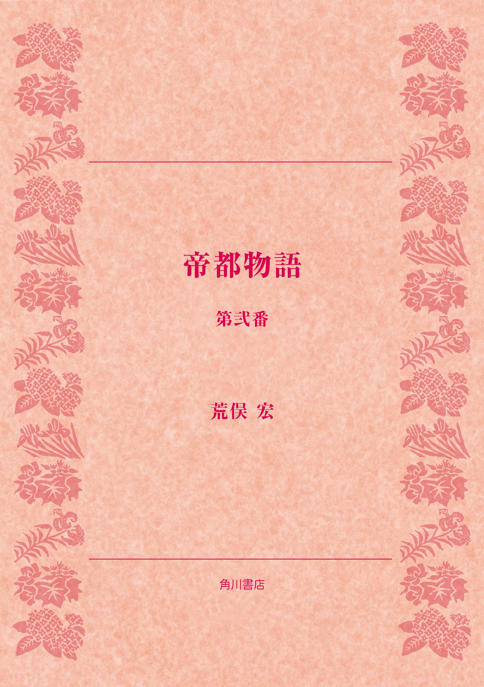
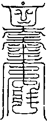
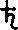
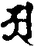
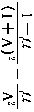
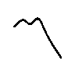
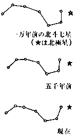
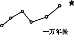
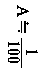

| 帝都物語 第弐番 | |
| 荒俣 宏 | |

帝都物語
第弐番
荒俣 宏

角川ｅ文庫
本作品の全部または一部を無断で複製、転載、配信、送信したり、ホームページ上に転載することを禁止します。また、本作品の内容を無断で改変、改ざん等を行うことも禁止します。
本作品購入時にご承諾いただいた規約により、有償・無償にかかわらず本作品を第三者に譲渡することはできません。
本作品を示すサムネイルなどのイメージ画像は、再ダウンロード時に予告なく変更される場合があります。
本作品は縦書きでレイアウトされています。
また、ご覧になるリーディングシステムにより、表示の差が認められることがあります。
まえがき
『帝都物語』中のハイライトとも呼べる本巻は、関東大震災後の帝都復興を背景とする、きわめて破天荒な物語である。こうして神戸大震災にかかわる毎日のニュースに接する現在、ここに描かれた前回の復興活動との格差が、すこしずつ大きくなっていくようで胸が痛い。
本巻は、大震災後の都市づくりが二つのアイデアにもとづいて計画されたことをあきらかにする。ひとつは後藤新平の放射状都市であり、もうひとつは寺田寅彦の地下都市である。
しかし、一九九五年の今、同じような災害から復興せねばならぬ場面に立たされたわたしたちには、後藤新平もいなければ、寺田寅彦もいない！ まして、幸田露伴が文学者の立場から市民に「冷静な復興を」と呼びかけたことを、現在に引きつぐ作家もいないとは。
こういうなかで、『帝都物語』は風水に注目した。本巻には渋沢栄一の口を借りて、風水による都市づくりの基本が説明される。
「竜脈とは風水で最も重要な概念じゃそうな。つまり大地の勢力、ハイカラな言葉でいえばエネルゲアとかエネルギーとかいうものと思えばよろしい。これが滞りなく走る土地は、大地のエネルギーに恵まれ、天災からも守られる。だからして、中国では家を建てるにも濠を掘るにも、風水先生にうかがいをたてる。風水先生は羅盤と称する一種の磁石で竜脈の方向を測り、建物のエネルギーの流れを止めぬよう気をくばる。これを怠れば、家相や墓相が悪くなる。また、あまりに強力な竜脈の場合には、これを封じるために築山をつくったり、わざと濠を切ったりする」
と。この竜脈を断てば、東京は衰退する。わが加藤保憲はこの竜脈を断つことによって、帝都東京をほろぼそうと画策するのである。
実は江戸時代にも竜脈を断ったために衰退が懸念された歴史がある。八代将軍吉宗のときである。
そのころ江戸は、いたるところに水道を通し、大地の竜脈を断つ工事をおこなった。水のエネルギーを運ぶ地脈がこうして断たれ、水が枯れることによって熱風がさわぎ、江戸に火事が頻発するようになったのである。このため吉宗は、コンサルタントの室鳩巣からアドバイスを受け、神田と玉川の二上水を残して、他の上水を埋めもどす指令をだした。
これと同じことが、昭和二年以来、東京にもおこった。とくに重要なのは、地下鉄の開通である。地下鉄により竜脈が切られた東京。これを救うべく立ちあがるのが、風水師黒田茂丸というキャラクターである。現在、著者が執筆しつづける新シリーズ『シム・フースイ』（角川ホラー文庫）の主人公黒田龍人の祖父にほかならない。
ねがわくば、『帝都物語』を読了後に、孫の活躍にも目を向けていただければ幸いである。
〈登場人物〉
平将門 平安期関東最大の英雄。中央政権に刃向かい、関東を独立国化したため討伐されたが、その一生は関東ユートピア設立のためにささげられた。現在もなお大手町のビルの一角に残る将門首塚は、すでに千年間、東京の中心を鎮護しつづけている。
寺田寅彦 日本を代表する超博物学者、夏目漱石の一番弟子。江戸末期にふとした事件から実弟を手にかけて死なせた父のやるせない思いを無意識に受けつぐ一方、物理学者でありながら超自然や怪異へも限りない興味をいだきつづけた。迫りくる東京滅亡を必死で喰いとめようとする少壮の学士。
渋沢栄一 明治期東京を代表する実業家で、自由競争経済建設の指導者。パリ万博におもむいた幕府使節団の一人で、第一国立銀行の頭取をつとめるなど金融体制の設立にも力があった。儒教倫理の持ち主らしく、怪異・神秘に対しては「怪力乱神を語らず」の姿勢を通した。
幸田露伴 本名は幸田成行。明治期最大の東洋神秘学研究家の一人。その著『魔法修行者』『幻音論』などの奇作と並び、因縁めいた評伝『平将門』などは、『帝都物語』の読者には必携必読であろう。『八犬伝』の熱烈な支持者でもあった。また彼には『一国の首都』と題した長大な東京改造論があり、後年には寺田寅彦と親交を結び、渋沢栄一の伝記をも著している。
鳴滝純一 理学士。辰宮洋一郎の旧友で、怪事に巻き込まれた辰宮由佳理を助けようとするが、妹の変事に無関心な兄、洋一郎と対立する。
辰宮洋一郎 大蔵省の若き官吏。帝都改造計画に加わり、明治末期から大正にかけての歴史の奔流を目撃する。復興院事務官。
辰宮恵子 洋一郎の妻。旧姓、目方。旧中村藩相馬の地に社を護り、平将門を祖に祀る俤神社の宮司の娘。ある日占夢により、帝都の守護聖女として洋一郎のもとへ嫁ぐ。
辰宮由佳理 洋一郎の妹。強度のヒステリー症状ないしは一種の霊能を有し、そのために奇怪な事件に巻きこまれる。精神を病んで森田正馬医師の治療をうけるが、帝都に撒かれた怨念と復讐の種子は、彼女を通じて不気味に開花する。
辰宮雪子 辰宮由佳理の娘。魔人、加藤保憲の次なる陰謀の的になる。
加藤保憲 陸軍少尉、のち中尉。帝都に怨霊を喚び、古来最も恐れられた呪殺の秘法「蠱術」を使う。陰陽道、奇門遁甲に通じ、目に見えぬ鬼神「式神」をあやつる。辰宮由佳理をあやつる真の目的は何か。帝都の命運はこの怪人物の掌中に握られている。
クラウス 救世軍に籍を置く独逸人医師。狂った母子の治療に当たる。
後藤新平 東京市長から震災後、大東京復興院総裁として手腕を発揮する。
早川徳次 高野山登山鉄道を再建し、英国に倣い、東洋初の地下高速鉄道敷設に燃える。
今和次郎 東北出身で、考現学という都市の人々の動向調査をし、早川、寺田らに刺激を与える。銀座の三奇人の一人。
黒田茂丸 報徳社の一員。尊徳仕法という経済論を示し、二宮尊徳を祖とあおぐ結社の中で地相占術を心得、竜脈を探る力を持っている。風水師と呼ばれる。
西村真琴 人造人間の発明、研究家。地下鉄工事にロボットの使用を唱える。学天則という東洋哲理を信奉する奇人。
泉鏡花 明治、大正、昭和の三代にまたがり唯美的文学世界を形成し、異才と謳われた。神楽坂七不思議の一人として辰宮恵子の力杖となる。
大震災篇
序 雷雨の夜
その夜、夜半から降りだした雨は、一気に車軸を流すほどの大雨にかわった。雷鳴がとどろき、稲光りが夜空を裂き、あちこちで落雷のための停電がおきた。
築地の聖路加病院でも、つい二時間ほど前に停電さわぎがあり、ようやく各病室にろうそくが行きわたったところだった。自家発電もあるにはあったが、その夜は緊急の手術が予定されていなかったこともあって、病室内の明かりはろうそくで代用されることになった。
だから、その夜の聖路加病院は、いつにない暗さに覆われることになった。
午前二時をまわった頃、二人の看護婦の巡回がはじまった。別に、ろうそくを持った用務員が一人付いて、総勢三人で病室をまわる。
三人が長い廊下に出たとき、窓ガラスを打つ雨つぶが滝のように流れ、いくら窓を覗いても、外のようすが見えなかった。
いやに蒸し暑かった夜が、深夜にはいってから噓のようにそら寒くなっていた。これが八月末の夜かと思うくらい、ひんやりとしてきていた。だから、雨の音や雨粒の流れが、よけいに彼等をふるえあがらせた。
ときおり青い光をうつしだす窓に沿って、三人が廊下の中間部まですすんだとき、看護婦の一人が声をあげた。
「待って！」
用務員が足をとめ、残った一人の看護婦がやや後方から追いついてきた。
「どうしまして？」
「ほら、これ......」
ろうそくの光を照り返すものがあった。いくつかの水たまりが廊下をよぎって、その先にある診察室の奥へつづいていた。
「水たまりじゃありませんの」うしろから来た看護婦がつぶやいた。
「でも、ほら、廊下の窓は割れてませんわ。だれか雨に濡れた人が、ここを横ぎったのですわ」
「それじゃあ、第一診察室の当直をなすっている先生じゃありませんこと？」
「変ですわね。先生なら、病院内にいらっしゃるはずですもの。ずぶ濡れにおなりになるわけありませんでしょ？」
そのとき、用務員が、押し殺したような声をあげた──
「血！」
「え、なんですって、おじさん？」
「ち、血でがす！」
背の低い用務員は、無精ひげのある赤ら顔を上に向け、声をふるわせた。
「血ですって？」
たしかにそのとおりだった。どす黒く見えた水たまりに、よくよくろうそくの灯をかざしてみると、それが赤く染まっているのがわかった。
「血でしょうか？」もう一人の若い看護婦が年長のほうの腕にかじりついた。
「何ともいえませんわね。とにかく、跡をつけましょう」
年長の看護婦は気丈に答えると、水たまりの列が向かっている第一診察室の入口へ歩きだした。扉を押してみた。
ギィー、と、かすかな音がした。
「あくわ！」
看護婦は驚いて、扉の合わせ目に灯をあてた。夜間は鍵がしまっているはずだったが、見ると、錠が留め金もろとも引きちぎられている。
錠を引きちぎるとは、とても人間わざではない！
「見て、引きちぎられてるわ」看護婦は用務員の肩に萎えかかり、かろうじて体をささえた。
「強盗ですわ！ あなた、すぐ当直室へ報告してらっしゃい！」
若い看護婦はこくりとうなずき、ハタハタと音をたてながら廊下を走り去った。
「いいことね、おじさん、はいりますわよ」
看護婦はキッとくちびるを嚙み、すこしずつ扉を押しあけた。
中はまっ暗だった。診察室の内部には窓がなかったから、廊下の青い稲光と、一本のろうそくだけが唯一の明かりであった。
用務員がろうそくを突きだした。廊下からつづいている水たまりが、診察室の中をもよぎっていた。
奥にある薬剤室の入口にのびている。
「薬剤室の中よ！」
「薬を盗みにきた賊でがしょか？」
「とにかく用心ね」
看護婦は人差し指を口にあて、こんどは用務員を先に出して、奥の薬剤室をめざした。
たしかにこれは血だまりだった。血特有の、とろんと重い匂いが鼻をついた。
用務員は薬剤室の引き戸のかげに張りつくと、ろうそくを低くして、しずかに引き戸をすべらせた。
戸がすこしずつ開く──
薬剤室の一角に、青い光がポッと浮きあがっていた。
「だれかいるでがす！」
「シッ！」
看護婦は用務員の口をおさえ、身をかがめた。
青い光の斑の中に、二つの影があった。一つは、どす黒い衣を頭からすっぽりとまとった男。そしてもう一つは、やはり黒い巨大な犬の影だった。
濡れて光った犬の腹が、はげしく弾んでいた。ハッ、ハッ、という連続的な息づかい。また、ときおりは低い唸り声も聞こえた。
男のほうは、うずくまったまま熱心に片手を動かしていた。その動きが、肩の動揺でわかる。
アルコールの匂いが二人の鼻を襲った。そして、今までに嗅いだ記憶もない異様な臭気が──
看護婦は胸がむかつき、手で口を塞いだ。食べたものをすべてもどしたくなるほど強烈な悪臭だった。
とつぜん、ずぶ濡れの黒犬が巨大な首を上げ、うしろを振り返った。
「気づかれたわ！」
看護婦は事情を察すると、すぐに立ちあがって引き戸をあけた。
用務員が持っていたろうそくの光が、薬剤室の内部を照らした。
血！
男のまわりにたまったどす黒い水たまりが、気味わるい赤さをたたえていた。男自身もずぶ濡れだった。
「だれです、あなたは！」
看護婦はそう叫んで、入口に立ちふさがった。
人影がゆっくりとうしろを振りむいた──
げっそりと痺せこけた頰、黒ずんだ眼窩、そして裂けたように紅いくちびる。男には生気がなかったが、しかしその口もとには嘲笑が宿っていた。
看護婦は眼光に圧倒されてあとじさりし、戸口に手をついた。
アルコールの匂いと、正体不明の悪臭が、波のように彼女を襲った。一瞬、女の頭の中が冥くなった。
いま、奇怪な侵入者は入口のほうを向き直っていた。左肩を覆った赤い衣が無惨に引き裂かれ、肌があらわになっていた。
その肩口に、見るも恐ろしい赤色の稲妻が走り下っていた。刀傷のような傷口だった。
しかし、そのむごたらしい傷口のところどころに、白っぽい塊りが貼りついて、もぞもぞと蠕動していた。まるで蚕子のような、白くて巨大な芋虫が四匹、その傷口にへばりついていて、さかんに腹を波打たせていた。
見ると、黒犬と男のあいだを埋めつくした血だまりの中に、同じように巨大な蛆どもが集まって腹を波打たせている。
血を飲んでいるのだ！
看護婦は、その気味悪い芋虫の群れを見て、そう直観した。あまりのおぞましさに、用務員はろうそくを放り出し、診察室のほうへ逃げていった。
とたんに黒犬が起きあがり、血だらけの床を一蹴りすると、唸り声を発して用務員の背におどりかかった。
鋭い爪が服を引き裂き、どっと血が噴きだした。黒犬は間髪を置かず、用務員の咽喉笛に喰いついて、巨大な体を強引にねじった。ぶるんと体がねじれて、霧みたいな水滴がワッと部屋中に降りそそいだ。
用務員はギャッと悲鳴をあげ、床に倒れこんだ。
「何をするんです！ 人殺し！ 警官を呼びますよ！」
看護婦は絶叫し、薬剤棚のほうへ逃げのびた。ガタンと背中が棚にぶつかり、無数の薬瓶が一斉にカタカタと鳴った。
しかし黒犬は容赦しなかった。低く不気味な唸りを発し、さっきと同じように巨大な後脚で床を蹴った瞬間、看護婦の胸もとに鋭い牙を突きこんだ。
看護婦は、驚きのあまり悲鳴を発するひまもなく昏倒した。
黒犬が、牙を突きたてた頭を右に左に激しくひねった。やがて、白衣にどっと血がほとばしり、彼女の胸が破れた。
それをみつめていた男は、冷たい、ぞっとするような嘲笑を浮かべた。
看護婦の胸もとからあふれだした血が、芋虫の集まっている血だまりに合流すると、虫たちの動きが急に活発になった。波打つ腹の動きが急になる。新鮮な血を迎えるかのように──
人影はふたたび、肩の傷口に目を落とした。そこに貼りついた芋虫は、さかんに腹を波打たせながら、細くてねばねばした半透明の糸を吐きだしていた。その糸が次々に傷口を覆い、まるで縫合手術でもするように表層を包みこんでいた。
男は、動きが不活発になった一匹を傷口から引きはがし、血だまりに投げだすと、そこから別の一匹を拾いあげて、肩に押しつけた。
不気味な虫はぴたりと傷口に吸いつき、激しく腹を伸びちぢみさせ、奇妙な糸を吐きだしはじめた。一方、血だまりに戻されたほうは、生気をふき返し、新鮮な血をむさぼるように吸いだした。
「血蚕どもよ。もうよい......」男はそうつぶやき、傷口から芋虫どもを払い落とした。血蚕は、支那の魔術に伝えられる妖虫。これに血を吸わせれば、人の肉をも縫合する力をもつ糸を吐きだすという。古代の魔術師たちは血蚕の糸で網を作り、あらゆる種類の怪物や霊獣を捕えたという。一説によれば、周の時代まで宮廷にいた竜使いは、血蚕で編んだ網を使って竜を捕え、飼い慣らして宮殿に放したという。
「ちっ、それにしても幸田めが！ 二度までもこの加藤保憲に──」
男の暗い瞳に憎悪の炎が燃えあがった。
「幸田め、いまに見るがよい。すでに竜は動きだしたぞ。もはや東京は死の運命をまぬかれんのだ──」
男はよろけながら立ちあがり、廊下をめざして歩きはじめた。吐く息が荒かった。
「──数日を経ずして、東京は滅びる。そして......くッ......幸田、きさまも死ぬ！」
加藤とみずから名のった深傷の男は、血蚕を使って傷をふさぐために、聖路加病院へ侵入したのだった。
それも、わずか数時間前に。加藤は大蔵省の首塚で待伏せていた幸田成行、鳴滝純一と闘い、不覚にも傷を負った。
しかし、錬丹道の奥義をきわめ、綱のように強靭となった彼の肉体は、おびただしい血を失いながらも、そこから歩いて数十分も離れた聖路加病院にまで、彼をたどりつかせることに成功した。
加藤保憲は、式神の下僕である黒犬を呼び寄せ、黒犬の耳の中に寄生する血蚕を養って糸を吐かせた。もはや正気を保っていられぬほど失った血を、さらにこの妖虫に吸わせ、必死の思いで傷の縫合を開始したのだった。
聖路加病院の外は、まだ雷雨がはげしかった。しかし、一命をとりとめた加藤にとって、この雷雨は恵みの雨に一転していた。
嵐よ、吹け
雷光よ、闇を裂け
──もはや東京に天罰は下ったのだ。
地の巨竜はすでに狂いだした。そして東京の地下に眠っていた怨霊どもも目をさました。
やがて東京の地は裂け、天地が揺らぎ、すべてが血と火に包みこまれるのだ。
加藤は大声で笑った。復讐はなしとげられるだろう。東京は、彼の怨念のために滅びるだろう。
そして、運命の大正十二年九月一日は近づいた。
巻一 永遠の月
巨大な銀色の月が、どこまでも青白い虚空のただなかに浮かんでいた。
月のふちにたまった銀色のしずくが、ぽたぽたとたれて、辰宮由佳理がうたた寝する座敷を、うす明るく照らしだした。
わたり廊下をはさんで南側にひろがる中庭は、いたるところ銀鍍金されたように、冷たくかがやいていた。
夢のなかで見る月は、途方もなく大きかった。頭がずしんと重く、まっすぐに立ってはいられないほど、大きかった。風ひとつ吹かない夏の一夜。それでも由佳理の夢にあらわれた月は、凍るように冷たかった。
ウーン
由佳理は寝汗にまみれながら、寝がえりを打った。青い貌が半回転して、中庭のほうを向いた。
そのとたん──
チカチカと瞼を刺激するまばゆさに、目が痛んだ。閉じた瞼の裏側まで銀色に染まるほどの光。しかもその光は、銀の剣のように固く、鋭かった。
由佳理は目をしばたたき、眉間にふかい皺をきざんだ。
まぶしかった。
真夜中だというのに、なぜ、これほどまぶしいのだろうか。理由のわからぬ頭痛が、彼女に襲いかかった。
いたたまれなくなって、彼女はついに目をさました。一瞬、猫のように細く絞りこまれた彼女の瞳孔が、金色に反射した。
はじめは夢かと思った。今しがたまで夢に見ていた月よりもさらに巨大で、さらに銀色めいた、うすっぺらな円盤が、青白い虚空にかかっていた。
奇妙に青白い夜空。しかもそれは、長い歳月を風雨にさらされた結果、無惨に色あせた哀しみを、ふかくたたえていた。
夜空のふしぎな白さが、実は巨大な月の光を浴びているためだ、と気づくまでに、しばらく時間がかかった。しかし事情をおぼろげに理解した瞬間、由佳理は弾かれたように上半身を起こした。
不吉な思いが胸をかきむしった。
彼女はわたり廊下のほうへ這いでていって、空を見あげた。
巨大な──あまりにも巨大な月が、そこにあった！
何度も目をしばたたいてみた。しかし夢ではない。彼女を照らしだすその月は、まちがいなく本物だった。
頭が痛かった。割れるほど痛かった。月の引力を受けて、髪の毛が逆立つようだった。
由佳理はどうしてよいかわからず、ただ恐怖にかられて立ちあがった。
足がもつれた。まっすぐに立つことができなかった。太陽のそばを直進する光が、その引力を受けて大きく弧を描くように、彼女の体もゆがんだ。半身を廊下がわに押しつけられるような気がして、背骨がはげしく反りかえった。
由佳理は必死で柱にしがみつき、足もとを安定させた。それでようやく息がととのい、銀色に染まった中庭を見わたす余裕ができた。
見ると、塀のかげに小さな人影があった。巨大な月を見あげながら、しくしくと泣いている少女。
──雪子！
由佳理は声にならない声をあげた。
しかし母の無言の呼びかけに感応したのか、少女は由佳理のほうに顔を向けた。いくすじもの涙が、かたちの良い頰を伝っていた。
由佳理の足が、思わず庭へすべり降りた。冷たい庭石の肌ざわりが、彼女の背骨を電気のように伝っていった。
庭を歩きだすと、月の重みが一段と加わった。水の中を歩くよりもなお大きな抵抗があった。しかし、わが子をまもろうとする母の本能が、由佳理を駆りたてた。
「雪子」と、彼女は叫んで、少女を抱きとめた。
「どうしたの、雪子？」
雪子と呼ばれた幼な子は、あどけないけれど深い哀しみを知っている黒い瞳を上げ、母の不安な顔をみつめた。その瞳いっぱいに、銀色の月が映っていた──
「お月さまが、死んだの」雪子は、か細い声でそう答えた。
「お月さまが、死んでしまったの。母さま」
雪子はささやきをくり返し、また涙ぐんだ。
「月が？ 死んだ、ですって？」
由佳理は驚いて、虚空に浮いた月を見あげた。
「お月さまは、もう動かないの。もうすぐお空の外へはねとばされるわ、母さま」
雪子が母の顔をみつめながら、ささやきつづけた。
「ほら、母さま、聞こえるでしょ？」
「何が？ 雪子？」
「お月さまがはねとばされる音だわ、ほら」
由佳理は娘を抱きしめながら、耳を澄ませた。とたんに耳鳴りがした。ギーンという鈍い音が耳を襲って、それっきり鼓膜を麻痺させた。
すべての音が消えた。しかし、そのあとにひろがったのは、死んだ静寂ではなく、ポッカリ穴のあいた音の空白だった。
雪子がしきりにささやいていた。しかし、声が聞こえない。
必死に耳を澄ませ、娘の声を聞こうとした。だが、かすかに聞こえたのは、少女の声の断片だった。
「え・い・え・ん・の・つ・き......」
「え？」と、由佳理が聞きかえした。
「え・い・え・ん......」
「永遠？」
「......つ・き......」
「永遠の月？」
少女はこくりとうなずき、熱い涙を流した。しびれた耳がやっと元に戻った。由佳理が表情をこわばらせて、娘に問いかけた。
「永遠の月がどうかしたの？」
「もうお月さまは欠けないの。いつまでも満月のままお空の外にあって、ある日ここに落ちてくるの」
「なぜ？」
「だって......」と、少女は口ごもった。そしてしばらくおし黙っていたが、やがて悲しそうにささやいた。
「だって......わたしがお月さまを止めてしまったのですもの」
その夜、大正の大震災を数日後に経験する東京市の虚空で、たしかに月は凍りついて動こうとしなかった。月が運行を止め、危険なほど地球に近づいたことを知ったのは、二人の母子だけだったが、それは惨劇の予告であった。
夢であったのか？ それとも現だったのか？ 翌日目ざめた由佳理には、ゆうべ見た巨大な月の意味を理解しかねた。ただ、まだ八歳になったばかりの娘がささやいた話が、亡霊のようにいつまでも耳に残っていた。
──お月さまを止めたのは、わたし。
由佳理はその声を思いだすたびに、かぶりを振って耳をふさいだ。いや、おそらく──
あの夜、二人が見た「永遠の月」は、死ぬべき運命を与えられた東京市の地霊たちが結んだ、最後の占夢だったかもしれなかった。
そして、そうこうするうちに夜が明け、九月一日の陽光が、運命の日の東京の空を、あかるく照らしだした──
巻二 壊滅する帝都
一 大正大震災第一報
「時事新報九月二日付号外」
帝都に激震襲う、大東京炎上
土の怒り、火の狂い、自然の凶暴にふみにじられた大東京および横浜に、有史以来の大惨事発生せり。
昨九月一日午前十一時五十八分その刹那のすざまじき大地の震動と共に、あるいは前後にあるいは上下に地と人とを揺がして止まず、さしもの大廈高層も一瞬にして潰滅し、大地は裂けて水を噴き、人は屋梁に圧されて傷つき死し、その混乱せる光景よく筆舌の尽すところでない。
しかのみならず、震動のなお激しきただ中に、倒壊せる家屋の一部は火を失し、狂風にあおられた火の粉は雨と四散したるため、出火の場所百二十余か所の多きに加えて、災害の魔手を免れた安全地帯にも飛び火し、大東京の盛観も、あわれ大猛火に焼き尽されて荒涼たる一大焦土と化しつつあり。
此の危急に際して我が時事新報社も一日夕、猛火の一舐めに逢いて本社及び工場の全部を失いたるが、同夜中に日本タイプライター会社より数台のモノタイプを購入し、本日二日早くも、東京新聞中唯一の号外を発行す。また追って詳報を読者の手に届け得ること近きにあると信ずる。
時事新報社
二 震災下の寺田寅彦
その日正午すこし前、寺田寅彦は上野のレストランで食事中であった。同席していたのは、友人の画家津田青楓だった。一日はたまたま二科会展の招待日にあたっていて、寺田も見物に来ていたのだ。しかし、紅茶をすすったとたん、激震が二人を襲った。
轟音とともに激震が二階の食堂を揺るがした。人々は悲鳴をあげ、一斉に椅子から立ちあがった。天井のシャンデリアが荒天の捨小舟のように大きく波うち、次いで窓ガラスが音を立てて割れだした。
寺田はナイフを握ったまま、卓にしがみつき、身を低くして上を見あげた。さいわいなことに、頭上にシャンデリアはなかった。
つづいて、第二の震動が襲い、大きな食卓がすべるようにして動きだした。彼は必死に足を踏んばり、卓の移動をふせいだ。
給仕が盆を放りだし、出口へと急いでいく。客たちが奔流のように卓のあいだを走り去り、階下へと向かった。
寺田は周囲を見まわした。二階に残ったのは、彼と津田画伯、それに部屋の中央付近に席を占めた一組の夫婦と、二、三人の給仕だけだった。
「みなさん！ 動かんほうがいい。ここは安全だから！」
夫婦が恐怖にかられて席を立とうとしたとき、寺田は大声でそれを制した。彼の声に圧倒されて、夫婦も給仕たちもその場に釘付けになった。
「頭に気をつけなさい。卓の下にもぐることだ！」
寺田がふたたび声をあげた。そのとたん、巨大なシャンデリアが床に落下した。ガラスと蠟が飛沫となってとび散った。
寄せては引く震動がようやくおさまりを見せた頃、寺田は食卓から離れ、小走りに階下へおりた。
階下はひどかった。食卓という食卓がくつがえされ、食器があたりに散乱していた。
そのとき、とっさに思ったのは本郷の屋敷のことだった。幼い子供たちは大丈夫か。
寺田は津田と別れ、食堂を去って街路へ出ると、本郷の方向へ走りだした。あたりにはたくさんの市民がへたりこんでいた。電信柱にしがみついている者もいた。路上に不気味な亀裂が走っていた。
人々はまだ呆然としていた。何が起きたのか理解できないという面持ちだった。
ザザーと降ってくる屋根がわら。
いななき、さわぐ馬の声。だが、まだ人々の口からは声が出ていなかった。激震のために金縛りとなった市民には、すべての出来事がまだ夢のようだった。
東照宮の前を通りすぎるとき、境内を覗きこむと、石燈籠が倒れているのが見えた。おそるべき震動が東京を襲った証拠だ。
やっと電車道に出て、弁天前の停留所へ駆けつけたが、電車は動いていなかった。線路があちこちでひん曲がっており、とても運転できる状態ではないという。
寺田は、あきらめて動物園の裏手へ回ろうとした。しかし丘の上から低地帯のほうを眺めて、身の毛がよだった。まるで九州の桜島のように、家々が並んだ街路のはずれから白煙があがっていた。
──東京中が火の海になるかもしれんぞ。
ふいに悪寒が走った。彼は急に不安になり、谷中の三崎町へ出て団子坂をめざし、そこから千駄木を越えて、曙町の方向へ走った。
途中、息をつぐために足をとめ、後方をふり返った。さっきの白煙が、早くも黒い煙に変わり、火の粉が降りはじめていた。
屋敷へ向かう途中、墓地のあいだを突っ切った。多くの墓石が倒れ、巨大なものは方向を変えていた。
──墓石の倒れ具合で、地震の大きさと方向がわかるな。
寺田は心の中でつぶやいたが、今はのんびりと地震調査を手がけている時期ではなかった。
やっとの思いで本郷の屋敷にたどりついたとき、余震はまだつづいていた。しかし、ともかく家の者たちを呼び集めることにした。さいわい、子供たちに大事はなく、家にも大した損害がなかったことがわかった。
寺田はホッとして、庭に落ちた屋根がわらを取りかたづけ、隣近所の被害状況を見て回った。
しかし、そうこうするうちに応用物理学教室の助手が寺田の許に駆けつけてきた。大学の被害が甚大で、医化学教室が火事だ、という。図書館なども大変な惨状だった。しかも構内で火災が発生し、図書館を赤い火で包みこまんばかりの勢いだ。寺田はあわてて助手とともに大学へ向かった。
だが、ほんとうの惨事はこのあとに起きた。激震の直後、箱崎町方面からあがった火の手は、たちまち東神倉庫や箱崎尋常小学校を舐めつくし、土州橋を焼いて日本橋蠣殻町へと延びはじめた。また、同時に本町方面からあがった火の手がここで合して、またたく間に東京の中心部を焼き焦がしだした。
あの七階建てを誇った壮大な三越呉服店、白木屋、若き渋沢栄一の活躍のあとを今に偲ばせた東京株式取引所、そして文人たちのサロン丸善、明治座などが次々に炎火に吞みこまれた。
火の手はもはや強大な破壊の壁に成長していた。品川から千住を抜ける鉄道から下手の側は、完全に火に吞みこまれた。それでなくとも数少なくなった濠割は、巨大な炎によっていとも簡単に跳びこされ、運河にかかる橋という橋が、蛇のように這いうねる火の手の餌食となった。
東洋の帝都に忽然と出現したロンドン、といった印象を人々に与えてきた煉瓦舗道の街銀座が、炎の中に消え、日本橋から丸の内にかけても荒涼たる焦土が残された。神田、小石川も同じく全滅、浅草では帝都のシンボルだった十二階凌雲閣が、中央からポキリと折れて瓦解した。
そして半蔵門から麴町、九段にかけてが炎上し、宮城のきわにまで火が押し寄せた。
悪夢がついに現実になった九月一日の夕暮れ、本郷の丘にたたずんだ寺田寅彦は、天空を不気味に染めあげる炎の海を見わたしながら、憑かれたように災害の予兆を思い返していた。
一六六六年ロンドン大火のこと。今村教授が明治末期に出した「大地震五十年周期」説、そして彼自身が感じていた漠たる不安──
いま、すべての予兆がひとつに溶けあって、耳を聾するほどの嘲笑を発しながら、寺田の頭の中を駆けめぐっていた。
大地震はついに起きたのだ──
三 帝都の地獄図
大阪朝日新聞九月三日（月）一面見出し。
飛電至る毎に東京の
災 害 は 凄 愴 を 極 む
食糧の輸送を求める急電頻々
帝都に戒厳令。二日東京全市に戒厳令布かれ、何人にも一歩も東京に入らしめず食糧品を携帯せるもののみ入京せしめている。
東京横浜方面の惨害は一報毎に激甚を加う、而して第一に困難しつつあるは糧食と飲料水の欠乏である。当局は全国に飛電し或は飛行機を飛ばして大量の飲食物急送方を要求している。惨害は今更何とも致方なし、今は只多数人民の朝夕に迫れる生命を維持することに努力を要するのみである。
大阪朝日新聞九月四日（火）夕刊。
死傷実に十五万人
二日午後二時半までに東京及び附近に於ける死傷者十五万人に上り本所方面の罹災者約三十万人である。
非 常 徴 発 令 の 発 布
入京を絶対に禁止さる
帝都の形勢は次第に悪化
▼三日午前十時内務次官より大阪、兵庫両府県知事宛次の無線電信があった。
『本日非常徴発令発布され被害者救援に必要なる物品は非常徴発書を以て地方長官に於てこれを行い得ることとなれば右御含みありたし』
大混乱裡の東京全市の形勢はその後益々悪化し二日午前発布されたる食糧品を携帯せざる者は絶対に入京せしめないとの戒厳令を更に三日午前零時に至り食糧品携帯の有無に拘らず何人と雖も絶対に入京せしめずということに改定された。これがためあらゆる困難と死を的に辛うじて東京に馳せつけた数万の人は涙を吞んで続々引返し各警戒線は勿論附近一帯は大混乱を呈している。
帝 都 は 見 渡 す 限 り 焦 土
本社船越特派員が決死的に目撃した東都の惨状
予（船越）は東京市全滅の飛報に接し一日夜九時富山から信越線に出で高崎、大宮を経て川口町に達すると荒川鉄橋傾斜のため列車不通というので徒渉して鉄橋伝いに赤羽に出で更に危険を冒して日暮里から上野に達すると早くも鉄道線路の上は避難民で一杯であった。前途の家屋は濛々黒烟に覆われ寄れない。やむなく上野の高台に上るとここも数万の避難民でひしめいている。ここから初めて東京市を見下すと真に物凄い光景で焦土と化した焼野は一目千里のようである。さすがの帝都も今は昔の武蔵野と化した。一日から起った大火は警視庁、赤坂見附、砲兵工廠、帝劇、高輪御所、印刷局、中央気象台、丸の内ビルなどの大廈高楼を訳なく嘗め尽した上、一日は夕刻から東京目貫の日本橋、京橋、下谷、神田、本所、深川方面に燃え広がり水道断水の上に旋風全市を吹き回ったので火の手は益猛り狂うのみで火の海と化し、数十万の避難民が上野、日比谷、芝、浅草、宮城前などの広場をさして詰め掛け夜を徹して喚く様はこの世ながらの焦熱地獄である。
〔第二報〕今の東京全市は焦熱地獄と化した。焼け出された死体は到る所の路傍にコロがって鬼哭啾々。住むに家なく食うに物なく悲惨を極めている。本所、深川方面は東京瓦斯タンク爆発のため一層死傷者多く、目黒の火薬庫も爆発した。両国、万世橋其他の橋梁も悉く焼け落ちた。これがため避難民は一層逃げ場を失った。本所、深川方面の死者のみにても数万と註せられ、浅草公園の池には女子供の死体が一杯になり、血の池と化している。本所の元被服廠では避難民三千人が紅蓮の焰の包囲攻撃を受けたので被害甚しかったため路傍に焼けたる死体が累々と積み重なって誰とても片付けるものなく酸鼻の極である。
大震災の衝撃は、豪胆をもって鳴る野の文士幸田成行をも容赦なく襲った。
しかし彼は、災害の発生そのものに恐怖を抱いたわけではなかった。それより何倍も不気味なのは、着のみ着のままで焼けだされた東京市民のあいだに、捨てばちな気風が流れ、精神の荒廃につけこむ淫祠邪教が人心をむしばみだすことであった。そうでなくとも、近頃東京にはコックリと称するお筆先あそびがはびこり、太霊道をはじめ多くの神秘的な新宗教が「奇蹟」や「予言」を餌に人々の関心を集めていた。
物質的な破壊であれば、これを回復する手はいくらでもある。しかし、東京市民が明治以来の勤勉さを失い、刹那的な悦楽や邪教に身をまかせるようなことになれば、東京はその魂から腐りはてる。
幸田が恐れたのは、まさにそのことだった。彼はその夜、闇を焦がす火がいまだに猛威をふるうなか、決然として筆をとり、東京市民にあてて訴えの文章をつづった。
親愛なる東京市民諸君、いまや我々は未曾有の破壊に見舞われ、なすすべを知らず茫然自失の中にある。
しかし諸君！ 東京市民はその逞しい精神力を発揮して、必ずや帝都を復興させるであろう。余はそれを信ず。我々に不撓不屈の精神がある限り、敗北はない！ だが心せよ！ 災害の混乱に乗じて魂を腐敗させ精神を弱化させる偽りの宗教が、恐るべき淫祠邪教が早くも我々を餌食にせんと蠢動しはじめるであろう。混乱こそ、奴らの好機なのである。
幸田成行は、檄文を書いては破り、破っては書き直した。いま、文士にできることは市民を力づけ、警告する文章を書くことだけだ、と彼は信じたのだ。
幸田は書いた。その夜、災害のちまたを忘れるほど作業に没頭した──
しかし、彼の心痛はすべて現実となって東京を走ったのだ。まず、「不逞鮮人」の襲来だという根も葉もない流言が口から口に伝わって、信じがたい同士討ちが発生した。
そして九月二十日には、突如として陸軍当局から奇怪なる発表が行なわれたのである。その発表とは、二十日付けで憲兵司令官小泉少将と東京憲兵隊長小山憲兵大佐が停職を仰せつけられた、とのことであった。理由というのがまたまた奇怪で、九月十六日に職務執行中であった東京憲兵隊憲兵大尉甘粕正彦が「違法行為」に及んだためだという。したがって前記二名は部下監督不行届の責任をとり、処分を受けることとなった。そして当の甘粕大尉は軍法会議に付せられているという。
東京市民はこの発表を、きつねにつままれたような思いで受け取った。違法行為とはいったい何なのか？
動揺がひろがる中、ふたたび陸軍当局は次のような発表を行なった。
「甘粕憲兵大尉は本月十六日夜、大杉栄ほか二名の者を某所に同行し、これを死に至らしめたり。右犯行の動機は甘粕大尉が平素より社会主義者の行動を国家に有害なりと思惟しおりたる折柄、今回の大震災に際し無政府主義者の巨頭たる大杉栄等が震災後秩序未だ整わざるに乗じ、如何なる不逞行為に出ずるやも測りがたきを憂い、自ら国家の害毒を芟除せんとしたにあるものの如し」
殺害されたのは、大杉と、内縁の妻伊藤野枝、そして甥の小児宗一であった。
また平沢計七を首領とする社会主義者の一団は、「帝都の混乱を屋上から望見し、かえってこれを喜ぶがごとき言動」を行ない、亀戸署に検束されてのちは、「同署に収容されていた七、八百名の鮮人を煽動した」ために、ついに軍隊により刺殺された。
これら当局の行き過ぎと混乱の中で、東京の人心は幸田が恐れたように、いよいよ不安の度を増していったのだった。
四 炎の中の母子
麴町に発した火が辰宮邸の近くに迫りだしたとき、屋敷には当主辰宮洋一郎のすがたが見えなかった。
老いた父母と、由佳理と、それから数人の女中と書生。それに雪子がいただけであった。
もちろん、洋一郎が家族の安否をたずねて自邸に戻ってくるはずもなかった。大正期にはいるとともに大蔵省内に地歩を築いた洋一郎には、もはや家族をかえりみる暇もなかったのだ。
彼は四十歳になってもなお妻を迎えず、ひたすら大蔵省の役職に全精力をそそぎつづけた。いや、近ごろは東京市との予算折衝担当となったのを口実に、ほとんど生家へ寄りつこうとしなくなっていた。
だから、震災後の大火事をもってしても、洋一郎の帰宅を期待することはできなかった。おそらくそのとき、洋一郎のことをすこしでも思っていたのは、父母にうながされて逃げ仕度をはじめた妹の由佳理だけだったにちがいない。
由佳理はたしかに兄を思っていた。
しかし、二十年も昔、大蔵省の御手洗池で見た、真赤な太陽と水に浮かぶ死者の幻影を、いまここで実際に見て、彼女の心は一瞬いつもの暗闇を消しとばした。すべての光景が生きいきと──まだ加藤保憲の魔術に魂を奪われない時代の、あざやかな日常の輪郭が、脈をうつようにして彼女の感覚を刺激した。
由佳理は、まるで何十年かぶりに我に返った失神者みたいに、見慣れない自宅をながめまわした。しかし、黒いキラキラした瞳をじっと向けている雪子にぶつかったとき、彼女の母性本能は目を醒ました。
「雪子、逃げるのよ！」
由佳理は反射的に娘を抱きよせ、簞笥から出した身の回り品を風呂敷に包みこむと、少女の手を引きだした。
「逃げてください！」書生のどなり声がした。
「由佳理や、雪子を連れておいで！」父の声がそのあとにこだました。
廊下に出ると、もう空は赤く染まっていた。黒い煙と火の粉が庭にあふれていた。
「さあ、いらっしゃい」と、由佳理は少女をせきたてた。けれど、何を思ったのか、雪子は座敷に駆けもどり、さっき母が包み残した小間物をかきまわして、白い手巾を一枚つまみあげた。
「何をしているの！」
母の声にはじかれて、少女は白い手巾をまるめると手に握り、由佳理のそばに戻ってきた。
「行きますよ、雪子」母の声が鋭かった。
少女は目を見ひらいたまま、こくりとうなずいた。
「お家が燃えないように、七福神を置くの」と、雪子がささやいた。
塀の外では、大八車のやかましい音がひびき、逃げまどう市民の悲鳴が足を急きたてるというのに、その瞬間だけ、母子のまわりに沈黙がおとずれた。
屋敷ぜんたいが白い泡になってくずれていくような気がした。
その中に雪子がしゃがみこみ、たもとから小さな箱を取りだして、廊下のかたすみに置いた。
その動作が終わるまで、沈黙と白い泡は二人のまわりを聖域として守りつづけた。
そして──
「さ、いいわね、行きますよ！」という由佳理の声が、二人をふたたび混乱のただ中に引き戻した。
少女はふたたび、うなずいた。
何の小箱なのだろう。
雪子はそれを七福神と呼んだ。
「お守りしてくれるわね、お家を。母さま？」
「ええ、雪子の七福神が、かならずね」
父母も書生たちも、二人がささやき交わした謎めいた言葉の意味が吞みこめなかった。
しかし、そんな世迷言を聞きただしている暇などなかった。
辰宮家の人々はすぐに雑踏の中へ混じりこんでいった。もう、あの白い箱のことを思いだす人さえいなかった。
さわがしい街路をすすむ人の波。その中に由佳理と雪子がいた。片手を母に引かれながら、黙々と歩きつづける少女は、泣き声ひとつあげなかった。
飛び交う煤が少女の顔を汚した。少女は気づいて、片手にまるめて握りしめておいた手巾を頰にあてた。
手巾の一部に、黒い線が見えた。
少女は黒い大きな瞳を見ひらいて、その線を追いかけた。三角形に似た角がいくつも伸びたかたちだった。いいや、よく見ると、それは星の形をしていた。
少女は自動人形のように歩きつづけながら、手巾に染めぬかれた不思議な模様を見つめた。
むろん、それが何であるか、彼女に判ろうはずはなかった。
むかし、母を死ぬほどの目に遭わせた魔人加藤保憲が残していった、ドーマンセーマンの呪符であることなど、こんないたいけな少女に判ろうはずはなかったのだ──
一方、麴町から宮城の濠へ避難した人の波には、可憐で、しかもなお気丈な与謝野晶子も含まれていた。大地震の第一波は免かれたものの、第二波で屋根瓦が落下し、細い路地から大通りへ出る逃げ道を失った晶子は、子供たちをピアノの下に入れ、激震が止むのをまって裏口から濠の土手へ逃げだした。
幸い、夫も子供たちもみな無事だった。晶子は家族がそろったことで心を強め、火の手が鞠町を襲った二日間、他の安全な場所へ避難することもなく、濠の土手で野宿した。
そして晶子は九月二日の夕刻、灰燼に帰した帝都を濠の高みから見わたしている一人の男に出会った。奇妙な男であった。全身黒ずくめで、脚絆をつけていた。まるで、車夫か行商人のようないでたちだった。
その男は、帝都の惨状を眺めながら、何度も、何度も高笑いした。人々が生きるために必死の努力をし、また多くの救援隊が、わが身の危険をかえりみずに復興作業にあたっている折だっただけに、男の高笑いは不気味だった。
晶子は夫に、そっと、この男の話をした。「政府転覆をたくらむ者の仲間だろう」と、夫はつぶやいた。
しかし、晶子は女の直観で、男がただよわせる激しい殺気と怨念を嗅ぎ取った。いつまでも丸の内方向を見やりながら、高笑いしつづける男に、本能的な嫌悪感を抱いたのだった。だが彼女は、黒ずくめのこの男が、加藤保憲という呪うべき魔人であることを、つゆほども知らなかった──。
巻三 七福神をひろう少女
五 滝に打たれる人々──大震災前、六月のできごと
東京府は南多摩郡の山中に、薬王院という真言宗の寺がある。高尾山のふもとにひろがる原野が、ふいに緑の色あいをあざやかにするあたり。甲武線の浅川駅で下車し、高尾山にむかって一里ほど歩けば、もう薬王院だ。このあたりの緑がきわだってあざやかなのには、理由がある。近くにいくつもの滝があって、蜘蛛の巣みたいにか細い飛沫に、葉がいつも洗われているためだ。
薬王院の本堂にたどりつくには、この滝から発している流れにそうて、峰をめざしながら坂をのぼっていけばよかった。水量がけっこう豊かなせせらぎは、濡れた岩にふちどられている。また、あちこちに大磯がたまった川原もあった。土地の子どもが四、五人、手づくりの釣竿や四手網を持ちだし、川魚捕りに興じている。
眠そうなほど気だるい午さがり、大震災が帝都を襲う二か月ほど前の初夏であった。寺をめざして歩いてきた中年の紳士は、苦しそうに息をはずませていた。さぞや急いで山道をのぼってきたのだろう。胸ポケットからハンカチを出して額をぬぐったとき、その肩がはげしく波打っていた。
「琵琶の滝はこの先か──」
紳士はちょっと鼻にしわを寄せた。反射的に口ひげが釣りあがり、やや黄色味がかった歯がむきだしになった。気が急いているのだ。
もう初老を迎えたとはいえ、背すじがしゃんと伸びた人物である。それほどの大男でもなく、体軀もきゃしゃなのに、堂々とした偉丈夫といった印象を与えるのは、この姿勢の良さにあるようだった。
紳士はハンカチを無造作に胸に押しこむと、空を見上げ、ふたたび鼻のわきにしわを寄せた。そして一歩、二歩、大またで歩きだした。
そのとき、紳士の耳がピクリと動いた。かすかに水の落ちる音が聞こえたのだ。めざす琵琶の滝だろうか。
紳士は思いなおして歩をすすめた。十分ほど坂道をのぼりつめると、思ったとおり、目の前に白い滝のしぶきがあらわれた。
薬王院にほど近いこの滝の手前に、参籠所がひとつあった。粗末な板ぶきの小屋だ。木造二階建てで、材木はまだ新しかったが、いかにも素人づくりといった不器用さがめだった。
間口はおおよそ七間、奥行きのほうは四間もあろうか。道に向かう正面には、横に廊下が走っていて、これがちょうど見晴らし台のようになっている。二階にも同じような廊下があって、手摺りにそうて手拭いや布団がずらりと干してあった。
それと知らずに見上げた人なら、鄙びた温泉宿と取りちがえたかもしれない。
紳士は立ちどまって、だれか人がいないかとあたりを探った。
しかし、上天気のうえに午さがりという時間帯だ、参籠所に人気はなかった。琵琶の滝つぼか、あるいは清流をふちどる大磯へおりてしまったらしい。
紳士はあきらめて、玄関口に腰をおろし、もう一度ハンカチを出して汗をぬぐった。せわしない手つきだった。けれども、足もとからふいに影が伸びでてきて、紳士の顔をおおい隠し、凍りついたように動かなくなった。
紳士が目をあけると、そこに老いた異国人がひとり、立っていた。
「あの──」
黒っぽい服を着た異国人は、にこりとほほえんだ。紳士もぎごちなく笑いかえし、ことばを継いだ。
「あの、人を尋ねてまいりましたが──」
異国人はコクリとうなずき、たくみな日本語で返事をした。
「どなたか、ここにお泊まりですか？」抑揚がすこし変であったほかは、完璧な日本語だった。
「はい。東京から治療に来ておる婦人で、辰宮由佳理といいます」
「ああ、女の子を連れた？」
「さよう。その婦人です」
「そのお方なら、いまは川原です。さっき雪子という娘さんを探しに出ていかれましたよ」
「さようですか。ありがとう存じます」
紳士は帽子のつばにちょっと手をやり、あいさつをして立ちあがった。そして川原へ歩きだそうとしたが、ぐずぐずと足を止め、ややあってから異国人を振りかえった。
「外国のお方と見うけますが、あなたも──その、ここでご治療を？」
異国人は、おもしろくもない冗談を聞き流すかのように、そら笑いを浮かべた。
「いいえ、東京から参りました。救世軍の伝道医師で、クラウスといいます」
「クラウスさん？」紳士は小首をかしげながら、耳なれぬ異国の名を発音した。
「ヤー。奥さまですか、ここにお泊まりなのは？」と、ドクトルはたずねた。
「いや、ちがいます。知り合いの官吏の妹ですが、子ども連れで薬王院に来ておりますので、ちと心配になりましてな。老婆心というやつです」
「で、あなたは？」
「これは申しおくれた。てまえは幸田と申す東京の文士であります」
「幸・田さんですか。お見知りおきを」
異国人はまた微笑んで、幸田のほうへ近づいた。
「わたくしはここで精神病治療の手伝いをしています。東京の巣鴨病院が松沢村へ引っ越したのは、ついこのあいだのことですが、二、三の患者は転地も兼ねてこちらへ参っておるのです」
「それはご苦労なことで」幸田と名のった紳士は、窮屈そうな細いネクタイを緩めた。さっきから気ぜわしげな様子をしていたのは、洋服の感触に馴染んでいないせいらしかった。
「ですが、クラウスさん。こういう山中の参籠所は精神障害の治療を引き受けてもいるのでしょうかな。てまえは初めてなもので、ぶしつけなことをうかがいますが」
救世軍の異国人医師はふたたび笑みを浮かべ、嚙んでふくめるような話し方で答えをかえした。
「幸田さん。ここは真言宗の修行寺ですが、薬王と名があるように、滝にうたれる修行が精神病に効くというので、古くから病人が集まったところなのです。ことに五十年前に、こうして滝のそばに寝とまりできる参籠所が建ってからは、人々が押しかけるようになったそうです」
「なるほど、むかしは脳病院などありませんでしたからな。で、滝行や加持祈禱のたぐいをもって病気を治すというわけですか」
「いえ、もちろん修験の行者や占い師が、きつね憑きだといって心気症やら錯迷狂に怪しげな祈禱をほどこすことはありますが、寺では病人に滝浴びをさせます」
「灌滝というやつですな」
「いかがです、病人が滝浴びをしているところをごらんになりませんか」
「話のたねに、ぜひとも」
二人は連れだって、雑草におおわれた小径を下った。しばらく斜面を降りていくと、若緑色の葉むらがふいに切れて、白い糸を放射させる小さな滝があらわれた。琵琶の滝とは、どうやらこれらしかった。
滝の近くには、白衣をつけた人々がいた。滝に打たれる順番を待っているのだろう。すべりやすい岩場に、作務衣を着た僧が足をふんばって立ち、白衣すがたの病人に手をさしのべていた。これから灌滝をさせるのだろう。小さな滝ではあったけれど、これでなかなか水量は豊かだった。すでに病人がひとり、滝に打たれているのだが、白衣であることも手つだって、人のかたちはほとんど白い飛沫のとばりに消えてしまっていた。
「あそこです、幸田さん」異国人の医師が指さした。文士は、また鼻にしわを寄せ、歯をむきだすようにして遠方をみつめた。
「ここには灌浴のための滝がいくつかありまして。蛇の滝は高さ一丈五尺で、落ちてくる水のいきおいがすさまじいものです。弁天の滝は、わざわざ参籠所近くにこしらえた作りものの滝ですが、高さ一間半で女や子どもに使われることが多い。
「それから、あれが琵琶の滝といって、高さ三丈ほど──」
「幅は一間ほどでしょうかな」
「そんなものですね。水のいきおいは、あれでも弛いほうですから、たくさんの病人が打たれます。滝つぼも膝ほどの深さですから、まことに具合がよろしいのです」
幸田はうなずきながら、滝に打たれる病人たちを見まもった。さっき見えた作務衣すがたの僧が、一人の病人の手を引っぱり、そのまま滝のなかにはいった。病人がこわがって逃げようとするのを取り押え、しばらくいっしょに水を浴びた。そして病人がおとなしくなったのを確かめてから、岩場に戻っていった。
「あの坊さまは？」
「ああ、あれは合力といいます。病人の介添ですな。ああして修行僧が面倒を見たり、近くの百姓が日銭かせぎに引き受けたりします」
滝つぼの近くに、腰をかがめて読経している老人がいた。病人の家族らしかった。
「冬は辛いですな、病人には」と、幸田はつぶやいた。
「実は、灌浴の時期は毎年四月一日から十月三十一日と決められていて、病人の健康をまもることになっています。しかし、どうも真冬に滝に打たれる病人も多いと聞きますね。危険です」
「それは、また。政府は口を出さないのでしょうかな。こういう民間治療所へは？」
「うるさく言うようにはなってきています。現に、参籠した病人のうち、年に五、六人は死にますから。それで寺のほうも、滝浴びができる健康体だと医師が認めた病人だけを、ここに引き取ることにしているようです」
「なるほど」
幸田が懐中時計を取りだして、灌滝時間をはかった。さっきの病人は五分ほどで滝から出る許しをもらった。
「こういう治療を行なっている寺は多いのでしょうかな？」と、幸田。
「はい。千葉の葛飾には日蓮宗の法華経寺、行徳の原木山妙行寺など、東京のまわりにもいくつかあります。わたくしはそういう施設を回るのが仕事で、この薬王院には三か月前から来ています」
「修法はちがいますか？」
「はい、手荒いのは縛りあげる治療法もありますが、たいていは儀式にのっとったものです。鬼子母神をまつった大部屋で端坐したり、読経を行なったり。また静岡の穂積神社では神官が釜で湯をわかし、病人の頭にふりかけるというのもあります。湯祈禱というのだそうです」
幸田はゆっくりとうなずき、緑あざやかな木の葉に目を向けた。乾いた目をうるおしてくれる、やわらかな色あい──
「古来の霊道は死なず、というところですな」
文士はつぶやき、ふたたび視線を異国人にもどした。
六 雪子との出会い
二人は、さらに数分をかけて灌滝のようすを観察した。そのときにハッと気づいたことだが、滝の横にしつらえられた小さな仮小屋にも、何人かの病人がたむろしていた。白衣に着がえて滝の水を浴びる仕度をしている人々だった。その中に、大きな風呂敷づつみをかかえた和服の男が混じっていた。脚絆をつけているところを見ると、行商人らしかった。
「クラウスさん、あの小屋にいる旅すがたの男は何者ですな」と、幸田が耳うちするように尋ねかけた。
医師は視線を横にずらし、一つまばたきしてから白い歯を見せた。
「あれは富山の薬売りです。精神病や脳病に効く薬だといって、色々なものを売りつけにきます」
「ほほお、これはおもしろい。薬売りが持ってくる薬品の中身を知りたいものだが──」
「さるがしら、玉牛黄、ふきの根、それにきつねの舌の黒焼き、などです」
「さるがしら？」
「はい」
「つまり、エテ公の頭というわけで？」
「そうです。さるの頭蓋骨を黒焼きにし、粉末にします。丸ごと一個買えば、三、四円はしますよ」
「玉牛黄というのは、老牛の胆石ですな。この結石をけずって、粉にした薬で、中風に効くという」
「湯にいれて服みます」
「噂では、夜中に墓をあばいて死体の骨を盗みとり、これを煎じて服むと脳病に効くそうですな」
「へその緒を干したものでも、効くそうです」
「不気味な」
「ハハ」と、異国人医師は笑った。
「妙な話になりました。どうです、おさがしのご婦人はおられましたか」
幸田はあたりを見まわした。目で川原をたどっていくと、かなり遠くの大磯の上にポツンと立っている女が見えた。彼女のそばに、小さな女の子がしゃがんでいた。
女の子は、さっきから、しきりに大磯を掘り返しているようだった。ひとかかえもあるような岩をひっくり返し、その裏側を覗きこんでいる。
「アッ、おりましたよ、由佳理さんが」幸田はそういうと、足早やに川原へ降りていった。
救世軍の精神病医クラウスも由佳理をみとめると、両手をうしろにまわし、胸をそらせるようにして、急斜面を降りだした。前のめりに小径を下っていく幸田とは、まるで正反対なところがおかしかった。
「由佳理さーん」
野太い声がせせらぎの上をわたったとき、女は白いうなじをひねるようにしてふり返った。その表情は冷たかったけれど、すこしすぼめたくちびるに奇妙な愛らしさがあった。ゆっくりと──まるで自動人形のように立ちあがったとき、膝にのせていたたくさんの小石が足もとへホトホトと落ちた。
「やあ、しばらく。元気そうでなにより」幸田は手を振って、笑みをうかべた。しかしその笑みは、怒って歯をむきだしたときの表情と、たいした変わりがない。
女はまだ無表情にたたずんだままだ。あとから追いついた異国の医師は、慣れた手つきで女の肩を叩き、やさしく声をかけた。
「辰宮さん、お客さまですよ」
その声に弾かれて、女はやっとわれに返ったようだった。頰骨の張った幸田の顔をまじまじと見つめ、だしぬけに口をひらいた。
「幸田さま......」
「あいさつは要らぬよ、ユカさん。ひさしぶりだが達者のようで、けっこうだ」
もう三十路は越えている女だったが、その表情も、ふるまいも、まるで、十七、八の娘のように初ういしかった。しかし、どこかに機械人形の冷たさと硬さがある。
──魂を抜かれたままか。
と、幸田は思った。
そのとき、ふいに、さっきの女の子が由佳理の背後から顔をだした。まるくて、黒びかりするふしぎな瞳が、まばたきもせずに幸田成行を見つめた。
八歳ほどだろうか。由佳理によく似た秀でた額に、まっすぐ伸びた前髪が垂れている。
女の子はじっと見つめつづけた。
「ユカさん、その子が......」幸田はそこまでつぶやいて、ことばをとめた。ようすを見ていたクラウスは、気まずい沈黙を救うために、ホッホッと大笑いして、女の子の小さな手をとった。
「ユキコ、お母さまをたずねてこられたお客さまだよ。幸田のおじさまだ」
ユキコと呼ばれた少女は、尻ごみして異人の手から逃れ、母親のうしろに隠れこんだ。
「やっぱりか。するとユカさん、その子が雪子ちゃんだね」
「は・い」由佳理は気のない返事をした。
「そうか、そうか」幸田がようやく事情を吞みこんで表情をくずし、いかつい顔に笑みをうかべて、由佳理のうしろに回った。
雪子が陰にしゃがみこんでいた。赤い鼻緒の下駄が、小さな足に不釣合いなほど大きかった。
幸田はほほえみながら両手をのばし、ちぢこまっている雪子を抱きあげた。
「雪坊か、いや、大きくなったな。あんたは知らんだろうが、おじさんはあんたがまだ小さかった頃に会ったことがあるのだよ。
「学校は夏休みかね？ そうか、それで母さまと一緒にいられるのだな。よかったな」
女の子は、文士の手の中で苦しそうにもがいた。そして肩をよじらせたとき、その小さな手に握られていたものが、ポトリと足もとに落ちた。
「や、すまん。なにか小石でも集めていたのだな。ごめん、ごめん」
幸田はそういって、雪子を地面におろし、落ちた小石をひろいあげた。
しかし──
彼はふと手をとめ、その奇妙な小石に目を注いだ。
ただの小石ではなかった。繭のようなもので幾つかの小石をつなげた塊り。そのかたちが、ちょっと小さな人形に見えた。そういえば、頭にあたる部分に青白い小石がちょこんと乗っている。
「ほお、これはめずらしい。雪子ちゃんがこしらえた小石の人形かね？」
幸田が問いかけると、雪子はかぶりを振った。かむろにした黒髪が小旗のように横に揺れた。
「ちがうのか？ へーえ、トビケラの繭に小石をはりつけた細工もののように見えるが」
「それ、弁財天ですわ、幸田さま」由佳理がはじめてほほえんだ。
「弁財天？」
「はい、雪子はこの川原で七福神を拾っていますの。いくつも、いくつも──」
幸田は、また白い歯をむきだして笑った。
「七福神を......ひろう？」
「はい」
由佳理はそういって、たもとに手を入れ、小さなボール紙の箱を取りだした。蓋をとると、同じような繭がたくさんはいっていた。どれも、どことなく人のかたちをしている。水生昆虫の巣を材料にした品物であることは、たしかだった。トビケラの巣に小石がいくつも付着したものだ。
「ホッホッ、幸田さん。それは人形石というものです」クラウス医師が声をかけた。
「人形石とは？」
「ご存じありませんかな。さあ、岩国の錦帯橋へでかけますと、みやげ物としてこの人形石を売っております。七福神に見たてましてね、縁起ものですよ。お察しのとおり、材料はイサゴムシというトビケラ類の巣です」
「どれ、どれ」幸田は由佳理から小箱を受けとり、小さなトビケラの巣をひとつずつつまみあげた。
顔の部分に白い石が付いているもの。細長い石がついているもの。また、丸い石、黒い石、平たい石など、よく見ると表情がある。
「なるほど、白い小石は女の化粧顔に見たてて弁天。するとさしずめ、この細長い石の付いたものは福禄寿。平たいのは大黒さまですかな」
「いや、さすがに文の道に志すお方だ。のみこみがお早い。それが人形石ですよ」
「イサゴムシの巣を川原で見つけ、こうして七福神に見たてた小石を乗せるわけですね」
「いや、自然にできたものを探すのですよ。だからおもしろい。一月ほど前、この子が母親のところへ連れてこられたときに、人形石を教えてやりました。そうしたら、実にみごとに見つけてくるのですよ。まるで七福神がユキコを待っていたかのように」
「で、この七福神にも、ほんものと同じご利益が？」
「そのとおり。岩国の錦帯橋ではみやげ物になっていると申しましたが、京都でも大黒砂とかえびす砂といって縁起ものにします。これを七体そろえて拾えば、幸運にめぐまれる」
雪子はキラキラと輝く瞳を、じっと幸田に注ぎつづけた。幸田が気づいて彼女のほうへ顔を向けると、女の子は反射的に目を伏せ、かるく握りしめたこぶしを文士の前に突きだした。
そして思い切ったように指をひろげ、小さな人形石をひとつ、幸田のてのひらへ落とした。
「くれるのかね？」
雪子が上目づかいに文士を見つめ、こくりとうなずいた。
「そうか、そうか、ありがたい」
幸田がもらった人形石は、細長い小石の付いたものだった。
「これは福禄寿ではないか。幸運、金運、しかも長寿までをめぐんでくれる三福の神だ。ありがたいね」
幸田はそう言って、思いだしたようにポケットをまさぐり、小さな紙袋を取りだした。
「ほーら、お礼だ。東京で買ってきた明治屋のキャンデーだぞ。好きかね」
雪子は紙袋を受けとると、くるりと背を向けて川原のむこうへ歩いていった。岩場の上を、大きな下駄がはねるように動いていく。
辰宮雪子。
それは、奇怪な運命にしたがって由佳理が産みおとした子であった。
幸田は立ちあがり、いまではすっかり癖になった、あの歯をむきだす表情を顔に浮かべて、女の子を見送ったのだった......。
父のいない少女。父をもたぬ少女。
まるで聖母マリアから生まれたみどり子エスのように、由佳理の胎内から奇跡的に生まれた少女。
七 震災前夜へ
用事を終えて八王子の山道をくだっていた幸田の頭上を、一羽の鳥がさっと飛びすぎた。
──尾長か。
文士はポツンとつぶやいた。灰青色の長い尾羽根をひきずるようにして飛ぶ、やや大柄な鳥だった。やっと人家が近づいた証拠かもしれなかった。
たまたま八王子の友人を訪ね、釣談義に花を咲かせた翌日であるから、それでもまだ気分は救われていた。ただ単に由佳理を訪ねるためにだけ八王子くんだりまで出かけていたら、心は泥水のように暗澹としたことだろう。
錯迷狂にとらわれた女が哀れだった。
一人の恐るべき復讐者のために、無垢な女児を産まされた女が、哀れだった。
辰宮由佳理は、幸田成行と鳴滝純一に救出されてから、永らく森田正馬医師の許で治療を受けた。そしてその間に、病院内で極秘裏に雪子を出産し、その後ずっと自宅療養と転地治療を繰りかえした。
しかし最近になって、巣鴨病院が松沢村に移転し、新施設のもと、あらたに精神病治療を開始することになった。そこで辰宮家では、大正十二年八月半ば過ぎの秋風が吹きそめる頃合いを見て、由佳理を松沢新病院に入院させる決心をした。
だが、夏の暑い盛りは、灌滝と瞑想の治療で名高い八王子薬王院に寄宿させ、娘の雪子と水入らずで暮らせる計らいをした。
そのことを聞いていた幸田は、釣友達を訪問するついでに、久しぶりで由佳理のようすを見に来たのだった。
「秋になったら、また東京で会おうね」幸田は、不思議におとなびた目をもつ雪子の頭をなで、やさしい声で別れの言葉をいった。
雪子はこっくりとうなずいただけだった。幸田は別れ際にポケットから人形石をつまみだし、それを左右に揺りながら呼びかけた。
「福禄寿をありがとう。おじさん、長生きしそうだ」
そういえば──と、幸田はふいに足をとめた。
「あの娘、川原でトビケラの巣をさがしだすのがうまいといったな。しかも七福神ときた。あの異人は、なぜそんな風習を知っているのか？」
自分も知らない、小さくて不思議な呪物のことを、あの異人がなぜ知っているのか。そこが実に不可解だったからだ。
幸田の疑問はもっともであった。しかし、岩国の錦帯橋で、みやげ物として江戸時代から売られていた人形石は、来日外国人のあいだで珍しい呪物と喜ばれたのである。明治十一年には、Ｈ・フォールズ博士が亜細亜学会でこの人形石を取り上げ、トビケラの巣を七人の幸運招来神になぞらえて作った細工もの、と講演している。救世軍の医師クラウスはその報告を聞いて、人形石に関心をもったのだった。
しかもトビケラやイサゴムシの巣は、日本じゅうどこの川原でも見つけることができた。それでクラウス医師は、日本中を伝道して歩く折おり、人形石を見つけては土地の子供らにお守りとして与えていたのである。
ただ、この人形石さがしについて、雪子だけはほかのどんな子どもよりも著しい嗅覚がそなわっていた。その子が川原で七福神さがしをはじめると、まるで磁石に吸い寄せられる鉄片のように、次から次へと人形石が彼女の目の前にあらわれでるのだ。
だから彼女は七福神さがしに飽きるということはなかった。母親の病気を治すお守りだといっては、たくさんの七福神を拾いあつめ、小箱に貯えていた。
八月半ば。母子は家族の出迎えを受けて東京麴町の自邸に帰った。まだ残暑がきびしかったけれど、九月下旬には松沢新病院に入院することも決まった。それに、束の間の自宅生活ではあっても、やはり我が家でのくつろぎは格別であった。由佳理の状態は何か月かにわたって、ずっと良好を保っていた。
八 葉月晦日の薬売り
それは大正十二年八月三十一日の夕暮れであった。稲の穂を干したような、かぐわしい晩夏の香りが麴町の坂道にただよい、夕焼けのあかね雲が東へ流れていく宵であった。
辰宮家の母屋をかこむ長い土壁が、わずかに朱を引いてみえる夕闇の中。早くも道に落ちた影と内緒ばなしを交わすように、ひとりでしゃがみこんだ女の子のすがたがあった。
ついさっき、由佳理の世話を焼いている古い女中に行水をつかわせてもらい、糊をきかせた浴衣に着換えたばかりだった。雪子の切りそろえた黒い髪は、うるんだ鈍い艶を帯びていた。
麴町の家では、八王子のように七福神を拾って遊ぶわけにもいかなかったが、その代わり、もっと面白いものがあった。夕暮れになると家の前を通り過ぎていく物売りたちだった。
道路に出るとすぐ、近くの豆腐屋が天秤をかついでやってきた。歩くたびに水がちゃぷんと鳴り小さな黒い点が足跡のようにあとに残る。桶から垂れてくる水滴だった。
豆腐屋が行き過ぎてから、しばらく人通りは途絶えた。雪子は膝をかかえ、赤く染まった坂の上を見つめながら、待った。膝と顎のあいだに小さな小箱をはさんで。
遠くで、つくつくぼうしの澄んだ鳴き声が聞こえた。
雪子は待った。
沈黙。
やがて、空を染めあげていた朱色がうしなわれ、あたりがもやりはじめた。影と日なたとの境界がなくなって、その上に灰色のかすみが重なる頃、坂の上から小さな足音がひびいた。
雪子はびくりとして目を上げ、一度、二度、まばたきした。
坂の上に人影があらわれた。大きな四角い包みを背負い、脚絆をつけた細い脚をすばやく交叉させる人影だった。
富山からでもやって来たのだろう、それは薬売りに見えた。
黒い半纒に丸い笠。薬売りは無言で坂を下ってくる。
雪子は影に隠れるようにして、うずくまりつづけた。人影はひたひたと足を運び、やがて女の子の側へ来たところで足をとめた。
女の子が大きな黒い瞳で見すえる。
薬売りはまっすぐ立ったまま、背負った荷物の結び目に両手をかけ、少女を見おろした。
薬売りの顔は、笠に隠れてはっきりしなかった。けれども、下から覗きこむようにしている少女には、男の表情がよく見えた。
鋭い目、青白い顔色、頰のあたりが痺せこけてはいるが、むしろ精悍と表現したほうがふさわしい力強さを示していた。灰色の目と、薄くて横にひろがったくちびるに、氷を押し当てられたように冷たい笑みが宿っていた。
雪子が小さな体をびくんと震わした。
薬売りは、さらにくちびるを横にひろげて、謎めいた笑みを深くした。
「お嬢ちゃん──」と、薬売りがささやいた。
雪子は目を伏せた。
「お嬢ちゃん──」その声は冷たかった。鋼のように固かった。
「何をしているのかね、お嬢ちゃん」
少女には、まるで耳もとでささやかれるような熱い感覚があった。彼女がふたたび黒い瞳を見ひらいた。
「どうした、返事ができないの？」
「............」
「お嬢ちゃん──」
少女は頑固に口を閉ざしている。
「それなら、これをあげようかな」
薬売りは胸にかけた袋から、色紙を貼り合わせてこしらえた紙風船を取りだし、プッとふくらませ、てのひらに乗せて雪子の前に差しだした。
彼女はうなずいて、きれいな紙風船を受け取った。風船の下側をポンと打つと、七色の玉がふわりと空に浮かんだ。
「お嬢ちゃん。おうちに病気の人はいるかな？」
雪子はしばらく考えてから、大きくうなずいた。
「だれ？」
「............」
「母さまかな？」
薬売りは、少女がふたたびうなずくのを見て、背中の大荷物を地面に降ろした。そして手早く風呂敷をほどき、薬箱の抽斗をあけて一枚の紙を取りだした。
「おじさんが、母さまの病気によく利くお薬をあげようね」
薬売りは冷たくほほえんだ。まるで、あざわらうような笑みであった。
「よくお聞き、お嬢ちゃん。この紙はね、支那でつくられた脳のお薬だよ。とてもありがたいお札だ。さあ、お取り」
少女はおずおずと手を差しだし、出された紙を受け取った。それは中国の道士がよく使う病気治しの呪符であった。黄ばんだ紙の上には、黒々とした墨で次のような文字が書いてあった。

「脳の病気を治すお札だ。母さまは脳の病気だろう？」
「............」
「おじさんには判るのだ。隠さずともいいよ」
雪子の瞳がキラリと光った。
「お聞き。この札を燃やして灰にするのだよ。そしたらその灰を、水でも茶でもいいから、溶かしこんでね、母さまに飲ませてさしあげなさい。だがね、お札を煎じたことを言ってはいけないよ。知られずに、そっとだ」
薬売りが、にやりと笑った。少女は魅入られたように男の目を見た。
男はふたたび荷物を背負い、あいかわらず笑みを浮かべながら立ち上がった。薬売りの目に、ふと、小さな紙の小箱が映った。男はかすかに目を細め、しばらく思案してから、少女に問いかけた。
「何かな、その箱の中身は？」
雪子は小箱を顎と膝でしっかりはさんで、大きな黒い瞳だけを上に向けた。
「............」
男はふたたびしゃがみこみ、雪子の膝に手を置いた。
「お嬢ちゃんの大事なものらしいね。おじさんは母さまの脳を治すお札をあげた。代わりに、お嬢ちゃんはその宝ものを一つ、おじさんにわたす。いいね？」
雪子は黙っていた。子供にしてはふくらみの小さな青白い頰が、暮れなずむ夕陽を浴びて、葡萄色に染まった。
「さあ」と、男が膝を揺すって、うながした。
少女が膝の上から箱を取りだし、覗きこむようにして蓋をあけた。そこには七つの人形石が納められていた。薬売りはそれを見て、一瞬、眉をひそめた。なにか不快なものを突きだされたような、固い表情だった。しかしすぐに男は平静を取り戻し、
「ほほお、これはふしぎなものだ」
薬売りがそうつぶやいて箱を受けとり、一体だけつまみあげ、光にかざした。
ずいぶん軽いものだった。全体が円錐形をし、頂点の部分に平たい小石を押し込んである。
「これは何だね、お嬢ちゃん？」
「だ・い・こ・く・さ・ま......」と、雪子が口をひらいた。乾いたくちびるがカサリと鳴るように小さな声だった。
「え？」
「だ・い・こ・く・......」
「大黒さま？」
雪子がこくりとうなずいた。薬売りは人形石を見やり、しばらく考えてから、にんまりと笑った。冷たい笑みだった。笑えば笑うほど、その冷たさが深まるような。
「なるほど、すると小箱の中の七つの石は、七福神というわけだ」
「............」
薬売りの顔がすこしずつ暗くなっていく。もう夕陽は屋根の彼方に消えかけていた。
「では、こうしよう、お嬢ちゃん」と、薬売りはいった。
「おじさんがときどき、お札をもってここに来よう。そしてお嬢ちゃんの七福神ひとつと交換するんだ。
「そしてね、おじちゃんがこれを七つ揃えたら、お嬢ちゃんを宝船に乗せて、どこか遠い夢の国に連れていってあげる」
「た・か・ら・ぶ・ね・に......？」雪子が小首をかしげ、斜め下の方から男を見上げた。
「そうだとも。約束する。宝船に乗せてあげる。今日はこの大黒さまをもらっておくよ。また来るからね」
男は立ちあがり、荷物を背負いなおして坂を降りだした。あたりが暗かった。薬売りの足が一歩踏みだし、「これは二人だけの秘密だよ」という声がひびいて、大きな黒い影は立ち去りはじめた。うしろ姿が妙に暗かった。ふしぎに足音が聞こえない。スラリとした背の高い男は、うしろも振り返らずに坂を下っていった。
夕闇が、あっという間に薬売りのすがたを搔き消した。
暗かった。
気がつくと、塀の内がわに灯がともり、雪子の名を呼ぶ女中の声もひびいていた。
雪子は黄色い紙切れを浴衣の胸もとに差しこみ、トントンと足音を立てて門のほうへ向かった。
九 迷いこんできた蛾
夜の九時をまわった。雪子は、すっかり人気のなくなった台所に忍びこんだ。晩の洗いものもすっかり終わり、翌朝炊く米の水洗いも済んで、台所はガランとして空虚だった。
雪子は戸棚をあけて、小さな茶碗を取り出すと、固い水道をひねって水をいれた。
それからが問題だった。マッチ箱を見つけだすまでが大仕事で、炊事場の流しのすみに置いてあった大きなマッチ箱を見つけるまでに、五分ほど探しまわらなければならなかった。
少女は箱を降ろし、先端に黒い玉の付いたマッチ棒を出すと、不器用にそれを擦った。
二、三度擦ったとき、シュッと音がして火がついた。あわてて紙切れをとりだし、木盆の上に置いて、そこにマッチ棒を落とした。
紙切れはなかなか燃えなかった。けれど、やっと火が移って赤く燃えだしてしまうと、今度はあっけなく燃え尽きてしまった。
木盆に残ったのは、黒い灰だけ。
少女はこわごわ、それを搔き集め、小さく揉みつぶしながら、茶碗の中に落とした。灰は水面に輪をつくり、徐々に溶けこんでいった。そのあと、茶碗を木盆にのせると、少女はしずかに台所を出た。
母の寝起きする離れへ茶碗を運んでいくと、由佳理はまだ床にはいっていなかった。
娘が帰るのを待っていたらしく、団扇をふと畳に置くと、娘を振り返った。
「どこへ行ってたの、雪子」
「水......」と、少女は恥じらうようにして茶碗を差しだした。
「母さまに？」
うなずき。
「ありがとうね」
由佳理は無造作に茶碗を受け取ると、中身を確かめもせず飲み干した。そして茶碗を盆に返そうとしたとき、白い陶器の底に残された灰が目にはいった。
しかし由佳理は何もいわなかった。代わりに、しずかにほほえんで娘を招き寄せ、かたわらに敷いた小さな布団に寝かせた。
「おやすみ、雪子」
「洋一郎おじさまは......？」
思いがけぬ問いかけにでもぶつかったのか、由佳理はちょっと手をとめ、娘の黒い瞳を覗きこんだ。
「まだお務めです。お帰りは深夜でしょう。雪子はおやすみなさいね」
少女は静かに母親を見つめながら、枕に頭をのせた。そして、いつまでも目をつむろうとはしなかった。何かが起こるのを待っているかのように。
それから十分ほどして、由佳理も床についた。何だか変に体の中が熱かった。さっき水を飲んだというのに、ふしぎな渇きを覚えた。目をとじると、耳の内側で心臓の鼓動がびくびくとひびいた。
心のどこかが目覚めているのに、全身があっという間に眠りにおちこむような気がした。引きずりこむように強引な眠り。
いくら目を見ひらいても、何も見えなくなった。いや、見えないのではない、闇だけを見ているのだ。
由佳理はそのまま、眠りの中で闇を見つづけた。
とつぜん、闇の中に黄色い光の輪が浮かびあがった。残像みたいに滲んだ不定形の光。かえって目をくらませるような、強烈な光だった。そして光がやや弱まったとたん、闇の中にうねうね、ぬらぬらとうごめく気配が生まれた。桃色と青色に塗りわけられた無数の蛇が、からみあいながらのたくっている。
由佳理は息を殺し、眠りの中で目をひらいた。
のたくりまわる蛇は、おびただしい数に達していた。しかし、それをみつめればみつめるほど、恐ろしい蛇の外形はあざやかさを失うのだ。しばらくすると蛇の大群は抽象的な曲線に変わった。桃色と青色のうどんが、いつまでもいつまでもからまりあい、のたくりまわる。あるいは、果てしなくつづく「やわらかい線路」の群れとでもいうのか？
由佳理は緊張した。眠りの中で首を反らせ、青い筋を浮きたたせた。
吐く息が荒くなりだした。
体が熱かった。瞼も重く、熱かった。声をたてようとしても、叫び声が咽喉まで上ってこない。彼女は身もだえ、胸もとを搔きむしった。
そして、ドン！ と体全体が夢の中から覚醒の世界へ落下するような衝撃を感じて、目が覚めた。同時に、掛け布団が鉛の板のように彼女の体を押しつけた。上から落ちてきたように重かった。
上半身を必死で起こすと、布団の中にこもったひどい熱さが蒸気となって彼女の顔を襲った。驚いて掛け布団を跳ねあげたとき、由佳理はアッといって息を吞んだ。
蛇だった。
無数の蛇が布団のあいだから鎌首をもたげ、チロチロと赤い舌を出し、彼女の白い腿に這いよってくる。
由佳理は必死に布団を叩いた。狂ったように叩きまくった。しかし、不気味な蛇どもは拳の下にもぐりこみ、手が振りあげられるのと同時に、また鎌首をもたげた。だから、いくら叩いてもまるで手ごたえがないのだ。
そして荒い息をはずませ、布団を出ようと身もがいたそのとき、カタンという建具の音が彼女を正気づかせた。
気がつくと、布団の上には蛇など見あたらなかった。あたりには、軽やかに虫のすだく声がひびくばかりだった。
由佳理の幻覚をふり払った建具の音は、遅く帰宅した洋一郎がたてたものだった。引きずるようにして廊下を歩いてくる足音で、すぐにそれと知れた。
彼女は乱れた夜服を搔い寄せ、小袖で口を押さえた。
耳を澄ますうちに、足音はまた遠ざかって、最後にピシャリと障子が閉まる音がした。由佳理は緊張を解いて、すこし肩を落とし、片手を布団について体を支えた。
うす闇の中で、彼女の肩が二、三度、大きく痙攣した。あるいは、震えが走ったのかもしれなかった。
──いったい何の幻覚だろう？
彼女は、いまだに熱い胸もとに手をあて、美しい眉をひそめた。燃える火の粉でも吞みこんだような、そんな熱さだった。
しかし、彼女が悪夢にさいなまれ、妄想のとりこになってから正気づくまでの一部始終を、もう一つの布団の中から見守ってきた一対の目があった。
その目は、まばたきもせずに彼女の行動をみつめつづけた。まるで、胎児が母胎の赤い肉ひだを通して、父母の秘めごとを凝視するかのように。
雪子はその夜、母がやすらかな寝息をたてるようになるまで、じっと様子をうかがっていた。だが少女は自身の寝入りばなに、夢とも現ともつかぬ不思議な光景を見た。
青白い燐光を帯びた蛾が一匹、半ば明け放たれた障子のあいだから迷いこんできて、一、二度あたりをひらひらと舞いめぐったあと、吸いこまれるように母の口のなかに飛び入った光景を──
見ひらかれた雪子の目には、まるで遊離していた魂が元の肉体に戻っていくかのように映った。
青白い魂。
少女はその蛾が母の口の中に消えるのを見届けると、安心したように目を閉じ、深い眠りにおちていった。
九月一日の朝まだき。それは、帝都東京が史上かつてない大災害に見舞われる前夜、由佳理の身辺におきた、ふしぎなできごとであった。
巻四 復興と再建
十 火の海が退いて......
大震災の直後、帝都各地から発した火は海のように流れをつなげ、猛火となって三日も燃えつづけた。
百万の罹災民は食に飢え、夜になっても寝る場所がなかった。そのために、焼け残った地域では、朝鮮人襲来という流言にもふりまわされて、自警団を組織するさわぎとなった。
しかし、帝都に戒厳令がしかれ、軍隊が出動したのちは、大混乱もようやく鎮静に向かった。さらに九月二十五日からは時事新報も夕刊四ページの発行を開始し、混乱には付きものの流言を一気に吹きとばした。
しかし、人心がようやく安定したとはいっても、焦土と化した帝都を回復させることは途方もない難事業といわざるを得なかった。
たとえば火災によって全滅した銀座である。東洋が世界に誇るこの煉瓦街は、ある意味では大地震によく耐えたのだった。しかし八官町と有楽町方面とから上った火の手は、銀座一帯を両側から挟みつけるようにして迫ったから、ひとたまりもなかった。両方の火はやがて合して東へすすみ、築地明石町へとのび、一方新橋から芝へも炎をひろげた。
焼失した建物のうち、主なものは、朝日、国民、中央、やまと、万朝などの各新聞社、そして星製薬、天賞堂、精養軒、新富座、農商務省、逓信省、本願寺、水交社、銀座と京橋の両交換局。
つい二十年ほど前、東京市がやっとの思いで完成させた銀座煉瓦舗道も今やまっ黒焦げ。あちこち凸凹ができて、歩行も不可能となった。
しかし、焼け跡の中を築地方面へ歩いていくと、ふしぎなことに新建材とされる鉄筋混凝土で破風造りの大建築物となる工事の最中であった歌舞伎座が、ほとんど焼けずに残されていた。ここだけが廃墟の中で唯一宮殿のように立っている。
築地周辺から明石町にかけての一帯もまた、高い建物はほとんど全滅のありさまだった。聖路加病院も、本願寺も、ただの瓦礫の山で、ふだんは見えなかった品川の海が実によく見えるようになっていた。遠く、お台場までが見晴らせるのだ。
そういえば、焼け跡の東京には、信じられないような奇妙な光景も出現した。すべてが焼け野原に戻った下町あたりでは、まるで土饅頭みたいな形をした黒い塚が、点々と見晴らせるようになったのだ。
このたくさんの塚は、驚くなかれ、富士山だった！
江戸期に大流行した富士講は、あちらこちらの神社や寺の境内に、二百ともいわれる人工の富士山を造りあげ、これに螺旋道をつけ、居ながらにして富士登山を味わえるふしぎな〈行楽地〉を仕立てあげた。
その富士講が大正期に再流行し、新しい富士山をあちこちに勧請していたことが、こうした光景を生じさせる原因になった。
だから、人工の富士山の頂点にのぼれば、焼けただれた東京が広びろと見わたせた。富士山同士で狼火でも上げ合えば、煙信号で通信を行なうこともできそうだった。
だが、この大震災で文字どおり全滅したのは、銀座や築地から東にずれた日本橋区だった。この周辺の惨状は、とても筆では伝えきれない。商業都市としての東京を代表する地域であったから、三越、白木屋をはじめ大商店や銀行の焼失は、単に建物だけの損害では済まなかった。無数の商品が焼け、証券や紙幣も黒焦げとなった。ただし、日本橋の際にあった住友銀行だけは、防火シャッターをおろし懸命に消火につとめたため、焼け残った。
日本銀行も一時はあぶなかったという。しかし、火の中をくぐって駆けつけた井上準之助総裁が、すぐさま地下へ水を通すよう命じ、次いで鉄扉を密閉したので重要書類や未発行紙幣、金準備などは難をまぬかれた。
日本橋区の被害のうち、最も悲惨だったのは、区で唯一の避難所とされた阪本公園の焼死者たちだった。公園が火に囲まれたことと、多くの罹災者がここに殺到したために、多数が蒸し殺されたのである。
今度は、方向を宮城に向けて、官庁街をかかえる丸の内へすすんでみよう。ここに集まった大建築物は、地震に揺すられて崩れたものが少なくなかった。
日比谷交叉点そばの木造三階建て大食堂幸楽は、最初の一揺れをこらえ切れずに、どさりと潰れた。東京会館や海上ビル、丸ビルの外装も崩れ落ち、通行中の人々を襲った。また、建築中だった六階建ての内外ビルが土けむりをあげて崩れ落ち、三百人以上もの作業員を押しつぶした。
文部省も、中央気象台も、また大蔵省も火に吞まれた。この付近で類焼をまぬかれたのは内務省社会局だけだ。赤坂では米国大使館が焼け、上野方面では、上野駅から広小路、松坂屋が全滅。上野公園がわずかに焼け残った。
また、水道橋から伝通院にまでのびた火は、大塚や池袋までも吞みこもうとしたが、急に風向きが変わったのと、牛天神の境内にひろがる緑地帯とが、これを防いだ。
では、浅草はどうか。この方面もことごとく火に焼き払われ、奇跡的に浅草観音堂だけが類焼をまぬかれた。六区の活動小屋はほとんど潰れ、十二階も途中がポッキリと折れた。
東京市民のだれもが泣いたのは、本所区唯一の安全地帯とされた被服廠跡の広場で発生した大旋風の惨事だった。その熱風を浴びて、実に三万にもおよぶ避難民が焼け死んだのである。
一日の午後四時頃、二万余坪の広場に三万人を越す避難民が集まった被服廠跡に、火の手が移った。人々は余震を恐れていたが、まさか、こんなにも早く火災が広がるとは予想もしていなかった。
そのときである。いかなる運命の仕業か、とつじょとして旋風が発生し、火焰が避難民を一舐めに舐めつくそうとした。
人々でごった返す広場は、たちまちのうちに火焰地獄に一変した。火はさながら吹雪と吹きまくって、焼け簞笥や荷車をまるで木の葉のように空に飛ばした。
断末魔の叫び、苦悶の声、そして罵声、絶叫。ありとあらゆる悲痛な叫びが広場じゅうにひびき、人々が右に左に逃げまどった。運のよいものは、近くの安田別邸に逃げこめたが、幾百幾千もの人々が折り重なって倒れ、火焰に飲みこまれた。
廠内は屍骸に埋まり、近くを流れる溝の中に逃げた者も、そこで煮殺された。火は夜の九時になってようやく鎮まったが、灰燼の中には数えきれぬほどおびただしい黒焦げ屍骸が山積していた。
この地獄図を目撃したものは、一様に声が出せなかった。これはもはや現世の光景ではなかった。地球終末の日の荒涼たる風景以外のなにものでもなかった。
被服廠跡で倒れた人々は、誰彼の区別なぞつかなかった。当局は臨時の処置として、付近の焼死者も含め、屍骸を一所に運んで、九月六日以来火葬に付した。その数、実に四万四千八百余人に及んだ！ 遺骨はすべて被服廠跡に合祀することになり、二百を越える大がめに納めて、五十坪の納骨堂を建立した。
また、国技館周辺の火災も激しかった。そのあたりは、無数の残骸が積み重なる果てしない焼野原と化したのだ。猛火に追われた人々が、逃げまどう行く手の橋は焼け落ち、行くに道なくして次々に河へ飛びこんでいった。
女たちが橋杭へ必死にしがみつき、絶望のあまりに讃美歌をうたいつづけたという。水中で一夜を明かした人の数は一万を越えた。
また、永代橋は、たくさんの避難民もろとも崩れ落ち、火に焼きはらわれた。深川から日本橋へ遁れようとする一群と、逆に日本橋から深川へ行こうとする一群とが、橋の上で押しあいへしあいするうちに、両側から火が迫り、ついに橋を焼きつくしたのだ。中央で立ち往生した数百人もの人は、若者も老人も子供も、区別なく雨のように川中へ滑り落ちていった。
地震。そして火、水、旋風。帝都は予想もしなかった災害に次々に襲われ、犠牲者はあっという間に十万人を越えた。
次の日、東京じゅうの運河には死体が無数に浮いた。しかし、それを誰も引き上げようとはしなかった。発生した出来ごとが度を越していたから、人々はなすすべがないのだった。
しかし、人類はこの惨劇に屈しなかった。
東洋の帝都全滅の報が、ただちに全世界に伝えられると、間髪を措かずに各国の救助努力と支援とが開始されたからだ。
中でも、最も早く援助を申しでたのは米国であった。米国大使館は直ちにフィリッピン庁に電報を打ち、快速力の巡洋艦にでき得るかぎりの食糧を積んで来港するよう要請した。
九月三日、ジュネーブで開かれていた第四回国際連盟総会では、日本の石井大使を仮議長に指名した。そして総会の冒頭、濠州全権大使が立って、日本の大地震災害に対し、国際連盟の名の下に同情を表すべし、との動議がだされた。これに対し、チリ全権がまず讃意をあらわし、つづいてペルシャ全権が黒いトルコ帽を被って演壇に立ち「ペルシャ政府、ペルシャ国民は亜細亜民族の名に於て偉大なる日本国民に同情を表す」と述べた。動議は満場一致で可決され、ただちに全世界に報じられた。
また、大震災の報を聞いた支那東三省保安総司令張作霖は、単身、奉天の日本総領事館を訪問し、米、生牛、生豚などの食糧を出来うるかぎり提供しよう、と申し出た。
モスクワからはチチェリンが代表となって公式の弔文を発表し、ウラジオストックに貯蔵されている物資を提供するむね、日本政府に伝達した。
たまたま旅順に停泊していたフランスの巡洋艦隊所属コルマール号も、本国からの指令を受けて、震災地慰問と居留民保護のため、横浜へ急航した。
さらにロンドンでは、日本協会と日本人協会とが合同して、震災救援資金募集が開始された。
ニューヨークでは、帝都復興のための調査と助言を行なうため急遽来朝が決まった、前東京市顧問ビーアド博士が、九月十四日にその構想を発表した。その際博士は、この災害を幸いとするためには、第一番に地下鉄道を建設することだ、と力説した。
つい一年前、後藤新平の招きに応じて来朝し、東京の都市計画と市政について助言を行なったビーアドは、海岸側に集中した市住民を山の手に分散させるためには、浅草を起点にした地下高速交通の建設が最重要、と考えたのだった。現に、ニューヨークは地下鉄網を郊外に延ばした結果、好ましい住宅地の分散を達成したのである。
こうした状況の中、また、いくつかの不気味な奇談もささやかれた。
その第一は、横浜港を見おろす掃部山の上に立つ、横浜開港の恩人井伊掃部頭の銅像が動いた、という噂だった。港内に地震が襲い、大地が激しく揺れたとき、衣冠束帯すがたの銅像が、とつじょ踊りだしたというのだ。さながら、銅像に生命が吹きこまれたかのように、ガタガタと動いた。スキップを踏むように踊りだした銅像は、ゆっくりと回りだし、激震が止んだ頃には、銅像が横浜市の方に尻を向けた恰好になった。
市民はその光景を目撃して、横浜の最後がやってきたと観念した。事実、この港町ではあちこちで大建築の破壊が起こり、圧死者一万八千人に及ぶ犠牲を出したのだった。
そして、大震災の呪うべき影響は日本国内だけにとどまらなかった。朝鮮と満州では、まるで線を引いたように整然と、東京から大連を結ぶ線上にあった地域が激震を受けた。また中国北部の各地では、奇怪な極光が出現し、天に赤い光の帯が走ったという。満州に近い地方では、桃が一斉に白い花を咲かせ、竹林が急に枯れた。
それはまったく、地球終末の予兆ともいうべき大災害であった──
十一 復興の胎動
おそらく、大震災後の東京を、だれよりも精力的に動きまわったのは、地震学にふかい関心を寄せた物理学者、寺田寅彦ではなかったろうか。彼はとりわけ、東京の各所で発生した大旋風に興味をもった。
多数の市民の生命を奪った被服廠の焼け跡にも足を運ぼうとしたが、しかしそこだけは破壊があまりにひどすぎたため、惨状をつぶさに調査せずに立ち去った。しかし、新聞報道などによれば焼け跡には無数の自転車や荷車が転がっていたらしい。男女の区別すらつかない遺骸が累々と積み重なっていたというのだ。
また別の話によれば、本所区の警察署長は最初この被服廠跡の広場を安全地帯と判断し、老人や女子供を誘導したということだった。しかし大旋風という予期せぬ事態にぶつかったとき、もはや取り返しはつかなくなっていた。池の中に逃げ込んだ人々もまた、熱湯で茹でられて生命を落とした。
寺田は、当時の風向や猛火の状況を調査した。そして、九月一日の夕陽がすさまじい大きさに見えたこと、空が真赤に染まっていたことなどを、生き残った人々から聴取した。
次に彼は、吉原の遊廓へも調査に出向いた。このあたりの建てものは、かなり見栄を張った無理な建築であったため、地震にはひとたまりもなかった。しかも、吉原で避難所とされたのは、病院横にあった約二百坪の池であった。廓内の圧死者は約五百名。さらに、この池に飛びこんだ三千人の避難民は、周囲から火攻めにあって半数以上が溺死した。そのうち娼妓の数が五百人にのぼったといわれる。
寺田は吉原の廓跡を見つめながら、顔を曇らせた。
──災害にうち克つ防災都市を再建しなければ。何としても。
と、寺田は思った。残りの半生を賭けるべき課題が、いま、彼の目の前に浮かびあがった。
大震災のあと数日間は、東京じゅうの電燈が使いものにならなかった。寺田家では座敷用の石油ランプを出してきて、明かりをともした。しかし、近所の家々では、みな間に合わせのろうそくだった。
実はこの七月、寺田はふと思いたって石油ランプを捜し歩いたのだ。電燈が普及した東京市では、古くさい石油ランプを見向きもしなくなっていた。つい昨日までそれにご厄介になっていたはずなのに、何と冷たいものよ、と寺田は思った。そう思うと、急に石油ランプがいとおしくなって、銀座から神田、はては板橋まで捜して歩いたのだが、肝心のランプはもののみごとになくなっていた。店で扱っていないのだ。
寺田はその事実を知って驚き、みんながまた石油ランプに厄介になる時期がめぐってきそうな予感を抱いた。
そういうわけで、この八月に古道具屋でやっと石油ランプを見つけたのだったが、まさか予感がこうも的中するとは、彼自身考えてもみないことだった。
案の定、震災直後の夜から、電燈に代わる明かりをもとめる騒ぎがおこった。ろうそく屋の在庫はたちまち底をついた。しかし、石油ランプは手にはいらなかった。こんな災害の夜にこそ、明るい灯がどんなにか人びとの心をなごませるか知れなかったが、もはや石油ランプはなかったのだ。
寺田はなつかしいランプの明かりをみつめながら、石油ランプの消滅と人類の滅亡とを二重写しにして考える夜を、何度か重ねた。
ついでに、東京の人々が体験した奇妙な出来事についてもふれておこう。大震災のあと、寺田寅彦は久しぶりに満月を見あげたことがあったのだ。しかし、空を仰いだとき、彼は衝撃を味わい、身じろぎした。
月が、月があまりにも大きく見えたからだった。
しかも、月は青さを深めていた。こんなにも青く、こんなにも巨大な月を、彼は見たことがなかった。
たしかに、震災後から異常な現象が各地で目撃されたのは事実だった。たとえば、九月一日の夕方は、いつになく赤く、また巨大に見えたし、その夜の東京湾はいつになく激しい高潮が押し寄せた。また、火災がおさまった数日後には、桜の木が花をつけたことさえあった。
だから寺田は、巨大な月を目撃したその夜、これも大地震のために変化した空気や電気の層のせいだと考えた。しかし、大きな月を見あげることは、きわめて不吉な体験であった。まるで足をすくいあげられるような、体が宙に浮きあがるような、えもいえぬ奇怪な感覚もあった。
──不吉な。
と、彼はつぶやいた。
大きく見える月は、その動きさえ止めてしまったように思えた。死んだ月──永遠の月。彼の心に、ふと、そんな詩的なイメージが浮かんだ。
だが、帝都壊滅の惨状の中で逞しく立ち上がったのは、なにも寺田寅彦ひとりだけではなかった。
九月十八日、病弱な天皇に代わって焼け跡を巡視した摂政宮は、被服廠跡の広場に馬をとめ、焼死者を弔った。同月二十一日には震災救護日蓮宗報効団が焼死者の霊を弔う大追弔法会を修した。後藤新平前市長のあとを継いだ永田新市長は、被服廠跡地に大納骨堂を建てることを内定し、渋沢栄一翁を訪れて協力を要請した。
永田市長は九月十六日に市会議員全員を集めて協議し、今秋十一月に予定されていた摂政宮と久邇宮良子女王の御婚儀につき延期のなきよう懇請するとの決議を行なった。しかし十九日に宮内省からの発表で、摂政宮みずから東京市民の生活が安定するまで婚儀を延期せよと思し召しがあったことが、市民に知らされた。
同じく九月十九日、大東京復興をめざして帝都復興審議会を設置するための官制が発布された。同時に、その事業を実行する政府機関として復興院が組織され、総裁に内務大臣後藤新平子爵が就任した。
後藤にとって、復興院総裁を引き受けることは運命的な巡り合わせに思えた。なぜなら、この四月まで、彼は東京市長の職にあり、内務大臣として国政に参与する必要から、任期半ばで市長の椅子を捨てていたからだった。
後藤はこの難事業を成功させるため、財政問題を任せられる唯一の人物、井上準之助を大蔵大臣に迎えるという先手を打った。そして復興院は五年間に十二億円を投じて、復興計画の根幹を完成させ、それから後については東京市に事業を委任する計画だった。
計画の根幹とは、もちろん丸の内、神田、日本橋、京橋をつなぐ帝都中枢部の復興である。そして後藤の頭に浮かんだ復興後の東京は、旧帝都をはるかに凌ぐ壮大な放射路市街、つまりパリ市に匹敵する巨都なのだった。
十二 復興院の一室で
十一月の東京は、ふしぎな熱気に満ちあふれていた。なかでも、来たるべき冬の予兆をまるで感じさせぬほど活気にあふれていたのは、帝都復興の中枢をになった復興院の事務室であった。
それまで東京市との予算折衝を担当してきた大蔵省の辰宮洋一郎は、後藤新平に名指しされて、復興院の事務官に転身した。辰宮はとくに、国全体から復興費をかき集める起債の業務を見ることになった。この仕事を完璧にやりとげられる腕利きの官僚なくしては、復興の財政計画が立たなかったからだ。
東京市長時代、何度か予算問題でわたりあったことのある後藤と辰宮は、たがいに、自分にはない才能を相手に認め合った。辰宮は、後藤のすばらしい先取の精神と勇敢さを。そして後藤は、辰宮の粘っこい説得力と管理能力を。だから後藤新平は、復興院に辰宮を呼んだのだった。
その日、後藤総裁は、東京市の守護神ともいうべき渋沢栄一翁を訪れ、帝都再建計画についての打ち合わせを終えて帰院した。そして総裁室にはいるが早いか、どなりつけるようにして辰宮を呼び寄せた。
「君、明日の午後三時、渋沢邸へ出向いてくれ。理由はそのときに判るから」と、後藤は吼えるようにいった。
「総裁、渋沢子爵の屋敷へですか？」辰宮が訊きかえした。
「理由は訊くなというておろうが！」後藤はあきらかに機嫌が悪かった。「ところで、君、命じておいた起債の手続きは？」
「はい」辰宮は、脇にかかえてきた帳面を机の上に置きながら、大声でこたえた。「割増金付きの小額債券を大々的に売りだします。小額ですから、国民の各階層で引き受け手が多数出てくる見込みが立ちます」
「よし、それで行こう」
「もちろん、大口のほうは井上大臣が外国債をお出しになるはずですから、これを復興計画に投じます」
「十二億円、何とかなるな？」
「はい、全力をかたむけて。しかし、何といっても大金ですから」
「おい、おい、君」後藤がようやく笑った。「弱気は禁物だよ。この事業は失敗が許されん。また、無駄も贅沢もだ。効率一本で行け。わがはいも今度ばかりは大風呂敷をひろげるわけにゆかぬ。必要不可欠の計画だけを確実に実現せんことにはな」
「承知しております」
「ところでだが、君」後藤は総裁の椅子に戻り、抽斗から大きな紙挟みを取り出して、辰宮に手わたした。「そいつを見たか？」
「帝都中枢地区再建案ですね」
「さよう。明日、渋沢邸に出向いてもらうについて、その再建案を頭に叩きこんでいってくれんか」
辰宮は挟みこまれた紙束をぱらぱらと繰ったあと、笑みをうかべて後藤総裁を振り返った。
「総裁、大連ですな」
「フ......」後藤も、ふくみ笑いを返した。
「後藤総裁らしいですな。新帝都の道路網が、まず放射線と、それから環状線になる。いまだかつて日本に存在しなかった形式ではありませんか」
「いいや、巴里市のような放射状の街路を中枢とした帝都計画は、四十年も前に出されておるよ。独逸のエンデ＝ベックマン事務所が作成した最初の計画図に見るとおりだ」
「しかし、あれは実現を見ませんでした」
「なあに、それを言えばな、わがはいの満鉄時代にできた大連だって、日本人の建設した市だとはいえんのだよ。あれはロシア皇帝ニコライⅡ世が、ダリニーつまり後の大連に巴里を再現しようとして建設したものだ。それを日本軍が占領したにすぎん」
「それなら、いよいよ重大です。総裁はわが帝都最初の放射状都市を築かれることになるではありませんか！」
「ばかな、君。いいかね、わがはいはそこらにたむろする事大主義者や大仰な王党派ではないのだ。皇帝の権力を世に知らしめる記念碑として、放射路と凱旋門をこしらえようというんじゃない。それが理にかなっておるからだよ」
「理に？」
「そうだ。まあ見たまえ」
後藤は紙挟みから「理想案」と題された一枚を抜き、机にひろげた。
「交通の基礎をなす道路は、中枢部と隣接諸県の主要道路とを連結しなければ、幹線つまり動脈にはなり得んだろう。とすれば、中枢部から四方にのびる放射路にするのが一番だ。これなら、地方と中枢部とが最短線で結ばれるからな」
「つまり、都心部がまさに中心となるわけですな」
「そうだ。わがはいはこの放射線の中心を東京駅に定めたいのだ。そこから伸びる放射路のうち、品川方面から上野方面へ抜ける一本を幅広い基幹道路とするつもりだ。つまり、新橋、銀座、丸の内、神田、浅草、上野という枢要地を貫徹する道だよ」
「ほほお、商業と行政の機能が集まった中心部をつなぐわけですな」
「そのとおり、察しがよろしい。次に、池袋より九段に至り、神田を貫通し浅草から両国を経る一本もな。これら二本の基幹道路は、市の中央で十字に交叉する。むろん、幅を三十間前後にして、市電を走らせる」
「なるほど、しかしそれですと、両方の道が交叉するのは神田から浅草にかけてということになりましょう？ 市の中心とはズレますが」
「いや、君がいいたいのは、東京の中心は宮城だ、ということだろうが？ しかしね、わしはいま、中央のことをいっておる。帝都の中央だ」
「中央ですって？」
「わからんかね。中央というのは、市のどの地点から見てもだいたい最短距離にあるような地点。つまり〈まんなか〉のことだな。ところが、中心というのは東京市の最遠点までの距離を最小とする点だよ」
「ははあ、たとえば芝、深川、向島、千住、飯田橋、麴町などの各住宅地から見て、だいたい等距離になるのが、中央。そして南は八丈島、西は多摩といった遠方地へ最短時間で行ける東京駅周辺が、つまり中心。そういうことですか」
「したがってな、毎日通うような施設には、この中央が最も便利がよい。中央地には日常使う設備、たとえば、学校とか市場とか商店を集める」
「とすると、東京駅周辺の中心地域は、市のいちばん遠くへも最短時間で行く必要がある設備、たとえば緊急を要する病院や警察や消防を置くと......」
「そのとおりだよ。しかしこれはあくまで理想案だからな。思いどおりにはゆかん。五年間で帝都中枢の建設を達成するには、現実に存在する設備を極力利用せねばならん」
「なるほど」
「しかし、道路は何も交通や流通のためにだけ作るものではない。広場をつなぐ逍遥路も必要だ。まず最大の逍遥路は、東京駅広場を起点として日比谷公園から霞が関に至る、幅四十間の道路だ。
「こいつはね、君、歩く人のための道路だから、まわりにずらりと並木を植える。帝都の並木路なんて、気が利いとるじゃないか」
「はあ」
「それから内濠に沿って、東京駅から霞が関をむすぶ大逍遥路にも並木を植える。アベニューというやつだよ、君。ここで提灯行列などやったら、さぞかし見ものだろう。隅田の川堤とは別の趣きが生まれて、市民の娯しみの場となるはずだ。それから銀座を通る買い物客のための逍遥路。ここも並木道にするぞ。むろん、市電の軌道なぞは通さない」
「それはすばらしい案です。広場と商店街をつなぐ道路は安全でなくては」
「次は市の外郭を何重にも囲む環状線だがね。こちらの中心は宮城だ。宮城を囲むようにして、外濠を一周する第一環状線、入谷から白山、池袋に早稲田、また新宿から渋谷、目黒をむすぶ第二環状線」
「宮城を中心にして、内、中、外の三区域を区切る円が二本、描かれるわけですな」
「そうだよ。わがはいにいわせればな、帝都というのは、この環状線の〈内部〉を指す。宮城周辺の丸の内、銀座、桜田、九段、霞が関あたりだな。次いで中間帯は、商業都市としての東京だ。かつて渋沢翁が夢見た商業都市を実現してさしあげようではないか。新橋、築地、日本橋、神田、浅草──しかもこの地域には、隅田川をはじめ各運河を改修して水上都市の風情を加える。交易都市には運河がふさわしいからな」
「防火用の壁にもなって、一石二鳥ですな」
「そうだよ、外の災害から帝都中枢部を護る自然の防火壁だ。公園を作るのもいいだろう」
「それで、総裁、第二環状線の外側はどうなさいます？」
「決まっておる。産業と居住の新開地とするのだ。新宿、渋谷、目黒、それに池袋などを外縁部の中都市に育てあげてな」
「山の手の大奥ですからな、あのあたりは。近頃やっと東京の一部らしくなったとは聞きますが。わたくしなども、新宿や渋谷はどうも帝都の一部という実感が湧きません。あまりに田舎びておりますから」
「おい、おい。内藤新宿だって、宿場町としての伝統をもってはおるのだ。麴町あたりの山の手族がばかにしたものでもないぞ」
「は、恐縮です」
「どうだ、新しい帝都の青写真が君にも見えてきたろうが？」
「はい、いささか」
「あとはこの理想案と現実案の二つをよく検討しておきたまえ。その上で、渋沢翁にお目にかかるがいいぞ」
「しかし、ひとつ疑問の点がございます」
辰宮は紙挟みを小脇にかかえ、椅子を立ちながら、そう言い添えた。
「何か？」
「交通機関の問題です。もと満鉄総裁でいらした総裁のことですから、お考えが......。やはり市電ですか？」
「そこだよ、君。いかに広い道路を作っても、そこに市電や鉄道を通したのでは道が狭くなる。ましてや歩道も作らねばならん。だからわがはいは、思い切ってここに高速鉄道を設置しようと考えておるのだ」
「高速鉄道といいますと」
「路下式の鉄道、つまり地下鉄道だ！」
「地下鉄道ですって！」
辰宮は大声をあげた。後藤新平の提案があまりにも突飛だったからだ。
「総裁、この非常時に、莫大な金がかかる地下鉄道などと！」
後藤は苦にがしい顔で大蔵省の官吏を見すえた。
「そんなことは判っておる！ 地下鉄道の建設経費は一哩約三百五十万円だという見積もりも、ちゃんと手に入れておるわ。つまりな、地下鉄道を一哩分作っただけで、復興費総額の三百四十分の一が吹っとぶ！」
辰宮の顔から血の気が失せた。信じがたい数字だった。
「しかし総裁、地下鉄道を一哩作ったところで何になります！」
「何にもならんさ。だから、何とか役に立つ長さだけをまず作る。そうさな、さしあたり千住から品川まで。いや、浅草から新橋までの基幹道路」
「し、しかし、それですと全長が約八哩にもなります。浅草から新橋を直線で結んでも五哩はあるでしょう」
「そうか。ならば復興費総額の七十分の一は吹っとぶ計算になる」
「できない相談です！ 総裁、いくら何でもそれは！」
「ああ、できん相談だとも。わがはいだって、その程度の常識はもちあわせておるつもりだ。帝都がほとんど壊滅した今、その復興費の七十分の一をたった一本の交通路建設に使ってしまうわけにはゆかんよ」
「それだけお判りなら、なぜ、そんなばかな話を──」
「だから、言うておるだろう。理由は訊くなと！」後藤の声はすでにどなり声に変わっていた。
「まさか、渋沢子爵が！」
「わがはいの口からは言えんよ。しかし渋沢さんも東京の将来を心配してのことだろう。明日になれば、渋沢さんから地下鉄道の話をたっぷり聞かされるだろうよ。いいや、地下鉄道どころか、地下都市建設の話をな」
「地下都市！」
辰宮は絶句した。しばらくは金縛りに遭ったように動けなかった。無謀だ。あまりにも無謀なのだ。なるほど、明治政府成立の昔から、壮大な帝都計画を夢想する遊戯は人々の関心を集めてきた。しかし今は──大震災と大火災に襲われ、壊滅した東京を復興しなければならない今だけは、帝都計画の夢あそびにふける時ではないのだ。
「総裁！」と、辰宮は叫んだ。
しかし後藤は回転椅子をくるりと回して背中を見せ、思案しながらつぶやいた。
「しかし、今だからこそ敢行せねばならぬのかもしれんぞ......」
辰宮はやっと自分を取り戻し、一礼すると総裁室を出た。扉を叩きつけ、足音をたてて廊下を歩いていった。
後藤新平は椅子をたち、窓辺に寄って外を眺めた。いたるところで再建の槌音がひびいていた。それは逞しい再生の鼓動として、彼の胸をも高鳴らせた。失敗は許されなかったが、そうかといって安全な消極策をとれるような状況でもなかった。
──賭けるか。
彼はそうつぶやき、ふたたび総裁の椅子に戻った。
十三 丸の内からの眺め
庁舎を失った大蔵省は、丸の内にある三菱本社を仮の事務所に当てていた。興味ぶかいことに、東京駅を中心とした丸の内の東半分、すなわち工業俱楽部や台湾銀行をふくむ多くの建物群が大きな被害にあったというのに、東京駅の赤煉瓦といわゆる三菱村の建物にはほとんど被害がなかったのだ。三菱村の旧館全部、明治生命館の石造建物、東京市庁舎、三階建ての商工奨励館などの旧建築になぜ被害がでなかったのか、建築学上のふしぎであった。
翌日、辰宮は三菱本社に立ち寄って報告を済ませ、予定時刻よりも少し早目に丸の内を出た。しかしこのまま飛鳥山の渋沢邸へ向かうのも芸がないと思い直し、破壊された大蔵省の庁舎跡を見に行く決心をした。
三菱本社から鉄道線路に沿う道に立って、しばらく歩くと丸ビルが見えてきた。すっかり外装が剝がれ、崩れかたもひどかった。しかし市民は実に逞しいもので、丸ビルや、完全に潰れた内外ビルの周囲にバラック建ての仮事務所を設け、仕事に精だしていた。精養軒の仮店もあった。
辰宮は工業俱楽部の前を通って、大蔵省へ近づいた。外濠にぶつかるあたりで左に道を折れると、庁舎はすぐそばだった。
門をくぐって敷地にはいると、工事人夫たちが異様に興奮し騒ぎたてている最中だった。辰宮は不審に思って、人だかりの中に割ってはいった。
人垣の中央に、何人かの人夫が包帯すがたで寝かされていた。額に血をにじませた人夫も何人か立っていた。
「どうした？ 親方はおらんのか？」辰宮が問いかけると、ゲートルを巻いた中年の男が人垣から進みでた。
「へい、手前でござんすが」
「どうした、この騒ぎは？」と、辰宮。
「それが、旦那。工兵隊の方がたが焼け残りの建物を完全に壊そうってんで、爆破作業を引き受けて下すったのはいいんですがね。最近、大蔵省のお偉方の命令とかで、そこの御手洗池と将門の首塚も埋めたてちまえって仕事が、あっしらに回ってきましたんで」
「それはわたしも聞いてるが」
「それがね、旦那。だめなんでござんすよ、この池は。さっきも人夫の連中が足場を組んで、池を埋めたてる作業をはじめたところが、足場が崩れやして、この始末でさ。将門の祟りってやつですよ」
「祟り？」
「だってそうでしょうが。ここをつぶそうってたんびに、怪我人が出るんですから。首塚にゃあ、手を出さねえ方がいいんで」
「ばかをいうな──」
辰宮はそう叫んで、御手洗池のほうを見やった。池のむこうに、すこし小高くなった塚が見えた。将門の首塚だ。それを見たとき、彼は遠い昔、加藤保憲という奇怪な将校とともに塚の上で過ごした一夜のできごとを、まざまざと思いだした。
とたん、身ぬちに悪寒が走った。
「どうも薄気味わるくていけねえ」と、親方はつづけた。
「だが、きさまらは工事人だろう」
「それはそうなんでござんすが、ここでまた将門さんを怒らせたら、大地震がぶり返すって、人夫どもも震えあがってるんでござんすよ」
「大地震が？」
「へえ。東京の土木人夫どもは信じてるんでござんす。将門さんが大鯰の頭を押えこんでてくださるって──」
「大鯰とは何だ？」
「決まってまさ。地震を起こす張本人でさ。地下で大あばれするんでござんすよ、鯰が」
「迷信だな」
「まあ、何でもよござんすけどね。とにかく池をつぶす工事はまっぴらご免でさ」
「だがな」辰宮は渋面して、親方の肩に手を置いた。
「あっしらも知ってまっせ。このあいだ局長さんが高熱だして死になすったんですってね。池をつぶす話を切りだした局長さんが」
「おい、おい、あれはだな──」親方は、弁解しかけた辰宮の口をさえぎった。
「いいや、偶然だろうが何だろうが、さわらぬ神に祟りなし、でさ。そうでねえと、肝心の庁舎再建まではかどらねえことになっちまいやすよ」
辰宮もさすがにおし黙るしかなかった。
「ほーれ、ごらんなせえ。旦那だって将門さんの祟りをご存じなんだ。悪いことは言いませんぜ。どうか池をつぶすのだけは取り止めておくんなせえ」
辰宮は親方の話を途中まで聞いて、あとは力なく正門へ戻った。あれだけの大地震が襲ったあとだ。今はどんなに荒唐無稽な迷信でも、真実らしく聞こえた。
辰宮は人夫たちを説得するのをあきらめ、大蔵省に立ち寄ったことを悔みながら、飛鳥山へ向かった。途みち、彼は何度となく、加藤保憲と二人で体験した首塚での恐るべき一夜を思いだした──
十四 二宮尊徳の復活
渋沢邸の客間でしばらく茶をすすっていると、羽織りすがたの渋沢子爵が姿をあらわした。この老実業家もすでに八十歳を越えていた。ふつうならば引退して隠居部屋にひきこもる年齢だが、時流がそれを許さなかった。
明治四十年に帝都改造秘密会議に呼ばれて渋沢子爵と初対面してから、ひどく長い歳月が流れたような気がした。渋沢翁には、もはや往年の精悍さはなく、どうみても、隠居した好々爺にしか見えなかったからだ。
「辰宮、久しく会わなかったが、出世でなによりじゃね」渋沢は安楽椅子にすわり、目を細めながら話を切りだした。
「これは子爵、ご無沙汰しておりまして」
「こうして君の顔を見ると、もう十五年以上も前に開いた帝都改造計画の秘密会議が思いだされるよ。わしも歳をとったものじゃ」
「いいえ、見るからにお元気そうで、子爵」
「世辞はいらんよ、ハ、ハ。たしかにわしは、もう爺じゃからな」渋沢は大笑いした。
「そう、そう」と、子爵が思いだしたように言葉をついだ。「秘密会議といえばな、あのとき参加した織田完之君がこの一月に亡くなったよ」
「織田翁が？ 佐藤信淵の経世学を明治政府内に広めようとされたご老人でしたな」
「さよう。平将門の復権運動に力を注いで、大蔵省内に立派な首塚を造らせた男じゃった」
「織田翁は、晩年どのようなことをされておいででしたか？」
「さあ、伝え聞いたところでは博物学に熱中しておったようじゃが。それから佐藤信淵の経世学をさらに強力にするもう一つの学があったといって、報徳仕法の研究に没頭しておった」
「報徳仕法ですって？」辰宮は、ふと虚をつかれたような気がして、声をあげた。
「そうじゃ。二宮尊徳が幕末に窮乏農村を救うために作成したという、復興処方箋のことじゃが」
「復興処方箋......」辰宮にも思いあたることがあった。
「子爵、その仕法を今も実行している組織がありましたな。二宮尊徳の教えをまもりつづけている集団が？」
「ああ、それなら報徳社だろう。掛川では信用組合というものを作って、農民自活の道をひらく運動が展開された。わしは商業のほうだから、銀行や取引所をずいぶんと作ったが、農民の側ではじまったこの信用組合の方法には参考とすべきところがかなりあった」
「岡田良一郎の作った掛川信用組合です。思いだしましたよ、農民に資金を貸し付け、農本主義にふさわしい互助組織として活動していることを。それが、報徳社──」
「おい、おい、辰宮君。まさか今回の帝都復興に、報徳社の力を借りようというんじゃなかろうね」
「いえ、子爵。実は復興院に岡田良平さんが見えたことがあるのです」
「岡田良平？ ああ、岡田良一郎の息子の。報徳社運動の旗がしらではないかね。教育改革にも熱心で、近頃は、文部大臣にという声も高まっておるそうじゃな」
「はい。その岡田さんが後藤総裁と会見し、帝都復興のために仕法を提供したいと申し出られたというのです」
「ほお、それはおもしろい。幕末に、相馬中村藩の財政をみごと回復させた二宮尊徳の復興処方箋を、今度は帝都復興のためにあらためて出そうというのか。で、仕法の中身は？」
「いえ、そこまでは。しかし後藤総裁は申し出を受け、私的に仕法を検討してみると約束されたようです」
「なるほど。二宮尊徳とは、また、えらいものが出てきたものだな」
「あ、これは──」辰宮は、ハッとわれに返って、渋沢栄一に頭をさげた。「つい、うっかり無駄話を。尊徳の話はよろしいとして、本日は子爵にお会いせよと命じられ、まかり越した次第でございます」
渋沢子爵は笑いながら目の前の茶碗を取り、辰宮にもすすめた。
「ま、楽にしたまえ。実をいうとな、今日の話は尊徳仕法と関係がないわけではない。要は帝都復興の施策についての提案じゃからな」
「うかがわせていただきます」辰宮は背すじを伸ばすようにして、一礼し、そのあと椅子にすわり直した。
「さっそくだが」渋沢子爵は急に真顔になり、咽喉をごくりと鳴らしてから話を切りだした。
「ほかでもない、今回の震災後、大きな問題となった新帝都建設の重要施策についてじゃが。現在、東京市も政府も二つの提案を検討しておる最中じゃ。君は財政の方じゃから、内務関係のことは詳しくないはず。そこで蛇足を付け加えるが、まず第一案は高層都市、そして第二案が地下都市構想じゃ」
「ほお」と、辰宮はつぶやいた。
「この二案は、実をいえば十五年前の秘密会議の席上、早ばやと提案されたものでもあった。覚えておるかね、辰宮」
「はい。まだお若かった寺田寅彦先生が地下都市構想を話されましたとき、わたくしは正直に申して、途方もない夢語りかと思いました。それから高層都市案は、たしか参謀本部のお方が──」
「いやね、あとから聞くと、あの案はもともと幸田露伴先生の帝都改造案『一国の首都』に範をもとめたらしいんじゃが」
「その二案が、ここでまた──」
「そうじゃ。しかも今回は、ただの夢語りではないぞ。本気でそれを手がけようという人間までが名のりをあげた」
「え！ 何ですって！」
渋沢子爵はそこでひと息間を置いた。
「繰り返していうがね、地下都市と高層都市を本気でこしらえるという人間が出てきたんじゃよ」
辰宮は息を殺し、青ざめた顔で渋沢をみつめた。
「誰ですか、それは？」
渋沢はわざと長い間をおいた。そして、やっと話をつづけた──
「二人いる。高層都市を建設せよと主張するのは、ある建築技師でな。帝国興業の象徴たる煙突を作りつづけてきた男だ。この男は、煙突づくりの体験から、どんな地震にも崩れないビルヂングの建設法がある、と主張しておるのじゃ。彼にいわせれば、柔構造と称する建て方で、何でも、しじゅうグラグラと動く、やわらかいビルヂングなんだそうだ。揺れないようにしっかり建てるのではなく、逆に自由に揺れる葦みたいな建てものにするというんじゃな」
「嵐のときは大木よりも葦の葉のほうが折られない、といいますが」
「まさに！ その道理をビルヂングに応用しようというんじゃな。煙突の建て方が基本的にそれなのだそうだ」
「しかし政府では、今回の大災害にかんがみ、将来にわたって地上には高層建築を一切建てさせない条例を作る心積もりです」
「さよう。だからその技師は、余計にがなりたてておる。やわらかいビルヂングが並ぶ高層建築都市を建てるべきだ、とな」
「考えてみれば、すさまじい提案ですな。あのニューヨークはマンハッタンの摩天楼街を東京にも持ってこようというのですから」
「そうじゃな、しかし」と、渋沢子爵がもういちど息を継いだ。「しかし、問題なのは次の提案のほうじゃ」
「地下都市？」
「そのとおり。この地下都市をつくろうという男が、なかなかの人物でな」
「さしつかえなければ、名を？」
「早川徳次。知っておるかね？」
辰宮はその名を聞いて、記憶の糸をたぐった。それに反応してくる記憶があった。
「早川といえば、たしか──高野登山鉄道会社の──」
「さすがに辰宮じゃな。そうだ、その早川じゃよ。山梨の産でな。早稲田の法科を出て、当時満鉄総裁だった後藤新平にあこがれてな、満鉄にとびこんだ。しかしどうも自分には政治家となる力がないと悟って、しばらく仕込んだ鉄道事務を活かそうと、国有鉄道に再入社した。ときの逓信大臣後藤に直訴して、国鉄にはいったというから、なかなかどうして、政治家としても成功した人材だったかもしれんぞ。そして民間に移り、ボロ鉄道だった高野登山鉄道をみごとに再建した。
「で、その早川が大正三年に欧州の鉄道視察旅行に出たのだが、現地へ行って、どえらいものを見てしまった。地下鉄道じゃよ。都市の地下を縦横に走る高速鉄道。早川は、これだ、と思った。そして帰国するなり、日本にも地下高速鉄道を走らせようと行動を開始した」
十五 地下鉄道にとりつかれた人
渋沢子爵はすこし喘いで、話をとぎらせた。年齢のせいだろう。それでも老けこんではいられないのが、子爵にとっては不幸だった。
「東京地下電気鉄道の申請なら、たしか明治三十九年に福沢桃介さんが出しておられますね」と、辰宮が質問を返した。
「ああ、しかしわしの義理の息子阪谷芳郎が東京市長に就任しおったとき、東京地下電気鉄道は時期尚早で不許可にすべきだ、という市議会の要望が出た。それが大正二年の話だ。早川は大正五年に地下鉄道敷設の夢を抱き、早稲田大学の高田早苗博士を介して、わしに会いに来おった。早稲田の大隈も早川の事業に賛同してきたし、早川に直接会ってみると、これがなかなかの男だとわかった。そこでわしは、当時の市長奥田義人に早川を引き合わせたのだが、驚いたことに市長も大乗り気になった」
「それはそうでしょうね。東京名物満員電車パイノパイノパイ、などという戯れ歌にまでなったほど、市の交通は行き詰まりに来ていたわけですから」
「さよう。早川はさっそく東京軽便地下鉄道敷設免許の申請書を提出した」
「で、市参事会の答申は？」
「今度は早川の根回しが利いて、五か条の条件つきで免許賛成案が可決されたよ」
「しかし──」
「そうじゃ、この答申は経緯があってふたたびひっくり返され、不許可となった。そこで早川は息子の阪谷を支持者に加えて、時機よく東京市長となった後藤に再談判した。後藤市長も地下鉄道はぜひ敷きたいと思った。しかし市の財政でこれをまかなうことはできない。そこで民間事業としてこれを実現させる手だすけをすることになった。いよいよ地質調査も始まり、東洋初の地下鉄道建設が行なわれるという矢先に、今回の大震災が起こったというわけじゃ」
辰宮は話を聞きながら、メモを取った。そして顔をあげ、子爵に新しい質問をぶつけた。
「しかし、この危急時ですから、地下鉄道建設が中止になったとしても、仕方ないでしょう」
「そこじゃよ、辰宮」渋沢翁は思慮ぶかい笑みを浮かべ、落ちつきはらった声で答えた。
「思いがけぬことに、帝都の諸施設は壊滅した。そこで、これを再建する作業と地下鉄建設をつなぎあわせるとしたら、どうなるね。わしは震災後、早川や阪谷と話し込んでいるうちに、ふと、あのときの寺田君の構想を思いだしたのだ。なるほど、地下鉄をつくるだけならば、費用がかかりすぎるだろう。しかしだ、浅草から上野、そして日本橋にかけて、大呉服店や百貨店の新しい建物をすべて地下にまで延長させ、この地下街を地下鉄道でつなげたら、あのとき寺田君が提案した地下都市構想に近づくのではないだろうか。
「わしは決意した。帝都復興の第一目的は商業の復興と防災都市の成立、それに震災前まで大問題となっていた交通の行き詰まり。これら三大課題を一挙に解決し得るもの。それでなくては復興計画の意味がない、とな！」
渋沢翁はめずらしく興奮していた。無理もなかった。維新の昔から一代で東京を東洋最大の商業都市に仕立てあげた人物が、老い先短いこの時期に、あえて帝都復興に口を出す決意を固めたのだから。渋沢は、これを生涯最後の大事業と心に決めたようすだった。それだけに、二度とふたたび震災に倒れない都市を建てなければ、という気持ちが強かった。
「子爵。お気持ちはよくわかります。後藤総裁がわたくしをここへ遣わしたのは、地下都市構想をみごと実現するための財政面を、わたくしに見させるご決心をされたからでしょう」
「そうだ。後藤は、口では地下鉄道などもってのほかだ、国も東京市も金は出せぬ、と断わったが、内心では計画の実現に大きな夢を託しておるのだ」
「はい。そこで財政畑一すじで来たわたくしを、この計画に参加させる気になられたのです」
「後藤が支援してくれれば心強い。それに新しい大蔵大臣は、後藤が男と見込んだ井上準之助だ。軍事費や官吏の俸給をけずってでも、地下都市計画に最大限の予算をつけてくれるだろう」
辰宮の顔が明るくなった。
「あとは起債でしょう。国中から資金を集めまくるのです！」
渋沢翁は満足そうな表情を浮かべ、大きくうなずいた。
「さしあたっては地下鉄道の建設だが、さっきもいったように福沢桃介をはじめ、いくつかの団体が建設の名のりをあげている。しかし、ここは早川徳次にまかせたい。彼の情熱が、この難事業をかならず成功させるじゃろうから」
「それで、子爵、その早川氏が申請している地下鉄道の敷設案は、どんな内容なのでしょうか」
「よかろう。辰宮がそれだけ目を輝かせるのは、めったにないことじゃから、計画を詳細に話してやろう」
十六 幻の超計画
辰宮は体が熱くなるのを感じて、上着を脱ぎすてた。
「子爵、まず最初に質問をしてよろしいでしょうか？」
「いいとも」渋沢翁は懐手をして、椅子の背に体をあずけた。自然体で質問を受けようというのだ。
「では失礼して、第一にうかがいたいのは、これだけの地震国である日本に、地下鉄道など敷設できるのか、ということです。地震がきたら、ひとたまりもありますまい」
「もっともな質問じゃな。実は同じ質問が市議会でも何度か出たそうだ。しかし心配はいらんのじゃよ。早川の偉いところは、市民がみな危惧する問題を科学的に説明してみせる努力をおこたらなかった点じゃ。彼は七十名におよぶ市会議員一人びとりを訪れて、その実現可能なことを説いて回った。自宅のある渋谷から、毎日始発の市電に乗って浅草へ通ったそうじゃ。彼が作ったこの小冊子を読んでみたまえ」
渋沢子爵は、客間にあった本立てを探して、一冊の小さな本を抜きだした。表紙に『東京地下鉄道に就て』とあった。大正七年の刊行である。
辰宮は冊子を受けとり、目次に目を通して彼の疑問に答えた個所を手ばやく開いた。そこには次のような文章が収められていた──
「地震と地下鉄道」
なお地震について一種の杞憂を抱かるる人がありますが、私の研究したところでは地下鉄道と地震との関係は極めて僅少で、一向憂慮するに足らぬものと思います。現に日本でも地震のために隧道が破壊されたという話を聞きませぬ。青山御所の下を通過する隧道などは八枚巻の煉瓦で建設せられておりますが、いまだかつて地震のために破壊されたことはありません。然るに、私どもの計画せる地下鉄道は煉瓦巻なら十二枚以上、鉄筋混凝土なら二尺五寸以上五尺までとなっておりますから、青山御所下の隧道から演繹して考えても地震のために破壊されるようなことはなかろうと思います。地下鉄道は地上の建築物と違いまして、地中に埋設されているから、地震があっても、その土地とともに動揺するので、容易に破壊されることはありません。ＡＡＡ桑港の大地震の時でも地上の建築物は粉微塵に破壊されましたが、市中に散在せる路面電車の隧道は少しも破壊されませんでした。これをもっても地震の地下鉄道に及ぼす影響は極めて僅少なもので、あえて憂慮するに足らぬと思います。
辰宮はうなずいた。
「なるほど。子爵、寺田寅彦先生が地下都市構想をおもちになった理由も、これで明らかになりました。そこで第二の質問ですが、東京は地質が悪く、地中を掘ると東京湾の海水が吹きあげてきて、とても地下道など作れぬといわれます。これについては？」
「いいや、これも早川は調査した。その結果、東京の地質は紐育市や倫敦市よりもはるかによいことがわかった。地下十四、五尺下に粘土層の地盤があって、そこまで掘り下げれば水はない。まして、潮水が吹き上がるなどというのは世俗の説じゃ」
「もう一つ、地下鉄道を走らせるための電力を、どう手配します？」
「早川の計画では、第一号発電所として狩野川本流、第二号として木谷川、第三号を湯ケ島に建てて、これを東京に送電する。自給自足だ」
「なるほど。では最後に、建設費総額とその回収見こみは？」
「大正八年に早川が弾きだした見積もりでは、内輪に見て合計二千百万円。一哩につき二百二十一万円。全長九・五哩の予定じゃったからな。一方、これを回収するためには、一人平均乗車賃金を五銭にするとして、約五千万人の乗客を必要とする。これには営業経費が一切含まれないから、実際には七千万人ほど乗ってもらったあたりでやっと利益が出るくらいじゃろう」
「東京市では、地下鉄道の利用者を年間どの程度見こめます？」
「早川は、いまそれを必死で計算しておるところじゃ。しかし市電について行なった古い調査では、市民が年に平均四回弱電車を利用しておる。東京は毎年十万人の人口が増加しているそうじゃから、内輪に見積もっても年間二千万人ほどの乗客がおるじゃろう」
「そのうち、たとえば一割の市民が地下鉄道を利用するとすれば、元を取り返すまでに約三十年。そうですね、子爵？」
「計算上はな。しかし東京の鉄道事業は、いまだかつて赤字失敗に終わったためしがない。債権者に一割配当しても十分にやってゆける事業になるにちがいない」
「つまり、地下鉄道に人が殺到する路線さえ選べれば、いずれこの計画は厖大な利益を生むようになる、ということですな」
「そうじゃ。そこで最大の問題は、地下鉄道をどこに敷設するかということになる。これが決まれば、むろん、東京地下都市の設置場所も自動的に決定される仕掛けじゃよ」
「となれば、商業の中枢と繁華街をつなぐ路線ですな。新橋、銀座、丸の内、日本橋、浅草と──」
「だれが考えてもそうなる。早川も最初の地下鉄道をそういう路線にする決心をした。彼はいま、連日その地区に出て、市電を乗り降りする客の動向と数量をこまかに調査しておるよ」
「で、子爵のお考えはどうなのです？ とくに地下鉄道を地下都市の根幹とする立場では」
「まず、この図をごらん。今の質問への答えがおのずと出てくるからな」
渋沢翁は青写真を一枚取りだし、辰宮に示した。
辰宮は目を丸くして路線図を見つめた。
「これはすごい。浅草から上野、神田、日本橋、京橋、銀座、そして新橋をすべて結んでいるではありませんか」
「それだけではない。見てごらん。浅草松屋、上野地下鉄ストアー、広小路の松坂屋、神田地下鉄ストアー、三越、日本橋白木屋に高島屋、京橋は明治屋、そして銀座に松屋と三越。どうだね、これら大呉服店や百貨店にも地階を設けてもらう。深さは地上から五十尺ほどでよかろう」
「排水を完璧にすれば、あらゆる天災に際して、市民をこの地下街に避難させることができる。しかもここは地下鉄道と大商店が揃う地中世界であるから、帝都の基幹設備を集中させることも可能じゃ」
「いや、ほんとうによく判りました。協力いたしましょう」辰宮は上ずった声で返事をした。「いちど、早川氏にお会いしたいものですが」
「それはいい。ぜひ会ってみたまえよ」
「今日はよい勉強になりました。ここまで地下都市計画が煮つまっているとは、夢にも知りませんでした」
「あとは後藤のあと押しと、君たち財政担当の腕次第だ。たのむぞ」
渋沢はにこにこ笑って席を立ち、辰宮に握手をもとめた。そしてわざわざ玄関まで見送り、邸を辞す辰宮に向かって、最後にこう声をかけたのだった。
「そうじゃよ、辰宮。帝都復興は君等の双肩にかかっておる。後藤復興院総裁にくれぐれも伝えてくれ、今回の大震災がわれら東京市民にとってむしろ幸運であった、と笑って言える日を、かならず実現してくれ、とな」
辰宮は大きくうなずき、一礼して玄関を出た。
外は早くも暮れかかっていた。しかし周囲で打ち鳴らされる槌の音は、まだ絶えていなかった。東京市民が意地をかけて取り組んでいる復興工事。おそらくその人々の中に、地下鉄道実現の夢に燃える早川徳次もいるはずだった。
辰宮は久しぶりに爽快な気分を味わいながら、丸の内へ向かった。
間奏曲「大正 東京ラプソディ」
十七 人の流れ、時の流れ
うららかな小春日和の一日だった。寺田は朝早くから銀座へ出て、しばらく途切れていた市電乗客の行動調査を再開した。寺田はもともと分子運動や原形質流動に関心をもっており、たとえば市電に詰めこまれる乗客たちの流れが、こうした分子の自由運動に似た様態を示すのではないか、と見当をつけていた。彼はこの直観に裏付けを用意する目的から、何度となく市電の観察を行なってきていた。
それにしても、久しぶりに見る十一月の東京には、ふしぎな生命の胚芽が宿っていた。火災の焼け跡の煙がまだ消えやらぬころ、黒焦げになった木の幹に鉛丹色のかびのようなものが付きだして、それがあっという間にひろがった。今ではこのかびが、銀座を赤くいろどっていた。さらに火災から三、四日に芽ぶいた芝生は、もうすっかり青くなっていた。この緑は、寺田の心をなごませた。彼は芝生にまじって見も知らぬ雑草の花を見つけて、思わず涙を流した。また、つい一か月前に藤や桜が返り花をつけて、春が帰ってきたようなにぎわいになったが、その花びらが日比谷公園あたりにはまだ残っていた。
彼は銀座の商店街もながめた。バラックや露店がずらりと並び、昔と変わらぬ活況を呈していた。つまり銀座という街は、商品やサービスで成り立っており、建物など元来不要だったのではないか、と思えるほどの繁昌ぶりだった。いや、そうではなく、銀座の煉瓦街のほうこそ、「バラック」にすぎなかったのではないか──寺田は街をながめながら、ホッと溜息をついた。
──さあ、調査をはじめなければ。
物理学者は胸ポケットから手帳を引きだすと、目を市電の停留所へ向けた。東京の市電は震災の痛手からようやく立ち直り、ほぼ全面的に復旧している。銀座をよこぎる市電は、震災前よりもいよいよ混雑の度を強め、まったくすし詰めの状態である。
──これでは女、子供に老人は乗れたものじゃない。
寺田はそうひとりごちながら、手帳に数字を書きこんだ。満員の車内を遠くから眺めていると、どの電車にも共通した特徴が浮かんでくる。いちじるしいのは、出入口の付近がほんとうに押しあいへしあい状態なのに、中間部は意外に空いているという現象であった。なにも窮屈な出入口でがんばらなくとも、中のほうへはいれば楽に立っていられるのに、乗客はなぜか出入口にむらがりたがる。降車のことを考えての行動だろうが、そのために車内の人間の流れが悪くなっている。
寺田はまた数字を書きこみ、次の電車を待った。まだ午前だというのに、路面はうららかな陽をあびて、あたたかかった。
次の電車が近づいてきた。あいかわらずの混雑である。寺田が目を細めて、市電内部の客たちを観察した。あいかわらず出入口でかたまってしまう人が多かった。混み具合はほぼ九割方だろうか。まんなかに相当の余裕があった。
物理学者はまた数字を書きこみ、こんどは反対方向から来る市電に目を向けようとした。
だが、そのとき──
大通りをへだてた向かい側に、やや肥り肉の男が立って、熱心にメモを取っているすがたがあった。ソフト帽をかむり、口もとに黒いひげがある。もう秋も深まろうというのに、白い麻の上着を着こんでいた。その白さが奇妙に寺田の目を引きつけたのだ。
男はどうやら、銀座停車場で乗り降りする乗客の数をかぞえているようだった。手にした万年筆を振りふり、数をあたって結果をメモしている。
──ご同業か？
寺田はそう口走り、ひとり笑いした。彼が本郷の電車通りで、市電の乗客動態調査を行なっていると、学生たちがもの珍しそうに寄ってきたものだ。だから今、こうして市電の乗降客の数をあたっている人物に出会ったとき、あらためて我が姿をそこに見たような不思議な思いにとらわれた。
──市電の関係者だろうか？ 乗り降りの数などあたって、どうしようというのか？
十八 銀座の三奇人、邂逅す
寺田は好奇心をくすぐられ、手にしていた手帳を胸ポケットに戻すと、車道をわたって向かい側へ着いた。
そして静かに後方へまわって、男がつけているメモを覗き込んだ。数字が長ながとつながっている。その数から見て、かなり長時間調査をつづけているのは確実だった。
寺田はコホンと咳ばらいし、ふたたび手帳を取りだして乗客の行動を観察しだした。市電が二人を横ぎるたびに、彼等は申しあわせたかのように手帳に数字を書きつけた。
中年の紳士が二人して、昼ひなかに銀座の電車通りに立ち、行き過ぎる電車を眺めては、何ごとか手帳に書きつける。この突飛な行動を数十分もつづけていれば、いやでも通行人の目を引いてしまう。やがて二人のまわりに、何とはなしに人垣ができはじめた。
しかし寺田は仏頂面をして、平然と電車を観察しつづけた。好奇の目の対象となることに、すっかり慣れていたからだった。
ところが、かたわらの男も負けていなかった。最前から脇見ひとつせず、熱心に乗降客の数をかぞえ、結果をメモに書きつけていた。彼のほうも、この路上作業にかなりの年期がはいっているらしかった。
こうして二人は、人だかりに気圧されるふうもなく、熱心にメモを取りつづけた。しまいには寺田のほうがじれてきて、パタンと手帳を閉じると、大きく咳ばらいした。
その声に、かたわらの男がやっと反応した。
紳士は顔をあげ、キツネにつままれたような面持ちで寺田寅彦をみつめた。寺田も不器用な愛想笑いを浮かべ、すこし言葉に詰まりながら挨拶した。
「やあ、いかなるご趣旨の調査ですかな」
寺田の質問にぶつかって、紳士はようやく我に返ったらしい。一度あたりを見まわし、寺田が手にした手帳に目を落とし、ふたたび彼の目を覗きこんだ。
「これは失敬、貴兄も何かご調査でしたか？」
「いや、自分のはくだらん調査で。それにしてもあなたはご熱心でしたな。差しつかえなくば──」
「いいや、なんの。ご覧のとおり、市電の乗降客の数量を調べておりますよ」
二人が話しはじめると、集まっていた通行人は、なぁんだ、という顔をして歩き去った。寺田は野次馬たちを見送りながら、ホッと息をついた。
「失礼ですが、市電におつとめですか」と、寺田が訊いた。
「いいや、わたしは東京地下鉄道の者です」
「えっ」と、物理学者が耳を傾けた。
「何とおっしゃいました？」
「東京地下鉄道と申しましたがな」紳士は答えを繰り返した。
「東京地下鉄道とは初耳ですが？」
「やあ、そうでしたな。実はわたし、東京に地下鉄道を敷設しようと計画しておる者でして」
寺田は自分の耳をうたがった。今しがた聞いたことが信じられなかった。
「地下鉄道というのは、あの倫敦にあるような？」
「さようです。実はわたしも先年、英国へ参りまして、地下鉄道にすっかり惚れこみましてな。今後の都市交通はこれしかない。そう思って帰朝いたしました。以来、東京に地下鉄道を通すため陳情と調査に力を注いでまいりました」
「これは奇遇ですな」寺田の声が思わず上ずって、語尾がかすれた。「いや、同感です。自分も独逸に留学しました折り、倫敦の地下鉄道をつぶさに見てきました。お説のとおり、将来の都市交通は絶対に地下鉄です！」
「ほお、これはうれしいことを伺いました。実は、訪欧の体験ある名士をたずねまして、地下鉄道敷設計画に賛同いただこうと歩きまわっておるのですが、やれ東京は地盤が悪いだの、経費がかかりすぎるだのと、反対者が多くて落胆しておった矢先です。失礼ですが、貴兄のお名前は？」
「寺田寅彦といいます。物理学の教授をいたしておりますが──」
そういいかけたとき、アッと口をあけた紳士の顔が目に映った。
「あの──あの名高い寺田先生でいらっしゃいましたか。これはご無礼を。申し遅れました。わたしは早川徳次と申しまして、地下鉄道敷設の免許を市に申請している者です」
「いや、お話を伺って驚いたのは、むしろ自分の方です。実は自分も、地下の開発こそが将来の都市計画の根幹と考えていたからでしてね。早川さんとおっしゃいましたね。いかがです。お近づきになったしるしに、どこかそこらで昼食でも？」
「ありがたいですな」早川は、丸く血色のよい顔をほころばせ、メモの束を鞄に押し込んだ。「さいわい時刻も午、ここならば、そうですな、並木通りのプランタンへでもはいって、ハンバアグ・ステエキと麦酒でもやりましょうか？」
寺田もにこりと笑った。「結構です」
二人は電車通りを越し、さらに道一本奥へはいって並木通りに出ると、西洋食堂プランタンの戸口をくぐった。
料理が運ばれてくる前に麦酒が来た。二人は乾杯し、ほろ苦い西洋の味を満喫した。
「で、いかがです。申請のほうは許可されそうですか？」
早川はちょっと眉をくもらせ、寺田を見上げた。「それが、なかなかむつかしいのです。まず建設費用の問題ですな。わたしが申請を出しましたのは震災の数年前ですが、市会議員や財界の意見は、作っても採算がとれない、ということでした。
「そこでわたしは電気局へ行きまして、東京市内の電車の乗客数を調査した資料を入手しようとしたのですが、呆れたことに乗客調査など一度も実施されていなかったのです。寺田先生もご承知のごとく、近頃市電はいつも混雑がはげしく、老人や婦人などがいよいよ利用しにくくなっております。しかも年々、運転速度が遅くなってきておる。これでは帝都交通の将来が見えません」
「おっしゃるとおりだ。荷車、人力車、馬車、自動車が、市電と並んで地上の道路を占拠しつつある。これではいけません」寺田寅彦は咽喉もとの蝶ネクタイを弛めながら、相槌を打った。
「そこでわたしは、市中交通の調査をやってみようと思いたちました。なにしろ電車道路はどこも雑然としていて、とても手帳に書きこんでなぞいられませんので、乗降客の調査に一計を案じました。大きなポケットを二つ付けた上着を着こんで、銀座あたりへ出ましたら、ポケットの片方に黒い豆、もう片方に白い豆を入れます。そして片手を突っこみ、ポケットの中で乗降客と同じ数だけの黒豆をひろうのです。十なら十、二十なら二十までひろったら、今度は別のポケットの中で白豆を一つひろう。このやり方で乗降客の数をあたりました」
「それは名案だ。しかし夏はさぞやお暑かったでしょう？」
「はい、夕方になると夕立ちを浴びたようにずぶ濡れになりました」
「ですが、さっきはメモを？」
「黒豆と白豆ではとても足りなくなりましてね。しかたなくメモにしました」
「それだけ乗客が増加しているわけですね」
「そうです。市電でこれだけの客をさばくのはもはや限界です。もっとも、ポケットの中で計算をつづけたおかげで、指先がとても器用になりましたよ」
「ハ、ハ、ハ、なるほど」
「冗談はともかく、この調査のおかげでわたしは採算がとれるという裏付けを得ました。浅草から上野、銀座、新橋をつなぐ東京地下鉄道の路線がいちばん客数が多いのです。ここはもと馬車鉄道が走っていた帝都最初の大通りですからね。有望だとは思っていたのです。わたしの計算では、外国の都市の地下鉄道にくらべても肩を並べる乗客数が得られます」
「採算問題はそのとおりでしょう。ですが、次の問題は東京の地質だが──」
「先生、今日はまことに折良く高名な物理学者の貴兄にお会いできたと思います。地質の件で、ぜひお教えをいただきたいのです。わたしの調査能力では、とてもこの面に手をつけられません」
「市の図書館へは行かれました？」
「博物館へも参りましたが、東京市の地質図などというものは一枚も作られておらんのです」
「そうでしょう。恥ずかしいことですが」
「しかし、手掛りがなかったわけではありません」
「ほお」と、寺田は目を輝かせた。
「実はわたし、東京市の橋梁課へ行って、市中に橋を架けるとき実施した地質調査の資料はないか、と尋ねたのです。そうしますと、橋梁課長の花房周太郎という人が答えてくれ、市中二十有余の橋梁付近で行なった地質調査図を見せてくれました」
「なるほど、よいところに気がつかれましたね」寺田が早川の勘を褒めた。
「調べてみて、まったく安心したのですよ、寺田先生。市内の地質は表面七、八尺まではたしかに悪い。あまりに軟弱で、とても隧道は掘れません。しかし、それ以下になりますと粘土層、砂利層に変わり、かなりしっかりした土質になるのです。
「たとえばです、あの巨大な橋。日本橋ですが、あれだけ大きな石のアーチを組んでいるにもかかわらず、片側の部分には杭打ちもせず、そのまま地盤の上に建てられているわけですね」
「ほお、つまり日本橋は片一方の杭で保っていることになりますな。よほど地盤が良くなくてはできない相談だ」
「そうなのです、寺田先生。計算しますと、その支持力は一尺平方あたり三噸から十噸になりました。これなら地下鉄道が十分に敷設できます」
「調べてみるものですな。一般には、東京の土質はだめだと学者までが信じこんでいる。そこでもう一つ、隧道掘りには大敵の湧水については？」
「これも調査しました。実は倫敦で地下鉄道が作られたとき、いちばん悩まされたのが水だったのです。テームス河の底を掘るのは、たしかに難工事で、何人が人柱になったか数えきれなかったといわれます。河底を掘れば潰れるの繰り返しで、五年の歳月と二百万円の費用をむだにしたのです。当時この工事にあたった天才技師ブルネル氏も、失敗につぐ失敗で、自殺を決意したことさえあったそうです。しかし氏は苦心の末に、あの有名なシールド工法を発明しました。つまり密閉トンネルにして水を排除するわけですが」
「ああ、存じていますよ。で、東京の方はどうなのです？」
「はい、この問題でも東京市にはまるで資料がありませんでした。しかたがないので、わたしは市中いたるところに掘られている井戸を調べてまわったわけです。幸いなことに、当時東京市の道路は舗装されておりませんでしたから、ほこりが立つのを防ぐため撒水用井戸が道わきに沿って掘られていました。
「わたしは道路課へでかけ、井戸の深さを調べました。すると驚いたことに、たかが撒水用の水を汲むのに直径三尺の井戸を四間から五間も掘っているのですよ。それだけではありません。井戸の底へさらに直径二吋の鉄管を七十尺から百尺も打ちこんで、やっと水を得ているのです」
「ということは、市内の湧水量は思いがけないほど小さい──」
「さようです、寺田先生！」
「できますよ、早川さん、東京にも地下鉄道が！」
「しかし、それでも反対は依然根強いのです」
「経費採算ならびに技術面でこれだけの裏付けを取っていても？」
「そうです。しかしこれは無理からぬところかもしれません。なにしろ地下鉄道の元祖英国においても、地下で爆破作業を行なうがごとき地下鉄道建設はまかりならん、と四面楚歌の情況だったのですからな。
「当時これに大反対したのはチャーチルという水道局長で、地下鉄道など空想だ、無茶だ、と決めつけました。地下を掘れば水道管が壊され、地上に水が上がらなくなる。火事や疫病が起きたら、倫敦は滅びる。また下水道も破られて、市中は汚水の洪水となるだろう、と嚇したわけです。おかげで、工事が実際に始まるには十三年もの歳月がかかったというのですよ」
「しかし賛同者だっているはずです。現に、自分はあなたの計画を絶対的に支持しますよ」寺田が力強く叫んだ。そのとき折良く、注文した料理が運ばれてきた。早川はフォークとナイフを取り、料理を口に運んだ。そしてしばらくしてから、話をつづけた。
「はい、力強い味方がいます。まず渋沢栄一翁。翁は、こんな若僧の途方もない計画をまっ先に支持されました」
「さすが東京市の守護神だけのことはある！」
「それから後藤先生」
「内務大臣の？」
「そうです」
「それなら百人力ではありませんか！ しかも後藤新平といえば、つい昨日まで東京市長だったし、今は復興院総裁だ」
「はい、わたしは満鉄出身で、若い頃から後藤さんに目をかけてもらっておりました。しかしいかに大風呂敷の......いや、これはつい口がすべった......大事業好きの後藤さんも、官費で地下鉄道を建設するところまでは決断してくれませんでした」
「というと、私企業で？」
「はい、いま債権を買ってくださる出資者をつのってもおるところです」
「だが、この震災では──」
「そこなのですよ、寺田先生。わたしも今回の大惨事には衝撃を受けました。一時は計画をあきらめようとも思いました。しかし会社だけは存続させようと決意して、先日、渋沢翁の邸宅におうかがいしたのです。
「そのとき、思いもかけぬ話を翁が切りだされたのです。帝都復興計画と地下鉄道建設とをひそかに結合させる方策はないか、と！」
寺田はフォークを動かす手を、急にとめた。
「渋沢翁が？」物理学者は目を輝かせ、フォークを皿に置いて口をぬぐった。「で、その方策はあるのですか？」
「あります。ですからわたしは勇気百倍、こうして元気よく路上調査に精だしておるわけで。渋沢翁が申されるには、東洋最初の地下鉄道を使って、市内中枢に点在する有力呉服店、百貨店を地下でつなぎ、一気に地下都市を実現してしまってはどうか、と」
「地下都市ですって！」寺田はとびあがるようにして、席から立った。どうにも抑えがたい興奮が、彼を襲った。思い返せば、明治四十年、当時まだ帝大の助教授であった寺田は、奇怪な帝都改造計画会議に呼ばれ、ほかならぬ兜町の渋沢邸で、地下都市論を一席ぶったことがあった。そしてあのとき、渋沢翁が異様な関心をもって、自分の話を聞いてくれた。
「......待ってください、驚いた！」
寺田はよろけるようにして席につき、水を一気に飲みほした。
「この話は途方もない。こんな洋風食堂で語りあう話題ではありません。いかがでしょう、早川さん。あした、あらためてお会いするわけには......？」
「結構ですとも。先生のようなお方に賛同していただければ、こちらも百人力ですから」
二人は食事を終えて、席を立った。寺田が勘定を済ませようとすると、早川が片手をポケットに突っこみ、何ごとかモゾモゾやったかと思うと、小銭を含めて請求どおりの金を勘定台にポンと置いてしまった。
寺田は呆然とした。金勘定をポケットの中ですませてしまったのだ。
「それですか？ 路上調査の一大成果というのは？ ポケットの中で正確に金勘定がおできになる──」
「ハ、ハ」と早川は笑った。「そのかわり、わたしの分だけお支払いしました。金の余裕がありませんので、失礼します」
寺田は自分の分の支払いをすませながら、かぶりを振った。
「いいえ、それが洋風の社交術というものですよ。それにしてもポケットで金が数えられるとは便利ですな」
早川はそのとき、ふと思いだしたことがあった。
「寺田先生、わたしの指先程度で驚いてはいけませんよ。上には上がいるものです。わたしが知っておる、ある人物は、ポケットに紙と鉛筆を入れ、その中で鉛筆を握って器用に絵を描いてしまうのです」
「ほお、そのご仁もすごいですな。ポケットの中で絵を？」
「はい。しかも、その人物はわたしたちと同じように、毎日銀座の路上で調査を行なっていますよ」
寺田は思わず笑った。「それはおもしろい。銀座の路上で奇妙な調査をつづける三奇人、というわけですな」
「そうだ、寺田先生、もしもまだお暇があれば、三奇人銀座の邂逅と洒落こみませんかな？ その人物も今ごろは、歌舞伎座の工事現場で、弁当をつかいながらスケッチをするという離れわざを演じておるところでしょうから！」
「それは一興。そのご仁にぜひ面識を得たいものだ」
十九 考現学者の登場
二人はプランタンを出て、並木通りを西にすすみ、銀座通りで左手に折れて歌舞伎座へ向かった。
やがて歌舞伎座が見えてきた。劇場の正面入口に足場が組まれ、塗装作業が行なわれていた。ちょうど昼食時刻で、職人たちが日当たりのよい材木置場に集まって、楽しそうに弁当をつかっていた。
「やあ、いましたよ、お目当ての人物が」早川はいたずらっぽく笑いながら、職人の一人を指さした。
その職人は、積まれた材木に腰を降ろし、弁当を平らげている最中だったが、すこし奇妙なところがあった。左手で箸をもち、弁当箱を膝に置いて、あいた右手で材木の上に置いた紙束に何ごとか書きつけているのだ。
彼の目は、どうやら婦人の通行人に集中しているようだった。その証拠に、女性が彼の前を通りすぎると、職人はかならず右手を動かすからだった。
「あのご仁か。弁当をつかいながら、路上調査をなさっておいでだ」寺田寅彦はやや呆れ顔で早川にささやいた。
「なんの」と、早川は答えた。「あの人物はペンキを塗ってる最中でも、足場の上から道路を見ていますよ。そして研究対象をみつけると、片手をポケットに突っこみ、その中で鉛筆を取って絵を描くんです。高い足場の上で両手離しのサーカスですよ。あれは天才ですな」
「どなたです、あの人は？」
「ああ、今和次郎さんですよ。みずから称して考現学の研究家です」
「モデルノロジオ？ 何ですか、それは？」
「ハ、ハ、それは今さんから直接聞かれるがよろしい。おーい、今さん」
早川は大声で職人に呼びかけた。呼び声に気づいた職人は、二人に顔を向け、鉛筆を握った右手を軽く振った。
「やあ、これは徳さん、久すぶりで」
「今さん、今日はちと珍しいお方と面識を得ましてな。あなたにお引き合わせしたくて、ここまでお連れしました」
「はで」と、職人は寺田のほうを見やり、軽く会釈した。きりりと身の引き締まった、いかにも職人タイプの人物だった。髪も短く刈りこんでいる。
「わたすが今です。失礼ながら、お名前は？」
「寺田と申します。寺田寅彦──」
「ほほォ」と、職人は声をあげ、愛嬌のある笑みを顔いっぱいに浮かべた。「あの寺田さんですか。漱石先生の一番弟子であられる、帝大の理科教授の寺田さん。これはえらい人にお会いすました。わたすは考現学ということを手がけておるものですがな。こうすて手仕事の合い間の研究という、いたって貧すい人間であります。以後、お見知りおきを」
今和次郎と呼ばれた瘦身の職人には、かなり明白な東北なまりがあった。しかし、それを隠そうとしないところが、いかにも堂々として爽快であった。
「今さん、実はさっきから考現学というお言葉に関心をもっておるのです。いったい何でしょうか、それは？」
今は、弁当に蓋をかぶせ、両手を軽くポンとはたいてから、そばにあったスケッチ帳を寺田に手わたした。
「天下の寺田先生にお見せすべきものではございませんが、スケッチ帳に描きますたようなことが、わが考現学のテエマでありますて......」
寺田は、渡されたスケッチ帳をぱらぱらとめくった。中にはたくさんの人物素描が描かれていた。どれも婦人の姿を題材とした画で、いずれもかなり目立つ服装をした女性たちであった。
寺田は感心しながらスケッチ帳を繰っていった。女の髪型、服装、持ちもの、年齢、連れの有無、職業といった項目がびっしり埋められ、いたるところに鉛筆描きの素描が挟みこまれていた。
考現学というのは、都市文化の物的な測定と分析をめざすものであった。昨今科学は大いに発展し、自然を客観的に究明する物理学やら、未開民族の習慣をこまかに観察記述する民族学のようなものに熱中する者は多くなった。しかし、肝心のわれわれ自身の都市生活を、物理学のように客観的に究明したり、民族学のようにこまかに観察記述したりする学問が、奇妙にも、まだ生まれでてはいなかったのだ。つまり、われわれはわれわれ自身の生活風俗を何ら物的に記述していないのである。
そこで今和次郎は、考現学という学問を提唱した。都市文化の風俗を量的に測定し、もって流行現象を物的に究明する基礎を築くつもりであった。しかも、このたびは帝都に大震災が襲い、生活がすべて一からやり直しということになった状態だったから、考現学を開始するにまたとない好機であった。
二十 狂気の進化
「なるほど」寺田はうなずき、咽喉をごくりと波打たせた。「それはたしかに風俗の物理学ですな」
「はい」今和次郎は笑って、短く刈りこんだ頭をさげた。いでたちが職人で、しかもこれがぴたりと似合っているから、とても学者には見えなかった。
「たとえば、寺田先生、昨今の女の和服と洋服の割合いは、どのくらいだとお考えだすか？」
寺田は問われて逡巡した。
「さあて、昨今は洋服が増えてきましたからね。女性でも一割はいるでしょう」
「ところが、洋服を着用すている女子は、統計上わずか一パーセントでありますて。いくど繰り返すても同ず結果です」
「え、たった一パーセント？」
「さようで」
「しかし、こうやって銀座通りを見わたしても、十人に一人ぐらいは洋装でしょう？」
「はい、そこが考現学の考現学たるところ、つまり、醍醐味なのでありますな。一パーセントと申しますたのは、東京市内の合計で。銀座のようにハイカラな場所ぬなりますと、洋装が多くなります。いいですか、寺田先生、あそこを通る洋装婦人をご覧ください。ほら、あそこも──」
寺田はそういわれて、ポツン、ポツンと見える洋装婦人のほうを見た。
「何か共通点がありましょうかな？」
「さあてと」寺田は顎に手をあてた。「あ、ひとつ見つけました。洋装婦人はたいてい二、三人連れですな。一人では歩いていない」
「さすがだす！」今和次郎が大喜びして声を高めた。「そのとおりだす。銀座に現われるハイカラ婦人は単独で歩かぬという原理は、かなり確実になりたつようで」
「なぜです？ ああ、そうか、金持ち婦人と取り巻きの組み合わせだ」
「それもありましょうがな。もっと大きいのは、目立つ恰好をする婦人は、まず賛成者なり共鳴者をもとめる傾向があることですな。一人で洋装をするのは勇気が要るわけです。でありますから、ときには珍物がひと網にかかります。ほォら、あそこ、手袋をつけ、すてきな耳かくしをつけ、赤いハイヒールを履いたご婦人が四人も連れだって歩いてますな！」
たしかにそのとおりだった。派手な服装をした女たちは、決まって群れになって歩いている。
「ほお、これはおもしろい。まさに〈風俗法則〉の発見ですな」寺田が驚いた表情で相槌を打った。
「いや、和服のほうでもおもすろい法則が発見できます。これは尾張町で観察した結果でありますが、テエマは着物の衿の合わせ方です」彼はそう言って、統計表を取りだした。そこに書かれた項目は、ざっと次のようだった。まず、くびを包むようにキッチリ合わせたもの三七パーセント、帯際まで広く開いて合わせたもの三〇パーセント、エモンに装うたもの──つまり片方の肩を抜くような艶っぽい着方をしたものだが、これが一三パーセント、とあった。驚いたのは、何ともだらしない衿の合わせ方をしている女が二〇パーセントもいたことで、悲しむべきか喜ぶべきか、寺田は思わず唸ってしまった。それから、歩きながら口をポカンと開いている人の比率がまた二〇パーセントと、ちょっと問題にすべき高率になっていた。
「へえ、この二割の女性は和服の着こなしを知らずにいるわけですね。こういう手合いは、いずれ洋装に走るかもしれません」
「でもね、市電で揉まれりゃ、衿もともはだけますよ」と、早川が切り返した。
「ちがいない」寺田も助け舟を出す。
「すかすですな、問題なのは」今和次郎は周囲を見まわし、すこし眉をひそめるようにして、ささやいた。「わたすが考えるところ、このだらしない衿の合わせ方をしてポカンと口をあけておる婦人たつは、昔でいう瘋癲、つまり精神に変調をきたしておる方がたのようなのです。これが二割もおるというのは、どうも──」
「しかし、まさか東京市民の二割が精神病だというのは」寺田が首をかしげた。
「もつろん、先天的な異常もあれば、後天的なものもある。が、昨今の新聞でも報ずられますたように、巣鴨の脳病院が松沢村へ移り、あらたに松沢病院とすて看板をあげますたな。あれは、わたすの見るところ、患者の急増が原因になっておるようなのですて」
「患者の？ とすれば、後天的に精神を病む人々が増えたということですな。そういえば、アルコール中毒者が大いにふえた。また、大震災の直後には、外国人が襲撃を開始したとの根も葉もない噂が流れ、あちこちで朝鮮の人に暴行を加える連中が出た。これなど、集団発狂ですな。それに、例の甘粕大尉事件」
「そうなのですよ、寺田先生。どうやら大都会、それも近代文明というやつは、人間を狂気におとしいれる新しいきっかけを、用意すておるらすいのです」彼はそこでまた、いくつかの実例を出した。たとえば、電気。エレキテルというやつ。昔はあのエレキテルで病気治療をやろうとした平賀源内のような奇人もあらわれていた。今や電気は都会のあちこちを流れている。電柱の下を通ると、髪がさかだつとか、猫が逆毛を立てるとか。電柱の下で、ビイン、ビインという電流の音を聞いて幻聴をもつようになった人も多いという。
それから電話だ。そういえば、電話の声を聞いて神の声と信じこんだ人も出たとか。
これら、まったく新しい刺激や体験が、それに対して何の準備もない都会人の精神を、ある日とつぜん襲うとしたら？
「なるほど。狂気と都会のひそかな関係か」と、寺田はうなずいた。
「わたすは、こうして考現学の調査をしながら、都会にあふれだすた異常な人びとの動向に多大な興味をもつようになりますてね」今和次郎が応じた。
「今さん、聞けば聞くほど、おもしろい学問ですな」
「はい、この研究の精度をもっと上げれば、さらにいろいろな都会現象の法則が明らかになってくると思います。が、さっき徳さんが申すますたように、市電の混雑が一見呆然とした人びとを生みだすとすたら、これは一大事であります。ねえ、徳さん、あんたが早く地下鉄道を通しでくれんと、考現学の精度が落ぢてすまうよ」
早川は笑って、二人の話を引き取った。
「和次郎さんの武勇伝がまたすごいのですよ、寺田先生。和次郎さんは三越で各階別に女性客の数と服装の統計を取りに行きましてね、ついでに女性客がどういう具合に各階をめぐって、どんな買いものをしていくか調査をはじめたのです。そこで片っぱしから、入口にやってくる女性客のあとをつけて回ったものですから、苦情が出るやら、気味悪がられるやら。とうとう、ある客に掏摸とまちがわれ、警官につかまるさわぎになりました」
「徳さん、それは言わんでくれよ、人聞きが悪い」と、今は頭をかきながら弁明した。
「いいや、言わせてもらうさ。寺田先生、実は和次郎さんは考現学のお仲間をだいぶ集めておいでだが、その中に吉田謙吉さんという、和次郎さんに輪をかけた調査魔がおりましてね。やはり三越で、あの──ストッキングと申すのですかな──長い婦人物の靴下、あれの皺の寄り方を生地別に調べようと、洋服婦人のすねやふともものあたりを覗きこんでまわったのです。この人は変態趣味の男として警察に引っぱられました。ハ、ハ」
「なるほど。こうなるとハイカラな洋服美人も、博物学者に観察されるサルみたいなものですな」
「そこです、まさに！」と、今が言葉を挟んだ。「われわれが行なっておる考現学というのは、一般文明人を対象とした博物学なんでありますよ」
「おもしろい」寺田は心からうれしくなって、今と早川の手を握った。「実はわたしも、街の雑踏を行く群集の流れ方を、流体力学の視点から眺めたり、混雑電車の周期性を算出したりしておるのです」
「それは、それは。寺田先生のご調査もおもすろそうだ」
「たしかに法則や原理はあるようですね。中等程度に混雑を示す時刻に、停留所に立って十台も電車を見ていますと、客の生態らしきものが判ってきます。この時刻には三十秒から一分おきに電車がたてつづけにやってくる。第一の電車は大混雑ですが、わずか三十秒あとに来るほうはだいぶん空いて、三台めはもうガラガラです。しかしそのあと五分ほど途絶えて、また満員電車がやってくる。つまり峰と谷が周期的にやってくるわけですな。理由は、混雑する電車の運行が遅れ、一方そのあとに付いた二、三台は客が少ないから速度が上がる。それでいつも二、三台がかたまりになるわけです。これに加えて各停留所に集まる客は、銀座でだいたい五分間に十人から二十人ほどですから、また四台めあたりが混雑してくる。つまり完璧な混雑の周期ができるわけです」
「なるほど、これは車の運転間隔もよく検討しておかなければ」と、早川がひとりごとをいった。
「いやいや、いずれもっと役に立つ現象を発見しますから。それにしても、わたしはもう長いこと町や市電の観察をつづけておるのですが、これほどすばらしいお仲間二人に巡り会えるとは思いもよりませんでしたよ」
「どうです、寺田先生。この日を、銀座の三奇人邂逅記念ということにして、毎月一度歓談でもいたしませんか」と、早川が提案した。
「賛成ですな」今和次郎がすぐに賛意をあらわした。
「結構です。願ってもないことだ」寺田もにこにこ笑って、相槌を打った。
歌舞伎座前の材木置場で手を握りあう三人を、通行人たちが怪訝な顔をして眺めていた。一人は、どう見ても塗装職人としか思えない仕事着すがたの考現学者。そして一人は、すでに世界的名声を手に入れつつある物理学者。そしてもう一人は、東洋最初の地下鉄道を敷設しようと画策する人物。
はからずも三人は、銀座の一角で、群集の動きを熱心に観察しながら、まったく別々の目的による調査を行なっていたのだった。
そして、この三奇人が今、大震災の衝撃からたくましく立ち直ろうとする帝都のために、おのおののきわめて特異な才能を結集させる機会が訪れたのだった。
「地下都市計画について」と、寺田は二人に別れの挨拶をするとき、言葉を添えた。
「三人であらためて知恵を出しあいましょう。そして渋沢翁や後藤新平にはたらきかけ、今度こそ、防災都市東京を創りあげようではありませんか！」
巻五 式神が飛ぶ夜
二十一 和次郎、薬売りを追う
銀座の三奇人がはじめて邂逅してから五日が過ぎていた。秋も深まり、めっきり冷えこんだその日の夕暮れ、今和次郎は夜の銀座での婦人服装調査を終えて、麴町方面に帰りかけた。
日比谷公園わきを歩いて、三宅坂をのぼっていくと、とつぜん横丁から黒ずくめの男があらわれた。脚にゲートルを巻き、大きな風呂敷包みを背負った男だった。
──富山の薬売りか。
和次郎はそう思ったが、薬売りにしては妙に身が軽かった。足音をたてず、膝をぴんと伸ばし、しかも脚の運びが力強かった。まるで将校のような歩きかただ。
和次郎は好奇心を刺激された。
薬売りらしき男が、まるで飛ぶようにすばやく前方の坂をのぼっていく。
速い。
実に速い歩き方だった。
──よし、今夜の尾行調査はこの薬売りに決めたぞ。
和次郎は心を決めると、足を早めた。遅れないように、小走りにはしって、薬売りの背後に尾けた。
薬売りは黙々と歩きつづけ、平河町を抜けて右に方向を変えると、麴町にはいった。
幸運なことに、和次郎が帰ろうとしていた方向に一致していた。
秋の夕闇が、すこしずつあたりを包みこもうとしていた。消え残る赤い暮色が、黄色い銀杏の三角葉を燃えたたせていた。黒い巨木の枝という枝に焰がとりつき、燃えあがっているような眺めであった。
闇がまた濃くなった。
灰色の霧が出はじめ、麴町の坂道をこの世離れした風情で覆いこんだ。
和次郎は薬売りを追った。
やがて薬売りの足取りが遅くなった。下り坂にはいったのに、奇妙なことだな、と和次郎は思った。しかし、薬売りが足取りをゆるめた理由はすぐにわかった。
坂道にそって長い塀がのびていた。その塀を途切らせるように奥へ引っ込んだ門があり、わずか三段の石段が設らえてあった。そして石段に小さな人影が見えた。
おそらく薬売りも、その小さな人影に注意したのだろう。石段のそばへ寄って行き、ぴたりと足をとめた。
和次郎も足をとめ、二、三歩あとじさりして、立ち木のかげに身を隠した。
石段にすわりこんでいた小さな人影は、わずかに動いた。小さな女の子のようだった。薬売りは女の子の前にかがみこみ、背負っていた風呂敷包みをかたわらに置いた。
なにごとか語りかけているようすだったが、およそ十尺ほど離れている和次郎のところには、声は聞こえてこなかった。
見ていると、薬売りは胸に吊るした布袋から一枚の黄色い紙を取りだした。女の子がそれを受け取り、小さく折りたたんで、たもとに押しこんだ。
何のために紙切れを？
和次郎は首をかしげたが、疑問は解けなかった。
紙切れを受けとった少女は、つづいて膝のあいだから白い箱のようなものを取りだした。そして蓋をあけ、中から何か小さなかたまりをつまみだして、それを薬売りのてのひらにのせた。
薬売りは黙ってそれを握りしめ、荷物を背負って立ちあがった。
少女もすぐに立ちあがり、カタカタと下駄を鳴らして門の奥へ走っていった。
薬売りは少女を見送り、肩を揺すって荷物の釣り合いを取り直してから、ふたたび坂を下りだした。
今度の足取りは、驚くほど速かった。まるで用件を済ませた丁稚が店へ飛んで帰るみたいに、ほとんど駆け足に近い足取りになった。
和次郎はあわてて立ち木から出ると、懸命に薬売りのあとを追った。さっき二人が立ち話をしていた門の前を通りすぎるとき、表札の文字に目を投げた。
暗くて、はっきりとはしなかったが、
──辰宮
と読めた。
和次郎は一心に薬売りを追った。もう夕暮れが闇に変じていた。夜のとばりが、薬売りを包み隠そうとしていた。
和次郎は速度をあげた。男を見失わないようにと、目を凝らしながら、市ケ谷の方向へ尾行をつづけた。
およそ十分も歩いた頃だろうか。市ケ谷にほど近い道にはいり、家々の明かりがいくらか路面を照らすあたりに出たとき、薬売りはまた足をとめた。
あまりにも出し抜けに止まったもので、和次郎は面喰らい、とっさに手近の横道へはいり込んだ。小路の中はまっ暗だった。
彼はすぐに向きを変え、塀の影から薬売りのほうを見やった。
薬売りは明かりの斑の中に立ち、握っていた左手をひらいて、明かりにそれをかざした。てのひらに、小さな黒いかたまりがあった。
それをじっとみつめ、しばらくそこにたたずみつづけた。
和次郎がまた首をかしげた。
──何をみつめておるのか？
薬売りはやがて、かすかに両肩をふるわせた。泣いているような──いや、泣いているのではない。こみあげてくる笑いを、必死に押し殺しているのだ！
とつぜん、薬売りは左手を固く握りしめ、腕を大きく上げたかと思うと、嘲笑いながら、握りしめていた小さなかたまりを地面に叩きつけた。不気味な忍び笑いがしばらくつづいた。両肩がふるえつづけた──
──何ごとか！
と、今和次郎は心の中で叫んだ。男が叩きつけた小さな黒い物体は、さきほど「辰宮」と表札の出ていた家の門前で少女から渡されたものにちがいなかった。
──なぜ、棄てるのか？
蠅か蜘蛛ほどの大きさしかない、その黒い点は、地面に叩きつけられたとき、行方がわからなくなった。今は目を凝らし、必死に地面を眺めまわした。
やがて薬売りが歩きだした。今度はゆったりとした足取りに変わった。
和次郎は用心しながら、さっき男がたたずんだ光の斑に足を運び、地面を探した。見ると、影が落ちた部分に何やら黒いかたまりがあった。ちっぽけな茶色の糸玉みたいに見えた。
それをすばやく拾いあげ、懐紙のあいだに差しはさんで、ふところに入れた。
薬売りのすがたがかなり遠くになっていた。
追おうとして、光の斑の中を出たが、妙にうす気味悪くなって足が動かなかった。
──何者だ、あの男？
和次郎はそうつぶやき、勇気をふるいおこして後を追いだした。こんな気分は初めてだった。東京の夜陰にまぎれて、摩訶不思議な人物がうごめきまわっていることは、和次郎もよく知っていた。しかしその薬売りは、社会主義者とも、あるいはスパイとも、はっきり異なっていた。男がかもしだしていた雰囲気は、単なる殺気ではなかった。妖気であったのだ！
二十二 橋にひそむ魔物
市ケ谷の大橋をわたりきったとき、和次郎は不快な感覚を味わわされた。
魔物の肌ざわり──とでも呼べばいいのか？ 東北そだちの彼は、霊への信仰や鬼・魔物の物語を日常のことと受け取っていた。こうした魔の住人どもが人里で村人とともに日々を暮らす存在であることを、ごく自然に信じていた。近ごろは民俗学の柳田国男がさかんに東北に注目しているのも、この地域に残るそうした魔の感覚のためであった。
だから、彼には「魔物を嗅ぎだす」自然の知覚がそなわっていた。
しかもその知覚が、市ケ谷大橋をわたりきったときに激しく反応しだしたのである。
和次郎はあわてて、濠の堤を覆う木陰に身を隠し、大橋の下を覗き見た。
煉瓦造りの橋梁の下から、橙色に輝く小さな物体が這いあがろうとしていた！
その橙色の物体は、はじめイモリかサンショウウオのように見えた。ぬらぬらと鈍い輝きを放つ体表が、ゴムのように柔軟だったし、また煉瓦の壁を這いのぼっていく恰好がトカゲを思いださせたからだった。
しかし、それはイモリでもサンショウウオでもなかった。小さな鬼であった！
橋下から現われた鬼どもは、すばやく煉瓦積みをよじのぼって、歩道へ這いだした。
そして、ぶきみに節くれだった手と足を波うたせ、まるで舞踊でもおどるような身ぶりをしながら、濠わきの森へぞろぞろと向かいだした。
身の丈は二、三尺ほどだろうか。一つ目の鬼がいた。みにくく腹のふくらんだ餓鬼もいた。手と足をつっぱり、車みたいにくるくる回転しながら進む鬼もいた。
どの鬼も橙色の輝きに染まり、日暮れた夜の歩道を提灯行列のように流れていく。
ふしぎだった──
鬼たちが堂々と歩道を進んでいるというのに、せかせか歩きすぎていく東京の市民には、魔物どものすがたがまるで見えないようなのだ。だれひとり鬼に目を向けることもなく、外套の襟をたてて行きすぎる。
都市の人間には、魔物を嗅ぎだす知覚が欠如しているのだろうか。和次郎はそう思った。
しかし、鬼たちの行動を見ているうちに、直観がまた彼を襲った。
──こいつらは、あの薬売りを追いかけている！
和次郎は鬼の行列の先頭へ目を向けた。森の奥に人影があった。彼がずっと尾けてきた薬売りだ。
和次郎はおそるおそる森にはいりこみ、鬼の行列の最後尾についた。どうやら鬼どもは、彼に気づいていない。
森の中はちょっとした広場になっていた。中央の空き地に銅像が立っていた。薬売りはその台座に荷物を降ろし、笠を脱ぎ、近寄ってくる鬼たちを迎えようとしていた。
はじめて薬売りの顔が見えた。鋼のように鋭く、冷たい、鬼気せまる顔であった。彫りが深く、顎は長く尖り、くちびるが薄かった。
そして何よりも驚いたのは、薬売りがいったいいつ着けたものやら、まっ白な軍人用の手袋を両手にはめていることだった。手袋の甲に、黒い紋様が染め抜いてある。星のかたちだ。五芒星とでもいうのだろうか？ 西洋でソロモンの封印と呼ばれる魔力の強い印だ。
薬売りの直線的な身ごなしは、この男がもと軍人であったことを裏書きしていた。
「式神よ」と、薬売りがはじめて口をひらいた。和次郎は木陰にひそんで、耳を澄ました。
「式神よ！ 集え！」凜としたかん高い声だった。「市ケ谷の橋に封じたる十二神将よ、集え。式神よ、東京をくつがえす時は来た。汝らは地を掘り、川底をうがち、竜の這いだす隧道をあけるのだ。
「しかし！ 東京に第二のわざわいをもたらす竜は、地中にいるものだけではない。この地を永遠に破滅させるため、われは第二の竜をも呼び寄せる！」
薬売りは、うすいくちびるに笑みを浮かべ、空の一角を指さした。
つられて、和次郎も目を空へ向けた。とたんに腰が抜け、アッと悲鳴をほとばしらせた。
空に月が出ていた。しかし、それは尋常の月ではなかった。巨大な、あまりに巨大な月！
その大きな円盤からしたたりおちる銀色のしずくが、気味わるい鬼たちの姿を一瞬、黄金色に染め変えた。
何という月だ！ 和次郎は本能的な恐怖を感じて、目をつむった。異常な月であった。
だが、空を見あげたときに受けた衝撃が、彼の注意ぶかさを奪った。木の葉をガサガサと揺らした拍子に、アッと声を出したのが悪かった。鬼たちが一斉に和次郎をふり返った。
「だれだ！」薬売りの鋭い声が、夜気を切り裂いた。
和次郎はびくりとして、木陰に隠れこんだ。
鬼どもが急にざわめきだし、和次郎を取りかこむために立ちあがった。
──しまった。
彼は窮地に落ちたことを感じ取ると、ふところに持っていた大工道具の小刀を引き抜き、濠の斜面のほうへあとじさった。
鬼どもが迫ってくる。
葉のあいだから垣間見えた鬼の肌が、赤く染まっていた。そこには殺気が流れていた。
ふり返って、濠の斜面を駆け降りようとした。しかし何歩も走らないうちに、一匹の鬼が片脚にしがみついてきた。
ぞっとするほど冷たい肌ざわりが、彼の背骨を駆けぬけた。悪寒！
和次郎はとっさに片脚で鬼を蹴りつけた。鋭い爪がずるりと滑った。ゲートルが裂け、脚の表皮に電光のような血が走った。
──痛ッ！
和次郎は苦痛をこらえ、さらに濠の斜面へ向かった。第二の鬼が背中にかぶりついた。鋭い牙が肩に突き立てられる。激痛が体中に走った。
和次郎は小刀を横に払い、背中にかぶりついた鬼に一太刀を見舞った。獲物に手ごたえがあった。ボタボタとしたたる血。自分の血なのか鬼の血なのか、判別の仕様がなかった。
彼はそのまま地面に倒れ、二、三度斜面をころがって濠の中に躍りこんだ。
バシャン！ 飛沫があがって、冷たい水が全身を包みこんだ。
彼は一瞬気をうしなったが、濁水を吞みこんだショックで正気づき、あわてて水面に浮かんだ。
もう鬼は背中にとりついていなかった。濠の水際に集まって、しきりにこちらを眺めているが、冷たい水におびえて飛びこもうとしない。
──死霊は流れる水を跳び越せないのか！
昔から東北地方で信じられてきた迷信が、ふいに和次郎の脳裡によみがえった。
たしかに、鬼たちは水の中へ踏みこもうとはしなかった。やつらは流水をわたれないのだ！
和次郎は必死で泳ぎだし、対岸へたどり着いて堤に這いあがった。市ケ谷橋の通行人が、初冬の水泳者を目ざとく見つけたらしく、寄り集まってきて声をかけた。
しかし彼は人垣をかきわけ、ものもいわずに街路をわたった。体がこごえて、歯の根が合わなくなった。あたたかいものが欲しかった。
街路をわたって四方を見まわし、まっ先に目についた料理屋にとびこんだ。だしぬけにずぶ濡れの客に飛びこまれた料理屋はたまらない。店内がとたんに騒動になり、事情がわかるまで混乱におちいった。
しかし、温かい味噌汁をすすってようやく人心地がついたとき、和次郎はあらためてガラス窓越しに月を見あげた。
角度がちがうせいだろう。今度見る月は、いつもと変わらぬ優しげな月であった。
彼は溜息をついて、温かい味噌汁を飲み干した。
それにしても何という一夜なのだろう。不気味な薬売り、そして鬼、巨大な月。想像もおよばぬ魔と妖を隠しもつ都市の闇が、これほど恐ろしい場所であったとは！
和次郎は、まだ濡れている仕事着を搔いこんで、ぶるぶる震えながら席を立った。帰らなければならない。濠に飛びこんだときに失った考現学のメモ類を惜しがっている暇などなかった。帰って、魔物落としをしなければ！
巻六 帝都改造はじまる
二十三 二宮尊徳のふしぎな結社
「やあ、寺田先生、遅くなりました」プランタンの一角で珈琲をすすりながら待っていた寺田を見つけ、早川徳次が大声で呼びかけた。
「これは早川さん。お呼びたてして申しわけありません」寺田は軽く片手をあげ、早川を招き寄せた。
「どうですか、珈琲でも。この店のはなかなかいけます」
「ハ、ハ、寺田先生は珈琲通ですからな。先生の随筆を拝見していますと、珈琲の話がたまに出てきます」
「甘党でしてね、自分は」寺田は照れ笑いしながら答えた。
「聞いておりますよ、先生の武勇伝を。汁粉を十杯、それに苺ジャムを一缶、ペロリと平らげられたとか──」
「ばかな。うそっぱちですよ。そこまで甘いもの好きじゃありません」
「いや、冗談はさておいて。昨日はじめて面識を得たばかりの先生に失礼とは存じましたが、東京地下鉄道会社株の引き受け手募集要綱をお持ちしました。ご覧ください」
寺田は書類を受け取り、ざっと内容に目を通してから、にっこりうなずいた。
「こんなすばらしい計画に投資できるとは、うれしいことですな。大した金は用意できませんが、五百株は引き受けられると思います」
「ありがとうございます、先生」早川が目を輝かせ、丁重に礼をいった。
「さて、早川さん。今日お越しいただいたのは、計画の詳細をおうかがいするためでした」
「はい。ちょうどよい機会です。いかがですか？ これから飛鳥山の渋沢翁のところへ参りませんか。帝都復興計画の進み具合もよくお判りになると思いますから。わたしもこれから翁のところへ近況報告にうかがうのです」
「ご一緒して差し支えなくば──」
「かまいませんとも！」
二人は早々に珈琲を飲み干してプランタンを出、市電を乗り継いで山の手にある渋沢邸に向かった。
早川と寺田は、玄関口でしばらく待たされた。彼等より前に訪れた客が予定を越えて渋沢翁と話しこんでいたためだった。渋沢邸の周囲は震災の被害も少なく、秋の紅葉があざやかだった。火災のときとは違う、ふくよかな焦げくささが匂っていた。この乾いた香りは、実りの秋の刈り取りを終えた田の匂いと同じだった。
二人は暇をつぶすために庭に出て、しばらく花壇を見てまわった。黄色い菊が咲きそろい、ふしぎな穏やかさが邸を包んでいた。
しばらくすると、玄関から男が一人出てきた。通りがかりに早川たちとすれ違ったとき、男は愛想よく会釈をした。
羽織を着た初老の人物だった。ソフト帽をかぶり、がっしりした杖をたずさえていた。黒いくちひげが凜々しく、見るからに精力的な人物だった。
二人はこの訪客を見送ってから、あらためて玄関にはいった。驚いたことに、玄関で渋沢翁が彼等を出迎えてくれた。
「やあ、早川、遅れてすまんな」渋沢翁は軽やかな声で呼びかけた。それから、早川のあとから入ってきた寺田寅彦を見て、老人はすこしばかり狼狽を示した。
「お連れの方は──見覚えがあるが......」と、翁が口ごもりながら、言った。
「お久しぶりです。明治末年にお目にかかったことのある寺田です。寺田寅彦です」
「寺──おお、あのときの！」翁の顔がとたんに輝きだした。「今や高名な物理学者となられた寺田君が、わざわざこの老いぼれ宅へ」
寺田は帽子を取って、ふかく一礼した。
「いつぞやは、帝都改造計画の秘密会議で、つたない意見を吐かせていただきました。あれからもう十五年以上も経ちました。このたびは震災後の復興計画に子爵がお出ましと聞き、感慨にたえません」
「寺田君、いや、なつかしいねぇ。まさか今度の復興計画に君とまた話ができるとは思わなかったよ。さあ、はいってくれたまえ。おお、早川も一緒に」
二人は翁にうながされ、玄関口をあがって客間にはいった。翁はゆったりした安楽椅子に身を沈め、二人を面前の席にすわらせた。
「おい、早川。今しがた出ていった男を知っておるか？」
「一向に」と、早川は出し抜けの質問に面喰らいながら答えた。
「あれはな──」翁は茶をすすり、ゴホンと咳をしてから話をつづけた。「あれは報徳社の黒田茂丸といってな。なかなかの利れものじゃよ」
「報徳社の？」早川が戸惑いぎみに尋ね返した。
「いずれ君等にも引き合わせるつもりじゃが、黒田もまた途方もない復興計画の青写真を売りこみに来よった。いや、長生きはしてみるもんじゃて。わしはな、君等と黒田の才覚をひとまとめにして、復興院総裁の後藤新平に思うさま使わせてみたいのじゃよ。後藤の政治力と君等の才知。これを組み合わせたら、東京はかつて世界に例を見なかった防災商業都市に生まれかわる」
寺田が待ちかねたように、身を乗りだした。
「子爵、十五年以上前、若僧のわたしが提案しました地下都市計画を、今──」
「おお、そうじゃよ、寺田君！ わしはあの折の君の意見に圧倒された。地下都市！ たしかにあのときは夢物語だったが、今は違うぞ。この早川が地下鉄道をつくる。同時に、その地下鉄道を動脈として、帝都の地下に大商業街をきずくのじゃ」
「はい。今日はその計画を詰めにうかがいました」早川がさっそく鞄から書類をひっぱりだした。
「いや、待て。黒田の話がまだ途中だった。黒田茂丸は、さっきも言ったように報徳社随一の利れものだ。やつは帝都復興を自分ら報徳社に任せてほしい、と名のりでてきよった。しかし、やつらは帝都の地上部分を引き受けるというのだ」
「地上部分を？」と、早川がつぶやいた。
「お待ちください」寺田が二人の会話に割ってはいった。もっこりとふくらんだ咽喉を大きく上下させているのは、寺田が興奮している証拠だった。「報徳社というのは、あの二宮尊徳の？」
「そうじゃ。幕末のころ、東北の相馬中村藩をはじめ、あちこちの財政困窮藩のために尊徳仕法というものを示して、みごと復興させた、あの二宮尊徳を祖とあおぐ結社じゃ」
「修身の教科書には二宮尊徳、つまり金次郎の話がかならず出てきますが。手本は二宮金次郎と、自助努力する農民の模範として世に喧伝されている割に、彼がいったいどんな業績をあげた人物なのか知られておりません」
「たしかに」渋沢翁は両手を卓の上に置き、思い出をよみがえらせるように天井を見上げた。「二宮仕法については、わしとも浅からぬ因縁がある。仕法というのは、尊徳が出した財政復興のための処方箋、つまり計画書のことじゃがね。
「二宮はたしかに天才であった。彼は仕法を依頼されると、まず村々の生産高の推移を数十年にわたって調査し、その変動を統計的に検討する方法を編みだした。どうじゃね、早川、君がやっておる東京市の交通や地質調査も、すでに幕末に二宮が同じ方法を実施しておったのじゃよ。
「二宮はその数字を基礎として、財政を立て直すために、最も勤勉で、なおかつ最も自助力──つまり財力じゃな──を有する村を選んで仕法を実施した。この方法で、十年かかると思われた復興を三年にちぢめたり──」
「ちょっと待ってください」寺田が思わず声をあげた。
「なんだ、寺田君？」
「ふつう、貧村救済には、まず最も困窮しているところに手を下すことが先決ではありませんか？ 自助力のある村は、後回しにしてもいいと思いますが」
「ハ、ハ、寺田君は人格者だね。それでは早川、おまえに訊くがな。おまえは東京市に地下鉄を敷くにあたり、最初に手をつける路線をどう決めた？」
「はい、交通が最も混雑しておる旧馬車鉄道の路線を」
「で、その理由は？」
「はい。乗客が最大に見こめるこの路線なら、投資した資金が最も早く回収できるからであります」
「よし、ではその資金をどう調達する？」
「起債です。株を売ります」
「二宮も同じだ。役人が高利貸業を行ない、復興を行なう農民たちに貸しつけた」
「はい、われわれも高利で借りた金で事業を行なうようなものですからな」
「そのとおり、おまえも知らずに尊徳仕法を実行しておるのじゃよ。二宮もまったく同じ考えであった。復興の可能性が最も高い勤勉な村にまず仕法を課せば、成果が上がるのは早い。つまり投資した分の回収が早くなる。それも当然じゃろう。みんなの金を借りて事業を行なうのだから、真剣じゃ。お上の金を気楽に遣う公共事業ではないのだからな。つまり自助の精神じゃな。しかも、一つの村の成功によって、他の村も自助努力の重要さを悟り、仕法を得る前から復興活動を自発的に始める。むろん、最も困窮している村にさえ、同じ機運が高まるであろう」
「なるほど」寺田が納得した。
「二宮はそこで報徳主義というものを打ちだしたのじゃ。努力する者はどんどん賞める。徳に報いる。これじゃな。働き者ほど報われる、という仕掛けじゃよ。これは説得力があるから、弾みもつく。賞めることによって復興を軌道に乗せていく。今日、二宮の仕法を受け継ぐ農民協同組合が多く報徳社を名のっている所以じゃ」
「ほお、二宮尊徳という人は農村復興の専門処方家だったわけですな」
「さよう。彼が手がけたもう一つの土地は日光神領じゃが、相馬藩のときと違ってこちらは中途半端に終わった」
「日光神領の仕法は、途中で明治維新があったため幕府の政策がすべて中断したのではありませんか？」
「いや、そうとばかりは言えんのじゃよ。実はここに二宮仕法の問題点が浮かびあがった。日光神領はもともと租税が特別に低かったし、日光の農民はそれを神領の特権と思っておった。ところが二宮が神領の復興を行なうために代官の所轄に支配替えをしたものだから、農民はとたんに増税による復興と思いこみ、暴動まで発生したといわれておる。
「このため、仕法によって農民に貸しつけた金が取り立て不能となり、復興事業はまったく行き詰まってしまったらしい。こういうゴタゴタの中だったから、官軍はこの仕法を撤廃してしまった」
二十四 子爵、風水を論じる
渋沢はふたたび息をつき、すこし思案するようなふるまいを見せた。それからフッとひとり笑いして、話をはじめた。
「しかし、この仕法が大成功を収めた中村の相馬藩では、その指導者であった相馬藩の富田高慶が、幕府の諸政策のうちこの尊徳仕法をぜひ活かし、明治政府の農村復興施策に採用するよう、ときの参議西郷隆盛にはたらきかけたんじゃ」
「で、西郷さんは何と──？」
「西郷は賛成し、政府の施策に取りこもうとした。しかし、当時大蔵省にいたわしは、二宮仕法に真向から反対した」
「何故ですか。わたしは復興計画の手段としてすばらしいと思いますが」早川は小首をかしげた。
「そのわけかね？ よく、話そう。わしも基本的には二宮仕法をすばらしい手法だと評価しておる。それに彼は、自然の性質をよく心得ていた。農村の復興に不断の努力と、余剰穀物の貯蔵とが第一だということは、よくわかる。しかし、残念なことに二宮仕法は封建制度下の一地方一村落でこそ有効な手段でしかない。勤勉と貯蔵──しかしこれでは市場経済が成り立たない。それに、明治政府は中央の機関じゃ。たとえば最も困窮しておる農村に援助をしないことは許されん。
「わしはそう信じて、二宮仕法を中央政府の施策とする考えをしりぞけたのじゃよ。しかし、西郷さんや富田さんの顔を立てねばならんので、富田高慶に復興社を組織することを許し、福島一帯、また彼の没後は北海道に復興社農場をおこさせた。これは、いってみれば農本主義の理想郷づくりじゃよ。
「しかし、二宮仕法にはもう一つ、別種の後継者があらわれおった。岡田良一郎、岡田良平の系統を引く静岡地域の報徳社運動じゃな。彼等は協同組合を組織し、新地主の財力がその柱となった。こちらのほうは経済型農民の活動と言ってよいかもしらん。その成果が信用組合制度じゃよ。これは、二宮が考えた飢餓用の貯蔵を貸付金化し、農民に貸して救済するという方法だ。むろん、中心は貯蔵を有する地主じゃがね。この系統に杉山報徳社というのがあるが、黒田茂丸はその参謀格だ。しかも彼は、さっき言った復興社農場にも参加し、理想郷づくりをめざした」
「ほお、おもしろい出自の人物ですな」
「そうじゃよ。その黒田がわしのところへ乗りこんできた。帝都復興の地上部分を任せろ、とな」
「ほほお」
「しかも、おもしろいことに、黒田の思想は二宮尊徳主義に風水を加えた一種異様なものなのじゃよ」
「風水？」
「そう。寺田君、君はおぼえておらんかね。かつて帝都改造計画の秘密会議に参加した土御門家が、帝都の霊的守護を主張したことを？」
「はい」寺田が答えた。
「風水というのも中国の地相占術じゃよ。つまり魔術じゃ──」
「魔術！」と、早川は息を吞んだ。
「ハ、ハ、ハ」渋沢翁は軽い笑い声をたて、早川を制した。「待て、心配には及ばんよ。わしはさっき、黒田から手みやげ代わりに東京市の風水図というのを受け取ったところだ。ご覧、これを」
渋沢翁は、脇机にのせてあった紙束を中央の卓にひろげてみせた。それは、墨一色で描きあげた、次のような地形図だった。
「いいかね。これはさすがに調査の二宮仕法といえるほどみごとな地形図だ。地形を区切る線は海面上十五米の等高線で、地質学者の寺田君なら洪積層と呼ぶ基礎地盤じゃよ。あとは海面下じゃ。いいかね、阿佐布、宮城、桜田、飯倉、平川、市ケ谷、牛込、上平川、本郷、神田、湯島が海面上十五米の高台地域なのじゃ。もっとも、地名は幕末期のいい方になっているがね。さて、そのあとは下谷、浅草、東京丸の内、銀座、日比谷、新橋と、みな海面下の低地帯じゃよ」
「ほお、これはよく出来ております」寺田は風水図を見ながら感嘆の声をあげた。「実はわたしは、今回の震災で奇妙な現象を発見いたしました。この風水図で高台とされています地域では、通常の家屋はあまり倒壊しなかったのに、倉のような頑丈な建物がもろくも崩れています。しかし低地帯ではその逆で、木造家屋が軒並みつぶれているのです。これはつまり、地盤のしっかりした高台山の手地帯での揺れは、倉など堅牢な建築物の固有振動数と合致し、そのため共振現象をひきおこして倉が倒れたと考えられます。また低地帯ではそれが木造建築について起こったのでしょう」
「それもまた興味ぶかいことじゃね。とにかく黒田は言うのじゃよ。この東京は実に風水にのっとった自然条件のすばらしい都市である、と。太田道灌はおそらく風水の地相占術を心得ていたのじゃろう。江戸城をみごとに自然の地形にあわせて作っておる、とな。ご覧、江戸城は、高台が日比谷の入江にせり出した部分に築かれておる。それから濠じゃが、内濠は平川村をかこむ谷間、外濠は桜田から市ケ谷、上平川村を通る外側の谷間を、そのまま利用して作っておることがわかるじゃろう。
「つまり、東京とくに帝都の中心たる宮城についていえば、背後に山、前方に海、そして西から東に流れる隅田川と、風水にいう竜脈がみごとに通っている土地なのじゃよ」
「竜脈と申しますと？」早川が小声で尋ねた。
「竜脈とは風水で最も重要な概念じゃそうな。つまり大地の勢力、ハイカラな言葉でいえばエネルゲアとかエネルギーとかいうものと思えばよろしい。これが滞りなく走る土地は、大地のエネルギーに恵まれ、天災からも守られる。だからして、中国では家を建てるにも濠を掘るにも、風水先生にうかがいをたてる。風水先生は羅盤と称する一種の磁石で竜脈の方向を測り、建物がエネルギーの流れを止めぬよう気をくばる。これを怠れば、家相や墓相が悪くなる。また、あまりに強力な竜脈の場合には、これを封じるために築山をつくったり、わざと濠を切ったりする。
「しかし、いずれにしても竜じゃからな。東にある水へ向けて竜脈が走るのが最上じゃ」
二十五 地下都市を夢見て
渋沢翁は懐手をして、寺田が顔をあげるのを待った。けれども寺田は、いつまでも風水図に見いっていた。
やがて、渋沢翁が決心したようにきっぱりとした調子で口をひらいた。
「風水のことや二宮仕法については、これ以上深入りをするまいて。今に君等を黒田に引き合わせる。
「それよりも早川、地下鉄道計画の進み具合を聞こうか」
早川はやっと我に返り、ふところからメモを取りだし、しばらくそれに目を通した。頭の中を整理しているようだった──
「第一に、子爵、免許のほうは後藤総裁の支援を得て、何とか下りそうな情勢になりました。永田市長の賛同も取りつけました。とくに東京市が灰塵に帰した今なら、地下道を掘る工法でなく、地上から竪穴式に掘り下げる工法を使えますから、経費も安く、工期も早い。やるなら今だ、との認識が高まっております」
「それはよい」
「しかし問題は、銀行がモラトリアムを実施し、支払い停止となり、危うい状況にあることです。つまり資金面です。あの後藤総裁でさえ、復興予算を百億円と宣言したあと、三十億となり、十億となり、ついには七億と尻つぼみにせざるを得なかったわけです。しかも地下鉄道への予算はこれに含まれておりません。しかも十二月十一日に開会する臨時議会では、それさえ削られるという噂でありまして」
「そうか。しかし地下鉄道を敷設する好機は今なのだ。わしが先日言っておいたように、今回の第一路線ではあえて有名呉服店を沿線に組み入れ、各呉服店の地下に停車場を設置し、街と商店と地下鉄道とが結合する形式、つまり地下街計画とする案をぜひ実施すべきじゃろう。三越、白木屋、高島屋、それに松屋や松坂屋にこの計画を持ってゆき、それ相応の出資を取りつける手じゃ」
「それが、呉服屋はうんと言わぬのです。地下に店を作るなど、前代未聞だ。そんなうす暗いところへ客は来ない、と」
「何をばかなことを言っておるか！」
「はい。東洋初の大地下街ができれば、そこは新しい行楽地ともなり、地上に大災害が起こるときには避難所ともなるわけですから」
「再度交渉しなさい。わしも声をかけておく」
「かしこまりました」
「寺田君、どうかね、この地下都市計画は？」
「さて、そこです」と、寺田は言った。「ことの次第は早川氏から聞きまして、たいへんに驚き、かつ歓喜しているところです。この地下鉄道敷設案は事実上の地下都市計画と考えてよいと思うのでありますが、ひとつ提案がございます」
「聞きましょう」渋沢翁がくつろいだ声で答えた。
「子爵、先ほど、報徳社の黒田さんが作られたという風水図を拝見しましたが、わたしも基本的には自然条件に逆行する都市づくりは破滅をもたらすと考えます。現に、大震災後、各所の家屋倒壊情況を眺めてまいりましたが、地盤がゆるい新開地の家屋はかなりやられています。小学校などの洋風新建築も惨憺たるものです。かえって、神社や観音堂のような伝統的な建てものが破壊をまぬかれているのです」
「たしかに。今度も浅草の観音堂などは奇跡的にこわれなかったという」
「これはわたしだけの見解ではありませんが、地震の少ない欧州で発達した建築法をやみくもに取り入れても、だめだということです。たとえば風水のような地相術や家相術にしたがい、神聖な場所に巨大な神木を植える。これはわが先祖たちが考えだした地震災害に対する知恵だったにちがいありません」
寺田は興奮をしずめるために席を立ち、客間のなかをゆっくりと歩きだした。そして考えをまとめ終えると、足をとめ、卓の上に片手を置いた。
「なぜわたしがこんな話をするか、その真意を打ちあけましょう。大地震はいずれまた襲ってきます、まちがいなく！」
突然の発言に早川が顔をあげた。
「いつですか？」
「わかりません。しかし地震学の資料を集めてみると、巨大地震は周期的に発生しています。これは確実なのです。おそらく五十年のうちには、第二の大正大地震がおきるでしょう！
「自然の災害には、ふしぎなほど周期が付いてまわります。たとえば冷害をもたらす太陽黒点の増加は、およそ十一年周期ですから、大飢饉もそれに一致する。言い換えますと、十干十二支による東洋流の周期管理は、実にうまくこれに対応しているわけです。十一年とは十干と十二支のちょうど中間の数字ですから。
「したがって、地震もまた、何ごとかに基づいた周期にしたがって発生するはずです。その意味からすれば、人間が力ずくで自然を押えつけるのはやはり良策ではない。地震は避け得ぬものとして、あらかじめ覚悟しておくべきです。ですから、地震エネルギーのたまり場に村や町をつくらぬという風水が魔術であるというなら、あれは立派な自然魔術です。わたしは、科学者こそ古い魔術師の末裔だと思っておりますから、今回の地下都市建設でも同じ方針を取りたいと思います。つまり、地下鉄道を通すために運河や濠をむやみに潰さぬこと。これはほんとうに竜の逆鱗にふれる行為になりかねません」
「そういえば」と、渋沢翁が何ごとか思いあたったように口をひらいた。「黒田がふしぎなことを主張しおったよ。東京には二頭の地竜が巣食っておる。一方の竜は東京を破壊することをめざしておるから、その頭に剣を突き立てねばならぬ、とな」
「子爵。地震学流に説明すれば、こういうことだと思います。つまり、満州から東京をつらぬいて走る活断層のような地震の巣がある。破壊エネルギーを伝達する経路のような筋道が地中にある。この筋道を切断せよ、と」
「竜の頭を切断するには、どうしたらいいのじゃね？」渋沢翁が尋ねた。
「方法は、おそらく一つ。その地震層の下にある堅固な岩盤にまで基礎杭を打ちこむことです。つまり、竜の頭に剣を突き立てることです」
「なるほど......」
「どうでしょうね、寺田さん、地下鉄道の基礎工事にあたって、要所に太い杭を深く打ちこんでは？」
「それが肝要でしょう。しかし難工事になりますぞ。さっきもいいましたように、誤って逆鱗にふれれば、竜はあばれだしますから」
「ならば、竜脈を探る力を持っておる風水師、黒田の協力を得るのが良策じゃ。どうかね？」
渋沢子爵が二人の同意をもとめた。むろん、彼等に異存はなかった。
子爵は風水図をまるめて脇机に戻し、あらためて命令した。「よし、地下鉄道の工事を急げ。後藤総裁にはこのわしが会うから」
「子爵、それについて一つお願いがあります。早川さんも聞いてください」寺田がすこし気おくれしながら、声をかけた。
「何かね？」
「はい、その地脈に杭を打つ仕事に関してですが、どうでしょう、深い竪井戸を作ってみましては」
「竪井戸を？」
「そうです。どうせ深掘りをせねばならぬのです。地脈に打ちこむ部分だけには、杭でなく鉄の筒を打ちこむのです。そして筒の内部を空洞にし、その底部を井戸とする──」
「ははあ、思いだした！」と渋沢翁が膝を打った。「君、寺田君、さては〈星の井戸〉じゃな？」
「星の井戸？」事情を知らない早川が首をかしげた。
「これは驚きました。子爵、昔のわたしの計画をおぼえておいででしたか」
「忘れるものかね！ あんな突飛な発想を！ いやね、早川、この寺田君は若い頃、地下都市計画をわしらに開陳したことがある。しかもそのとき、地下都市の一大広場に星の井戸をこしらえよ、と申し入れたのだ」
「どのようなものです、その井戸は？」
「つまりな、地中ふかく竪穴を掘って底に水を張れば、地上の乱反射光が適度に吸収されて、昼間でも星が映るというのだ。そら、よく田舎のほうに星の井戸に類した名をもつ深井戸があるじゃろう。寺田君によれば、ああした伝説をもつ深井戸は、ほんとうに昼間でも星を映すことができるというのじゃよ。
「で、このすばらしい仕掛けを東京の地下都市にも導入せよというわけだ。これが実現できれば世界に類を見ない一大アトラクションとなる」
「いや、子爵、星の井戸計画はなにも単なる娯楽ではないのです。実は、深井戸を掘り、その水位をつねに調査観察することによって、地震予知が可能となるのではないか、と考えるからです」
「それはいい」早川も声を高めた。「寺田先生、つくりましょう、星の井戸を。これはすばらしい計画だ。昼間でも星が見える井戸とは。そういえば北斗七星は天の竜ともいわれます。地の竜が、地下で天の竜に出喰わしたら、さぞや驚くことでしょう！」
「ハ、ハ。それはいい」渋沢翁が笑った。
寺田も吹きだした。三人ともがその場で、天と地の竜同士が地下で鼻を突きあわせる光景を想像したからだった──
巻七 奪われる少女
二十六 狂っていく母子
離れの座敷は身がすくむほど冷たかった。あたりを照らす電燈の光すら、いつものあたたかい橙色を失って、奇妙に白じらしい褪せた色彩を帯びていた。
白い光の斑のなかに、由佳理と雪子がすわりこんでいた。由佳理の青い表情に、人形のように空寒い笑みが浮かび、雪子もまた、子供には似つかわしくない変に硬ばった笑いを、まるでマスクのように貌に型押ししていた。
冬の夕暮れは早い。大正十三年の松の内が過ぎたばかりのその日、まだ午後の五時にかなり間があるというのに、座敷のなかはすでに夜のとばりが落ちていた。
その座敷が奇妙に暗いのは、なにも、白ちゃけた電燈の灯にばかり原因があるのではなかった。二人の母子のふるまいに、見る人を慄然とさせる異常さがあったからだ。
母子はおたがいの額を寄せあい、ひそひそと話しあっては、ケラケラとかん高い笑い声をたてた。まるで二匹の白猫がじゃれあうように、抱きあったりもした。西洋の風俗にある接吻という儀礼を思いださせる行為だった。
由佳理がときおりささやく声を聞いた人は、彼女が喘息か咽喉の病にでもかかっているのではないか、と思うことだろう。かすれ、しわがれ、実に耳ざわりな、不快な声だった。いや、注意ぶかい観察者がこれを聞いたなら、女の声音を真似する男の声か、と疑ったかもしれない。
一方、娘の雪子がだす声は、リンリンとひびくヒステリックな金切声に近かった。その音量は、彼女の笑い声とも一致していた。
そして何よりも恐ろしかったのは、二人の使っている言葉が、ぜんたい、日本語ではなかったことだった！
ペチャペチャ、ミャアミャア、クツクツと果てしなくつづく音は、まるで二人が猫語ででも話しているかのようだったが、よく聞いていると、支那語らしい言葉をいくつか聞き分けることができた。
パイ......リヤオ......フルン......
タオ......チェー......ルン......パオ
女たちのくちもとに嘲笑が巣食っていた。しかしその瞳には、あきらかに狂気の兆があった。とりわけ、まだ十歳になるやならずの雪子のふるまいには、目を引きつけるものがあった。文楽人形のようにぎくしゃくとした動き、とでも形容すればいいのか。ときおり、宙を飛ぶような行動を見せるのが、また不気味であった。ちょうど、文楽人形のそれのように。
雪子は、由佳理を座敷の中央に残して、何度となく隅の文机へ行き、筆をとってしきりに書きものをした。そして洋紙一枚に何ごとかを書き終えるごとに、それを持って座敷のまん中にすすみで、母に内容を見せるのだった。
すると母は、あの耳ざわりなしわがれ声で何ごとか彼女に告げ、雪子と二人で不気味な笑い声をあげる。
母子がこうして奇怪なじゃれ合いを行なうすがたを、母屋の障子越しに息を殺して見まもる男たちがいた。一人は初老の男。鋭い眼と、突き出た頰骨。精悍なつらがまえの人物だった。いうまでもない、幸田成行その人である。
もう一人は大男で、障子のすきまから離れのほうを一心に覗く肩が、ぶるぶると震えていた。大震災直前の一夜、あの加藤保憲の凶刃に倒れ、最近ようやく健康を回復した鳴滝純一であった。
「どうだ、鳴滝君──」幸田は腕組みし、鳴滝の背を見おろしながら声をかけた。
「............」鳴滝は、返事もせずにひたすら離れの間をみつめつづけていた。
「無理もなしか。君はほぼ十年近くも由佳理さんの状況を知らされずに来たのだからな」幸田はひとりごとを言うかのように、ポツンとささやいた。
離れの座敷は、母屋から中の様子がよく観察できるようにするため、ガラス戸になっていた。しかし冬の夕暮れだというのに、二人はガラス戸をあけっ放しにして、奇妙な猫語の会話をつづけていた。
鳴滝がやっと障子の隙間から目を離し、幸田をふり返った。
「露伴先生、これはいったいどうしたことです！」鳴滝の声には怒りと非難が満ちみちていた。
「まあ、そういきりたたんでくれ。見てのとおりだ。由佳理さんの病状は震災直後から悪化した。しかも今度は、雪坊までがおかしくなった。さすがの辰宮君も二人を放っておけなくなって、わしを頼ってきたというわけなんだが」
「それにしてもひどい仕打ちだ」鳴滝の顔は赤かった。
「何が？」
「だってそうでしょう。ユカさんが加藤に孕まされた一件を、ぼくに知らせなかった。しかも十年ものあいだ──」
「シッ！」と幸田が人差し指を口もとに押しあてた。「めったなことをいうな。この屋敷では加藤の話はご法度だ」
嗚滝も事情を察して、すぐに声をひそめた。
「これではユカさんが気の毒すぎる。どうして病院に戻さないのですか？」
「いや、洋一郎君が拒否をしておるのだ」
「なぜ？」
幸田は鳴滝をなだめるために、つい四、五日前の出来ごとを話してきかせた──
大正十三年の冬は、いつもと違う慰安を東京にもたらした。大地震に祟られた年が過ぎ、応急の復興策も何とか実をむすんだことの喜びが、新年をいっそう輝かしいものにした。
幸田成行にしても、思いは同じだった。年来の課題であった『水滸伝』の訳註をようやく完成させ、彼の生涯をかけた仕事の一つとなる芭蕉の連句研究も順調にすすんでいた。
今年は成行も五十八歳になる。向島の家も手狭になってきたので、どこかへ引き移ろうかとも考えだした矢先であった。
その成行の家に、新年早々、辰宮家から遣いがやってきた。理由は告げずに、ぜひとも御来駕いただきたいとのこと。しかし彼は、由佳理の身に何ごとか起きたにちがいない、と直観した。
遣いとともに辰宮家へ出かけていくと、驚いたことに辰宮洋一郎が幸田を出迎えた。ふだんは公務にかまけ、妹をまったくかえりみぬ兄であった。
「これは辰宮さん、あんたが出迎えるようでは、よほど困ったことになっているにちがいないな」
「お察しのとおりです、幸田先生」
辰宮洋一郎はやつれ果て、目のまわりに青黒い隈ができていた。正月だというのに邸内には、はなやいだ気配がなかった。せっかく焼け残った辰宮邸だのに、その荒廃ぶりは火災に遭ったよりもなお深刻なのだった。
幸田成行は正座し、ふところ手して、洋一郎が話を切りだすのを待った。
「実は由佳理の病症が思わしくありません」
「妹さんは松沢病院に移されたはずだが？」
「それが、父母の懇請に負けて、まだ邸内で養生させているのです。だが、容態はひどくなる一方で、幻覚症状が出ているようです」
「松沢病院の呉院長に診察を仰ぐべきだ」
「はい。それで困りごとというのは、雪子の一件なのです。母親に感化されてか、あるいは不幸な血を引いてか、母親とともに異常なふるまいをするようになりまして──」
「ならば余計に、松沢病院へ」幸田は洋一郎の話にじれて、ずいと膝を乗りだした。
「............」洋一郎が口をつぐんだ。
「辰宮さん、あんた──」
「松沢病院へ妹を入院させるわけにはゆかないのです」洋一郎が顔をあげ、文士を見つめた。
「なぜ？」
「加藤に狙われているからです！」
「か・と・う───」幸田成行はその名を耳にして、思わず口をあけた。
「加藤保憲めが、性懲りもなく由佳理と雪子を狙いはじめたのです」
「あ、あんた──事情を詳しく話してくれんか」幸田の声が張りつめていた。
「わが屋敷の乳母が目撃しました。ときおり雪子を門外に呼びだしては、あやしげな呪符を手わたしておる薬売りを」
「薬売り？」
「はい。雪子はその呪符を灰にし、ひそかに水に溶かして由佳理に飲ませていたのです」
「どんな呪符か？」
「これです」辰宮は胸ポケットから黄色い紙を取りだし、幸田にわたした。
奇妙な紙だった。片面に墨で、道士が用いる病気封じの呪文が書きつけてあった。
「中国の呪符ですな。朝鮮でも東学党などがさかんに用いた、病落としのお札だ。これを灰にして飲めば病魔が退散するという」
「雪子がやったのも、それです。どうやらこの札を飲まされてから、由佳理の幻覚がひどくなったようです。女中が現場をおさえて、これを雪子から取りあげ、わたしに報告してきました」
「しかし、その薬売りがなぜ加藤だと──」
「たしかな証拠があります。ご覧ください」
辰宮が床の間に置かれた文箱を持ってきて、蓋をあけた。中に、七色のパラフィン紙でこしらえた紙風船があった。
「ご覧を」
幸田は紙風船を手にとり、息を吹き込む口の付いた側を上に向けた。そのとき──
「や、これはドーマンセーマン！」
「そうです。紙風船についた印は、まちがいなくドーマンセーマンです。加藤保憲の紋章に違いありません！」
幸田は紙風船を目の前に置き、腕組みしながら、それを見つめつづけた。
「加藤が──今度は何の目的で？」
「わかりません。しかし由佳理と雪子の両人を狙っていることは確実です」
幸田は思案した。そして数分考え抜いたあと、きっぱりとした口調で辰宮に答えた。
「よろしい。明日からわしが張り番をする。それから由佳理さんを心配しておる鳴滝君に一部始終を話しますぞ。加藤のために手傷まで負わされた彼だ。もはや彼をつんぼ桟敷に置いておくことはできんぞ」
二十七 青い鬼火
──幸田の話に自分の名が出てきたとき、鳴滝はびくりと肩を痙攣させた。そして片手をあげ、幸田の話を制した。
「お待ちを。雪坊がついに動きだしました！」
「なに！」
二人は離れのようすをうかがった。ちょうど雪子がわたり廊下へ出るところだった。
小さな紙の小箱を両手に置いていた。
「薬売りを迎えに出るのだ！」
「はい、ぼくもそう思います」
雪子がトントンと廊下を踏みしめて、玄関のほうへすがたを消した。外はもう闇の色が濃かった。
幸田もすぐさま腰をあげ、障子をあけて外へ足を踏みだした。冬の冷気が彼の心臓をキュンと締めあげた。
二人は玄関のくらがりに潜み、そこから門のほうをうかがった。門柱に寄りかかって、白い息を弾ませる雪子が、ぼんやりと見えた。
「おい、女中にそう言って、門に提灯を出させろ」幸田が鳴滝に耳打ちした。
やがて女中が提灯をさげて門に出てゆき、それを角に吊りさげた。そして、雪子に何ごとか声をかけたあと、中庭の奥へ消えた。
今度は門のあたりがよく見えた。外の坂道は人通りも絶え、森閑としている。雪子はあいかわらず白い息を弾ませながら、門柱に寄りかかっていた。
およそ十分が過ぎた頃、橙色の明かりの中に黒い二本の脚がすっと現われた。
「来た！」幸田が声にならない叫びをあげた。
大きな荷物を背負った黒装束の男だった。雪子は男をみとめ、息を弾ませるのをやめた。しばらく沈黙が流れた。それから男は腰をおろし、ふところから黄色い紙を一枚取りだすと、雪子に手わたした。
少女は黄色い紙をていねいに折りたたんで、帯のあいだに挟み、箱の蓋をあけると何か小さな黒いかたまりをつまみだした。薬売りはそれを受け取ると、ものもいわずに立ちあがり、足早にその場を去った。残された雪子は、男を見送りもせずに玄関に戻ってくる。
「どうだ？ やつか？」
「いや、わかりません。加藤かどうか──」
「よし、追うぞ！」幸田はそうささやくが早いか、玄関の外へとびだした。雪子のかたわらをすり抜け、門のほうへ駆けてゆく。
雪子はふいをつかれて、足をとめた。あとからとびだした嗚滝は、雪子にぶつかった。
「アッ」少女の叫びがひびいた。
鳴滝は急いで雪子を抱き起こし、帯のあいだに手を差しこんだ。
少女が抵抗した。しかしそれよりも早く、鳴滝の指先が黄色い紙をさぐりあて、一気にそれを引き抜いてしまった。これで雪子には用がなくなった。嗚滝はつづいて門の外におどりだし、すでに薬売りを追いかけている幸田のすがたを探した。
坂道を下っていく文士が見えた。あたりは暗かった。鳴滝はあわてて文士を追った。
どうやら薬売りが追跡者たちに気づいたらしい。急に足取りを早め、道を曲がって、小さな森がひろがる四谷の方向へ逃げはじめた。
──勘づかれたな。
幸田は心を決めると、駆け足で薬売りを追いかけた。男が逃げる。
「待てッ！」ついに幸田が声をあげた。
薬売りは振り向きもせず、走りつづけた。やがて森の闇が彼を吞み込み、幸田の視界からそのすがたを奪い去った。
「逃げるか、加藤！」幸田が叫んだ。そのまま森の中に踏みこんで、あたりを見まわした。すぐに鳴滝も加わった。二人で用心しながら森の奥へすすんだ──
と、だしぬけに鳥のはばたきが聞こえた。
「あっちだ！」二人はその音のみなもとに向かって走った。巨大な立ち木が目の前にそびえている。見ると、幹のまわりにぼんやり青い燐光が燃えでていた。
「おい、燐光だそ！」幸田の声に応えて、鳴滝も叫んだ。
「人影が、あそこに──」
たしかに、燐光のなかに人影が見えた。二人は男を取り押えようと駆け寄ったが、燐光に近づいたとたん、足が萎えて動かなくなった。
まるで電気に感じたかのように、両足がびりびりとしびれ、立っていることもできなくなった。燐光が勢いづいて、火花を散らした。
幸田はドッと倒れこんだ。両手を地面につくと、今度は手がしびれた。
「加藤！」
「フ、フ、フ」人影が、かすかな含み笑いをひびかせた。
「幸田、嗚滝、久しぶりだ」声はくぐもっていたが、二人にはたしかに聞きおぼえがあった。
「やはり加藤だな」鳴滝もそう叫んで、地面に倒れこんだ。
「動くな！ 地の竜がきさまたちを咬んだのだ！ どうでも動くというなら、竜に食われてもしらんぞ」
「地の竜だと！」
「そうだ。竜脈の霊妙な磁気がきさまたちを金縛りにしたのだ」
青い燐光がさらに勢いを増した。
「鬼火か？」と、幸田が叫んだ。
「そう考えてもよい。しかし、もっと強力な地の霊気だ」人影は、くぐもり声で答えた。
嗚滝は、しびれた両手で地をつかみ、懸命に人影のほうへにじり寄った。
「加藤、きさま、ユカさんをどうしようというのか！」
「フ、フ」軽い笑い声がひびいた。「第二の大地震をおこすためにな──」
「なんだと！ 第二の大地震だと！ それでは昨秋の震災は、まさかきさまが──」
「巨大な地竜を狂わせたのは、おれだ。満州にまで伸びていた竜の尾を、したたか爆破した。思ったとおり、地竜は狂いだした。しかし、わずか一度の大地震では東京を全滅させることができなかった。それに、きさまらも生きのびている」
「ばかな！」幸田が呪いの言葉を吐き棄てた。
「第二の巨大地震は、昨秋の比ではないぞ。今度は二人を使って、東京のどまん中で地竜を暴れさせる。もはやおれを邪魔する者どもに生きのびる術はない！」
「きさまの勝手にさせるか！ わしたちが許さんぞ」幸田が絶叫した。
「フ、フ」人影がまたも軽い笑い声をたてた。「おれはこの日のために由佳理をかどわかし、新しい依童を産ませておいたのだ。新しい依童には、このおれの血が流れている。地竜への呼びかけはさらに強力になる！」
「おのれ、加藤！」幸田も必死で燐光に這い寄った。
「無駄なことだ、幸田。きさまたちを守護するはずだった守り神は、このとおり、ことごとく雪子の手から奪い取ってやった。食らえ、幸田！」
一瞬、人影から白いかたまりが投げだされ、はげしく幸田に打ちかかった。ギャッ、と幸田の悲鳴があがった。白いかたまりが彼の眉間にあたり、血がほとばしったのだ。
「ハ、ハ、ハ」人影は高笑いすると、まるで宙へ跳びあがるようにして搔き消えた。同時に青い燐光も消えた──
「大丈夫ですか、露伴先生」手足のしびれがとれたとたん、嗚滝が立ちあがって幸田を抱きおこした。
「大事ない。石つぶてのようなもので、額を割られただけだ」幸田が額を押えながら、そうつぶやいた。
鳴滝は目ざとく白いかたまりを見つけ、それを拾いあげた。丸めたハンカチだった。中央に、何やら黒地の模様が染めこんであった。
「ドーマンセーマンです！」
幸田はハンカチをひったくり取った。しかしそのはずみで、丸めたハンカチから何か黒いものがホロリと落ちた。
それをつまみあげ、森を出てから、街燈の下であらためて検べてみた。幸田に見おぼえのあるものだった。
「や、これは人形石だ！」
「人形石？」と、嗚滝が問い返した。
「昨夏、わしは八王子に由佳理さんを見舞ったことがある。そのとき雪坊が川原で拾いあつめていた七福神だよ」
鳴滝はキツネにつままれたような顔を見せた。
「つまりな、これは母子をまもる守護神だったのだ。加藤は二人を操るにあたって、この邪魔な人形石を雪坊から取りあげていたのだよ」
「そうか！ この黄色い紙と引き替えに」
「黄色い紙？」幸田がふと言葉をとめた。
「はい。さっき雪坊が薬売りから手わたされた紙です。強引に抜き取ってきましたが」
「見せたまえ！」幸田はその紙をひったくり、街燈に透かして検べまわした。
「これは支那の呪符だ」
「呪符！」
「ああ、民間の道士や秘密結社が、こうした呪符をつくって民衆に売りつける。これを燃やして、灰を飲めば、病が治るというわけだよ」
「だとすれば、ユカさんはまた──」
「そうだろう。雪坊は知らずにこの呪符を灰にし、母親に飲ませていたにちがいない。由佳理さんの容態が悪化している原因はこれだ！」
「雪坊は加藤の催眠術にでもかかっているのですか？」
「おそらくそうだろう。加藤に心をあやつられておる」
「まさか、加藤め、自分の子をユカさんに産ませて──」
「いや、加藤の怨念は根が深い。やつならば恐ろしい復讐を実行しかねない。おそらく雪坊は、加藤が第二の攻撃をしかけるためにつくっておいた、さらに強力な依童なのだ」
鳴滝は口をつぐんだ。口をつぐんだまま、肩をふるわせた。
「いかん！」幸田は思い出したように声をあげ、鳴滝をうながした。「二人を放っておいてはいかんぞ！ 雪坊をまもっていた七福神がすべて加藤に奪われた今、二人を守護するものはない。わしらが護ってやらねば、二人とも加藤の魔術にあやつられる」
男たちは急ぎ足で坂道をのぼり、辰宮家へたどりついた。そして離れの座敷へかけつけたとき、二人を待っていたのは新しい衝撃であった。雪子がひとりで屋敷を出たというのだ。女中や書生たちが手わけして近所を捜索していたが、少女の行方はまだつかめなかった。
二人が薬売りを追って外へ出たあと、雪子も門をくぐりぬけ、あっという間にそのすがたが闇に搔き消されたという。
「しまった！」幸田は舌打ちした。「加藤め、わしらの行動を読んでいおったな。わしらを外へおびきだしておいて、そのすきに雪坊をかどわかしたのだ！」
辰宮家はとたんに騒がしくなった。警察にも通報し、周囲を必死に捜索したが、ついに雪子を探しだすことはできなかった。
一方、離れでは、ひとり残された由佳理が、あのしわがれた声でミャア、ミャアと謎の言葉を口ばしりつづけていた。そしてその声がいつか嘲笑に変わったとき、鳴滝はふと、途方もない発見をしてしまった。由佳理のしわがれ声が、あの加藤保憲の声にそっくりだということを──
二十八 月の使命
暗かった。
外は月が皎々と照っていたが、黒いとばりをめぐらした室内には、銀色の光がただの一筋も射し入ってはいなかった。
「おまえの母は......」と、男の声がひびいた。闇の緊張感をさらに高めるかのような、冷たいひびき。
「おまえの母は......」声はくりかえした。闇はいよいよ硬さを増し、しまいには石を投げつけられた窓ガラスのように砕け散るかと思われた。
しかし、男の声を聞く少女は、眉ひとつ動かさず、さながら人形のように瞳を見ひらいていた。少女の白い肌が、闇の中でかすかにかがやいていた。
「聞け！ おまえの母は......」三度目にひびいた声には、斬りつけるような鋭さがあった。少女はびくりと肩をふるわせた。
「おまえの母は、三夜のあいだ緑色の月に晒された。晒したのは、加藤保憲という男だ。
緑色の月が三夜を経て、紫色に変わったとき、〈偃王の魔術〉は第一の段階を終えた。
おまえの母は呪法にしたがい、三月後に卵を生んだ。月の卵だ──」
男の声が、そこでくぐもった。必死に笑いを押し殺すような、息のつまるくぐもりかただった。けれど、少女は瞳をぽかんとあけているだけだった。
「〈偃王の魔術〉について、おまえに話しておこう。偃王は、支那の周の時代に君臨した王である。徐国を支配し、あの巨大な帝国周に対し乱をしかけたが、亡ぼされた。
しかし偃王は魔に生まれついた人物だった。
伝説にいう。そのむかし徐国の宮女が懐妊し、卵を生んだことがあった。卜占官はこれを不吉の兆とし、卵を水辺に捨てた。
しかし、水辺に一人の老婆がいて、鵠倉という犬を飼っていた。この犬が卵をみつけ、老婆のもとにくわえて帰ってきた。
老婆はこれを奇特のことと考えて卵を割ってみると、中に一人の子がいた。骨もなく、手足もさだかでなく、うつぶせになっていた。老婆はこの蛭子を抱きあげ、うつぶせになっていたことから偃と名づけた。偃とは、うつぶせ、という意味だ。
骨もなく、手足も定かでなかった子は、成人し、智慧ある人となった。徐国の王はその利発さに驚き、皇子として学問を積ませ、やがて天下に肩を並ぶ者なき大叡智の新王とした。名づけて偃王という。
卵を老婆に示した犬は、元来、竜の化したもので、霊獣だったのだ。
この故事にならい、後世に〈偃王の魔術〉と称される術が生じた。これは、大叡智の子孫を母なる女の胎に宿らせる秘術。そして、加藤保憲により〈偃王の魔術〉をほどこされたおまえの母は、月満ちて、卵を生んだ。
加藤保憲がその卵に呪言を封じた。そして卵はふたたび母の胎内に戻され、やがて赤子の誕生となった。それが、雪子、おまえなのだ──」
ふたたび、声が低くなった。ふしぎに苦しげな息づかいが、雪子の白い肌にあたった。しかし少女の肌は血の色をまったく失っていた。
「だから、雪子よ──おまえの母は辰宮由佳理だ。そして父は......加藤保憲である！」
声が一瞬、金切声に変わり、嵐のような嘲笑にふるえた。
「加藤保憲こそがおまえの父だ。
雪子よ、おまえは大叡智の子として世に生をうけた。おまえは人類のあらゆる叡智を独占する。おまえの母は竜を喚び、地霊を醒ます霊力をもつ。しかし、おまえの母を通じての東京の破壊は不完全に終わった。
なぜかは、問うまい。おれはすでにそのわけを予感していた。おまえの母は、あろうことか、兄である洋一郎に寄せた邪恋のために、その霊力をゆがめているのだ。
妹が兄を......。ハ、ハ、笑うべきではないか、雪子よ。なぜ由佳理が兄を必要以上に慕うのか、そのわけを教えよう。おまえの母はな、幼いころ兄に犯され、絞殺されたのだ！」
声は、またも嵐のような嘲笑に変わった。闇の中を、不気味なあざわらいが雷鳴のようにひびき、こだまを引いた。
そして、沈黙。
「おまえの母は、幼いころに兄に魂を吸い取られた。魂を吸われる恍惚と法悦！
おまえには分かるまい。それは人間が生きながら味わうことの許されぬ快楽なのだからな。しかしそのとき、幼い兄妹のあいだに奇跡が起こった。由佳理はその法悦のゆえに、死したまま生きつづける魔性の娘となり、また兄の洋一郎は魂を吸収する快感を知ってしまった聖なる野獣と化した。
が、そのことを二人とも知らぬ。奇跡が起きたのは、もの心もつかぬ幼児期であったのだからな。
加藤保憲は、由佳理を依童として、東京の地下に巣食う邪霊どもを喚びだし、復讐の工作をおこなううちに、その事実を知るにいたった。
だから、二人のあいだに結ばれた霊的なきずなを断とうと努めもした。しかし、ついにそれが不可能と知れたとき、加藤は、由佳理を兄から永遠に引き離すための唯一の方法を実行に移した」
人形のように無表情だった雪子の瞳に、とつじょ血の色が映った。憎しみの色。
それが、枯野をわたる野火のように赤く燃えあがるのを、男は気づこうとしなかった。
男は話をつづけた。
「由佳理に子を産ませること。加藤保憲が由佳理の肉体に侵入し、そこに種子を植え込むこと。それが〈偃王の魔術〉だ。こうしておまえは生まれた。
しかし、雪子、おまえは兄と妹の呪うべき結合を断つためにだけ、この世に生まれたのではない。おまえは、大叡智の子として、途方もない任務を担って生まれ、この世に落ちたのだ。
父であり、師であるわれ、加藤保憲は告げる！ おまえは、万が一おれの復讐が失敗したときのために、第二の依童として用意された霊智の子だ。そして不幸なことに、おれの復讐は完全ではなかった。
なぜなら、東京は全滅をまぬがれ、しかも宿敵幸田成行や寺田寅彦はいのち長らえた。だが、次はそうはゆかぬ。おまえは、持って生まれたその才智を駆使し東京の完璧な破壊を果たすのだ。
雪子よ！ おまえはこの加藤と魂を共有する。加藤の声は、つねにおまえの内側でひびく。そしておまえは、その大叡智を駆って世の知識を編み直し、月を止めるわざを完成するのだ！」
声が絶叫した。少女は瞬間、肩をびくりとさせ、はじめて紅い口をひらいた。
そのとき、窓を覆っていた黒いとばりがサッと払われた───
まぶしい、目を射るほどまぶしい銀色の月光が洪水のように部屋に侵入する。
少女はアッと声をあげ、大きな瞳をとじた。
部屋の中央に、黒衣の男が立ちあがった。
「いいか、雪子、おまえは月を止めるのだ！」
──月を止める？
おそるべき言葉だった。
しかし少女は月のために麻痺していた。月のしびれに感覚が失われ、男の声を聞かなかった。
「雪子、偃王の子よ！」
絶叫が──音をたてることのない絶叫が、部屋を揺るがした。
だが、雪子はまだ月のために麻痺していた。
──おかしい。
男の声がふいに厳しくなった。
自らの魂を分有させたはずの娘が、魂の声に反応してこないのだ。
加藤保憲はくちびるをゆがめ、あわてて黒いとばりを張りなおした。
月光がさっと消え、室内に闇が戻った。
すこしずつ──ほんとうにすこしずつ、雪子の感覚もよみがえった。
「雪子......」
もういちど、男の声が聞こえた。
加藤も、はじめて少女からの反応を受けとった。魂の回路がつながったのだ。
彼はそこで口をつぐんだ。たしかに、二人の心は通じあっていた。しかし──
その通じ方に、どことなく白々しい感じがまとわりついていた。父と子の運命的でしかも絶対的な結合ではない、奇妙なよそよそしさが。
──試してみなければ......
と、加藤はつぶやいた。
たしかに偃王の魔術は成功し、由佳理が雪子を産んだ。しかしその子は、彼が期待したほど敏感に、月の使命を告げる霊の声に反応してこなかったのだ。
──そういえば、
雪子はどうしたわけか、七福神を集めつづけてきたではないか。そんな呪わしいことを、だれに吹き込まれたのか。あの、クラウスとかいう異人に教えられて？
いや、そんな単純なものではなかった。
雪子はすでに、生まれ落ちたときから、魔に対抗する霊の力に護られていたのだ。ならば、その霊の正体は？
加藤は慄然として、かぶりを振った。おそろしい仮定が、彼の脳裡をひょいとよぎったからだった。
──そんなはずはない！
彼は怒りを押し殺した。しかし、試してみなければ。その恐ろしい仮定が事実ではないことを、試してみなければ。
二十九 学天則との出会い
大阪市は中之島公園に仮設された、市主催による工業博覧会場は、人の群れでごった返していた。珍しもの好きの市民が、家族連れで博覧会見物に来るという風景は、すでに見慣れたものになっていたが、それにしても混雑していた。
寺田寅彦は、その人波をかきわけるようにして会場内をすすんだ。
大阪市が梅田地区に東洋で最大の地下街を建設するという計画がもちあがったのは、つい最近のこと。防災問題にからんで、早くから地下都市構想をいだいてきた寺田寅彦は、その計画に心をそそられ、計画内容をくわしく尋ねるために市当局を訪れた。
その帰り道、折りから中之島で開催されている工業博覧会を見学してみようと思って、会場へ足をのばしたのだった。
さすが二十世紀は科学と電気の時代であった。新しい強力なダイナモにモートルが、ウンウンと唸りを発し、見物客の耳を圧するほどの迫力を示していた。かと思えば、会場の一角には新工夫の陶製品や鉄器が並べられ、英国製のすばらしい鉄製自動車が展示されていた。また、米国からは、プルマン社製の新型寝台車が出品されていた。プルマンはこの寝台車で大金を当て、すてに車輛王プルマンの名が世界にとどろいていた。
寺田は目を輝かせて会場内を一巡した。そして、かなり奥まった一角に、やけに子どもが集まっている場所を見つけた。
──子ども向けの玩具でも並んでいるのか。
寺田はそう思った。東京で待っているわが子の土産になるものなら、ちょっと立ち寄って見ておくのもわるくない。
子どもの群れに足を向けると、中に、けっこう大人も混じっているのがわかった。みんな大騒ぎだ。
物理学者はステッキにすがるようにして、人垣のむこうを頭越しに覗きこんだ。
そこに奇妙な光景があった。
大きな鉄枠の台が置かれ、その上に巨大な頭と片腕とが立ててあるのだ！
鉄枠の台は、四、五尺四方ほどもあろうか。正面を向いた側板に、何やら奇妙な模様が彫りこんであり、大きな三つの文字がその中央を横断していた。
──学・天・則......
寺田はつぶやき声でその文字を読んだ。
しかし、さらに奇怪だったのは、台上に立てられた巨大な頭と片腕とだった。
まず頭のほうだが、それは何やらピカピカ光る金属で造られ、目のところに青い瞳をもつ義眼がはめこまれていた。しかもその義眼がゆっくりとまばたきするのである！
そればかりではなかった。巨大な頭部はまばたきしながら、右に左にと顔の向きを変える。その動きは途方もなくなめらかで、造りものじみたぎごちなさも、まったくなかった。
だから、見物客は目を丸くしてその巨大な頭をみつめるうちに、まるで催眠術にかかったかのように、大頭が動いてゆく方向を目で追いはじめる。そしてそのうちに、見物客全員が、大頭の動きに合わせて、自分たちも頭を動かすのである。
大頭が命令し、見物客がそれにしたがう。右、左、右、左......気がつくと、寺田までが同じように顔を揺らしていた。
しかし、もっと奇怪だったのは、大頭のそばに置かれた片腕だった。
まるで解剖学教室で使われる模型のような腕には、肩の部分からたくさんの銅線がのびでていて、台の下に設置された別の鉄箱に接続していた。この腕も基本的な部分は鉄でできているらしい。
この腕が、たまにブルブルとふるえだし、手にした巨大なペンで文字を描きはじめるのだ。
──生きているようだ！
寺田は、その腕の動きのみごとさに声をあげた。見ると、紙の上にはすでに多くの文字が書きつけてあった。どれも三文字、学と天と則だ。
「さて、見物のみなさま！」
ふいに大声がした。
眼鏡をかけ、白衣を着け、口ひげをはやした中年の男が台の前にすすみでた。
「だいぶん前が混み合ってまいりました。ほかの見物客に迷惑となりますから、どうか次の展示品のほうへ。こら、そこの坊や、機械に触れちゃいけません！」
見物客は、せっかくの見世物が急に中断されたのが不服らしく、ブツブツいいながら動きはじめた。しばらくすると、寺田の前の人垣がなくなった。
男はにこりと笑い、白衣をひるがえして台の後方にしりぞいた。
──この機械の発明者か？
寺田はそう気づいて、つかつかと前方にすすんだ。
「失敬します。この機械についてうかがいたいことが──」
「はい」口ひげの男はふり向き、寺田を見やった。それまでは子どもの洪水にうんざりさせられていたのだろう。やっと、科学上の会話が交わせそうな人物に声をかけられたらしく、うれしそうに顔をかがやかせた。
「何でしょう？」
「自分は東京の帝大で物理学を教えておるものですが」
「ほう、それは！」口ひげの男は、してやったり、という気分をあらわにし、声をはずませた。
「これが気に入られましたか？」
「はい、たいへん興味ぶかく感じました。とくに、人間と寸分たがわぬ動きができるところなど、驚嘆いたしました」
「いや、いや、まだこんなものは試作品です。だいいち頭と片腕だけしか作られておらん。いずれ全身をこしらえたあかつきには、世界初の人造人間といって誇れるのですがな」
「人造人間？」寺田が咽喉を大きく波うたせて、尋ねかえした。彼が度胆を抜かれたときによく見せるしぐさだった。
「そうです。わたしは人間の動作をそっくり真似られて、しかも数十倍の力を発揮する人造人間を作りたい。それが夢です！ 生物の謎を解きあかし、その天啓を機械に応用する。それが新しい科学です。生物は天が創られたもの。しかも、その生物の機能や機構を手本に、人造人間を作ろうというわけですから、〈天則に学ぶ〉ことになる。わが人造人間試作品第一号を、学天則と名づけた所以ですよ」
「学天則！ そうでしたか！ いや、ほんとうに驚きました。わたくしもダイナモやモートルといった騒々しい機械の次には、たとえば生物のように知能や制御力をもつ新しい機械が生みだされるべきだと考えていました。それをあなたは、すでに実現された！」
「とんでもない。わたしの夢の実現はまだこれからですよ。学天則第一号は、いってみれば玩具みたいなもの。だから子ども相手の見世物がふさわしいのかもしれませんな。しかし近いうちにかならず、完全な人造人間を製作してみせます。人間の数十倍の馬力をもった機械を」
寺田はうなずき、さらに尋ねかけた。
「それにしても、このすばらしくなめらかな動作は、どうやってお作りになったのです。自分もこうした機械を見たことがありますが、蒸気やモートルを動力にしたものは、加減というものが利かない」
「膨圧ですよ」と、口ひげの男が答えた。「わたしは長く生物を研究し、その動きのなめらかさやしなやかさに感嘆してきました。基本的に爆発力を応用した機械には、とてもそんな真似なぞできゃしません。そこで、なめらかな動きをだせる力を捜しまわって、ようやく膨圧、つまり空気の圧力を利用する方法を見つけました。いまのところ、この膨圧を制御する装置が不完全で、せいぜい文字を書かせることしかできませんが」
「いいや、これは画期的な発明品です。米国のエジソン氏にも劣らぬ作品です」
「身にあまるお賞めですな。そうだ、まことに申し遅れましたが」男は白衣の内ポケットをもぞもぞと探りだし、名刺を取りだした。「わたしは西村といいます。西村真琴です。以後、お見知りおきを」
寺田は名刺を受けとり、軽く一礼した。
「いいえ、こちらこそ。自分は寺田と申す者です」
「寺田？ あの寺田寅彦先生」
「はい」
「これは光栄です。わが学天則が高名な寺田先生のお目にとまったとは」
「本日は、心から興奮する発明品を見せていただき、感謝します」
「こちらこそ、よい機会を得ました。先生、この学天則を、科学者の手なぐさみにするつもりはありません。完成のあかつきには、ぜひこれを活用できる場をお与えいただきたいものです」西村は姿勢をただし、同じように会釈を返した。
「自分もいま、学天則を見て、そのことを考えました。これはもはや、おとぎ話の人造人間ではありませんよ、西村さん。現実に、人間に代わって危険な作業を行なえる〈仲間〉です。これが完成すれば、われわれは海底でも地底でも、自由自在に活動ができることになりますよ」
──地底、という言葉が、ふしぎに快かった。自分でいいだした言葉なのに、なぜ気分が爽快になるのか、寺田自身にも謎であった。
しかし、彼が若いときからあたためてきた地下都市建築に新しい光明をもたらすものとの出合いが、彼をこれほどまでに興奮させたのだ。
気がつくと、学天則の前はふたたび黒山の人垣ができていた。そして、さっきとそっくり同じに、見物客が学天則の動きにしたがって、首を左右に振っていた。
西村が笑った。寺田も照れながら、笑った。
ひさしぶりに、心から爽快な気分になれる笑いであった。
三十 首塚の一夜
丸の内にある大蔵省では、早や三月の声を聞くというのに、庁舎復興の最終計画が煮つまらなかった。計画をここまで遅らせた最大の問題は、敷地内にある御手洗池と首塚の取り扱いにあった。この二つの遺跡を埋めて、あらたに巨大な庁舎を建築しようという声が大勢を占めてはいたが、恐るべきことに、埋め立て工事にかかるたびごとに変事が発生したのである。
工事中、何人もの負傷者が出たのを筆頭に、埋め立て計画を決定した局長が急に病死したり、また改築中の庁舎が原因不明の出火に見舞われたりした。そのため、年が明けるのを期に、御手洗池周辺の工事はしばらく中止されることに決定した。
弥生三月の半ば。その夜の首塚は荒涼として早春の寒風に地肌をさらしていた。両の角いただく月が、白く冷たい光を水面に降りそそぐ一夜だった。空には黒雲の流れがあり、ときおりは月光もさえぎられた。
震災の折りに焼失した旧庁舎の燃え残り木材が、池の片隅に積みあげられていた。首塚はその裏手につづいていたから、正門や庁舎の方向からは、小高い塚の眺めがさえぎられていた。
そしてその夜、首塚のふもとに黒い人影がひと筋、立った。
いや、ひと筋というのは正確ではない。なぜなら人影は、どうやら子供を抱きかかえている様子だったからだ。
たしかにその影は子供をかかえていた。腕のあたりから垂れた二つの足が、人影の歩みとともにぶらぶらと揺れた。
その輪郭から見て、人影はあきらかに男であった。瘦せぎすだが、脚がすらりと長く、しかも棒のように硬直したまま交叉していた。その歩みは軍人の面影をかすかにとどめているようだった。
風がびゅうと吹きわたった。
しかし男の髪は乱れなかった。どうやら短く刈りこんであるらしい。人影は首塚の石段をゆっくりと登り、やがて頂上で足を停めた。
月が、まがまがしい貌を黒雲のあいだから突きだした。裏の枯れ木林がカサカサと震えた。男は、運んできた子供を地面に降ろし、おもむろに白手袋をはめた。
月明かりが、その白手袋をさらに妖しく照らしだした。甲の部分に黒い紋章が浮かびあがった。それは五芒の星形。古くユダヤではソロモンの封印と呼ばれた強大な呪符。この五芒の封印を破る魔力は、ほとんどあり得ないといわれたほどの──恐るべき呪符。
人影は、白手袋をはめた両手で印契を結び、一心に念じはじめた。神降ろしがはじまったのだ！
やがて月が輝かしさを増して、人影を照らしだした。冷たい嘲笑を宿した男の顔が、一瞬、亡霊のように浮かびあがった。加藤保憲だった。
呪法を念ずる加藤の表情には、絶対の自信があふれていた。自らの血を──竜神の血を半ば引き継ぎ、しかも東京の地霊たちに鋭敏に反応する依童辰宮由佳理の血をも引いた娘であってみれば、地中ふかく潜む竜脈の霊力に感応してその霊魂を喚び醒まさせることができないはずはなかった。
もちろん、積み重ねられた粘土層のようにして東京の大地に巣食っている多数の霊が、次々にこの娘の肉体に宿るであろうことは、承知の上だった。しかし娘に流れる強力な竜の血が、それら群小の邪霊たちを払いのけ、ついに大地の原動力である地竜に感応するはずだった。そのとき、東京は、あの平将門以上に強大な霊力をもつ存在に占領されるのだ。そしてこの竜がその首を一振りするだけで、昨年発生した大地震以上の烈震が大地を揺るがす──その瞬間、東京は死滅するのだった。
加藤の口もとに、さらに大きな嘲笑がひろがった。
呪法が実行されてから、どのくらい時間がたったろうか。月がふたたび黒雲に隠れたとたん、地面に寝かされていた娘がカッと目を見開き、立ちあがった。
──霊が降りた！
少女はまっ青な顔色に変わっていた。見開いた目だけが赤く血走っていた。彼女は両方のあしくびをひねるようにして、右から左へ顔を向けていった。まるで文楽人形のように人間離れした動きだった。
「なにものだ！ 肉体にとり憑いた汝は？」と、加藤が鋭い声で問いただした。
少女はふと動作を停め、加藤を斜かいに見やりながら口をひらいた。口の中が燃えるように赤く、下くちびるからボタボタとしたたりおちる涎も血の色に染まっていた。
「お・も・か・げ」と、少女は言葉を発した。ぞっとするほど冷たい響きであった。
「俤か？」
「お・も・か・げ」
「平将門の娘といわれる妖女か？」
「ま・さ・か・ど......」少女の瞳が急に険悪になった。あきらかな敵意が宿っていた。彼女はひるがえるようにして加藤を振り向き、鼻筋にそって豹のような威嚇の皺を寄せ、キッと歯を剝きだした。
しかし加藤は動じなかった。
「怨霊め！ 去れ。汝らごとき力弱い怨霊に用はない！」
加藤はそう命じて、白手袋の甲をかざした。黒々としたドーマンセーマンが現われたとき、少女は急に一歩跳びのいた。
「ハ、ハ、ハ」加藤が低い声で笑った。「去れ！ 小さき怨霊よ！」
その声に弾かれて、少女はパタリと地にひれ伏した。しばらく震えていたが、もう動かなくなった。
加藤はそれを見とどけると、ふたたび印契を結んで呪法をつづけた。
──怨霊たちよ、去れ！ わが竜の血にさからう霊力をもつ者はおらぬ！ 去れ！
しかし、少女がふたたび目を見開き、糸で引かれるようにむくりと起きあがった。目の下あたりに青い隈取りが浮かび、まっ赤な両眼を際立たせていた。少女の表情には、底知れぬ怒りがあった。
「出たな、将門」加藤はあざわらった。「汝は今夜から、もはや東京の地霊ではなくなる。この汚れた大地には、地下なる竜脈の霊が宿ることになるのだ！」
少女にのり移った霊は、ほんとうに平将門だったのだろうか。ふるえるくちびるが、やがてカッと開かれ、さきほどと同じように血の色をした涎がボタボタとしたたりおちた。
「わ・が・は・か・を・お・か・す・も・の！」少女の声が、威嚇する男の低い声音に変わった。「お・の・れ！」
「汝の墓を犯したのは、おれだ！ 怒れ！ 今夜ただいまから、汝はおれを憎む。しかしおれは竜の血を駆って、汝らを平定する。東京を死滅させるためにな！」
少女の顔がさらに憎しみを増した。加藤はあざわらいながら呪法を継続させた。
呪文が御手洗池の水面をわたっていった。その声が水面に波紋を生じさせた。波がくすくすとあたりに広がり、水際の枯れ葉を動揺させた。
と、そのとき、水面のただ中から輪のかたちをした新たな波紋が生じた。輪になった波が次々に生じて岸をめざし、さっきの波紋をすべて打ち消した。
そして波の中央から、青白い光を放つ巨大なかたまりが、恐ろしい水音をあげて水面へ浮かびでた。
馬だった！ 水中から現われでた巨大な馬は、青い燐光をかがやかせながら池を泳ぎ、浅瀬に駆けあがった。同時に、ふたたび大きな水音がひびいて、馬の背にまたがった鎧武者のすがたが見えた。
しかし、鎧武者には首がなかった！
この光景を見た加藤は、さすがに度胆を抜かれて、首塚の上で身をかがめた！
「出たか、将門の怨霊めが！」
とたんに黒雲が月を覆い尽くした。青白い輝きを発する騎馬が、池の水を蹴たてて塚にのぼってくる。あたりがざわめきはじめ、波がはじけとぶ水際から、次々に巨大な蟇がおどりでた。
三十一 加藤保憲の新しい敵
「小癪な！」加藤はとっさにふところをまさぐり、五芒の星を染めぬいた手巾を取りだした。そしてそれを空中で一回振るが早いか、騎馬めがけて矢のように投げつけた。手巾は槍のようにするどく、亡霊馬を襲った。馬はいななき、後脚で立ちあがった。
加藤は休むことなく手巾を投げ、式神を打った。目に見えない力が蟇の群れを襲い、小さな怪物たちをなぎ払った。蟇たちは白い腹をさらけだし、押しつぶされた。
冷たい嘲笑がいよいよ加藤の口もとを占領した。
「去れ、将門！」
青い馬は首塚のふもとで二の足を踏んだ。塚を駆けあがることができないようだった。池の水面で鬼火が一斉に揺れた。
加藤は少女に向きなおった。少女の目に映る憎しみは大きかった。
「将門、見たか！ おれの勝ちだ」
「............」少女は無言で敵をみつめた。
「汝の霊力を借りて東京を呪おうともしたおれだが、今夜を限りに、それもやめよう。おれは竜脈を駆る。汝はこのおれに祟るがよい。しかし竜の血にとって将門ごときは敵でもないわ！」
「............」少女は無言だった。かむろに刈った髪の下で、まっ赤な目が輝いていた。両手を真横に張り、加藤の行く手をさえぎるように立っていた。
「去れ、将門！ 東京を破滅させるために！」
加藤は勝ちほこったように命令し、さらに呪法をつづけた。彼の血に、地中ふかく眠る竜脈の鼓動が伝わってきた。おそらく雪子の血に感応した竜脈が、加藤のそれをも共鳴させたのだろう。
──竜がよみがえる！
晴れやかな勝利の陶酔が加藤の体内をかけめぐった。昨年の大地震をはるかに超える天災を引き起こす力のみなもとが、いま雪子の霊にのり移ってくる！
加藤は完璧な勝利の美酒に酔い痴れた。この日のためにもうけておいた彼自身の分身が──強大な巫女が、いまその役割を果たすのだ！
「竜よ、めざめよ！」加藤が絶叫した。
とたんに少女は独楽のように回転しはじめた。両手を真横に張りだしたまま、まるで舞踏するかのように、回転した。かむろに切りそろえた黒髪も、黒い蛇の目のような模様をつくりだした。
──竜が目ざめる。
加藤は確信した。もはや彼の復讐を妨害する敵はいなかった。東京を守護する怨霊、平将門といえども──
突如、雪子の体がぴたりと止まった。頭がカタンと前に垂れ、両手も体側のほうへ落ちた。しばらくは沈黙が流れた。
やがて、雪子がすこしずつ顔をあげだした。
──霊が宿ったぞ。
加藤は心の中で勝利の声をあげた。東京に巣食う最大の地霊、平将門を打ちやぶってあらわれようとする霊──
加藤は待った。少女が完全にその貌をあげ終わるのを。
が、何ということだ！ ふりあおいだ雪子の瞳に宿っていたのは、さっきと同じ測り知れぬ敵意であった！
その表情は平将門であった。まちがいはなかった！ 予期に反して、雪子にのり移った霊は、こんどもまた将門なのだった──。少女の目が血の赤さを取り戻した。ひらいた口から血色の涎がほとばしりでた。とたんに、下にいた青白い馬が立ちあがり、力強い足取りで塚をのぼりはじめた。他の鬼火も勢いを盛り返し、一斉に燃え立った。
加藤は驚きのあまり、二、三歩あとじさった。
「ばかな！ 竜が呼べぬとは！」その口もとにあった嘲笑は吹きとび、血へどのような泡があふれでた。彼は色をうしない、印契を結びなおした。
かつて、彼の魔術が効果をあらわさなかったためしはなかった。しかし今、絶対の自信に裏打ちされた魔術師加藤の呪法を、くつがえす霊力が登場したのだ！
──由佳理の血に将門が感応したのか？
加藤は説明にならぬ説明をこじつけようとして、そう口走った。しかし雪子は宙を飛んで加藤の背後にまわり、両手を横に張った。
魔術師は、自分がただならぬ窮地に落ちこんだことを悟った。あわてて式神を打ち、ドーマンセーマンの護符をかざした。しかし今度は効果がなかった。青白い馬は、かまわずに塚をのぼってくる。鞍上の首なし武者が白刃を抜きはなった。
加藤はひるみ、雪子を突きとばして裏山へ遁れようとした。しかし少女の肩をつかんだとき、彼女の体が石のように硬いのを知った。少女はそのまま、挟みこむようにして加藤の胴体を抱きしめた。すさまじい力だった。加藤は声を上げ、後方にのけ反った。
しかし、抱き締められた胴体を自由にすることはできなかった。彼は悲鳴をあげながら右に左に身をよじった。
だめだ、遁れられない。自力で少女の手をふりほどけぬと直観した加藤は、反射的に白手袋をふりかざし、雪子の両目を襲った。
一瞬、魔の封印に両目を覆いかくされた少女の手がゆるんだ。加藤はとっさに膝を丸め、それを勢いよく少女の腹部に突きあげ、その反動を利用して力いっぱい蹴りとばした。
少女の体が大きく傾き、加藤から手を離した。
──今だ！
彼は脱兎のごとく塚を下り、ふりむきざまに白手袋の片方を脱ぎ棄てた。
手袋は石段にあたって、ボンと白煙をあげた。そのとき、池から這いあがってきた青白い亡霊馬が頂上に達したのがわかった。
加藤はあとを振り向きもせずに駆けた。裏の林を一気に突きぬけ、板塀を転げるようにして越え、内務省の敷地へ逃げ込んだあと、その正門をよじのぼって、東京駅へ抜ける大通りへ飛びおりた。
走った。うしろも見ずに、走った。震災にあってもビクともしなかった東京駅の偉景が見えたとき、加藤は生まれてはじめての危機を脱した喜びに小躍りした。
しかし、東京駅の赤煉瓦が彼を勇気づけたのは、わずか一瞬のことであった。自分の魔術がはじめて破れたという恐ろしい事実が、彼を圧しつぶした。
──なぜだ？
彼は心の中で叫んだ。なぜ雪子が竜脈の霊を呼べなかったのか？ この日のために用意した最高の依童に、なぜ竜がのり移らなかったのか？
──すると、自分の悪い予感は当たったのだ。
と、加藤は思った。そうだ、それ以外に術の失敗を説明する理由は思いあたらなかった。
──やはり、雪子は自分の子ではない！
加藤はそう考え、ふたたび身ぶるいした。
すると、将門の霊が脳裏に浮かんだ。もう一つの力がそこにあった。
すでに九百年にわたり東京に根を張ってきた平将門の霊力が、雪子をとりこにしたのだ。おそらく、将門の力をこれほどに強くしたのは、東京っ子の由佳理にもともと流れていた水人の血だったのだろう。そして、東京を破壊した加藤に対する、将門の燃えるような敵意！
この大震災後、将門ら東京に巣食う地霊たちは、明白に加藤保憲を敵視しだしたのだ。それが、この思いもかけぬ逆襲となった。
加藤は、東京駅のくらがりで息をととのえながら、今夜の恐るべき失敗をふりかえった。これからは、東京の地霊たちを敵に回さねばならぬ。さすがの加藤も、身のすくむような事実を実感して血の気を失った。
彼は体をまさぐり、小さな袋を取りだすと、呪文を唱えながら袋の中身を地面にふり撒いた。それは飯綱山で得た地の塩だった。この地の塩が、東京の地下を走る竜脈の位置を知らせてくれた。見ると、地表にかすかな燐光が数条あらわれた。彼は、丸の内から神田、須田町の方向を走っていく青い筋を選ぶと、それを踏むようにして歩きだした。
思わず知らず、身ぬちに悪寒が走った。この竜脈が彼を護ってくれるだろうか？ 地霊どもの復讐を、みごと防ぎ切ってくれるだろうか？
闇のとばりは光を透さぬほど厚かった。加藤はその闇を盾にして、用心しながら安全地域へ逃げのびていった。
三十二 七福神の小箱
辰宮家に異国人がやってきたとき、家族や雇い人たちのあいだにちょっとした騒動が起きた。外国語を使える者が一人もいなかったからだった。つい先日、加藤にかどわかされた雪子が大蔵省の首塚で気を失っていたところを発見され、家中大さわぎになったばかりだというのに。しかもこの日の騒動にはさらに厄介ごとが加わっていた。
こういう外人客ならば、おそらく訪ねてきた相手は辰宮洋一郎のはずであった。しかし肝心の当主は、ここ二日復興院の仕事をかたづけるために帰宅していなかったのだ。
しかし、その異国人よりも一足先に辰宮家を訪れていた別の人物がいた。幸田成行である。彼はその異国人が来るのを待っていたかのように、落ち着きはらって玄関口へ出ていった。
やはりクラウス医師だった。救世軍に籍を置くこの独逸人医師は、幸田を見てにっこり笑いかけた。
「幸田さん、久しぶりでした。クラウスです」
流暢な日本語が思いがけず異国人の口から漏れたとき、そこにいあわせた書生たちは驚きの声をあげた。
「日本語がおできになるのですか？」
「はい。もう八年日本におりますから」
「よくお越しくだすった、クラウスさん。昨年は八王子の薬王院でお世話になりましたな」
「なんの、こちらこそ」
クラウス医師は一礼すると、靴を脱いで座敷にあがった。幸田は彼を先導して、客間へ向かった。
「ところで、由佳理さんの具合がよろしくないそうですね？」
独逸人は座布団にすわり、火鉢をはさんであらためて幸田をみつめた。
「さようです。お手紙に書きましたように、由佳理さんも雪坊もおもわしくありません」
「それはいけませんな」
優しそうな赤毛の男が、青白い瞳を曇らせた。
「で、お願いいたしたものは？」幸田は正座し、首をすこし突きだすようにして、クラウスの表情をうかがった。
「おお、持ってまいりましたよ」彼は思いだしたように、内ポケットをさぐり、折りたたまれた白いハンカチを取りだした。そのハンカチを丁寧に開いて、中から七つの人形石を取りだした。
「これです」
「拝見──」幸田はすぐに手を差しのべ、人形石を引き寄せた。「なるほど、たしかに七福神が揃っております」
「これは昨年、わたしが集めておいたものです。雪子は人形石をさがすのが上手でしたが、彼女のようにうまくは行きませんでした。ほら、かなり不揃いでしょう」
「いいや、ありがたいことです。七福神が揃っておれば、用事は足せるのです」
「どうなさるのです、それを？」
「なあに、雪坊に手わたすだけです」
「雪子に？」
「はい」
「どうしました、雪子は七福神を入れた小箱をなくしましたか？」
「箱ならば、ここに」幸田は用意しておいた小箱を出してみせた。蓋をあけても、中は空だった。クラウスは首をかしげ、幸田のすることを見守った。文士は新しい人形石を小箱に入れ、静かに蓋を閉めた。
「これでよい。雪坊にわたします。どうぞ、離れのほうへ」
幸田は一礼して立ちあがり、離れの座敷へ向かって歩きだした。クラウスも立って、文士のあとを追った。
「どうぞ」幸田が離れのガラス障子をすこしあけた。クラウスは一礼し、戸のすきまから座敷の中をのぞいた。
由佳理と雪子が部屋のまん中にすわりこんで、楽しげに話しあっていた。一見する限りでは、仲むつまじい母子の会話にしか思えなかった。
しかし、クラウスは話の内容を耳にしたとたん、表情を一変させた。
それは日本語ではなかった。
ミャア、ミャア、ペチャ、ペチャ、まるで舌なめずりし合うかのような不快なひびきだった。いかに美しい女の口から漏れてくる音といえども、奇妙な汚らわしさがあった。
「どうしました、あの声は！」
クラウスはまっ青になって幸田をふり返った。
幸田は目を鋭く細め、口ひげの下から白い歯を覗かせた。
「見てのとおりです。幻覚症状かもしれませんが、それに雪坊も反応するようになっています」
「雪子も──病気？」クラウスはかぶりを振りながら、そうつぶやいた。
「分かりません。まだ診察を受けさせていないのです」
「幸田さん、わたしが診ます！」
「お願いいたしたい。しかし、まずこの小箱をわたしてみましょう」
文士はそっと座敷にはいって二人のあいだにすわり、やさしく雪子の肩を叩いた。少女はぼんやりとした顔を向けた。
その瞳に見慣れぬ曇りがあった。心に霧が覆ったことを象徴するような曇りだった。
「ユ・キ・ボ・オ」と、幸田が呼びかけた。
「............」少女はすこし首をかたむけ、大きい黒い目をひらいた。口もとに締まりがない。
「こ・れ・を・あ・げ・よ・う」幸田はそういって、少女の手に小箱を置いた。
と、彼女は反射的に手を引っこめ、うしろに退いた。はずみで小箱が畳の上に落ち、蓋が開いて人形石がこぼれでた。
雪子の顔が青くなった。同時に、由佳理も急に表情を険しくさせ、袖で顔を隠した。
「ウ・ウー」と、雪子が異様な唸り声をあげた。
「どうしました、雪子、あなたを守る人形石を忘れたのですか？」クラウスがそう問いかけた。しかし彼女は返事もせず、座敷の奥へ遁れていった。
「もう、いいでしょう」幸田はそうつぶやき、手ばやく人形石を小箱に戻して、蓋をぴっちりと閉ざした。この二人には、もはや七福神の加護は不要だったのだ。いや、危険な害毒ですらあったのだ。
「見てのとおり、二人は人形石を恐れています。実は雪坊は、自分で集めた七福神を一つずつ、さる人物に手わたしていたのです。そしてすべてをわたし終えた今、彼女は七福神の加護を棄てさりました」
「なぜです、なぜなのです？」クラウスが血相変えて、文士に詰めよった。
「魂を奪われた、というべきでしょうな。雪坊はその人物の虜となったのです」
「診察させてください」
クラウス医師は道具を取りだし、雪子の血圧、脈搏数、体温を検べ、また光をあてて瞳孔反応を検査した。少女の体はグッタリとして生気がなく、どこにも力がはいっていなかった。
「いかがです？」
「強度の精神衰弱か、あるいは心気症のような──」
「異常をきたしておりましょうか」
「いや、入院させてみぬことには、何とも──」
クラウス医師のくちびるがわなないていた。信じられぬ事態であった。昨年の夏に会ったときは、病気の徴候ひとつ示さなかった少女が、いまは錯迷狂の母の妄言に反応しているなどと──
「松沢病院へ？」
「いいえ、いかがでしょう、雪子をしばらくわたしにおあずけいただけませんか。聖路加病院で検査をしてみたいのです」
「聖路加ならば、用心もいい」
「はい」
「しかとお約束はできませんが、辰宮の当主に交渉してみましょう。彼は二人を病院に入れたがらぬのです」
「なぜですか？」
「二人を連れ去ろうと狙っている男がおるからです」
「わかりました。お待ちしましょう」
二人は離れを出て、ふたたび客間に戻った。冬だというのに、クラウス医師の額にうっすらと脂汗がにじんでいた。
幸田は火鉢のそばにすわりこみ、腕組みして目を閉じた。そしてしばらくしてから、
「クラウスさん、あの母子は悪魔に魅入られておるのです」と、静かにつぶやいた。
「悪魔！」クラウスは慄然として立ちあがり、右手で十字を切りながら、こうつぶやいた。「神のご加護がありますように──」
しかしその夜、幸田成行はもう一つ恐ろしい体験を加えねばならなかったのだった。ペチャ、ペチャ、ミャア、ミャア──ぶきみな異語をあやつる母子を見護るのに飽いて、彼はあるとき、ふと、屋根の上に浮かんだ月に目をやったことがあった。
しかし──
そのときの衝撃をどう表現すればいいのか？ 東京を照らす月の、あまりの巨大さに、腰が抜けたほどだったのだ。幸田はわが目をうたがい、何度も手の甲で目をこすった。
しかし、巨大な月はたしかにそこにあったのだ。
何度見直しても、同じことだった。いつになく青白い、色あせた月が、屋根を圧しつぶさんばかりにかがやいていた。
──なぜだ？
幸田はとっさに自問した。まるで、母子の異語が月を呼び寄せる呪文のように聞こえたからだった。
巨大な月は、プルプルとふるえていた。まるで死ぬ間際の人間が見せる、悲しい痙攣のように。
月は大きかった。月は青かった。
その不吉な光が、不幸な母子をさらに狂わせようとしているのかもしれなかった。
幸田はふたたび由佳理と雪子に視線をもどし、月のことを忘れようとした。
しかし、屋根にかかった巨大な月の光景は、その後長く幸田の心にとり憑いてはなれず、彼に何度となく異夢を結ばせたのだった。
三十三 風水師黒田茂丸、秘術を説く
うららかな午後だった。春の兆した丸の内にできた陽だまりが、温風のように人々の頰を撫でる。遠くに見える宮城が、やわらかく揺れていた。陽炎が立っているらしかった。
本郷の一角から小石川をまわり、牛込から外濠に沿って神田方面へ出た二人連れは、いま丸の内にさしかかっていた。
ゆっくりと舗道を逍遥する二人連れは、ときおり足をとめ、何ごとか言葉を交わした。片方は洋装、しかし片方は羽織を着こんでいた。
二人連れは、物理学教授寺田寅彦と、報徳社の農地改革家黒田茂丸であった。先日、彼等は渋沢栄一に引き合わされたが、その席で寺田が東洋伝統の地相術として日本でも実践されている「風水」に関心をもち、黒田に講釈をねだった。そこで黒田茂丸は、東京市内をひとめぐりしながら風水占術の実際をお話ししてみましょう、と提案を出した。
寺田は一も二もなく同意し、うららかなこの日を「東京風水めぐり」と洒落ることになったのだ。
「東京という市は、これで決して人工のたたずまいではない。自然の地形を実にみごとに生かした市です。開祖太田道灌はよほど風水の心得があったのでしょう」黒田が、こんもりと盛りあがった宮城一帯を指さしながら、ささやいた。
「黒田さん、先日見せていただいた風水図でよく判ったのですが、宮城の濠もあの一角にもとからあった谷間を利用したものなのですな」寺田は目を細めながら答えた。
「そればかりではありません。風水では、西に虎、東に竜を配し、この両獣が玉を護る形を最良といたします」
「虎に、竜？」
「いや、これは失礼。この占術ではしばしば用いる言葉ですが、いってみれば寓意です」
「虎というのは何ですか？」
「山ですな」
「山？」
「はい」黒田はその丸い顔に笑みを浮かべた。無精ひげをたくわえた顎が二重になった。
「風水の象徴寓意は支那の地形から作られておりますからな。想像してみてください。さよう、黄河の中流域あたりに立って南の方を見る。すると左手の方向すなわち日本を浮かべる海の方角が東になりますな」
「ええ」
「支那の素朴科学とは、いわば連想の体系ですから、どうか想像力を大いにはばたかせていただきたい。つまり、東は海の青、水の精である竜の方位です。また五行では木、つまり春をあらわします。
「次に右手です。西の方向ですな。こちらは峨々たる山々が並び、雪に覆われております。したがって西は白、獣は虎、五行は金」
「なるほど、東西の対決を竜虎の争いというわけですな」
「そのとおりです。西に山、東に水。これが天啓の良相ですが、東京市は東に隅田川と江戸川、西に多摩の丘陵がひかえ、掌中の玉として、宮城が中央に位置します。理想の釣合いです」
「しかし、わたしには幼馴染みがおりまして、井上紅梅という男ですが、今は支那に行っております。その友人からの書簡では、支那北部の風水師は羅盤と呼ばれる一種の羅針盤を使用して地磁気を計るとありましたが」
「ハ、ハ、これはお詳しい。たしかに風水の基本は、地磁気が地上の生物や景観に及ぼす微妙な影響関係に注目した点にあります。万物を生み、また万物を混沌に還すエネルギー、つまり〈気〉の力ですな。この気には、陰と陽とがありますが、生気と呼ばれるのは陽、死気と呼ばれるのが陰です。生きた人間が住む家の地相、俗に宅相というものを占うには、陽の気の所在が肝要。また先祖が暮らす墓の地相、要するに墓相を見るときには陰の気をもとめます。羅盤というのはその気をはかる磁石です」
「その──気といわれるふしぎなエネルギーの所在を、磁石で計れるのですか？」
「計れます。地磁気と八卦、それに方位の占術を総合して、気の性質を決めるのです。今日は風水の話をというご所望でしたので、ここに羅盤を持参いたしました。ご覧ください」
黒田は手にしていた紫色の風呂敷包みを解き、差しわたし七、八寸の円盤を取りだした。
羅盤は木でできていた。中央に、いわゆる磁針が取りつけられていて、ふらふら揺れていた。その磁針を軸に、たくさんの文字や記号が同心円状に並んでいた。
「これが羅盤ですか。たしかに船乗りが使う羅針盤に似ておりますな」
「はい。一説によれば、かつて支那の船乗りたちは、地相占いに用いるこの羅盤をもっと簡単にした装置によって、航海したといいます。西洋に伝えられ発展した羅針盤とは、つまり風水に使われた羅盤の子孫です」
「円盤の周囲にある文字は、十干十二支やら五行、八卦に出てくるものですな」
「さよう。全部で二十種類ほどの同心円の帯が付いておりましてな。ざっと申しますと、内側から順に、易にいう八卦、十二支、五行と並び、干支を組み合わせた二十四方位から成る〈正針〉と、三百六十区分から成る〈縫針〉とが続きます。正針とは竜の位置を示す針、また縫針とは気の位相──つまり陰であるとか陽であるとかを示します」
「竜の位置とは？ 水のありかですか？」
「いや、ここでは竜脈のことです」
「竜脈？」
「つまり大地の生命力が走っておる筋のことですな。詳しくお話しすれば、実のところ風水には二つの流派があるのです。一方は、羅盤を使用して数学的に地磁気を測定する〈羅盤〉派。これは北部の風水師の流儀です。これといって風景地相に特徴のない平地域では、羅盤を用いざるを得ぬのです。しかし桂林をはじめ奇岩や巨山にめぐまれた南部地帯の風水師は、形姿派とでも申しましょうか。山や谷、また川や池の形をもって地相を占います。羅盤に頼るまでもないのです。これらの流派は九世紀から十世紀ごろに分かれましたが、現在では混同されております。
「わたしはふだん羅盤を用いません。自然には形があふれておる。このすばらしい形を楽しまずして、風水師の喜びなどあるものですか。風水師は計算家ではなくて、あくまでも観相学者なのですからな」
三十四 竜脈と星
寺田は大きくうなずいた。
「で、その竜脈と申しますのは？」
「そうでしたな。支那の哲学によれば、大地はそれだけでは完璧ではない。天と結び、また仲介者である人とつながって、はじめて完璧な大地となります。つまり、天地人の三才が揃ってはじめて、地表に気がそなわるというわけです。気とは、生命力であり形成力であり、つまりは〈元気〉のもとというわけですからな、ハ、ハ」
黒田の冗談を聞いて、寺田寅彦も苦笑いした。
「冗談は措いて、この気の流れを自由にみちびき、循環させてやる道筋。これが竜脈です。したがって竜脈をたくみに引けば、良い気が集まり、これを断ち切ったり、誤ってみちびけば地相は悪化します。
「参考までに寺田さん、竜脈の好ましいみちびき法をお教えいたしましょう。自然のあらゆる事物には、すべて〈相〉と申すものがあります。性質といってもよろしいが、支那ではこれを五行と称します。木火土金水の五大元素ですな。そして自然物には、その形に応じて五つの元素性質のどれかが割り当てられるのです。
「判りやすい例として、山や丘をあげましょうか。まず木ですが、これは樹の元素をあらわし、惑星では木星にあたります。木の性質をもつ山は、頂部が丸く、斜面が急です。おもしろいことに木星の占星術記号はと描きますが、木星の山というのもだいたいという形をしています。火星の山は円錐形で の形。これがまた火星の記号であるに似ておるのですな」
の形。これがまた火星の記号であるに似ておるのですな」
「つまり、連想の体系」
「はい。で、土星はと書きますから、土星の山はとなります。富士山などは土と火の両元素を併せもつ山ですな。そういえば、富士はもと火山でしたよ！」
「たしかに！」寺田も興奮していた。
「それから金星の山はどんな形だと思われますかな？」
寺田は、そう問われて考えこみ、しばらくしてから答えた。
「記号がですから、たぶん頂上が丸い塚のような──」
「そのとおりです。といった形の山が金星ですな。それから水星はという記号で、山をめぐる水脈を示します。一般的にいいますと、木は野生、生命力、火は純粋、正直、上昇、土は保存や保全、金は軍事や力、そして水は文化文物を表わします。また五行の相生と相克の原理によって、木と火、火と土、土と金、金と水、水と木とは相性がよい。たとえば木はよく燃えるといった具合です。また木と土、火と水、火と金、木と金、水と土は相性が悪い。たとえば木は土の養分を吸い取り、火は水によって消されるというように。
「そこで地相においては、この山々の組み合わせが問題になります。竜脈は相性のよい峰を伝って走りますから、場合によっては山を削って形をととのえねばなりません」
「いや、実におもしろいものですな、風水というのは。それで、いかがです、東京市の地相は？」
「さっき申しましたとおり、東京は自然の地相が、何も手を加える必要のないほど恵まれております。虎は中心地から少し離れすぎているが、十分に巨大で、しかも厳しく、東の竜は双頭である上に勢いも盛んです」
「双頭ですって？」
「江戸川と隅田川が東側にたゆとうておりますからな。そして東京に陽の気を運びつづける竜脈は、多摩、秩父をすぎて裏日本に達し、海峡を越えて満州にまで達する一直線の強力な尾を形成しております。また竜脈の頭は宮城の下を走り、浅草あたりの低地帯で地表近くへ昇り、太平洋の水を吞みこんでおります。どれも理想の配置といえましょう。
「ただし───」
「ただし？」
「このたび早川さんが着手された地下鉄道工事にはよくよく注意いたしませんと」
「せっかくの竜脈を切断することになりかねぬわけですね」物理学者は先まわりして結論を口にした。
「事情はそう単純なものではないのですよ、寺田さん」現代の風水師は、丸の内一帯を見晴らしながら、思案ぶかげにつぶやいた。「わたしにはよく見える。このあたり一帯が、累々たる先住民の屍に覆いつくされているさまが！」
「屍ですって？」
「そうです。おそらくは地鎮めのために人柱とされた先住民たちでしょう。いまお話したように、東京を走る竜脈は途轍もなく強大だ。人を安全に住まわせるには、あまりにも荒あらしすぎた。それで征服者たちは、竜脈の勢いを削ぐために犠牲を捧げた。きっと、生きたまま埋められた人も多かったにちがいありません。とにかくそうやって、二千年近くも竜を飼いならしてきたのです」
「そこに地下鉄道を掘ったりすれば？」
「竜を刺激し、ふたたび目覚めさせることになりましょうな！」
「大地震ですか？」
「わかりません。しかし竜の頭に神護の岩を乗せ、ふたたび眠らせる手は残されています」
「それは、どんな──？」
「たぶん、竜脈の上部を浅く断ち切っておくことでしょう。竜を一時的に麻痺させるわけです。しかし失敗すれば竜は暴れる」
「実は、すでに計画が出来ております。須田町あたりに深い井戸を掘り、地震予知の前哨といたします」
「なるほど。では、わたしにも協力させていただきたい。その井戸に、大地の竜を押える神護の石を沈めるのです。神石はわたしが用意しましょう」
「ですが、それでも竜が暴れましたら？」
寺田の質問を受けて、黒田茂丸はさすがに当惑した。そしてしばらく熟考してから、簡潔だが力強い言葉を物理学者に投げ返した。
「そのときは、人間の霊力に頼るほかありますまい」
二人はそこで話を途切られた。空中を浮遊する電気のようなものが、かれらの体をしびれさせた。
沈黙がつづいた。
寺田寅彦は胸苦しさを覚え、咽喉もとの蝶ネクタイをゆるめると、照れ隠しの作り笑いを浮かべた。彼が緊張しているときに示す癖であった。
「詳しいお話をうかがいました。感謝します。この先の郵船ビルに早川氏の事務所があります。声をかけてみたいのですが」
黒田茂丸の表情も、ようやく和んだ。
「けっこうですとも」
二人は道を左手に取ると、早川徳次を訪問しに東京駅の方へ向かった。
巻八 死闘から勝利へ
三十五 地底の怪奇
暗い坑内に異様な足音がひびきわたった。ざくざくと砂を蹴る音。
カンテラの赤い光が右に左に飛び交い、狂ったように坑道の天井を照らしだした。長い影がいく筋も、その光をよぎって行く。
「出たぞ！」絶叫がひびいた。
近くでつるはしを打ちこんでいた工事人夫は、絶叫を耳にしたとたん、工具を放りだし、土砂を運びだすトロッコに飛び乗った。
「オーイ、急げ！ 早くしろ！」
ばたばたと足音を乱しながら、四、五人の男たちが駆け寄ってきて、トロッコに乗りこんだ。男たちの目が血走っている。
「出た！ 今度は大勢だぞ。十匹以上はいた！」
「ほんとうか？」
「おい、トロッコを走らせろ！ 休憩所まで引き返すんだ！」
闇のなかでトロッコが動きだした。男たちは不安な目を坑道の奥へ投げた。なにやら赤い光がうごめきだした。一斉にワッと声があがる。
トロッコの速度がいかにも遅かった。
工夫の一人が歯ぎしりして、車の側板に拳をぶつけた。
「来るぞ、やつらが！」
その声に急かされたかのように、トロッコの速度があがった。ひんやりとした地下の空気が、一転して、身を切るほどの風に変わった。車輪の音響が岩盤に反射して、轟然たるひびきをあげた。
坑道の奥にうごめく赤い光は、あっという間に遠ざかった。
「よし、このまま休憩所へ行け！」さっきの工夫が歓喜の声をあげた。
「それにしても、何てやつらだ」別の男が工事用の帽子を脱ぎながら、吐きすてるように叫んだ。
「やつら、地下の化けものだ」
「おい、やはり祟られたのとちがうか？ 地下に穴をあけたことで？」
「ばかをいえ！」
トロッコはすぐに休憩所へ到着した。車止めの柵にぶつかって車体が大きく振動すると、男たちは側板にしがみついた。
物音を聞きつけて、休憩所から事務員が駆け寄ってきた。このあたりはランプがたくさん点されているので、男たちの表情がよく見てとれた。どの顔も煤で黒くなっていたが、目を異様に血走らせていた。
「どうした？」
「で、出たんだ！ 化けものが、また──」
事務員はハッと息を吞み、車から降りようとする工夫の手助けもせずに仮小屋の中へ駆け込んだ。
「監督！ 出ました、また化けものが出ました」
息せき切ってとびこんできた事務員を迎えた第一区工事監督の田上亮吉は、この知らせを予期していたように、口もとを引き締めた。
「で、何匹だ？」
「いえ、まだ数は──」
「ばかめ、それを先に聞け！ おーい、鉄砲隊！ 出番だぞ」田上は事務所の奥で待機していた三人の男たちに声をかけた。
男たちは無言で立ちあがり、そばに立てかけてあった軍用の銃を取った。
「出発だ！」
田上は号令を発して、仮小屋の外へ出た。むこうから工夫たちが逃げてくる。
「化けものは何匹か？」
「たくさんいました。十匹以上です」工夫の一人が大声で答えた。
「よし！」田上は腰に吊るしていた拳銃を引きぬくと、空になった卜ロッコに乗りこんだ。つづいて、銃を持った三人の男も乗りこんできた。
「おい、トロッコを走らせろ」
しばらくすると、トロッコがゆるゆると動きだした。速度がすこしずつ上がり、やがて耳もとに風がごうごうと吹きさわぐ速さになったとき、田上はランプを足元に降ろした。
考えてみれば、実に奇妙な役職が地下鉄道の工事に必要となったものだった。この三人は、陸軍から派遣された狙撃兵なのだから。
なぜ地下工事に銃兵が必要なのか？ だれもが首をかしげるだろう。
しかし、その理由はすぐに分かる。地下に巣食う怪物たちのせいだからだ！
狙撃兵たちは早くも銃を構えていた。やがてトロッコが速度を落とし、本坑道の端に到着した。
奥のほうに赤い光がおどっていた。
「やつらだ」田上はそう叫んで、拳銃を構えた。
「撃て！」
命令と同時に、耳をつんざくような轟音が坑内にひびきわたった。白煙があがり、硫黄の匂いがただよった。通気の悪い地下坑道では、いちど白煙があがると、いつまでも先が見えない状態となる。
「よし、トロッコを降りて追跡だ！」
田上と三人の狙撃兵は、靴音をたてて坑道の奥へ突入した。彼等は勇敢だった。闇を照らすランプの光が、右に左に、不気味な影を映しだした。影たちは狂気の舞踊をくりひろげる。
しかし、闇と煙のために、周囲の情況を観察することができなかった。狙撃兵は銃口を右に左に揺らし、手さぐり状態で穴の奥へ進んだ。そのとき──
「ギャッ」
狙撃兵の一人が悲鳴をあげた。何ものかに脚をすくわれ、地面に倒れこんだのだ。とたんに地中から、橙色の光を放つ小鬼のような化けものが顔を突きだした。極端に長い、剛毛をはやした腕で、狙撃兵に襲いかかり、銃を奪いにかかった。
狙撃兵はあわてて銃を握りしめ、覆いかぶさってくる化けものの下腹部を力いっぱい蹴りあげた。ずるりと爪が流れて、狙撃兵の服を引き裂いた。
血がとびちる。
しかし、橙色の体色をしたみにくい鬼は、一匹だけではなかった。狙撃兵の悲鳴を合図に、地面のあちこちから、土砂を噴きあげるようにして姿をあらわした。
「撃て！ 撃て！」田上の声がひびいた。
とたんに銃撃音があがり、坑内が白煙に覆われた。
「いかん、敵の数が多すぎる。退却だ！」
男たちは、傷ついた狙撃兵を引きずって、トロッコの車止めまで後退した。
「逃げろ！」
すぐにトロッコが動きだしたが、追いすがってくる鬼たちの勢いがそれにまさった。
三尺ほどの鬼がトロッコの側板にしがみつき、中へおどりこもうとした。狙撃兵の一人がとっさに銃尻をふりあげて、強烈な一撃を鬼の頭部に見舞った。
グシャッ！ ぶきみな音響があがって、粘液が男たちの顔にふりかかった。
鬼はまだしがみついていた。すでに動きだしたトロッコを止めようと、地面に足を踏んばろうとする。
狙撃兵がつづけて銃尻を鬼の頭めがけて振りおろした。ギャッという悲鳴があがり、鬼の体が下に落ちた。
しかし爪だけはがっちりとトロッコの側板に食いこんでいた。だから鬼の体が卜ロッコから離れなくなり、ずるずると引きずられはじめた。
田上はそれを見ると、拳銃を金槌代わりにして爪を叩きつぶし、必死で鬼を卜ロッコから引き剝がしにかかった。一人の狙撃兵が応援に加わり、やっとのことで鬼を地表に叩き落とした。
トロッコの速度が急にあがった。
「大丈夫か、おい！」
田上は、傷ついた狙撃兵を抱きおこし、傷の具合をたずねた。
「大丈夫であります！」返事の声がしっかりしているのを確認して、田上はようやく肩の力を抜いた。
それにしても恐ろしかった。この地下の鬼どもに何度工事を妨害されたことか。
はじめて浅草─上野間の地下坑道に鬼が出現したのは、この二月のことだった。工事がはじまったばかりというのに、異常事態は早川徳次ほかの地下鉄道会社幹部に報告された。
しかし早川は、この化けものたちとの遭遇を決して世間に漏らすな、と箝口令をしいたのだ。万が一、この事件が新聞報道されれば、東京市は恐慌におちいる。そして迷信ぶかい連中の反撃を受けるに決まっている。
だから、早川は極秘のうちに、正体不明の鬼どもを平定する方針を取った。陸軍から腕利きの狙撃兵を派遣してもらい、鬼が出現するたびに銃撃を行なわせてきたのだ。
しかし、正体不明の鬼どもは数を減らすどころか、今でも十匹もの多勢になって工事妨害をくり返していた。
三十六 苦悩する早川徳次
「おい、田上！ 対策はないのかね、対策は！」
その日、休憩所を訪れた早川徳次は、語気を荒げて田上亮吉を問いつめた。彼はすでに、にがりきっていた。事故に次ぐ事故。しかもどれもが異様な出来事であるだけに、さしもの早川も意気をくじかれはじめていた。
しかも今度は、思いもかけなかった地下の怪物どもとの死闘だ。
早川は休憩所の中を何度も歩きまわったあと、事務員を呼んで事故報告簿を持ってこさせた。
地下鉄工事が開始されて一年余、大正十五年も、ほどなく十二月を迎えようという時期であったが、報告簿に記録された事故は目もくらむほど多種類に及んでいた。しかも、鬼の攻撃を受けたのが、これで三回目！
早川は事故報告簿をパラパラと繰りつづけながら、地下鉄工事開始の晴れやかな日のことを思いだした。その日が、今となってははるか遠い昔のように感じられて、困った──
大正十四年九月。早川徳次が、そして寺田寅彦が、後藤新平が、そしてだれよりも渋沢栄一翁が夢見た東京地下鉄道工事は、世の不安を押し切るかたちで開始された。
第一期工事は浅草─上野間約一哩。大正十二年十二月の株主総会で、集まった資本金一千万円を最も有効に運用する方策として、浅草─上野間の工事を開始し、ここに地下鉄を通しつつ、その利益によって延長線工事の経費をまかなうという妙案であった。早川の決意はとにかく固かった。これは東洋で最初に敷設される地下鉄道の第一路線であるばかりでなく、壮大な帝都地下都市化計画の誇るべき第一歩でもあったからだ。この計画を支援するために渋沢栄一は、沿線にあたる有名呉服店、百貨店にはたらきかけ、地下鉄道と直結する地下街を造る計画への投資を呼びかけたのだった。もちろん、各呉服店はこの思いもかけぬ大計画に二の足を踏んだ。しかし早川は、地下鉄道の工事が順調にすすみさえすれば、かならず彼等が協力を申し入れてくることを確信していたのだった。今後、地上を襲うと思われるあらゆる天災と人災とから、市民の命と市の行政機能、ならびに商業を護ることになる地下都市計画が、東京の商業者の心を奪わぬはずがなかったからだった。
しかし予算はわずか一千万円。加えて、同じ十二月には後藤を内務大臣とする山本内閣が総辞職するという事件が起こった。東京地下鉄道会社はこうして孤立を余儀なくされ、計画はもはや風前の灯火となった。だからこそ、早川は第一区工事を強行せざるを得なかったのである。
それに、会社にこれ以上株式売却による収入が増えるとも思われなかった。というのは、売出し当時一株五円の払い込みだったものが、大震災による経済の退潮にともない、今では一株五十銭ほどに落ち込んでいた。そこで早川は、売出し価格を半分に下げて、さらに出資者を募る一方、手持ち資金で工事強行の決意を固めた。
運が良かったことに、この大工事に大倉組が関心を示し、工事を請け負ってくれた。九月一日から、まず駒形地区に土砂棄トンネルの工事が開始された。この土砂棄トンネルというのは、本坑掘鑿で出る土砂を棄てるための施設で、このトンネルから運びだした土砂は隅田川岸から船で埋立て地に運搬される仕組みであった。このトンネルが完成し、九月二十七日午前十時、上野─浅草間の地下鉄道起工式がとどこおりなく行なわれた。
東京地下鉄道は、こうして、大震災後わずか三年めの秋に開始されたのだったが、そこにはすでに瑞祥があった。九月二十七日午前十時をちょうど百年前に戻せば、まさにその時刻に英国のダーリントン─ストックトン間をつなぐ世界最初の鉄道が開通していたからだった。早川は起工式のあとで、この偶然の符合を知らされ、これこそ神の加護、天の瑞祥と歓喜した。相談役として東京市への説得に尽力した渋沢栄一の義理の息子阪谷芳郎も、その壮挙に微笑んだ。
工事は十月にはいって本格的になった。巨大な杭打機が浅草の道路にすがたをあらわし、基礎となる太い杭を打ち込みはじめた。この杭打機を移動させるには、周辺の電線を一時切断しなければならなかったが、電燈会社と逓信省の協力ですみやかに処理が行なわれた。翌大正十五年にはいっても、工事は続行された。今や市民は地下鉄道の工事に確かな手応えを感じ取りだし、支援の態勢を明らかにしていた。
特筆しなければならないのは、沿線で営業する大呉服店の行動だった。三月にいたって地下工事を視察した一行の話が、三越呉服店の専務の耳にはいったのである。それによれば、東京の地質の良さはおどろくべきもので、工事の進捗ぶりにも瞠目すべきものがある。専務は、この路線がほどなく日本橋の三越にも届くことを知って、あわてて幹部を召集し、地下鉄道の停車場を三越の地下にも設置させる申し入れをすべきだと具申した。社内では専務の意見が容れられた。さっそく専務みずから早川を訪問し、三越とのあいだに連絡通路を敷いてほしいと申し入れた。費用はむろん三越持ちである。
この一件が引き金となって、地下鉄道建設は渋沢が考えたように、より壮大な地下都市建設へと拡大していった。三越に遅れじと、上野松坂屋が、日本橋白木屋が、また高島屋や松屋までが地下連絡路の設置を申し入れてきた。
だが、早川が命を賭した大工事は、そのあたりから不安と苛立ちとに見舞われだした。予想もしなかった事故が起きはじめたからだった。
工事が開始されたばかりの大正十四年九月十九日、まず最初の事故が駒形の土砂棄トンネル内で発生した。ためし掘りを行なっている最中に瓦斯管から漏洩し、漏れた瓦斯に引火して、坑内火災になったのである。原因は、管自体が震災のために傷んでおり、それが修繕されずに放置されていたためであった。
さらに翌十五年五月二十四日に、北稲荷町で水道管破壊による坑内浸水が発生した。これをきっかけに、事故はほとんど毎月のように発生しはじめ、早川徳次を苦悩に追いこんだ。
中でも衝撃だったのは、浅草区田原町で八月二十五日に発生した地盤の大崩壊であった。大量の土砂が天井から落下したため、十吋以上もある瓦斯管が折れた。漏れた瓦斯に点火し爆発が起こって、黒ぐろとした煙が地上へ流れでた。この爆発はきわめて大きく、市民を不安におとしいれた。
その事故の記憶もまだ生なましい十月二十六日、折からの豪雨によって地下坑は両側から崩れ落ちた。この事故が地上にも影響した。地上を走っていた路面電車の線路が陥没し、電車がすべて不通となったのである。
しかも、ゆるんだ地盤があちこちで陥没し、上野─浅草間にあった田原町の繁華街の一部が、五、六軒の商店ごと地下へ滑り落ちた。電柱も三本地下に沈み、田原町一帯にときならぬ停電さわぎが発生した。またこのとき、地上を歩いていた通行人ひとりも地盤沈下に巻き込まれ、行方不明となったのである。
──早川は、そこで悪夢をふり払うように事故報告簿を閉じた。
思いもかけぬ事故の連続に、早川の心は平静を失っていた。彼は口もきかずに休憩所を出ると、足音をたてて地上に戻り、車を呼んで寺田寅彦の自邸に向かった。
車窓にうつる街の景色を眺めるゆとりなど、今の彼には、まるでなかった。早川はじっと目を閉じ、腕組みしつづけた。
先日、たてつづけに発生する事故を重く見た寺田寅彦から連絡があり、事態を打開する方策を相談したいと申し入れてきた。どうやら寺田に、打つ手があるらしかった。
今となっては、寺田の意見に頼るしかない。
早川はそう心を決めて、寺田邸に車を走らせたのだった。
寺田邸に到着し、玄関口で声をかけると、間髪をおかずに寺田寅彦自身が姿をあらわした。すでに早川の訪問を予期していたらしい。
「待っていましたよ、早川さん」
「寺田先生、先生におすがりにまいりました！」早川徳次は、だしぬけに土下座すると、ソフト帽を取って深ぶかと頭をさげた。
寺田は驚いて、土間に降りた。
「早川さん、手をおあげください。たてつづけに事故が発生している今、われわれは同志として協力し合うのが当然でしょう。それに、わたしの方にも決定的な解決案があるわけではない。さ、とにかく座敷へ」
早川は寺田に先導されて、座敷へあがった。
「さっそくですが、早川さん」と、寺田は間をおかずに本題を切りだした。「このところ続発している落盤事故については、工事責任者の諸君が必死に対応策を講じておられると思う。いま、わたしが問題にしたいのは、世間で極秘になっている化けもの事件のほうなのです」
「それです！ 寺田先生！ この一件は世間に発表するわけにもゆかず、苦渋いたしておるところなのです」
「わたしも先日、あなたから、地下に鬼が出るという話をお聞きして胆をつぶしました。まさか、そんな江戸時代の亡霊のごとき化けものが、文明開化の東京市に出没しておるとは、思いもよりませんでしたからな」
「いや、まったくです──」
「しかし、その話をうかがったとき、わたしには思いあたることが一つあったのです」
「ほお、何でしょう？」
「実はね、銀座三奇人の仲間、今和次郎君の体験談なのですよ」
「和次郎さんの？」
「ええ、あなたはお聞きになりませんでしたかな？ 鬼に出会ったという話を？」
「鬼に出会った？ 和次郎さんが？」早川徳次は口をあんぐりと開け、しばらく呆然とした。「いいや、わたしは初耳ですが」
「そうですか。あれはたしか地震直後の初冬のことです。われわれ三人が知り合いになったすぐあとのことらしい。今和次郎君がいつものように銀座で考現学をやってさて帰ろうと三宅坂のほうへ歩いていった。そこで、とんでもない男に出会ったわけなのです──」
「どんな男ですか？」
「薬売り」
「え？」
「越中富山の薬売りですよ」
「はあ？」
「しかし、この薬売りがただ者ではなかった。男は途中で麴町あたりのお屋敷の少女と接触し、そのあと市ケ谷の橋に封じ込んでおいた式神を呼びだしたというのですな。その式神どもが橙色の体色をしていたそうです。しかも薬売りは、式神どもにこう命じたらしい。『地中に穴をうがち、竜を呼びだせ』と」
「竜を？」
「はい。これがおそらく今回の地下鉄道工事と深いかかわりを生んだのでしょう。あなたが話された鬼というのは、今君がいっていた式神と、たぶん同じものです」
「なるほど」早川は額の汗をふいた。
「で、打つ手というのは──」
「おそらくこの式神は、人間にとり憑き、人間を狂わせる霊的存在にちがいありません。むろん、わたしはそうした心霊的な問題の専門家ではない。しかし、この難問を解決するには、式神が人間にとり憑くということを逆手に使うしかないと思うのです」
「逆手に使う、といわれますと」
「人間ではない人間に、鬼の出没する工区を掘らせるのです！」
「人間ではない人間に、ですと！」
「そうです」
「どういう意味ですか、それは？」
「ひとつには、凡人を超えた存在、つまり超常精神です。たとえば精神病者です。異常にとらわれた精神に、鬼はもしかしたら危害を加えられないかもしれない。それにだいいち、妖術使いはある種の異能者ですから。しかし、この手は無理でしょう。だいいち人体に危険です。いかに松沢病院に頼み込んだとしても。で、もう一つ、手があります」
「何ですか、それは？」
「人造人間を使うことです！」
寺田は思いきって、その言葉を口にだした。
「人造人間！」
ふしぎな魅惑を秘めたその言葉が、二人の心を一瞬のうちに共振させた。
寺田寅彦は、ごくりと咽喉を鳴らし、突きでたくちびるをすぼめた。そして、何かを思いだそうとして、眉根にしわを寄せた。
「そう──学天則です。学天則を使ってみてはいかがでしょうな」
「学天則？ 何ですか、それは？」
寺田はにこりと笑って、苦渋の表情をうかべる早川を見た。
「自分も、その試作品をつい最近見たばかりです。が、こいつはなかなかにおもしろい。大阪の市商務局が主催した工業博覧会、ほら、あなたもご存じでしょう。このあいだ新聞にも載った？」
「はあ」早川は要領を得ぬといった顔で、なま返事をかえした。
寺田がまた笑った。
「いや、失敬、この緊急事だというのに、思いだし笑いなどしてしまって。しかし、学天則の動きがあまりにも奇態なものだったので、つい──」
「動き？ 奇態？ 先生、さっきから何のお話をされているんです。いまやわが地下鉄道建設工事は、得体の知れぬ化けものどもに妨害されておるのですぞ」
「失敬。お話ししましょう。自分は最近、その博覧会で西村真琴という学者に会いました。発明家です。その学者が、世界に先がけて、人間そっくりの動作をする機械──つまり、西洋の新しい言葉によれば〈ろぼっと〉なるものの開発製造に取り組んでおるのですよ」
「〈ろぼっと〉ですって？」
「はい、自分はそれを分かりやすく、人造人間と訳しております。従来、人間が行なってきた力仕事を、人間よりはるかに効率よく肩代わりする機械です」
「まさか！」
「いや、おとぎ話などではありませんよ。現に、欧州や米国ではその試作がはじまっています。早川さん、あなた、浅草の電気館についこのあいだかかった映画で、『めとろぽりす』というのをご覧になりませんでしたかな？ たいそう仕掛けのこみ入った評判の新作で、独逸国のふりっつ・らんぐという監督が手がけたものです」
「いえ、わたくしはそういうものは一向に──」
「そうですか。では、『めとろぽりす』を一度ご覧なさい。ろぼっと、つまり人造人間のことがよく分かります」
「でも、それは新作の活動の話ではございませんか？」
「いいや、現実はすぐに空想を追い抜きますよ。しかも、われわれの相手は正体不明の化けものどもではありませんか。この窮状を打開するには、あれを使うしかありません！」
寺田の言葉は力強かった。
まるで満を持していたかのような、確信にあふれた決断だった。
早川は、それを察知して、もはや疑いを差しはさむ気持ちを捨て去った。ここは寺田寅彦にまかせるしかなかった。東京に最初の地下世界が出現するかどうかは、彼がいう〈学天則〉の働きにかかっていた。
そして、早川はそれに生命を賭けた──
三十七 護法童子
谷中の一角に立った荒れ寺は、夜の闇よりもなお暗かった。その闇は、単に夜のいろどりを濃くしたというだけではないのだ。地獄の暗さ、死の暗さ、そして地球終末の暗さをすべて寄せ集めた、本質的な翳りを含んでいた。
その闇の中に、まるで奈落の妖獣が血走った目を見ひらいたかのような、赤い光の斑が浮かんでいた。闇を円く切り取ったその中に、男が坐して、加持を修していた。呪いの孔雀明王経を唱え、全身を痙攣させていた。
目の前には小さな護摩壇が置かれ、狂おしい炎が燃えさかっていた。その火照りが、男の表情に不気味な陰影を与えた。
男の顔は、火を浴びて、鬼のように赤かった。しかし闇に染まったときには、死人のように蒼白になった。
ぶるぶると震えるくちびる。不気味な孔雀明王経の文句......。
加藤保憲！
恐るべき現世呪詛の呪文、孔雀明王経を念じているのは、もはや地の怨霊と化した加藤保憲であった。
つねに身近に控えさせていた使い魔、あの十二の式神を地下へ放った今、加藤には、手足となって働く鬼どもがまったく欠けていた。
いや、それどころではない。加藤はすでに予知することがあった──地に放った十二の式神は、激闘の末に、二度と地中から出られぬ運命をたどるであろう、と。
だからこそ、彼には、新しい鬼神が必要であった。地の竜を駆り、しかもなお、地竜よりも強大なもう一頭の竜を捕えて東京を破壊するために、全霊をなげうつ鬼どもを！
加藤は燃えるような目で、護摩壇の火を睨みつけた。その火のかなたに置かれた鏡に、地下で工事人たちと死闘を繰り返す式神たちの姿が見えた。
だが、しかし、今は地中の式神に心を向けているときではなかった。加藤は必死に孔雀明王経を念じた。
いったい何時間念じただろうか。闇に閉ざされた荒れ寺の天井はすでに消え、巨大な凹レンズのように歪んだ天があらわれた。黒く、無限の大空。
待て！ その天空の一点に、たった今、青い鬼火がポッと点ったではないか！
鬼火はやがて大きさを増し、急速に地上へ近づいた。
天から落下した星か？ それとも地下へ還った邪霊か？
見る間に、青い光は形をあらわしだした。それは童子だった。月のように青白い、円い顔を持つ、幼な子なのだった。
童子は光に包まれ、青く輝く雲に乗っていた。透明な──まるで支那服のように奇怪な服をつけた童子は、片手を突きだしていた。
いよいよ地上に近づくと、細部がもっとはっきりしてきた。突きだした片手には、小さな車輪が見えた。運命を運ぶ「時の車輪」。
そして、脇にしっかりと押しつけられたもう一方の片手に、黄金色に輝く索の束が握られていた。金剛綱──世にあだなす魔物どもを縛りあげる裁きの索。
加藤はさらに全身を痙攣させながら、祈った。そして出しぬけに、喝！ という絶叫が、寺の静寂を破った。
雲に乗って地上へ向かう童子は、そのとたん、瞳のない青い目を、ガランとした空ろな目を、見ひらいた。狂気の目、復讐の目、破壊の目。
瞳のない死人の目を見ひらいた童子は、寺の上空まで来ると、舞い降りる木の葉のように荒れ寺の中へ降りた。
加藤のくちびるの端に、はじめて笑みが浮かんだ。
「護法、来たか！」
加藤が宇宙の彼方から呼びよせたのは、護法童子だった。
護法は、仏法の修行者が使役する使い魔だった。陰陽師が式神を使うように、仏者は護法を使って、世に奇特をあらわす。
加藤は今、その護法を呼んだ。帝都破壊のための第二軍として──
護法は、燃えさかる護摩壇の炎の上に立ち、両脚を開いた。そして、手にした金剛の索を天に向けて投げつけた。一本と見えた索は、さながら歌舞伎の土蜘が投げつける蜘蛛の糸のように、四方八方にパッとひろがった。
索は生きもののように天へ這いのぼる。うねうねと、うねうねと。
索の先端が見えなくなった。しかし加藤は、念視によって、索がみごと北斗七星に巻きついたことを知った──。
つづいて護法童子は、その幼児の貌に似つかわしくない力をもって、索をグイとたぐり寄せた。そして、片手に持った車輪に索をからめると、力いっぱい車輪をまわした。
ギリギリ、
と車輪が唸り、
ヒイヒイ、
と索が悲鳴をあげた。そして索にからめとられた北斗七星は、まるで生け捕りにされた竜のように身をよじって吼えた！
加藤は孔雀明王経を唱えながら、心の中で笑い声をとどろかせた。もう一頭の竜をとらえたのだ。護法が投げた索に、東京を破壊させるための巨竜が！
護法はさらに車輪を回した。索がしなり、虚空に泳ぐ北斗七星が、またも身をよじった。
──ハ、ハ、ハ、ハ
加藤はついにこらえきれなくなって、笑った。もはや、由佳理も雪子も必要ではない。帝都を護る邪霊、平将門を倒し、さらに幸田成行や寺田寅彦など、小癪な敵どもを全滅させる最後の切り札を、彼はついに手に入れた。
またも護法が車輪を回した。
天の竜が、苦しがってもがきつづける。
苦しめ！ わめけ！ もがけ！ 天の竜よ！
おれは今こそ、おまえを駆る。天の竜の名にかけて、地の竜が果たせなかった破壊を、成就させるのだ！
護法よ、索を引け！ 竜を捕えるのだ！
加藤はそう絶叫して、狂気のように笑った。護摩壇の炎も踊った。
闇の中で、地獄の火の中で、青く透明な護法童子は、機械人形のように車輪を回しつづけるのだった。
「大震災篇」完
龍動篇
巻一 夜の不可思議
一 梟族、太陰を飛びたつこと
夕焼けは久しぶりだった。
帝都に赤い翳りが降りたち、まだ真新しいビルヂングの列を紫色に染めた。
大震災から四年。帝都は急速な復興を遂げ、地上に白亜の建物が林立した。すべての建築物が耐震構造を義務づけられ、高さも制限された。再建されることになった国会議事堂、あのギリシアの殿堂を思わせるすばらしい建築物は、震災後の東京で最も高いビルヂングになるはずだった。
だから、それ以上の建物は国会議事堂の高さを越えることはできなかった。階数でいえば、地上七階。これは新東京に建つ高層建築の目安となった。
夕暮れは、白く新しいビルヂングの群れを紫に染め、さらに暗青色の翳りの中に隠しこんだ。
こうして、闇が訪れると、帝都の街路という街路に美しいイルミネーションが輝いた。銀座の並木が、初夏の夜空に黒く、くっきりと浮かびあがった。
しかし、この新しいイルミネーションは、帝都から夜空というものを追放したのだった。目にまぶしい黄色い輝きが、かつての提灯行列の華やかさに似て、常時この街路をいろどるようになった。そのために、暗黒の夜空、星降る夜は、もはや、色あせた明け方の単調な眺めも同然であった。そんな色うすれた夜空を、もうだれも見上げようとはしなかった──
だが、帝都の夜も八時をまわると、さんざめく巷に徘徊する人々がそれとは気づかぬうちに、空は暗黒の頂点に達した。
対の角をいただいた三日月が、まがまがしい光を、玉露のようにしたたらす頃となった。
三日月の一角を、ふいにさえぎる影があった！
はじめは、黒いもやのような曇りに見えた。しかしそのもやは、またたく間に大きくひろがった。
ハタハタと夜気を振動させる羽ばたきが、銀座や宮城の柳の葉をふるわせた。
やがて、黒いもやが、たくさんの黒い点の集合に変わった。それは、太陰──すなわち月を背景にすると、まるで月の黒点のように見えた。
月の黒点！
その黒点は、しかし、生きていた。生きて、羽ばたいていた。黒く、長い翼が見分けられた。鷲のように巨大な鳥の群れが、帝都のイルミネーションにまぎれて、月面から飛びたち、地球へ降下を開始しだしたかのように──
黒い鳥たちは、不吉な振動のほかには物音ひとつたてず、一気に地上へ降下しつつあった。
焼けた石炭のような赤い目が、点々と現われだした。巨大な嘴、そして翼！ 月に隠されていた太古の恐るべき予言を、地上へ運ぼうとでもいうのか。この梟族は一糸乱れぬ列をつくって、矢のように地表へ突進した。
闇からの遣いか？ それとも運命の予兆か？ 黒い鳥たちは次々に帝都のイルミネーションの中に突入し、そのまばゆい輝きに溶け入った。
「不吉な」
と、つぶやいた男が、帝都にたった一人、いた。地相占術家、黒田茂丸であった。
その夜、彼は麴町の坂の上から、月を見上げていた。そして、雫のように月面を飛びたった奇怪な鳥の群れを目撃した。
黒田は翼の影を目で追った。数かぎりない翼が、申しあわせたように整然と秩序だった動きを見せて、帝都の輝きの中に舞い降りようとしていた。
おそらく、このささやかな異変に気づいたのは、東京広しといえども、黒田茂丸ただひとりにちがいなかった。だいいち、イルミネーションに搔き消された夜空へなど、目を向けても仕方がなかったのだ。
しかし黒田は、毎夜、空を見上げて、星と惑星の動きを観察した。それも地相学に欠かせぬ務めであった。
だが、さしもの黒田も、月面から飛んでくる梟族を目撃しようとは、夢にも思わなかった。その光景を目撃したとたん、いつになく心急いで、彼は鳥たちの行方を本能的に追った。
──どこへ舞い降りるつもりか？
彼は麴町の坂を下り、四谷の濠へ向かった。それからふたたび壕沿いに市ケ谷をめざし、神楽坂を過ぎた。
空を、巨大な黒い鳥たちの列が覆った。鳥たちが翼を動かすたびに、彼の耳が空鳴りした。鼓膜に激痛が走った。
彼は顔をしかめ、両手で耳を包みこんだ。しかし痛みは消えなかった。
梟族の群れは、イルミネーションの暈の縁をかすめて飛びつづける。その輝きがまぶしすぎて、下から見上げたのでは、黒い巨体がまったく見えなかった。そのために、街を往来する人々は異変に気づかない！
黒田は、ズキズキ疼く耳を押さえながら、鳥の群れを追った。その列はやがて濠をわたり、ふたたび麴町のほうをめざした。
彼は追った。どこまでも、どこまでも。
市ケ谷大橋から坂をのぼって。
やがて、暗い小路に迷いこんだ。低い家々の屋根をかすめて、巨大な鳥たちが飛びすぎていく。
小路に、ぼんやりと光る青白い帯が見えだした。蛍光のように浮かびでた光が、波打つように明滅しだした。
──地脈だ！
と、黒田は心の中で叫んだ。
──地脈が反応している！
低空を飛ぶ巨鳥どもが、地脈を活気づけている！
鳥の群れを追うようにして、暗い小路の前方に蛍光の帯があらわれていく。これほどまでに明るく地脈が反応する光景を、黒田は今までに目撃したことがなかった。
黒田茂丸は、その蛍光に魅せられて、思わず目を地面に落とした。地脈が、極光そっくりの七色の輝きを放っていた。
美しかった。たしかに、帝都の地脈はいま、奇怪な巨鳥の到来によって、ふしぎに活気づいていた。
目を上空に向けると、最後の一羽が、ちょうど前方の屋敷の後方へ消えていくところだった。見失ってはいけない。彼はそう思い直し、蛍光の上を踏みながら坂をのぼった──
二 麴町で出会った女
実は、今夜も、黒田は東京の地脈の配置を洗いだす調査に全力を注いでいたのだった。
思いがけず、奇怪な巨鳥の群れを目撃するまで、彼は羅盤を使って、ずっと磁力の方向を追いつづけていた。しかし周囲が闇に閉ざされ、もうこれ以上、羅盤の針の動きを読めないと判断したところで、夜空の星の動きを読む仕事にはいるために、地脈の追跡を中止した。
が、今夜までの探索は多くの成果を彼にもたらしていた。黒田茂丸の調査は下町から宮城、さらに山手へとひろがった。地下鉄道の路線と交叉する巨大な竜脈を主流に見立てると、大小七本ほどの支流が、主として宮城に向かって走っている。そうした東京の地脈構造が明らかになったとき、黒田は、どうということもない一本の地脈に注目した。
その地脈は細かった。下手をすれば見落としてしまうほど小さな地脈だった。彼がこれを発見したのは、まったく偶然のたまものといえた。
地下鉄道の工事によって分断される一本の竜脈をたどり、飯田橋あたりまで追いあげた日のことだった。ちょうど飯田橋をまたぐようにして、その竜脈の一端は市ケ谷の方向へ、そしてもう一端は神楽坂を越えて走っていた。
黒田は、これまで見過ごしてきた地脈にぶつかって、あらためて、東京の霊流とでも呼ぶべき気の流れの複雑さを思い知らされた。
彼はさっそく羅盤を取りだし、この小さな地脈の調査に取りかかった。
驚くべき事実が明らかになったのは、そのすぐあとだった。地脈はまったく迷走じみていた。他のどんな霊流とも違う跡を示していたのだ。彼はまず、神楽坂から急転して南東方向へ走る端を追いかけた。神田明神と湯島聖堂のあいだを抜け、上野に達し、さらに谷中に向かうという流路は、どう考えても、直進を好む竜の道には思えなかった。
また、別の一端は、市ケ谷を越えて麴町に向かい、さらに新橋の方向へ伸びていた。これらの流れは、最終的には、どちらも一本の地脈につながっている。しかし、黒田には、どうにも解しかねた。この流れ方は、まるで運河だ！
だれかが、特別の目的をもって掘りあげた霊流の運河。
おそらく、上野、谷中、神田、神楽坂、飯田橋、市ケ谷、麴町、新橋といった場所を、気の流れで網羅しようという意図があったのだろう。
霊流の運河！
黒田はその言葉が妙に気になって、何度も脈路をたどってみた。
そして今夜、六月のとある夕暮れに麴町を歩いていたとき、奇怪な鳥の群れに出会ったのだった。
黒田は、思い直して、鳥の群れのあとを追いはじめた。そして目の前にある屋敷の塀ぞいにすすんで、その角を曲がろうとした刹那、ひょいと角からとびだしてきた人影が彼にぶつかった。
まるで、鳥の群れが地上に舞い降り、一つの人影に化身し、何食わぬ顔で角からとびだしてきたかのようだった。しかし、鳥のように軽やかな足運びが、人影の正体をこっそり明かしているようでもあった。
黒田は驚いて、まばたきし、そのまま前へつんのめった。
角から、ひょいと跳びだしてきた中背の女は、新造風ないでたちをしていた。素足につっかけた下駄の鼻緒が赤かった。
地面を見つめながら歩いてきた黒田は、思いがけず、美しい女の素足にぶつかって、反射的に目をあげた。
涼しげな目をした女だった。色白で、くちびるが薄かった。ちょっと妖美な雰囲気をもつ女。
彼女は袖をすこし絞って、足をとめると、びっくりしたように目をみひらいた。たぶん、道ばたで異様な風体の男にぶつかったので、胆をつぶしたのだろう。
しかし、彼女はすぐに表情を和らげ、にこりとほほえんで会釈した。
「ごめんなさいな」
女はそのまま立ち去ろうとした。
だが、黒田が追ってきた蛍光色の地脈の上を、彼女の下駄が踏んだとたん、黄金の火花がパッとあがった。
その光が、彼女を包む不思議な透明の膜を照らしだし、虹のような輝きを生みだした。
女は、虹に包まれながら、歩き去ろうとした。
美しかった。ただでさえ色白の上に、ごく薄い浅葱色の着物が身ぶるいするような妖美さを盛りあげていた。しかも、その霊体じみた女体が虹色の後光に包まれている。
黒田は思わず、声をかけた。
「もし......」
女は、すこし鋭い目で振り返った。妖女なのか、それとも聖女なのか、一瞬判断がつかなかった。
「何か？」
「はい、失礼ながら、あなたに鳥の気配を感じましてな。それに、強力な霊力も──」
女は、ふたたび瞳をけわしくした。鳥という言葉を聞いて、びくりとしたようだった。
「辻占でもなさいますのか？」
黒田が手を振って、相手の言葉を打ち消した。
「いいえ、わたしは地相を調べておる者です。実は奇怪な夜鳥を追ってここまで参ったのです。あなたが歩くおすがたに、霊気の反応を感じましたもので」
慎重に、言葉を選んでの発言だった。女は真顔になり、黒田へ流し目を送った。
白袴に黒紋付、しかもひげをたくわえた彼のいでたちには、たしかに辻の易者を思いださせるところがあった。
女も警戒したのだろう、一歩うしろへさがり、両手を胸にあてた。その仕草が、また美しかった。
「鳥を追って？」女の、ものうげな声。
「さよう」
「ならば、わたくしがその鳥の化身かもしれませんわね」彼女は軽い、乾いた笑いをひびかせた。
彼女の瞳に、霊能者ならすぐに気づく神秘的な炎が宿っていた。さっきまで空を飛んでいたあの鳥たちの瞳に燃えていた、赤い炎にも似て。
妖女か──
と、黒田はとっさに判断した。人の本性をこれほど見抜けずにいらだった経験は、いままでになかった。しかし、女は疑惑を感じさせるほど、艶やかで美しかった。
彼女は能面のように表情を凍りつかせた。そして、まるでくちびるのあいだから火を噴くように、鋭利な言葉をほとばしらせた。
「あなた、加藤保憲の手の者ですね？」
それは、思いがけぬ名前だった。黒田が思わず、あえぎ声を漏らしたとき、女は勝ちほこったようにほほえんだ。
「加藤ですと？ どうしてその名を？」
黒田は色あおざめて、問い返した。辰宮洋一郎から何度も聞かされた名であった。加藤──地竜を駆り、帝都に震災をもたらした稀代の魔人。
その呪わしい名を、女はどうして知っているのか？
黒田は息をとめ、驚きを素直に顔に出した。
「やはり図星ですね？」
女は、そうささやくと、ふところに片手を差し入れた。そこに光るものがあった。かんざしか、それとも懐刀か。
女が刃物で対抗するつもりになったことを知って、黒田はあわてた。
「待ちなさい。わたしはそのような者の手下ではない。黒田というて、報徳社の者だ」
「報徳社？」
「さよう。二宮尊徳先生の仕法を世に広め、農本による地上の楽土を築かんとする結社です」
「ああ、二宮金次郎の社中ですね」
女はやや心を許したのか、ふところから片手を離した。
「いま、あなたは加藤保憲といわれたが、どうしてその名を？」
「わが家の怨敵でございます」
「怨敵とは？」
「見ず知らずのお方に、滅多なことはお明かし申せません。お許しを」
「あいわかった。失礼をいたした。実はわたしも、故あって加藤保憲に関心を持つ者です」
女は、驚いて眉を吊りあげた。無表情な女だったから、それはよほどの衝撃だったにちがいなかった。
「あなたも、でございますか」
黒田は黙ってうなずいた。
彼女はくちびるを引き締め、かたい声で返事をした。
「お気をつけなさいませ、あの男は妖術使いにございます」
「忠告、かたじけない」
黒田がそうつぶやくと、女は踵をめぐらした。
「お待ちを！」
地相占術師が呼びとめた。
「いずれまた、あなたとはお目にかかれるような気がします。差しつかえなくば、お名前を」
女は、しばらく思案してから、思い切るように口をひらいた。
「故あって、現姓はお明かし申せません。ですが、わたくしも、いずれあなたにお目にかかる日が来るような気がいたしますの。ですから、旧姓だけを申しておきます。わたくし、嫁して東京へ参るまで、目方恵子と申しました。旧中村藩、相馬の地に社を護ります田舎宮司の娘にございます。では、ごめんくださいませ」
女は腰のあたりから深ぶかと礼をし、あとは振り返りもせずに歩き去っていった。
女の体を、虹色の光が包みこんでいた。折りからたちこめた夜霧に、その光が反射して、大空がほんのり赤光をうつしだした。
──目方恵子。
不思議な、しかし霊能を備えた女だった。齢は、三十路に踏みこんでいるようだったが、ひっそりと咲く白い椿のように美しく、あでやかだった。
いずれ、あの女に再会するにちがいない。
黒田はそう確信した。しかしその場では、彼女がどのような立場にいる女性なのか、まったく知るよしもなかった。
やがて、かすかに見えていた虹色の人影が、麴町の一角にある屋敷の門にすいこまれた。とたんに闇が周囲を閉ざした。
おや、これほど暗くなっていたのか。
黒田は、あらためて驚き、地脈の調査を打ち切った。
梅雨の切れ間の、どろんと大気が淀んだ日の出来事だった──
巻二 新たな幻覚
三 悪夢ふたたび
北極星に向けて、うねりながら這っていく竜がいた。七つの白い星を輝かせる、透明な竜──いや、それはふつうの人の目には、ただの北斗七星に見えた。
黒い天空から、無数のガラス片がふりそそぐ。まるで、爆破された摩天楼の下に立っているように、暗い地上の生きものは残らずその破片を浴びた。
ふりそそぐガラス片が、次つぎに由佳理の体にも突きささった。だが、彼女は金縛りにあって、身動きひとつできなかった。
じっと息を殺し、突きささるガラス片の痛さに耐えているうちに、やがて、北斗七星のよじるような動きが止まった。天からふってくるガラスのいきおいが弱まる。
──天空の竜が身をよじって、天蓋の殻をくだいたのだわ。
由佳理はそうつぶやき、肩ふかく突きささったガラスみたいな天蓋の殻の破片を引きぬいた。傷口から血がほとばしりでた。
気がつくと、由佳理は白い、透きとおるような肌着をまとっただけのすがたで、闇の中に放りだされていた。帯も解け、片方の肩があらわになり、まだ豊かな乳房までがさらけだされていた。
由佳理はあわてて襟もとを搔いこみ、両方の腕をかかえこむようにしてうずくまった。
あふれでる血が、白い肌着を汚した。
──天の竜がとまったわ！
ほっと息をついて、彼女はよろりと立ちあがった。なぜ、こんなところにいるのだろう。夢の世界に踏みまどっていることは、よくわかっているくせに、まるで弱水にはまった亡霊みたいにもがきつづけなければならなかった。弱水とは、中国の神話にある、浮力をもたない大池のことだ。この大池を泳ぎわたったものは、だれもいないという。
由佳理は、やっとの思いで身を安定させ、あたりを見まわした。まっ暗闇で、眼が効かなかった。だから反射的に両方の瞼がさがって、彼女の冷たい瞳を閉ざした。
そのとたん、彼女のくちびるが、荒あらしく押し開かれるように、カッとあいた。そして、炎のように赤い舌が、おそろしいいきおいでふくらみ出た。舌は、あっという間に口の外へあふれでて、蛇のようにうねうねと彼女の鼻すじを這いあがった。
そして、舌の先端がくるりと反り返った瞬間、眼球がひとつ、その瞼をひらいた！
舌の先で目をあけた眼球は、まるで舌全体を引きずりだすようにして前方へ飛びだした。赤い舌を尾のように引いて、巨大な丸い瞳が前へ飛んでいった。
いや、それは舌ではない！
彼女の体内にまどろんでいた心眼が目覚め、二つの瞳に代わって闇の中を探索に出たのだった。
まったく、不気味な光景であった。闇の中で乳房を隠しながらうずくまる女が、カッと口を開き、そこから、どこまでも舌を伸ばしていく！
舌先についた眼球は血ばしり、まばたきもせず、火の玉みたいに闇を突っ切る。
やがて、彼女の心眼が、めざす光景を発見した。見ると、闇の中に男が倒れ伏していた。黒い背広を着ているが、片袖が荒あらしく剝ぎとられていた。髪は乱れ、靴も履いていなかった。男の背中には、天の竜にくだかれた天蓋の殻が無数に突きささっていた。
まっ赤な舌先に嵌めこまれた眼球は、一瞬動きをとめて、声にならない声を発した。
──お兄さま！
倒れ伏した男は、まちがいなく兄の洋一郎だった。生きているのか？
眼球は飛行の経路を乱し、大きく旋回しながら男の方へ降下した。男の黒い背広が眼下に近づいてくる。
──お兄さま！
彼女の咽喉から出た悲痛な叫びが、無限に伸びた赤い舌を電撃のように伝って、舌端で火花になって散った。
しかし、由佳理には兄を抱き起こす力がなかった。ただ泣きわめきながら、彼女の舌は兄の体に巻きつくばかりだった。さっき割れたばかりの固い天空の殻が、やわらかな舌を切り裂いた。それでも由佳理は、舌で兄の体をまさぐり、そのぬくもりを確かめようとした。
だが──
そのとき、彼女の心眼が思いもかけぬものを目撃してしまったのだ！
兄の体から少し離れた闇の中に、小さな人影がうずくまっていた。その人影が、いま、ゆっくりと顔をあげ、彼女を見た。
──雪子！
彼女は、かむろに切りそろえた髪をすこし揺すって現われた子供の顔を見た。それは、たしかに雪子だった。
少女は不気味な微笑みを、くちびるの片隅に浮かべながら、そっと立ちあがった。片手に光るものが見えた。金属だ。
少女がその金属を前に突きだした。
──鋏！
それは、かなり大きな裁縫ばさみだった。だが少女は微笑みながら、兄の体に巻きついた母の舌をつかみとめると、冷ややかに鋏の刃を押しあてた。そして、
ばちん、ばちん──ばちん！
まるで血管を断ち切られるような激痛をともなった音響が、三度ひびきわたった。由佳理の舌は断たれ、まるで伸び切った護謨が元に戻るようにして、すさまじい速度で彼女の咽喉に引き戻された。反動をくらい、彼女の体が大きく吹き飛ばされた。
烈痛が全身を包んだ。
しかし由佳理にとって何よりも衝撃だったのは、娘の雪子に舌を断ち切られたこと自体だった。
──なぜ？ なぜ？ なぜ？
ゴホッと咳こんだとき、血のかたまりが咽喉をふさいだ。彼女はもがいた。いつ醒めるとも知れない悪夢の中で、苦しみ、もがいた。
けれど、由佳理が見たこの悪夢は、母子に下された恐ろしい罪と、またその罰とにかかわる、奇怪な運命の先触れだったのである──
四 夢の解釈
幸田成行は、軽く音をたててふすまを閉じると、座敷のすみにすわりこんだ。まるで崩れるような、弱よわしいすがたで。額に刻みこまれた皺が、事態の深刻さを物語っていた。
「診察は終わったよ。いちおう発作はおさまったらしい。例の悪夢がぶり返したようだ」
「悪夢？」と、辰宮洋一郎は不機嫌そうな顔で、幸田の言葉尻をとらえた。
「悪夢ではなく、妄想か幻覚でしょう？」
「何をいうんだね、仮りにもあんたの妹さんじゃぞ」
幸田成行は少し語気を荒げ、兄の不謹慎な発言に逆襲した。しかし辰宮はよけいに冷ややかになって、にくまれ口としか思えない言葉を投げ返す。
「だってそうじゃありませんか。あの発作症状は、どうみたって正真正銘の精神病だ」
「おい、辰宮、きさまってやつは──」二人のやりとりをとなりで聞いていた鳴滝が、怒りを押さえきれなくなって、旧友の胸ぐらを引っつかんだ。
「もう黙っちゃおれん。きさま、妹の不幸がそんなにうれしいのか！」
「放せ」と、辰宮は目をそむけながら命令した。
「なんだと！」鳴滝の声が金切り声に近くなった。
「放せというんだ。そうでないと、この家から出ていってもらうぞ」
「なにをほざく、洋一郎！」
鳴滝は反射的にこぶしを振りあげ、思いきり辰宮を叩きのめした。さらに殴りかかろうとするのを、幸田成行があわてて押しとどめた。
「露伴先生、放してください。こんな男は殴り殺してやります！」
「待て、鳴滝君よ、早まるな」
辰宮は急いで立ちあがり、顎をさすりながら廊下へ退いた。
「鳴滝、暴力をふるうなら出て行け！」と洋一郎は吼えた。
「まあ、まあ、二人とも。ユカさんがやっと寝入ったところじゃ。騒いではいかん！」
幸田の取りなしで、二人はやっと座についた。鳴滝がまだ荒い呼吸をしている。
「さっき帰られたクラウス先生から、ユカさんの診察記録をもらったがね。悪夢の内容を直接本人から問いただした結果が記録してあったよ」
「ふん、また舌を切られる夢だろうが」辰宮はわざと嘲ってみせた。由佳理の病状が重くなればなるほど、兄の態度が冷笑的になっていた。幸田はこれは、辰宮のゆがんだ心理表現と考えていたが、それにしても妹に対する言動が苛虐的すぎるのに、いささか肚が立っていた。
「そのとおりじゃ。やはり、娘の雪坊に鋏で舌を切られることが、彼女にとっては、どうにもたまらん事態らしい」
「露伴先生」と、鳴滝がやや落ち着きをとり戻して、考えこんでいる幸田に問いかけた。「先生、ユカさんが口走っておる、舌の先に眼が付いて飛んでゆくという夢を、どう解釈すればよろしいのです」
「フム」幸田は、腕組みをして目を閉じた。「そこじゃよ。これは、わがはい、松沢病院長の呉秀三博士から聞いた話じゃが、舌を出すという行為──それも舌の先に目がついて、あちこち飛びまわるというのは、過度の緊張と関係があるらしい。人間、奇妙なことに、神経を集中させる際には、ふしぎと舌を出すものじゃ。早い話、針に糸を通している針子さんたちを観察してみなさい。みんな自然に舌をだして、一心不乱に針穴に糸を通しておるから」
「舌の先に目玉がある、というのは？」
「それも緊張の一つじゃろう。何かを凝視しておる。あるいは、呉先生に言わせれば、だれかに凝視されておる！」
「だれにですか？」
「わがはいに聞かれても答えようがないよ。しかし夢の内容から見て、その相手とやらは、実の娘の雪坊かもしらんな」
「雪子ちゃんが？ で、ユカさんは何のために緊張しているのです？」
「わからん。しかし断片的に口走るうわごとからして、兄上──洋一郎君、あんた自身に関係しておることは確かじゃよ」
「辰宮！」と、鳴滝はふり返って、鋭い眼で洋一郎を睨みつけた。「辰宮、きさま、いったいユカさんとどんなことがあった？ 頼むから教えてくれ」
辰宮は黙りこくり、視線をふすまの上に流していた。幸田成行は思いつめたように、つばを飲みこみ、いかめしい声を咽喉の奥から絞りだした。
「辰宮君、考えてみればわがはいたちは、長いこと鳴滝君を邪魔者あつかいしてきた。君が背負いこんだ厄介事について、極力この旧友を話の輪から除外するようにしてきた。だがね、もうかれこれ二十年のあいだ、君以上にユカさんの身の上を気づかい、あの加藤保憲との決闘では深傷まで負った鳴滝君じゃ。それも、ユカさんを愛すればこそだ。
「だのに君は、鳴滝君とユカさんのあいだを無惨にも引き裂いてばかりきたね。しかしここらでいいのではないか？ この旧友を、心底から味方と認め、何もかも打ち明けたほうが？」
辰宮は、またも眉を吊りあげ、幸田に反論した。
「打ち明ける、ですと？ 幸田先生、お言葉ながら、わたしは別に隠しごとを持っておるつもりはございません。なるほど、鳴滝は幼馴染みでもあり、一時はこいつに由佳理をもらってもらおうとも考えましたよ。しかし肝心の由佳理があの状態では、その話をご破算にするしかありますまい！」
「それが水くさいというんだ、洋一郎！」鳴滝は顔をまっ赤にしてどなった。声がふるえていた。
「洋一郎、こうなったからには、おれは生命に代えてユカさんを護ってやりたいのだ。だってそうだろう。あの怪物、加藤がいまだにユカさんを、いや雪子ちゃんまでを狙っている情況で、いったいだれが二人を護ってやれる？ きさまにできるか？」
「いや、わたしは──」
鳴滝はそこではじめて嘲笑った。
「それみろ。きさまにはな、大蔵省の務めがすべてなのだ。妹や家庭のことなど、どうでもかまわんのだ──」
鳴滝がそこまでののしったとき、ふいに女の声が廊下からひびいた。静かだが、威厳にみちたひびきだった。
「それくらいでおやめください、鳴滝さま」
彼がふり向くと、廊下の板張りに美しい女が坐っていた。暗い紫色の和服に、銀ねずみ色の帯をしめた、瘦身の女だった。
「もう夜も遅うございます。宅も務めで疲れておりますので、どうかお引き取りを」
丁寧ではあるが、有無を言わせぬ命令的な威圧があった。女は一礼すると、立ちあがり、二人を先導するように、ゆっくり廊下をすすみはじめた。
幸田と鳴滝は顔を見合わせ、重い腰をあげた。
「今夜は、あんたのご内儀の顔を立てて退散するが、いいかね、呉れぐれも妹さんを大切にな」
「............」
辰宮はまだ黙りこくっていた。
二人は諦め顔で席を立ち、夫人の案内で玄関口に向かった。
門を出るとき、辰宮夫人が提灯を二つ手渡した。
「足もとが暗うございます。旧式の品ですが、よろしければ」
「お手間とらせてかたじけない」幸田は礼を述べ、提灯を受け取った。麴町の一角を夜帰りするには、旧式の提灯が妙に似合いであった。
「おお、そうじゃ、恵さん」幸田は思い出して、体を半分だけ後へひねりながら、こう言い添えた。「あんたにぜひお願いする。辰宮君と妹さん、それに雪坊の面倒をよく見てやってくれ」
「かしこまりました」美しい女は、表情も変えずに一礼した。
辰宮恵子──彼女は、辰宮の上司にあたり大蔵省にも顔のきく後藤子爵の紹介で縁組みし、最近辰宮家に加わった女であった。辰宮洋一郎のような幼児気質の男には、これ以上望めないほどよくできた妻であった。なにしろ恵子は精神的に成人であった。また冷たいほど物静かで、しかもその行動は筋が通っていた。仕事に淫し、淫することで家族全員を不幸にする辰宮のような人物には、恵子の底知れない寛大さと、その反面の頑固たる厳しさとが、両方ともに必要だった。
辰宮恵子は客を見送ったあと、門扉にかんぬきを掛け、玄関の戸締りを終えると、居間に向かった。
居間では、和服に着かえた洋一郎が文机に肘をつき、物思いに沈んでいた。
「あなた」と、恵子が声をかけた。
「うむ......」辰宮が気づいて、ゆっくりと顔をあげた。
「お休みくださいませ。明日もまたご出仕が早うございます。由佳理さんの看病はわたくしが」恵子はそう言い終えると、爪先立って居間のたたみの上を歩きすぎ、次の間に通じるふすまをあけた。そこには、もう床が延べてあった。
「恵子......」辰宮は寝室にはいるとき、妻にそっと声をかけた。
「はい、あなた？」
「おれは......由佳理のことを心から気づかっている。しかし鳴滝にはそれが分からん──」
「わたくし、よく承知しておりますわ」恵子は、冷たいが美しい微笑みを浮かべた。その顔が、ふしぎな真珠色の輝きを放っていた。
「そうか──」
辰宮はそう言い置いて、床にはいった。目をとじると、由佳理の悲しげな顔が浮かんできた。その顔を、いつか現実に見たことがあった......
あれは幼い頃。遠い、とおい昔。幼児であった彼が、愛おしさのあまり、力いっぱい首を絞めて殺した妹──いや、待て。妹は死んだりはしなかったのだ。あのあやまちは、最悪の結果を生まずにすんだ。病院にかつぎこまれた妹は、仮死状態からよみがえったはずなのだ。
──最悪の結果？
と、辰宮は自問した。
何が最悪の結果を回避できた、だ。現に由佳理は、心を病み、夜な夜な恐ろしい幻覚にさいなまれているではないか。
......ユ・カ・リ、というかすかな声が、ふすまの向こうから聞こえたとき、恵子はふと足をとめた。夫の声だ。
彼女は美しい顔をほんのすこし曇らせたが、すぐに元の表情にかえって、奥の間へ消えていった。
辰宮恵子。旧姓を目方恵子といった。なんでも実家は旧相馬中村藩時代に信仰を集めた俤神社の宮司を代々つとめるという。彼女はその娘であった。
齢は三十二だが、辰宮洋一郎という屈折した男の妻となるために、ずっと操を守りつづけてきた女だった。
こんなに美しく、しかも才智にあふれ、決断力に富んだ女が、三十路を越えるまで頑として嫁ごうとしなかったのは、奇蹟とさえいえた。
洋一郎にとって辰宮恵子は、運命的にめぐり会えた守護聖女なのだった。
巻三 地脈を断つ
五 銅像を運ぶ人
何日かが過ぎた。
辰宮家はその後、しばらくの平穏にめぐまれた。
だが、一人だけ、いつ果てるとも知れぬ苦しみを抱いて生きつづける男がいた。鳴滝純一だった。中学校の教師生活もすでに十年になるというのに、独身をまもっていた。
おかげで、同僚の教師から、何かというと宿直の代役を頼まれる。人の良い彼は、それを断わる術を知らなかった。そんなわけで、その夜も彼は日比谷の一角にある中学校に居残っていた。
鳴滝純一は、宿直室の窓から、暗い歩道を見下ろしたとき、口へ運ぼうとしていた湯吞みを急にとめた。熱い茶が、茶碗を通して指を灼いたのに、その疼痛も一瞬のあいだどこかへ吹きとんだ。
奇妙な荷車を見たのだ。
中学校の二階建て校舎にそって走る歩道を、荷車を引いた人影が、ゆっくりと歩きすぎていく。
それだけならば、どうということもない眺めであったが、鳴滝の目をひいたのは、荷車にのせられた荷物の異常さだった。
暗くて、はっきりは見えなかったが、それはどうも人間のようだった。いや、実際の人体よりはかなり小さいところを見ると、子供なのかもしれなかった。
その子が、まるで硬直症にでもかかったかのように、荷車の上につっ立ち、ぴくりとも動こうとしない。
車が小石を轢いて、ガタゴトと揺れても、その子の体は均衡をとるということをしない。揺れにまかせて、上下左右に弾むように動くだけなのだ。
さらによく見ると、子供は大きな柴木の束を背負っていた。そしてもっと奇妙だったのは、子供が一心に本を読んでいることだった！
この夜中に、荷台で本を読みながらつっ立っている子供。
鳴滝は指を灼く湯吞みの熱さに気づき、あわてて茶碗を机に置いた。そして、まっ赤に灼けた指をなめながら、もう一度、外へ目をやった。
──人騒がせな！ 銅像じゃないか......
たしかに、人影が荷車にのせて運んでいるのは、それほど大きくはない子供の銅像にちがいなかった。目測してみると、高さ三、四尺だろうか。なにやら台座と覚しい立方体の上にのせられている。
「なんだ、二宮金次郎か......」鳴滝は、ふいにひらめくものを感じて、そう口走った。
まちがいなかった。
荷車の主が運ぼうとしている荷物は、たしかに二宮金次郎の小さな銅像だった。
「ばかな！」彼はふたたび息を飲みこみ、窓ガラスにへばりついて、荷車の男の顔を見とどけようとした。しかし、暗くてよく見えない。
二宮金次郎の銅像が東京のあちこちに置かれだしたのは、年号が昭和とあらためられてからすぐのことだった。小学校の修身の教科書に「手本は二宮金次郎」とうたわれ、勤勉な国民の理想像にまつりあげられたのは、もうだいぶ以前のことだった。だから、片手に書物を持ち、薪木を背負って山道を下るすがたをかたどった、教科書の挿絵どおりの金次郎の銅像が、東京の公園や小学校に寄進されたとしても、別にふしぎはないはずだった。
だが、奇妙なのは、この銅像の置かれ方であった。奇々怪々というのは、このような出来事をいうのだろう。昭和二年の春、最初の銅像が発見された浅草の小学校では、前日まで金次郎の銅像が校庭に置かれるなどという連絡を、まったく受けていなかったのだった。
つまり、ある朝、小使いが校庭の掃除に出たとき、そこに突如として二宮金次郎の銅像が立っていたのだ。
驚いた学校側は、校長と教頭が浅草の町会に出向き、金次郎像を学校に寄贈したのはだれか、と問いただした。当時、小学校の備品や庭木、銅像のたぐいは、おおむね町会の寄付に頼っていたからだった。
しかし町会長は、まったく知らぬ、と答えた。二宮尊徳の報徳仕法を世に広める報徳社にも連絡を取ったが、やはり、知らぬ、という答え。
校長は困惑したが、なにしろ寄贈されたのが、修身の手本である金次郎の銅像なのだから、これは校庭を飾る像として不都合というわけではなかった。そこで学校側も、匿名の篤志家が学童のために寄贈してきたものだろう、と解釈して、ひとまず銅像を校庭に置くことにした。
ところが、浅草で起きたこの二宮金次郎銅像事件が、一か月後に稲荷町でも起きたのである。ある朝、稲荷町の小学校に、ほぼ同じかたちの銅像が校庭のかたすみに置かれていた。
町では、この贈りものをめぐって議論が沸騰した。やれ、足尾銅山を取りしきる住友家の道楽だ、とか、文部大臣まで送りだした報徳社の宣伝活動だろう、とか。
たしかに、銅山経営で豪商となった住友家が、皇居前に純銅製の大楠公像を寄進したことは、東京市民のよく知るところだった。また、報徳社の一部には、尊徳翁の銅像を建立する動きがあったことも事実だった。だが、だれも、こんな奇抜な金次郎像をこしらえて、小学校に寄付するという考えは持っていなかった。
こうして、わずか数か月のうちに、金次郎像は上野から須田町、また神田の小学校にまで立てられ、全部で五体を数えることになった。
鳴滝は、近ごろ新聞をにぎわしたその奇妙な事件を思いだし、あわてて裏門へ出ていった。
「金次郎像を置いてまわっている篤志家というのは、あれだな」
外へ出てみると、暗い裏道の前方に荷車が見えた。
声をかけようとしたけれど、鳴滝は途中で口を押さえた。
──追いかけてみよう。今度はどの学校に銅像を置くつもりなのか？
彼は心を決めると、近くの電信柱に隠れこみ、懐中時計を検べた。もうすぐ十一時だった。
「こんなに遅く、ご苦労なことだ。金次郎像配りの主をつかまえて、話を聞くのも一興だな」
人影は、やがて日比谷公園の森かげを抜けて、車の絶えた広い一等車道を横断し、新橋方面へ向かった。
後方に、鹿鳴館跡が見えた。残っていた鹿鳴館の門も、震災で壊れ、いまは明治時代の華やかな社交場をしのばせるよすがもなかった。
荷車は、音もたてずにすすんだ。
──はて、この方角なら、新橋烏森へでも向かう気か。
鳴滝は、鉄道駅に向かってすすんでいく荷車を追った。しかし、人影は思いもかけぬところでとまったのである──
見ると、そこは鹿鳴館跡から道ひとつ鉄道側にはいった二等道路の一角だった。そこに、建築中の建物が立っていた。「大阪建物」と書かれた幕が張られ、高い足場が組まれていた。
五階、いや六階ほどもあろうか。震災後、きびしく制限された高層建築の基準に目いっぱい挑戦した、高い建物だった。
荷車を引いてきた男は、「竹中組」と書かれた材木置場の陰に車をとめ、銅像を背中に担ぎあげた。書物をもつ手が前に突きだしているので、それを肩にのせると、運ぶのが楽だった。
金次郎の銅像を背負った男は、ゆっくりと歩いて、工事中の建物にはいっていく。
──奇怪な......
鳴滝は首をかしげながら、男を追った。
建てかけの高層ビルヂングは、混凝土の打ち放しがあらわにされていて、まるで廃墟のように荒涼としていた。その中を、銅像を背負った男が歩いていく。どうやら、掘り抜かれた地下へ降りようとしているらしい。
鳴滝もすぐに追いついて、階下へつづく階段から下を覗いた。下は半地下になっていて、床が地肌をあらわにしていた。
男は銅像を床に置き、近くに放置されていたシャベルをとると、穴を掘りはじめた。
それから約十分、鳴滝は首をかしげつづけた。この男の目的は何なのか？ 人知れず金次郎像を校庭に寄贈してまわる人物ならば、なぜこんなビルヂングにはいりこんだのだろう。
やがて男はシャベルを投げ棄て、掘り下げた穴から這いでてきた。けれど、そのときたまたま上を向いた目が、階段のそばにいる鳴滝のすがたをとらえた。
「だれだ！」
と、男のしわがれ声が静寂をくだいた。
鳴滝は不意をつかれ、即答できなかった。
「だれだ、そこにいるのは！」
二度めの詰問が投げつけられたとき、鳴滝はやっと我に返り、あわてて返事した。
「怪しい者ではない。君こそ、そこで何をしておいでか？」
相手のほうも、鳴滝の言葉に戸惑ったらしい。やはり口をつぐみ、彼が階段をおりてくるまで黙りこくっていた。
鳴滝は銅像に近づき、それを指さした。
「君か、この銅像を運んだのは？ これは二宮金次郎像だね」
「............」
「近ごろ、ひそかに金次郎像を校庭に置いてまわっている怪人物というのは、君だな」
「............」
彼の目が、やっと闇に馴れてきた。相手の顔がいくらか明瞭になった。やや丸顔、黒ぐろとした口ひげ、年恰好は四十ほどだろうか。しかし、きらきら光る瞳には、若さと鋭さがあった。
「わたしは近くの中学校教師だ。さきほど、宿直室の窓から君のすがたを認めた。君は何者か？」
男はようやく警戒を緩め、その瞳をなごませた。
「これは失敬。自分は決して怪しい者ではありません。名は黒田茂丸と申す。実は理由あってこの銅像をこの工事現場に埋めなければなりません」
「なぜです？」
「東京を護るため──と申しておきましょうかな」
「東京を護る？」
「さよう。東京の地脈を断ったあとも、竜を鎮めておけるように」
「竜ですと？」
「はい。こうなったからには、あなたにだけ、他言無用の秘事を明かしておきましょう。この金次郎像は、地竜が暴れだすのを防ぐ鎮護の霊像です」
「しかし──」と、鳴滝は切り返した。「わたしが見るところ、修身教科書に出てくる金次郎の逸話をかたどった銅像としか思えないが──」
「それは、ごもっとも。自分は尊徳翁の思想に私淑する者でありますから、こうして金次郎像に似せた銅像をつくりあげましたが、どうか金次郎が手にしている書物をご覧ください」
鳴滝は、いわれるままに、銅像が手にする書物のページに目を落とした。
そこには、丁寧に彫刻がほどこされていた。しかし単なる漢字や平仮名ではなく、まるで梵字の種子まんだらみたいな、神秘的な符合だった。
「何ですか、この彫りものは？」
「護符です。支那に伝わる地霊封じの呪文を描いてあります」
「奇怪な！」鳴滝は眉をしかめ、ふたたび書物のページに彫りこまれた謎の梵字をみつめた。それは次のような形をしていた。

「なぜ、こんな護符を？」
「東京の地脈が、事情あって、やがて両断されるのです。その祟りを防ぐために、呪文を彫りこんだ金次郎像を置いてまわっています」
「すると、五体もの数になる銅像というのは、すべて──」
「東京鎮護のためです！」と、ずんぐりした中年の男がつぶやいた。
鳴滝は驚きのあまり、口をポカンとあけた。そして、
「何ですと？」と問い直した。
「これらの銅像は、地脈の逆流を押さえるための要石だと申しております」
「なぜ、君はそんなことを──」
「あなたのようなごく当たりまえの市民にむけて話しても、信じてもらえますまい。また、この秘事を知らせねばならぬ必要もありません」
「では、君は、二宮金次郎を地霊封じに置いてまわっているといわれるのか。いったい、どういう地霊を？」
「それは申しますまい。しかし、その地霊はいずれ東京に害をおよぼす恐ろしい相手です」
「黒田さん、といわれましたな」鳴滝は、中年の男に向かって、最後の質問を浴びせかけた。「君がいわれるのは、第二の大正大地震のことか？」
「............」
男はしばらく答えなかった。しかし最後に、別れの挨拶代わりとでも言いたげに、こうささやいた──
「竜をふたたび目醒めさせないために。あなたは約束をまもるご仁と見た。わたしは安心しております」
そう言いおわると、男は金次郎像を穴におろし、何やら呪文を唱え、印形を結んだ。そして縁へ這いあがり、シャベルを取って土砂をかぶせはじめた。
鳴滝は黙って作業を見まもった。約十五分後に、穴は完全に埋められた。
黒田と名のった男は、修行僧が着る作務衣に似た短い胴衣のすそを払い、手拭きで汗をぬぐうと、一礼して階段を上がっていった。
鳴滝は、呪文が解けた人形のようにやっと緊張を解き、外の街路へ出た。
街路灯が投げかける光の斑の中に、荷車を引く男のすがたがあった。
「黒田さん、とやら──」鳴滝が低い声で、男を呼びとめた。
男はゆっくりとふり返り、目をなごませた。
「何か？」
「なぜ、ここだけは工事中のビルヂングに銅像を埋めたのです」
男はすこしおし黙ったあと、また安らぎのこもった笑みを浮かべた。
「できれば、小学校の校庭に置きたかったのです。しかし、この地点だけは重要だ。やがて地霊たちの墓地になるのですから──」
「墓場？」
「失敬」
男はむこうを向き、空の荷車を引いて闇の中へ消えた。
鳴滝は腕組みし、彼を見送ったあとで踵を返し、日比谷へ帰ることにした。
帰りぎわに、建築中の巨大な高楼を見あげてみた。
──地霊を封じこめる墓場か。
さっき聞いた言葉が、ふいに耳の奥でよみがえった。たしかに、この巨大な建物は、地霊を永遠に踏みしばる鎮護石にふさわしかった。そして、梵字の呪符を手にした金次郎像。
彼はうなずき、あとは勢いをつけて深夜の東京を歩きはじめた。やがて日比谷公園の森と灯が、目に映りだした。右手には鹿鳴館跡も見えた。
そして、その前方に、闇に包まれてまどろむ宮城があった。
六 寺田寅彦、坑道を検る
浅草の地下鉄道工事現場は、いつになく騒然としていた。
地上は明るく、いつもの賑わいが雷門あたりをさんざめかせ、浅草寺で焚く香のにおいが紫の烟とともに仲見世通りを流れているというのに──
しかし地下では、三人の負傷者が担架に乗せられて、工事監督所へ運びこまれようとしていた。
銃をかついだ五人の男たちが、負傷者と入れ違いに外へ出ていった。赤いカンテラがあちこちで大きく揺れる。
「どうした！」早川徳次が担架に駆け寄って、緊張にこわばった顔、顔、顔をのぞきこんだ。
「社長！ また出ました！ 化けものです」
煤によごれた顔から、悲鳴に近い声が絞りだされた。地下鉄道工事を邪魔しつづける奇怪な土鬼が、またも襲いかかってきたのだ。
早川はその声を聞いたとき、急にがっくりと肩を落とし、哀願するような表情で後方を振りあおいだ。
そこには物理学者寺田寅彦が立っていた。
寺田は、大きく突きだした咽喉を波うたせ、額から汗をしたたらせていた。黒い口ひげに汗がたまって、そこからポタポタとしずくが落ちる。
地下坑道は暑かった。たまらないほど暑かった。
「寺田先生......？」早川がふたたび物理学者に救いをもとめた。
「............」
寺田はゆっくりとうなずいたが、無言だった。そして早川をわきに押しやってから、負傷者の傷を検べだした。
三人の工事人夫たちは、いずれも全身を搔きむしられていた。上衣もゲートルも、おそろしい力で裂かれた痕があった。また、剝きだしの顔や手には、むごたらしい引っ搔き傷が残されていた。
血がふきだしている。
看護婦が一人駆け寄ってきて、血を拭きはじめた。
寺田は傷口をできるだけ丹念に検べた。
──これが鬼のしわざか？
心の中でポツンと疑念を声にしてみたが、それを打ち返してくる言葉は見あたらなかった。
しかし──
寺田はそのとき、奇妙な事実に気がついた。負傷者の爪だった。どの爪もベットリと血がこびりつき、中には爪が裂けたり、剝がれていたりしているものもあった。
「ばかな！」
思わず口走った寺田の声に、うしろにいた早川がさっそく反応した。
「どうしました、寺田先生？」
寺田は立ちあがり、くちびるを青ざめさせながら、事務所の中にはいった。早川があとを追う。
寺田は机の上に両手をつき、肩を弾ませるように息を吐いた。
「どうなさいました？」
「いや、心配ない......」
寺田は脂汗を片袖でぬぐい、襟もとをゆるめながら椅子に腰をおろした。
「見ましたか、負傷者の爪を？」
「え？」思いもかけない寺田の質問に、地下鉄道会社社長はすこしたじろいだ。
「爪ですって」
「そうです。爪です。三人とも、爪がひどく傷ついておる。剝がれている例さえある──」
「なぜ、また爪が──？」
「つまり、自分が言いたいことはです、あの傷は三人が互いに搔きむしりあってできたものだ、ということです」
「え......」早川は目をぱちくりとさせ、口をあけた。そして一瞬あとに、「何ですって！」と叫んだ。
「シッ！」寺田は叫び声をあげた紳士をたしなめると、椅子から立ちあがった。
「病人たちに聞こえてはいけません。それに、これはまだ自分の仮説ですから。どうやらあの地下道には、人夫たちが突然正気を失って搔きむしり合いをやりだすような特異地点があるらしい！」
「待ってください、先生。人夫も、それから護衛も、だれもかれもが小さな鬼の化けものを見た、と証言しておるのですぞ！ そいつらに襲われたと！」
「そこですよ、早川さん」寺田は急に真顔になり、耳打ちでもするように声をひそめた。
「いいですか、おそらく彼らがどこかの地点で、その鬼とやらを目撃していることは確かでしょう。襲われもしたでしょう。しかし、それは彼ら自身が体験したことであって、そのとき自分らがそこに居合わせれば、まったく別の光景にぶつかっていたでしょう」
「別の光景？ どのような──」
「つまり、人夫たちが死にものぐるいでお互いを引き裂き合っている光景をです」
「奇怪な！」
「いや、おそらくこれは確かだと思います。さっき彼らの爪を見たとき、ひらめきました。あれは、あきらかに搔きむしり合ってできた傷です」
「でも、先生、なぜ？」
「この一件で最も厄介な問題がそこなのです。おそらく人夫たちは、例の場所で鬼の幻覚を見るのです。そして幻覚の中で、仲間同士が鬼と入れ代わって、互いに引っ搔き合い、傷つけ合うのです。集団幻覚とでも申したら、よろしいかもしれません」
「まさか？ それは承服いたしかねます。いくら寺田先生のご説とはいえ、信じられません。鬼を目撃した工夫は、もう数十人にも及んでおるのです。それに、狙撃隊が何匹もの鬼を撃ち倒しました」
「では伺いますが、その鬼の屍骸はありますか？」
「............」
早川はそこで言葉につまった。しばらく押しだまっていたが、しかし沈黙の重圧には勝てなかった。
「たしかに、検証してはおりません。狙撃隊の報告では、あまりに不気味な屍骸なため、即座に埋葬してきたとのことで」
「そうでしょう。狙撃隊も、おそらくは埋葬する真似をしただけだと思いますよ」
「............」
「いや、信じられないのも無理はありません。自分もこの仮説には自信がないのです。ただ、今どき土中に鬼が出没するという事態が、あまりにも異常すぎますので」
「しかし先生、たとえ仮説のとおりだといたしましても、工事進行上深刻な難問であることにかわりありませんよ」
「そのとおりです。だからこそ、早川さん、学天則を使ってみようというのですよ。あれは人造人間であるから、幻覚は効かない。万が一にも、地中に鬼が実在するとしても、金属製の人形でしたら闘いになるかもしれません」
「なるほど、これでやっと先生のお考えがわかりましたよ。つまり先生は、地下鉄道工事を妨害しているのは、人間に鬼の幻覚を見せる術をあやつる妖術師だ、とおっしゃるのですな。昨今、欧州でも催眠術師が人を思うさま操るふしぎな技を見せて、評判をとっておると聞きます。鬼の出現は、要するに、そういう幻術にかかわることだと──」
寺田がその言葉をあわてて打ち消した。
「とんでもありません。自分は鬼の出現が幻術にかかわるといっているのではありません。それどころか、この地下道の一角には人の精神を狂わせる磁力のごときものが作用しているのではあるまいか、と懸念しておる始末です。万が一、その威力が強烈であれば、学天則でさえ操作が効かなくなる危険性があるのです」
「人造人間までが！」
「はい......」寺田はそう答えて、しばらくおし黙った。
「で、それは何か科学的な力なのですか？」早川はハンカチを出して額をぬぐい、低い声で質問をつづけた。
寺田の瞳が曇っていた。正直にいえば、彼にも見当がつかないのだった。
「科学で割り切れる力なら、むしろ心配はないのです。しかし地中には、われわれにさっぱり正体のつかめない力が、さまざまに作用し合っています。たとえば──」
「たとえば？」
「報徳社の黒田さんが言っていた、地脈」
「地脈ですって。風水うらないの、あの竜脈のことですか？」早川はまた眉をひそめた。
「そう、黒田さんが地の竜と呼んでおられたエネルギーですな。あるいはまた、今和次郎さんのように素朴な信仰の生きている東北から来られた人や、地脈に触れて五官の感度がおどろくほど鋭くなった工夫たちが見たという──鬼どもの正体は、それかもしらん」
寺田はそうつぶやいてから、腕を組んだ。背中を汗が流れおちる。それから、ふと気がついて、早川をふり返った。
「で、学天則は、いつ来ます？」
「大倉土木に運搬を依頼しておきました。車はもう出発していますから、おそらく明日には、西村真琴先生と学天則が、浅草に着くはずです」
「それは結構」寺田が、ようやく笑みを浮かべて、うなずいた。
しばらくすると、坑道の奥から狙撃隊が戻ってきた。早川は物理学者に一礼し、表情をけわしくさせて控え室を出ていった。
残された物理学者は、くちびるをすこしすぼめ、引っこんだ顎のあたりに皺を寄せて、天を仰いだ。天井には、赤い電灯が点っていた。
目をつぶると、暗い闇の中に、美しい紫色をした蛍光色の輪が浮かんだ。電灯の残像だ。そしてその輪が少しずつ太くなるのを、瞼の裏の黒いスクリーン上に見つめつづけながら、寺田寅彦は深い考えを巡らせた。
紫色の残像がやがて青色に変わって、中央に黒い亀裂が生じた。そのとき──
寺田はカッと眼を見開いた。
竜脈を断つ──
これだ！
寺田はあわててソフト帽子をかむり、休憩所を出た。そして早川に会釈すると、あわてて仮階段をのぼって地上へ出た。
──風水師黒田茂丸の力を借りるのは、いまだ。
物理学者の胸に隠しこまれた、口に出せない決意とは、ほかでもない、そのひとことなのだった。
七 風水師、行動を開始すること
「勝負手を打ちますかな、寺田さん？」肥り肉の地相術師黒田は、ふところ手しながら寺田寅彦をふり返った。
夜の浅草、それも隅田川のほとりにある地下鉄道工事現場出入り口は、ひっそりと陰にこもって、人気がなかった。
近くの柳が、夜風にあおられて、さらさらとひるがえった。寺田はちょっと首を伸ばし、ごくんと息を飲んだ。
「打つしかありますまい、黒田さん」
黒田はゆっくりうなずいて、袖口から両腕を出した。片手に小さな紙切れを持っている。
「ご覧ください、寺田さん、これが手前の測定した東京の竜脈図です」
「ほう......」寺田は目をかがやかせ、紙切れにある書きつけをのぞき込んだ。
須田町あたり、新橋あたり、それに上野と浅草の中間あたりに、三本の太い線が、北から南へ向かって走っていた。
「これですか、三本の小竜脈というのは？」
「さよう。これら三本の線をつらぬくようにして、巨大な竜脈が北西から南東へと走っております。これが大竜脈ですな」
寺田は目を上げて、地相術師を見つめた。
「もう一度うかがいます。黒田さん、中国の地相占いにいう竜脈とは、いったい何なのですか？」
「気が走る地中の道すじです」
「気とは？」
「それは答えるのがむずかしゅう存じますな。しかし、こう考えていただいて結構でしょう。気とは、エネルギーの作用点です」
「それは、たとえば地脈に触れた人間の五官を飛躍的に鋭くしたり、幻覚を生じさせたりするほどの力でしょうか？」
「あり得ることです。竜脈の力は絶大です」
「もう一つ、竜脈は人間だけでなく大地にも影響を及ぼすとのことですが、そこはわれわれ物理学者が、たとえば〈断層〉とか地層の亀裂と呼ぶ部分に当たりましょうか？」
「かもしれませんな。しかし実際は、そのような小規模の断層ではない。手前の占いまするところ、この大竜脈は朝鮮、満州をつらぬき、遠く蒙古にまで達している。実に巨大な地竜であります。これがひとたび暴れだせば──」
「どうなります？」
黒田はそこで笑いだした。
「ハ、ハ、日本は破滅ですよ」
物理学者もほっとして笑みを浮かべた。
「で、勝負手と言われますのは？」
「断つことです、竜脈を！」
「しかし......」
「むろん、大竜脈は人間の手におえる代物じゃございませぬ。だが、三か所の小竜脈ならば、これを封じる手立てがございます」
寺田は、乾いたくちびるを嚙みしめ、それからおずおずと疑念を声にした。
「教えていただけませんか、その手立てとやらを？」
黒田はちょっと微笑を浮かべ、物理学者の肩に手を置いた。
「ご覧なさい、あれ」
地相術師にうながされ、寺田が指さされた方向へ目を向けた。浅草の街並みがずっとつづき、雷門の方角には明かりがまぶしく輝いていた。
「何です？」
「あそこです」
黒田の指は、暗く人気のない一角に向いていた。
「あそことは、小学校ですか？」
指の向いた暗がりは、小学校の敷地だった。寺田が首をかしげる。
地相術師が、また笑った。そして何も言わずに小学校の正門まで歩いていくと、低い混凝土にそって、校庭の方へ進みだした。
やがて、塀の上から何本もの樹が張りだしている地点に出た。
「見えますかな、あの銅像が？」
「あれは、たしか二宮──」
「さよう」黒田が軽くうなずいた。
「待ってください、黒田さん。まさか、あれが」寺田の声に戸惑いがあった。
「いいや、お察しのとおり、金次郎の銅像を置いてまわっている謎の人物とは、手前のことにございます」黒田茂丸がいたずらっぽく答えた。
寺田は思わず絶句し、腕組みをしてしまった。
「わけを教えてください、黒田さん。ここ数か月、東京で話題になった金次郎像の放置事件の張本人が、まさかあなただったとは──」
「ハ、ハ、ハ」
「世間の人は、キツネにつままれたみたいな気分でおりますよ。これはきっと、隠れた篤志家が修身の教科書に出てくる二宮金次郎を顕彰するために、各小学校に銅像を置いてまわっているのだと決めこむ向きもあります」
「いや、表向きはそのとおり。しかし真相はまったく別にあります。とにかく銅像を見てください」
黒田は、肥り肉の小男らしくもない身軽さで、ひらりと塀を乗り越えた。寺田も苦労してよじ登り、塀の上に立ちあがって校庭側へ飛びおりた。
二人がはいりこんだ立ち樹のあたりに、金次郎像があった。これは、金次郎銅像事件の発端となった一番めの銅像だった。
黒田は金次郎が片手に持っている書物を指さした。
寺田がその表面をのぞきこんだ。月明かりにぼんやり浮かんだ文字が見えた。しかし、平仮名や漢字ではなかった。
「何ですか、この字は？」
「梵字ですよ」
「梵字？ サンスクリットですね」
「ええ、つまりインド流の呪字です。竜の動きを封じるアタルヴァ・ヴェーダの一節を引いてあります」
「しかし、修身の教科書に出てくる金次郎は、たしか『大学』を読んでいたはずですが」
「さよう。本来なら、この書物の表面には『大学』の一節を彫りこむべきでしょう。しかし、この金次郎像は地竜の動きを封じるための要石なのです！」
寺田はそのとき、ポンと膝を打った。
「わかりました！ わかりましたよ、黒田さん！ あなたは金次郎像に見せかけて、地脈の要所要所に封印を置かれたんだ！ これは鬼封じの銅像なんですね」
「ハ、ハ、ハ。しかしね、寺田さん。首尾よく竜の首を断ち切れたあかつきには、金次郎像は本物の修身の教えになるはずです。手前は今後も、銅像をこしらえては、小学校に寄贈していくつもりですから」
「ただし、そのときは書名を『大学』にしてください。あまりにも不気味だから」
「ハ、ハ、これは一本やられましたな。しかし、寺田さん。金次郎像はあくまでも竜の動きを封じこめるだけの役割しか果たせません。問題は、地竜の首をどうやって断つか、です」
「ちょっとお待ちください」寺田はハンカチで額の汗をぬぐった。「竜の首を断つというのは、物理学者の言いまわしで、鉄道用の地下トンネルを開通させること、と言い替えてもよろしいですな？」
「結構です。どちらでも同じこと。寺田さん、明日この工事現場に届けられる学天則という人造人間の額に、手前がもう一度梵字の呪言を書きましょう。そして、鬼どもが邪魔しているという地中の一角を突き破らせるのです」
「なるほど」
「寺田さん、あなたが考えておられるように、あの鬼どもは、単に地脈の霊妙な電気が人間を刺激して、生みださせた幻覚ではない。おそらく、すさまじい怨念と霊力とを持ちあわせた〈地脈使い〉が、その奇怪な地力を、鬼のかたちに化現させているのでしょう。この軍団を突破するには、学天則の物質的活力だけでは足りない！」
「〈地脈使い〉ですって？」
「はい。おそらく途方もない霊能者がこの一件には絡んでおるはずです。そやつは、この地脈に触れた人々の心を思うままに操る力を供えています」
黒田はそう言ってから、急に口をつぐんだ。先を話そうかどうか、戸惑っているようだった。
寺田が黒い口ひげを突きだすようにして、ささやいた。
「何か、ほかに心配ごとでも──？」
「実は......」と、黒田は目を伏せて、ポツリと答えた。「実は、手前さきごろ、大蔵省の辰宮君に依頼され、辰宮邸の家相を占ったのでございます。ところが、おどろくべき結果を得ました」
「どんな結果です？」
「鬼が出没するこの地脈の支流が、あろうことか、麴町から辰宮邸にまで延びておったのです！」
「何ですと！」寺田も知らぬうちに怒鳴り声を出していた。
地相占いの大家は瞳を曇らせた。
「で、寺田さんはご存じですかな、辰宮君の妹さんを？」
「はい、もう十年以上も前から。辰宮君の友人に鳴滝という物理学徒がおりましてね。彼は自分の助手でしたから。たしか由佳理さんという方でしたな。話は聞いておりました」
「では、加藤保憲のことも？」
問いただそうとする黒田の声が、いつになくきびしかった。寺田がすこし狼狽する。
「加藤保憲！ その男には面識があります。明治の末年、ふとした縁で帝都改造計画会議に参加した折、彼と出会いました」
「それなら話が早い。おそらく、地竜を駆ろうとしておるのは、その加藤です。東京を破壊させようと執念を燃やす男です」
「で、では──加藤は地脈を辰宮家まで引いていって、由佳理さんをいつでも自由に操れる態勢にしてしまったと、おっしゃるのですか？」
黒田の瞳は暗かった。
「そのとおりです」
物理学者は肩を落とし、くちびるを激しくふるわせた。
肥り肉の小男が、身長の高い瘦せぎすな物理学者の背中を叩いた。
「由佳理さんを護るためにも、学天則に地脈を断ち切らせることですよ、寺田さん」
物理学者はうなずいた。
そのとき、遠方から鐘の音がわきあがった。懐中時計をのぞくと、もう午前一時だった。
八 人造人間到着す
翌日は、朝から雨模様だった。昭和二年、この年の梅雨はいつものように、暗く、うっとうしい毎日を東京市民に押しつけた。 しかし、沈鬱な気分を一蹴するような熱気と緊張にみなぎった地点が、東京に一か所あった。浅草の地下鉄道工事現場である。
雨のためにぬかるんだ道を、大倉土木の大型車が二台、日本橋方面からすがたを現わした。
工事現場入り口の仮小屋で待ちかまえていた工夫が、泥水の中におどりでた。
後方から、寺田寅彦と早川徳次が走りでてきた。早川はこうもり傘を開き、大型車の座席から降りてきた中年の紳士に手を差しのべた。
「西村博士ですな、遠路ようこそ！」
寺田もすぐに声をかけた。
「西村さん。しばらく、寺田です」
紳士は長靴をはいて、車から降りると、寺田に向かって会釈した。やや禿げあがった広い額、縮れ毛、そして黒い口ひげ、見るからに聡明そうな人物だった。
「来ましたよ、寺田先生！」紳士は物理学者に握手をもとめ、早川徳次にも会釈した。
「博士、今回はどうも、ご無理申しまして恐縮です」
「いや、学天則をお役に立てろと、寺田先生にうながされましたからな、意気ごんでやって来ましたよ」
紳士はさっそく荷台へ回り、工夫たちに荷物の積み降ろしを指示した。積まれていたのは、木枠で厳重に梱包された大荷物が四つ。
さっそく小型の揚げ降ろし機が用意され、もっこに入れられた荷物が、ひとつずつ荷車に積み降ろされた。それを、四、五人の工夫が引っぱって、屋根付きの資材置き場へ移動させてゆく。
「博士、ではまず事務所のほうへ」
西村真琴は片手をあげて、同行の助手にあとの始末をゆだねると、早川ともども黒塗りの乗用車に乗りこんだ。最後に寺田が乗り、バタンと扉が閉められると、乗用車は雨の東京を走りはじめた。
しばらく沈黙が流れた。
早川は、初対面の西村に期待をかけてよいものかどうかを確認したいらしく、さかんに彼の横顔を盗み見た。
西村は口元を引き締め、目を閉じていた。
──信頼に足る人物だ！
横顔を見ているうちに、そんな確信が浮かんだ。この科学者には真摯さがある。自然を相手にしたとき、どんな現象に対しても、そこから叡智を学びとろうとする、ひたむきなまじめさがある。
西村の顔から受けとった、そうした印象は、早川が銀座の路上で寺田寅彦とはじめて会った際に感じた印象を、ほのかに思いださせた。
西村と寺田は、たぶん、同じような気質をもった人物なのだろう。つまり、彼らは書物に囲まれる学者というよりも野を行き来する博物学者なのだ。原理に学ぶのではなく、むしろ日常いたるところに転がっている事象に、かぎりない共感と興味をおぼえる人々なのだ。
ガタン──
道路のくぼみにはいりこんだ乗用車が、はげしく弾んだ。
「どうしたね、運転手？」
「は、社長、ここらは路面が降下しておりまして」
「地下鉄道工事のためにかね？」
「そのようですが」
西村は二人の会話を聞いて、はじめて微笑した。
「それは誤解でしょう。東京の地下水層はそれほど浅くはないと聞きますよ」
「ほう、博士はよくご存じですな」
「なあに」と、西村が白い歯をのぞかせた。「近ごろは飢饉の歴史を調べておりましてね。日本の飢饉といえば、原因は冷害か旱魃ですから、各地の地下水層についても調べていまして」
「ほほう、飢饉ですか」
「はい、わたしはこれでも、大正期には北大で植物学を手がけていました。阿寒湖のマリモを絶滅から救う仕事にも微力を注ぎましたよ」
「マリモ？」
「水藻ですよ。ただし、毬のように丸くなる、なかなかの珍種です」
「なるほど」
西村は乗用車の揺れに身をまかせながら、話をつづけた。
「で、救荒作物についても関心を持つようになりましてね、サツマイモが飢饉を救った話はご承知でしょう？」
「救荒──はあ、つまり飢饉のとき人々を救う作物のことですな」
「そうです」
となりにいた寺田寅彦が、目をかがやかせて話の座に割ってはいった。
「そうでしたか、西村さん。実は自分も自然災害にはいささか関心がありましてね」
「では、先生も救荒問題に？」
「いや、自分は物理屋で、しかも四国の土佐育ちですからね。台風や津波といった海洋の災害の発生状況を研究しております」
「で、地震も？」
「はい」
早川はすっかり表情を明るくして、大声をあげた。
「それはいい！ 寺田、西村両先生が手を組まれたら、日本は台風や凶作から完全に救われますな。あの大震災の再現を心配しなくてすむわけですな」
西村が笑って手を握った。
「いや、これはますます、すごいことになってきた。だがその前に、地下鉄道工事を妨げる難敵を、ぜひ打ち倒していただきたいものですな！」
三人がどっと笑い合った。気分がうちとけた証拠だった。
九 午後の戦略会議
東京地下鉄道会社の本社玄関に、車が横づけされた。降りしきる雨のなか、数人の社員が出てきて、扉をあけ、傘をさしかけた。
「どうぞ、西村博士、寺田先生」
二人は早川の先導で玄関にはいり、そのまま応接室に向かった。
寺田は、肩にたまった雨のしずくを払いのけ、西村の横に腰をおろした。一方、早川は首だけを廊下に突きだし、大声で社員に指示をとばしている。たぶん、大阪から着いた荷物を倉庫に運びこむ手筈を、教えているのだろう。
やがて、早川が扉をしめて、応接室へ戻ってきた。
「お待たせしました。さっそくながら、学天則をどのように使わせていただくか、ご相談申しあげたいのですがな」
「いいでしょう」寺田が、やや緊張した声で応じた。
「まず最初に──」と、西村真琴は寺田のほうへ目をやりながら、言葉をほとばしらせた。この瞬間を待ちかまえていたように。
「まず最初に、学天則が地下道を掘る仕事に駆りだされた理由を、いま少し詳しくうかがえませんか」
早川は汗をぬぐいながら、寺田に流し目を送った。まだ説明がすんでいなかったのか、と詰問でもするように。
「早川さん、自分は物理屋ですからな、こういう話はどうも打ち明けづらかった。ここはあなたにお任せしたい」
寺田にあっさり下駄をあずけられた地下鉄道会社社長は、もはや覚悟を決めるしかなくなった。
「では、わたくしからご説明いたしましょう。単刀直入に申しますが、鬼です！ 鬼が出るのですよ、工事現場に」
西村は思わず吹きだした。
「唐突なお方ですな、早川氏は」
「いや、こりゃ失敬。鬼がほんとうに出るかどうかは、この際どうでもよい。問題は、地下道の一地点に奇妙な力が加わっていることでした。しかしこの力を人間の手で撥ねつけるわけにゆかんのです」
「それで、学天則を？」
「はい」
「地中を掘り抜けないのなら、地上から掘り下げて、その障害を取り除けばいいでしょう」
「いや、それが、地上は稲荷町から上野にかけての商店街になっておりましてな」
「では、最新の掘り抜き機を使っては？」
「間に合いません。米国に発注すると、六か月はかかるそうです」
「しかし、学天則は人間の手先と同じ動きを真似られますが、馬力は決して大きくありませんぞ」
「かまいません。要は、鬼の出没する地区に穴があけられればいいのです。そうすれば、あとは機械で......」
「つまり、工夫がつるはしで掘る部分が問題というわけですな」
「はい。あとは爆薬で何とでもできます」
「わかりました。ただし、もう一つ質問があります」
「どうぞ」
「わたくしも単刀直入に尋ねましょう。何なのです、その鬼というのは？」
「............」早川は返答に行きづまった。
「ハ、ハ、ハ、ご不審は当然ですな」寺田寅彦が笑って、助け舟を出した。
「西村さん、自分からも明確な答えは出せません。だが、工夫たちが問題の地点で気味わるい鬼の群れに襲われたと信じている点だけは、事実なのです」
「ほう、ずいぶんもってまわった言い方をされますね」
「なにしろ、鬼どもをいくら射殺しても、証拠となる屍を持ち帰れていないのですからな。どうにもしかたありません」
「それは妙だ。すると、あなたからのお手紙にあった〈障害〉というのは、実体がまるでないことになりますね」
「そうです。おそらく、物理学的な意味では実体などありますまい」
「では、いったい──」
「これは実体の問題ではなく、力、あるいはエネルギーの問題なのです。古い地相占いにいう、地脈や竜脈の流路を、地下鉄道工事が犯しているのですよ」
「では、学天則にその竜脈を切断させるおつもりなのですね」
「はい、その力が人間の精神を犯してしまう以上、機械で対抗せざるを得ません」
「で、どういうふうに？」
「自分の考えですが、学天則にダイナマイトを持たせ、障害地点へ行かせるのです。そして一気に穴をあける──」
「無茶な！」
「いや、工事が大幅に遅れている以上、やむを得ません。それに、あのあたりは地盤が良い」
「まるで、自然と機械との対決ですな」西村はやや不満そうにつぶやいた。
寺田はくちびるをすぼめ、そこにたて皺をつくった。
「わたしはもともと生物学者です」と、西村が話をつづけた。「自然に対し、かぎりない敬意をはらう者です。現に、学天則ですら、生物がもつ実に精妙な運動機能を真似た、不器用な玩具にすぎません」
「それはよくわかります。自分も自然に対しては、本能的な畏怖を感じています。すべては自然から学ぶ──これを心の支えにもしています。その意味からいえば、東京の地下鉄道建設は、自然への挑戦でしょう。しかし、われわれは自然と人間の共存の新しい段階として、あえて地下都市計画実現への一歩を踏みださねばならないのです」
「なるほど」
「それから、言い忘れましたが、問題の竜脈はすでに手足が縛られた状態にしてありますから、その首を断つなら今です！」
「手足を？」
「はい、黒田氏という地相占術家が、竜脈の流れを地上から測定し、要所にくさびを打ちこみました。地の竜は捕えられたわけです」
「どのようにしてですか？」
「封じこめの呪文をしたためた銅像を、あちこちに置きました。大鯰の頭を押さえる要石のように。その測定は、風水師が使う羅盤で行なっていますから、おそらく地磁気とかかわっているはずです」
「ほう。それはおもしろい。どんな銅像をお使いですか？」
「いや、それについては、実物をあとでご覧にいれることにしましょう。なかなかすばらしい銅像です。ちょっと、呪文をしたためた要石には見えません」
「なるほど」
西村が腕組みして考えこむと、こんどは早川が声をかけた。
「おそらく、われわれは東京を守護している地霊の一部を殺すことになるのかもしれません。しかし、地下鉄道が開通し、地下都市への第一歩がしるされたあかつきには、われわれを守護する新しい竜を東京に勧請しようと考えています」
西村はその話に心をひかれ、目を吊りあげた。
「それはいい。で、どこから竜を？」
「さて、そのことは開通後に、みなさんと再度ご相談いたしたく思います」
「わかりました！」
西村が決意を固めて、立ちあがった。
「この難工事に、学天則を捧げましょう。たとえ爆破が失敗して、学天則自身が破壊されても、尊い人柱の代役ぐらいにはなるでしょう。わが国最初の人造人間にとって、これ以上はない役割でしょうからな」
寺田がにっこり笑って、握手をもとめた。
「やってくださいますか、西村さん」
「よろしいですとも」
午後の戦略会議は終わった。
三人が笑いあいながら応接室を出る。心配して集まっていた工事担当者たちが、歓声をあげた。
早川は社員に向かって、手を振り、西村真琴の肩を叩いた。西村は、表情こそ変えなかったが、集まった人々を前にして、力強く、大きく、うなずいてみせた。
巻四 秘術の再現
十 こぼれた数字
昭和二年も、夏の暑さが巷を包む季節となった。 しかし、麴町区の一角には、厳しく暗い冬と、暑く狂おしい夏とを、つねに同居させている家があった。
ほかでもない、辰宮由佳里と雪子が住む屋敷であった。
兄であり、家長でもある辰宮洋一郎の意向は、二人を、松沢病院に入院させることにあった。そうすれば、天下の権威、呉秀三院長の診察と保護が受けられる。
あるいは、由佳里を最初に診た医師である森田正馬博士に、二人をゆだね、博士が新たに開発した独得な療法を受けることも考えられた。
しかし、そうした入院措置にことごとく反対したのは、鳴滝純一だった。
母子が怪人加藤保憲に狙われている以上、病院に入れることは、みずから二人を敵の面前に放りだすような暴挙だったからだ。
幼馴染みの二人は、こうして対立しあい、果てしない憎しみをつのらせた。由佳里と雪子についての処置が決まらないまま、夢のように月日が流れていった──
そんな状態の中で、つねに母子を看護し、守り、親身になって日常生活の面倒を見つづけたのは、辰宮洋一郎の新妻、恵子だった。そして救世軍の医師クラウスと幸田成行の二人が、折にふれて辰宮家を訪れては、彼女の手助けを買ってでた。
むろん、晩婚の洋一郎には、若い夫たちが示すような甘い優しさを期待するほうが無理だった。だが、それにしても恵子が見せるふるまいは、あらゆる面から見て適切なだけでなく、ほとんど信じられぬような寛大さにあふれていた。
辰宮は若い頃から役所勤めにだけ心を向けてきた男だったが、結婚してからは、それが輪をかけてひどくなった。だのに、恵子は未亡人のように落ち着きはらい、心おだやかであった。
長年、いろいろな女性を見てきた幸田成行でさえ、恵子のふるまいには舌を巻いた。聖女とか菩薩とか、そういう堅苦しい雰囲気ではないのだ。だが、恵子はまるで、辰宮家の苦闘を自分で肩代わりして苦労することを楽しんでいるかのように、おだやかだった。
「なぜだ？」と、ある日、幸田は彼女に問いかけたことがあった。
──恵さん、あんたね、なにが悲しくて、そんなに一所懸命、由佳里さんの世話を焼くんだね？
すると恵子は、まるで小さな子供に、夜になると月が出る道理を説明するかのように、やさしく笑って答えた。
──幸田さま、わたくし、たぶんあのお二人のために生命を落としますわ。それが判りましたからこそ、辰宮の妻になりましたの。
それは七月も半ばにさしかかった一夜のことだった。
辰宮恵子は、はなれにある由佳里の部屋に茶を運んだとき、奇妙なものに気づいた。
数日前から雪子が文机に向かい、一心に書きものを始めていた。そばで由佳里が、何語とも知れぬ言葉をつかって、ささやきかけていた。ときには笑い、波うつように体を揺らして。
一方、雪子は無表情に母の声を聞きながら、紙の束に何ごとか記号を書きつづった。
それが何日つづいたのだろう。その日、恵子は二人のそばに茶を置き、そこを立ち去ろうとしたときに、文机からずり落ちた一枚の紙を見つけた。
何の気なしにそれを拾おうとしたとき、急に雪子が唸り声をあげた。
まるで猫のように歯をむきだし、さっと手をのばして紙を引ったくった。
恵子は思いがけぬ攻撃にあって、表情をかすかにこわばらせた。
「どうしたの、雪子ちゃん？」
雪子は、まだ威嚇をつづけていた。
「出てって、おばさま！」
二人のやりとりを聞いていた由佳里が、力なく微笑んだ。
「いいのよ、恵子ねえさん。雪はね、いま、とても難しい計算をしているの。この計算ができないと、月をとめられないのよ」
「月を？ とめる？」恵子はそのことばを繰り返した。
「出てって！ おばさま！」
雪子のするどい声が、またひびいた。
由佳里のほうは、あいかわらず力ない笑みを浮かべている。
恵子は急に殺気を感じとり、黙って部屋から引きあげた。
トンと障子を閉めたとたんに、奥で二人の話し声が再開された。ペチャペチャ、ピチャピチャ──まるで舌なめずりのような音だったが、それはあきらかに二人の会話であった。
何語とも知れぬ奇怪な言葉を、由佳里がささやくと、雪子も同じように応対する。彼女がこの家に嫁いできたときから、この状態は認められたが、しかし雪子が書きものを始めたのは前代未聞であった。
恵子は廊下をわたり、母屋に着いてから、記憶をたぐり直した。ほんの一瞬だが、紙に記された記号のいくつかを読みとることはできたのだ。
彼女は目をつむり、瞼に残された残像をよみがえらせた。やがて、黒い瞼の裏に、オレンジ色に燃える蛍光色の記号が再現された。
それは数字だった。
数字の羅列。
見たこともない数式が並んでいた──
1-μ+A-=0
A5+(3-μ)A4+(3-2μ)A3-μA2-2μA-μ =0
恵子には、この数字が呪文に見えた。近代西洋の呪われた叡智が生みだした、魂のない宇宙の方程式──
なぜか身ぶるいが、彼女を襲った。
恵子は心を落ち着けると、台所にはいり、手早くその数式を反古紙に書き写して、ふところにしまった。
胸さわぎがした。
東北の古い神社に生まれ、宮司をつとめる父のもとで霊の道を仕込まれてきた彼女にとって、こうした理解不能な数式は恐ろしい呪言に等しかったのだ。
恵子が立ち去ったあとの離れでは、母子の会話がつづいていた。雪子が丹念に数字を書き写し、紙面が数字でいっぱいになると、長い時間かけてそれを検算する作業が開始された。
「母さま、これで正三角形解は出ましたわ」と、雪子が笑いながら顔をあげた。
由佳里が笑い返した。しかし奇妙なことに、母は両目を軽く閉じていた。その口もとだけが笑っていた。
由佳里は無遊病者のように口をひらいた。
「次は直線解。いいわね。それが出たら両方を合わせて、五つの特殊解を書きだすのですよ──」
彼女の口が、ひとりでに動いていた。決して、意識をともなった声ではなかった──
「はい、母さま」
雪子は黒い髪を振って、また文机に向かった。そして数時間かけて、紙にびっしりと数字を書きこんでいった。
そのあいだ、由佳里は目を閉じたまま、呆けたように笑っていた。明治四十年春、大蔵省の中庭で幻覚にとり憑かれて以来、彼女はこの世とあの世のはざまを往来してきた。もう、決して若くはなかった。四十路にさしかかろうという年齢であった。
けれども、由佳里はふしぎに若わかしかった。雪子が少しずつ大人に近づいていくのに比べて、由佳里のほうはちょうど、駆けだすように時間をさかのぼっているかのようだった。いずれは二人の年齢が逆転してしまうのではないか、と不安がらせるほど、彼女は若かった。
そして──
もう何時間が過ぎたろうか？
由佳里がふいに目を開いた。空白の視界に、とつじょ画像がよみがえったようだった。彼女はそっと周囲を見まわし、文机に向かって計算に熱中する娘を見つけた。
やさしい、心のこもった笑顔が咲いた。
由佳里は、細い手をのばし、雪子のつややかな髪をそっと撫でた。
──雪......。
しかし、彼女の母親らしいささやき声は、雪子の耳にはいらなかった。
雪子の顔には測りしれぬ叡智の光があった。しかもその光が、高速度で回転し、彼女の体温を高めていた。
「つめたい！」
少女は、うなじにふれた母の手をいやがって、かぶりを振った。
母が驚いて、手を引いた。
キッとした表情が、一瞬、雪子のどこかを駆けぬけた。
雪子は、ほとんど自動計算機械のように頭脳を酷使していた。体じゅうが、熱にうかされていた。数字を弾きだせばだすほど、体温があがっていく。
そして──
ポッと電灯が消えるように、雪子の目の前が暗くなった。
十一 宮司の娘が見た夢
辰宮恵子。
彼女がまだ目方恵子であった一年前の冬。そのとき、日本の年号もまだ大正十五年と呼ばれていた。しかしその十二月に元号が昭和へと一変したように、彼女の身の上にも大きな変化が生じた。
冬の一夜、彼女は異夢をむすんだのである。
闇の中で眠っていた彼女のもとに、一頭の馬が近づいてきた。
ポックリ、ポックリ、ポックリ......
快い蹄の音を聞いて、彼女は夢の中で目をさました。
巨大な白馬だった。
見ひらいた目も、白かった。まるで真珠玉をはめたように、光を宿していた。
その馬が枕辺に立ち、横になっている彼女の上に首をのばしたかと思うと、口をひらき、歯のあいだから小さな玉を落とした。
それが彼女の胸のあたりをころころと転がって、夜着のあいだにはいった。
冷たかった。
彼女は目を開いて馬をみつめたまま、片手で胸元をまさぐり、玉を拾いあげた。
真珠色の玉だった。
ただし、玉の表面に黒々と紋章が描かれていた。五つの角をもつ星の形──五芒星。それは安倍晴明判紋と呼ばれる呪符であった。
彼女がその輝かしい玉を取るのを見とどけると、白馬はゆっくりと遠ざかっていった。
そして馬のすがたが闇に消えたとき、夢の中の恵子は眠りに落ち、現実世界に戻りついた。
それはあきらかに占夢であった。
翌朝、境内で掃きそうじをしていた父に、前夜の夢の内容を打ちあけた。父は、竹箒をとめて、近くにあった岩に腰をおろし、娘を招いた。
「恵子よ」と、父は口を開いた。
「恵子、それはまさしく占夢じゃ。わが社は、申すまでもなく相馬の氏神を祀る。相馬の血統は、遠く関東の相馬家につらなり、祖に平将門公をいただく。白馬は将門公の使者であろう」
「はい、わたくしもそう思います」恵子が静かに答えた。
「恵子や、いよいよおまえにも運命の矢が放たれたぞ。おまえは将門公に召された」
父は娘の肩に手を置き、強く力をこめた。
「おまえは敵とたたかう。おそらく、その晴明判紋をいただく大敵と──」
「晴明判紋をいただく家といえば、あの土御門家を思いだしますが？」
「さあ、それはわからぬ。いずれにしても、その大敵の正体を知らねばならぬだろう。恵子よ、おまえは今日まで、その身を汚したことはなかったか？」
娘は静かに会釈し、ささやいた。
「はい、お教えのとおり、身を慎みましてございます」
父は大きくうなずき、娘から目をはなした。
「思えば、おまえは不運の娘よ。本来なれば、好きな男と夫婦になり、子の一人も得ておる年ごろじゃというに。今日まで、世間の娘に与えられるべき喜びを、知らずに参った」
恵子は、ほほえんだ。
「お父さま、わたくしは十分に幸せでございました」
「強がりを言うな。しかし、わしはおまえが生まれたときから、氏神の助けとなって死ぬ巫女になることを予知していた。だから、あえて厳しい潔斎をおまえに強いた」
「わかっております」
「............」
父は無言で、もういちど彼女の肩を強くつかんだ。
「恵子よ、今宵が別れじゃ。おまえは花会を行ない、敵とすべき相手を定めよ。また、将門公に代わって守護すべき相手を、占え」
「はい」
目方恵子は一礼し、長い黒髪をさらりとひるがえして、社に向かった。
石段をのぼり、また次の石段を踏み越して、社の前に着いた。そこには絵馬がかかっていた。杭につながれた白馬が暴れるすがたを描いた、大きな絵馬だった。これが相馬の象徴、平将門の荒らぶる魂をあらわした図像だった。
目方恵子は、社の前に立ち、背すじをのばして絵馬をみつめた。
すると、霧がたちこめる早朝だというのに──まだ空気さえ活動を開始しない静寂の中だというのに、社から、一陣の風が彼女の顔に吹きつけた。
黒い前髪が、はらりと揺れた。
平将門公の指図だろうか。彼女は風に押されるまま、自然に西の方向へ目を向けた。
その方向に、東京があった。
十二 花会で会った男
その夜、恵子は白装束に身をかため、白はちまきを額に結んだ。片手に水桶、片手にろうそくを持ち、深夜二時に寝室を出て、境内の石段をのぼった。
絵馬のある社を越して、さらに山上をめざすと、山腹には細い獣道がのびていた。
その小径をたどって、樹々のあいだを過ぎていった。歩くたびに、水桶の中の水がかすかにはねる。水の重さが彼女の肩を圧迫する。
やがて、森かげに潜むように立つ小屋が、目にはいった。山荘というにはほど遠く、むしろ納屋に似た、背の高い小屋であった。
恵子はその小屋をめざし、粗末な板戸の前で足をとめた。
すると、まるで彼女の足音が合図であったかのように機会たくみに、板戸がカタリとあいた。
板戸の表面に、かすれた墨の跡があった。ろうそくの灯では明らかにならないが、〈大筒〉と読めた。
恵子は襟を合わせ、ろうそくを先にして、暗い小屋の中にはいった。
天井が低かった。それも、梁の上に板をわたしただけの粗末な造りだった。床は土間になっている。
彼女は土間の中央にすすみ、ろうそくを周囲にまわした。
そばに黒い大鍋があった。大きな五徳の上に置かれ、下には黒くすすけた焚木がちらばっていた。
白装束の女は、その焚木にろうそくをたてかけ、片手にもった水桶をかかえると、大鍋に水を注ぎこんだ。
鍋の底で、水が何度も円を描いた。
今度は板戸の近くに目をやり、そこに積まれた薪を見つけ、ひと束を五徳の下に移した。そうするうちに、ろうそくの火が焚木に燃えうつり、しばらくすると赤い炎が焚木を舐めはじめた。
彼女は火勢をたしかめたあと、立ちあがって天井を見た。大鍋の真上にあたるところに、大きな節穴があった。いや、節穴というよりも、故意にあけた孔であるらしい。なぜなら、そこから一本の太い糸が垂れており、黒い筒を宙に吊っていたからである。
空中に吊るされたその筒が、五徳の火に照らしだされた。朱文字で〈彩筒〉と銘が打たれてある。
やがて火勢が強まり、水が湯に変わって沸々といいだすころ、その黒い筒が前後左右に揺れはじめた。
彼女は黒い筒の揺れをじっと見つめながら、瞑想にはいった。
小屋の中が少しずつ明るくなった。大鍋の腹に、赤い炎の舌が這いはじめた。大鍋は炎の舌に攻めさいなまれ、快感のあまり身もだえするように見えた。
よく観察すると、それはただの大鍋ではなかった。内側の縁に沿って、何やらずらりと文字が刻まれていた。火影をたよりにして、ずっと読みこんでゆくと、それは三十六種の文字群に分かれていた──
林太平 林艮玉 陳吉品 陳攀桂 陳逢春 陳人生 陳日山 陳安士 張元吉 張三槐 張九官 張火官 張舐金 張合海 李漢雲 李日宝 李明珠 鄭天龍 鄭必得 蘇青元 周青雲 呉占魁 馬上超 羅只得 趙天申 方茂林 田福桑 雙合同 龍江祠 宋正順 朱光明 王志高 黄坤山 劉井利 翁有利 徐元貴
──これが花会、中国語でチーハと呼ばれる神託受法に使われる、三十六門の将の名であった。
花会の起源は定かではない。しかし中国で古くから発達した占術であり、一般には迷信色の最も強い賭博遊戯として広まった。
福建あたりで行なわれる花会賭博は、ここにあげた三十六門を札とし、あらかじめ師父老すなわち催主が選びだした札を当てることで成り立つ。
それだけならば、三十六分の一の確率を持つ札当て遊びにすぎないが、実はこの三十六門の名は、いずれも中国の稗史小説に語りつがれる英雄悪漢にちなんだもので、それぞれに荒唐無稽な伝記が語られている。
したがって、花会に参加した賭博者は、当日の星まわり、陰陽の具合と、三十六の人物がもつ性質や伝記や官位階級を比較検討し、占術としてたずね当てることができるのである。
中国では、花会に一度でも迷い入ることがあれば、その妖しい魅力の虜となり、業を廃し、財を傾け、身を亡ぼすといわれる。
しかしこの賭博は、本来神聖な占術である。花会に参じた人物の未来を予言し、その行き先を示し、そこで出会う人物の名、性質、官位をあきらかにしてくれるのだ。
ちなみに書いておくが、三十六門の人名には次のような属性が与えられている──
林太平──皇帝であり、飛竜の化身
林艮玉──皇帝であり、蝴蝶の化身
陳吉品──宰相であり、綿羊の化身
陳攀桂──榜眼であり、田螺の化身
陳逢春──状元であり、喜鵲（鳥の一種）の化身
陳人生──探花であり、白い鵞鳥の化身
陳日山──乞食であり、鴨の化身
陳安士──尼であり、狐狸の化身
張元吉──宰相であり、鹿の化身
張三槐──元帥であり、鬼あるいは白猴の化身
張九官──病者であり、赤犬の化身
張火官──員外であり、火鶏の化身
張舐金──乞食金持ちであり、蛇の化身
張合海──下僕であり、蝦蟇の化身
李漢雲──将軍であり、牛の化身
李日宝──探花であり、亀の化身
李明珠──道姑であり、蛤蜊の化身
鄭天龍──僧であり、石の化身
鄭必得──将軍であり、鼠の化身
蘇青元──状元であり、魚の化身
周青雲──轎夫であり、鶴の化身
呉占魁──状元であり、白鰲の化身
馬上超──一品夫人であり、飛燕の化身
羅只得──屠者であり、小犬の化身
趙天申──漁夫であり、金猫の化身
方茂林──和尚であり、蜂の化身
田福桑──和尚であり、犬の化身
雙合同──妓女であり、白鴿の化身
龍江祠──龍神であり、蜈蚣の化身
宋正順──皇帝であり、猪の化身
朱光明──軍師であり、馬の化身
王志高──国王であり、蚯蚓の化身
黄坤山──将軍であり、虎の化身
劉井利──道士であり、鼈の化身
翁有利──漁夫であり、象の化身
徐元貴──乞食であり、海老の化身
この占術では、すでに挙げた三十六門のうち一つが祈りだされ、神託を受けた者がその札の意味を読み解くのである。しかも、読み解きにあたっては、易の場合と同じように専門の参考文献がある。『致富全書』という書物がそれで、中には奇怪きわまる三十六門の伝記と官位などが記されている。
が、もちろん、この花会はチーハという名の賭博として日本にも伝わった。それによれば、親となる師父老は、大筒と称する小屋にこもって、彩筒に当たり札を入れ、それを天井の小穴から下へおろす。下の土間に集まった参加者は、それを開巻し、当たり札を知るのである。これに勝てば、賭け金が二十八倍になって返ってくる。
そこで、当たり札を事前にどうやって知るかが問題になる。ふつうの賭博なら、いかさまでもしないかぎり、当たり札を事前に知る手立てはないが、花会に限っては、それがある！
易書、五行書、緯書となった占いの書物を読みあさって、賭博当日の暦と三十六門との魔術的関係を割りだす方法。それから、三十六門を書きならべた大鍋に湯をわかし、大魚を放して、その頭が向いた門を選ぶ方法、焼香祈禱したのち田螺を這わせ、その進む方角によって占う方法。また浙江では、死人の頭を蒸してこれを拝し、その夜見た夢で当たり札を選ぶ方法が、実行されていたという。
また福建では、降童を行なう。降童というのは、花会の霊を子供にのり移らせて、口寄せをさせる方法である。これを行なうには、まず水椀に護符を入れ、これを子供に飲ませる。すると子供はとたんにおどりだし、ついに失神状態になって高坐につくという。こうなれば、あとはお伺いをたてて、霊の返事を得るだけでいい。あるいは、失神した子供の前に手をさしだすと、急にその子が目をあけて、てのひらに当たり札の一文字を書きつけるともいう。
目方恵子がその夜行なったのは、そのような賭博ではない。あくまでも、彼女が対決すべき相手を探しだすための占いであった。
だから恵子は、沸々とわきたつ大鍋の蒸気に揺らいでいる彩筒をみつめ、入神状態にはいろうとしたのだ。
五徳の下で燃える炎が、狂おしく踊った。やがて彼女の目が空白になり、次に赤い暈がかかった。
彩筒が大きく揺れながら、するすると天井にあがり、節穴から吸いあげられた。蒸気のかなたに黒い円筒が消えて、あたりが白い湯気にみたされた。恵子は、うつろになった目をあけたまま、次の出来事を待った。心の内と外とが反転し、区別がつかなかった。もしも元の肉眼をひらけば、自分の脳の中が見えるかもしれなかった。
しばらくして、湯気のあいだから黒い円筒がおりてきた。糸を引くように、一直線に。
そして大鍋の真上、一尺ほどのところで止まり、くるくると揺れだした。その瞬間、恵子は弾かれたように手をのばし、彩筒を吊った糸をつかんだ。力を入れると、それは支えを失い、はらりとてのひらに落ちかかった。
彩筒を引き寄せ、筒の中に指を入れた。丸めた紙がはいっていた。彼女はそれを取りだし、ひろげて大鍋の中に投げこんだ。
はげしく沸きたつ湯が、その紙を、あっという間に飲みこんだ。しかし渦に包まれて沈みこむまでに、紙面に書かれた文字を読みとるだけの暇はあった。そこには、
林太平
とあった。皇帝の名だ。飛竜の化身だ──
しかし、天井から下ってきた神託の札が湯に飲みこまれたとたん、ブクッという巨大な泡のはじける音がひびき、あたりに蒸気が充満した。
彼女の目を覆った赤い暈が、一瞬のうちに白い膜に変じて、蒸気の色とまじりあった。そして、恵子は蒸気のかなたを見とおす視力を回復した。まるで、水中で目を開いたような、妙におもはゆい気持ちだった。
蒸気の中に、一筋の線があらわれた。その線がすぐに太くなり、かなたに隠されていた情景をあらわにした。白霧を、黒板消しで消し取ったような眺めであった。
そこはどこだったのだろう？
彼女には見知らぬ光景であった。
赤い社門が見えた。周囲は深い森に閉ざされているようだった。だらだら坂をのぼり赤い門をくぐると、どことも知れぬ社に出た。大きな境内であった。そこを過ぎて、白霧の中央に鉄製の大扉があらわれでた。
神田明神
と、読めた。
──将門公！
目方恵子は、見えないひとみを大きくして、心の中で叫んだ。
その声に反発したのか、前方の光景は一瞬暗転し、つづいて大きな石造りの橋を写しだした。その橋を下って、左がわに折れると、濠にそって緑ふかい森がつづいていた。
森の中が次々に大写しになった。
そして、小さな広場まで場面が変化したところで、映像が静止した。
暗い森。そのただなかに、一人の男がたたずんでいた。瘦せて背が高く、脚が鋼のように長く、しなやかだった。
男はどうやら陸軍の軍服を着けているようだった。将校らしい。軍帽を目深に被り、鋭い鼻が帽子のつばから突きだしていた。
その下に、白い歯が見えた。あざわらうように引きつったくちびる。
よく見ると、両肩がかすかにふるえていた。
笑いを押し殺しているのだ！ いまにもほとばしりでようとする嘲笑を、必死に押し殺している。だから、両肩が小きざみにふるえるのだ。
もう一つ、その男には大きな特徴があった。薄闇の中で、さながら蛍光を放つようにあざやかに浮かんだ手袋。その甲に、黒い紋が縫い取ってあった。
それはの形をしていた。
安倍晴明判紋！
恵子はその紋を見て、思わず口をあけた。
──これだ！ わたしの敵はその男なのだわ！
そう口走ったとたん、軍服の男がひょいと顔をあげた。
幻のとばりをはさんで、男の鋭い目と恵子の白濁した目とが、はげしく交錯した。
男はあざわらい、ひとみに憎しみの炎を燃えたたせた。一方、恵子はその視線を静かに受けとめた。
目と目が真正面からぶつかった。
とたん、赤い炎が、二人をつないだ鏡のような視界を包みこんだ。
気がつくと、彼女は、はげしい火照りの中にいた。炎が狂ったように踊っていた。大鍋の湯がぐらぐらと煮えたち、熱い飛沫を彼女の頰にふりかける。
熱かった。まるで灼熱地獄に落ちたように、熱かった。彼女は我に返り、そばにあった枝で、火のついた薪を搔いだした。火の粉が乱れとぶ。五徳の外へ出した燃えさしを、一つずつ踏み消していった。白足袋をはいた足の裏が熱かった。
そして、ようやく火の勢いを押さえこんでから、彼女は溜息をついた。神田明神といえば、あれは東京。つまり、これから赴く先というのは、帝都の中心であった。
恵子は思いだして、片手をふところに差し入れ、一冊の薄い和綴本を引きだした。
『致富全書』と、題字が読めた。
急いで、袋綴じにされた和紙を繰り、めざすページをさがしあてた。そこには、さっき受けた神託に対する、詳細な注釈が記されていた。
林太平
名は地、またの名を蒂、會稽の人。
梁武帝の曾孫、家大いに富み、日本国王となり、太平と号す。
在位三十五年、まず賊首となり、後に花会に帰し、神となる──
これは、彼女に託された神言の内容、すなわち林太平なる将名の伝記であった。
それを一読して、彼女は悪寒が背すじを走りぬけるのを感じた。
恐るべき伝記であった。皇帝にして飛竜の化身であるこの男、林太平は、梁武帝の血を引き、その力を大いに強めて、ついに日本国の王となった、というのだ。しかも在位三十五年を経て、賊首つまり倭寇の頭領となり、次いで花会の三十六神将の一人に加わったという！
日本国の王？
彼女はふるえながら、文中の文字に目をとどめた。まちがいはない。さっき幻の鏡に写しだされた軍服の男は、やがて日本国の王となるはずだ。
彼女は『致富全書』を叩きつけるように閉じた。そして、大鍋の中の湯がさめていくのを待った。
待っているあいだ、花会にあらわれる三十六門の奇怪な人物たちに関する伝記を、ひとつずつ思いだしてみた。
まず、陳安士。名を蓮といい、玉山から出た女だ。元貴の妻となったが、その性は半男にして女三分、容貌はきわめて美しかったという。奇怪にも、この女は半陰陽であったらしい。九官に強姦されたが、彼に復讐し打ち殺したのち、出家して尼となった。
そういえば、この三十六門は人体の各部にも割り当てられており、林太平は額、陳安士は頰をあらわす。いや、そればかりではない。風水で使用する羅盤にも、十二支の方位にこの三十六門を割り当てた部分があった。たとえば林太平は子の方角、陳安士は巳の方角......。
ぼんやりと考えごとをしているうちに、湯気の勢いが弱まり、湯が透明に戻った。
目方恵子は右手でろうそくを取り、大鍋の内部を照らした。底のほうに白い短冊があった。さっき彼女が投げこんだ紙であった。
すばやく左手を湯の中に突っこみ、底にあった短冊を外へ引きあげた。
左手を湯の外へ出したとき、急に疼痛が襲った。今になって、やっと感覚器官が湯の熱さに反応したのだ。
彼女は一、二度水を切り、短冊に書かれた墨文字をみつめた。そこには、もう、林太平の名はなかった。しかし、太い筆運びで、
加藤保憲
と記されていた！
「か・と・う・や・す・の・り......」
目方恵子は、そのとき初めて大敵の名を知った。生命を賭して闘う相手が、この男であった。幻の鏡に写しだされた、軍服すがたの男だった──
こんどは短冊を裏返しにしてみた。
見ると、そこにも墨文字がしたためられていた。
麴町、辰宮洋一郎
小さいが、端整な楷書文字であった。こちらのほうは、彼女が平将門に代わって守護すべき相手の名だった。
宿命的な役割を授けられた女、目方恵子は、神託の記された短冊をふところに挟んで、ろうそくの火を吹き消した。
花会は終わったのだ。
彼女は白はちまきを解き、黒髪を束ねているもとゆいを切って、髪の毛を揺すった。
長く、まっすぐな、艶っぽい黒髪が、ベールのように、彼女の白い襟足を覆った。
女官の装束をまとう日々は終わった。やがて彼女は、市井の新妻たちと同じように髪を結いあげ、紅を引くことになるはずだった。だが、それでいいのだ。相馬の氏神は、運命を彼女に与えた。そして宮司の娘である目方恵子の選ぶみちは、その運命にしたがうことだけなのだった。
十三 洋一郎、旧友と訣別すること
大蔵省の中堅官吏として、辰宮洋一郎の実力を最も評価したのは、帝都復興院をあずかった後藤新平だった。
なるほど、辰宮には他人の思惑を気にかけぬ独善的な気質があった。しかし、予算折衝や支出計画作成など、どんな仕事を与えても、この官吏は鬼神のように猛だけしく事を運んだ。やり方には、たしかに強引なところがあった。しかしそれを、持ち前の執念と、計算の深さとで、十分に補っていた。
後藤新平は、大震災後の復興事業にとって、辰宮のような人材が最も必要である、と信じた。そしてそんな折、ひょんなことから中村の相馬家に声をかけられた。県内にある俤神社の宮司の娘を、辰宮と縁組みさせてはくれないか。依頼というのは、そういうことであった。
後藤は、悪くない縁談だと思った。旧中村藩といえば、幕末に二宮尊徳の報徳仕法を導入して、みごと財政を立て直した豊かな藩であった。その相馬家は、もと房州を支配した相馬の血を引き、遠くたどれば先祖に平将門をいただく名門だった。
そこでさっそく後藤が辰宮を口説きおとし、晴れて縁組みとなった。その間、わずか二か月。あれよ、あれよ、と思うまに、辰宮は新郎の座におさまっていたのだった。
しかし、妻となった宮司の娘は、稀に見る才媛であった。何ごとにつけて手落ちなく事を運ぶだけでなく、とても新妻には思えぬほど物静かな女であった。旧姓を目方恵子といったが、辰宮はなぜか、彼女を「メグ」と呼んだ。メグというのは、恵子の恵を「メグム」と読んだものだが、ムを取り払うと、何やら欧州女性の名前めいてきて、それが気に入ったからだった。
辰宮は、かつて英国に留学したことがあった。そして、一年余にわたり彼の世話を焼いてくれた倫敦の下宿屋の娘が、マーガレットという名だった。彼はこの娘を、いつもマギーと呼んだ。
そんな古い思い出をよみがえらせてくれたのが、「メグ」という響きだったのだ。
老いた両親は、その呼び方を妙に嫌った。だから辰宮は、恵子と二人だけのときにだけ、その呼び名を使うことにした。
恵子は、才媛を鼻にかけることもなく、献身的に辰宮につくした。だが、それにもかかわらず、彼女のふるまいに濃厚なべたつきはなかった。どんな厄介ごとを言いつかっても、涼しい顔でそれをこなした。
実際、こんなによくできた女は、これまでに会ったことがなかった。辰宮の性質は、世にいう女ぎらいのそれであったが、いつのまにか恵子を頼るようになり、彼女とすごすひとときにあわい安らぎすら覚えるようになった。
ところで、辰宮には、一人の旧友がいた。ほかでもない、鳴滝純一である。
鳴滝は一本気な男だったが、洋一郎にいわせれば、融通のきかない朴念仁であった。しかもこの旧友は、小学校のころから由佳理を知っていて、できれば妻にしたいと考えていた。
そのことは洋一郎も承知していた。しかし、身の丈六尺に近い大男が相手であったために、虚弱な彼は無意識に二人を割こうとしつづけた。いつも、妹と鳴滝が気持ちを確かめあいそうな景色になったとたん、無理難題を吹っかけて、話を元に引き戻した。
彼とても、別に楽しいからそうしていたわけではない。むしろ、天邪鬼を演じる自分が憎かったことさえあった。
その結果、辰宮と鳴滝をつないでいた友情の糸は、すこしずつほつれていった──
昭和二年七月下旬、東京は熱帯のようにむし暑かったけれど、二人はその夜、連れだって千鳥ガ淵を逍遥した。
その夜、鳴滝は決意を固めて辰宮洋一郎を誘いだした。
はじめは、激務で疲労がたまっているからと出渋ったのを、無理やり、外へ引っぱりだしたのだ。
暑かった。空気は死んだように淀み、夏の暑さの下で生命あるものはすべて、あえぎ苦しんでいた。
濠の斜面にも生気がなかった。水面も、膜が張ったように、どろんとしていた。
「鳴滝、暑くてかなわんぞ。帰ろう」
洋一郎は、たまらなくなって声をかけた。
「............」
しかし鳴滝は黙りこくっている。
「おい、きさま」
「今夜はおまえに尋ねたいことがある」
「何だ、あらたまって？」
二人は小径の中央に立ち、じっと目を見交わした。荒い息づかいだった。
「ユカさんのことだ。おれは露伴先生とともに、ずっと様子をみてきた。だが、おまえは妹を妹と思っておらん！」
「またかよ。その話はすんだはずだぞ」
「すんでるものか！」
鳴滝は声を荒らげた。
「興奮するな、鳴滝。おれはな、国の行く末を左右する役目を担っている男だ。その役目を遂行する邪魔になるような者は、踏みつけにするまでのことだ」
「踏みつけにする？」鳴滝の目がけわしくなった。
「ああ、女ってやつはな、所詮、耐えて生きる者だ。踏まれて生きる者だ」
「では聞くが、おまえはユカさんを死なせても平気なのか？」
「たぶん──」洋一郎は、けだるい目で夜空をあおぎながら、つぶやいた。「たぶん、由佳理が病死したとしても、おれは涙を流さないだろう。そんな余裕など、ないのだからな」
「なぜだ、辰宮、なぜ余裕がない？」鳴滝が気色ばんだ。
「国際関係も国内問題も、いつだって休みはせん。個人の悲しみに足をとめてくれるほど、時代は甘くないのだ」と、冷ややかな返事がかえってきた。
「おまえ、それでもユカさんの兄か！」
「なんとでもいえ。極楽トンボの中学教師に指弾されるほど、おれは無能じゃないつもりだから」
鳴滝がくちびるを嚙み、こぶしをふるわせた。必死で怒りをこらえようとしているのは、はた目にもわかった。
しかし洋一郎は、相手をなぶるかのように、言葉をつづけた。
「役人になった男は、その時点でみんな亡者の仲間入りだよ。もう人並みに生きちゃいない。おれたちは、働きながら死ぬのだ」
「ばかな！」
「いや、ほんとうだ。おれたちがそこまでして支えないと、日本という国は沈没する。おれたちは捨て石だよ」
洋一郎は薄笑いをうかべて、旧友の表情をうかがった。鳴滝は心から怒っていた。悲しくなるほど、いきどおっていた。
「わかった！ ならばおれが、きさまをあの世に叩きこんでやろうぜ」
中学教師はこぶしを固めるやいなや、洋一郎の顎へ一撃を見舞った。
だしぬけの一発を喰らって、辰宮は吹っとんだ。いやというほど腰を打ち、顔が天の方向をむいた。顎がゆがみ、くちびるから、血が、朱を引いて流れた。
と、そのとたん！
あお向けに倒れた辰宮の目に、異様な光景が映った。巨大この上もない月！ まるで天空をさえぎるような、青白い円盤！
その夜は満月に近かった。しかし、いかに満月とはいっても、二人が今見ているほど巨大な月には、お目にかかったことがなかった。
辰宮は度胆を抜かれ、ふるえながら天を指さした。
「あ、あれ！ おい、見ろ！」
旧友をめった打ちにしようと組みついた鳴滝も、彼の異常な素振りに気づいて、天を見上げた。
一瞬、めまいが彼を襲った。
途轍もない大きさの月が、暈をつくって夜空を覆っていた。天が落ちてくるような感触に、背すじが総毛だった。
「何だ、あれは！」
鳴滝は手をゆるめ、呆然として月を見上げた。
ふだんより五倍は大きいだろうか。しかし、それは単に計算上の問題で、巨大化した月が引き起こした異様な衝撃は底知れなかった。
上空に引き上げられるほどの引力を感じた。宮城から九段にかけての黒い街並みが、目に見えぬ圧力に押しつけられ、ひしゃげたようにいびつに見えた。
「月が落ちる！」洋一郎の口から、思いもかけない言葉がほとばしりでた。
鳴滝は頭をかかえ、狂ったようにかぶりを振った。そして、もう一度見上げると、巨大な月が四つに分かれ、たがいにぶつかりあっていた。
立ちあがって、走ろうとしたが、足が言うことを聞かなかった。
二人とも、転ぶようにして街路がわへ駆け込み、人気のない建物の陰に身を隠した。
三階建ての煉瓦ビルが、うまい具合に月をさえぎってくれた。
鳴滝は咽喉を押さえ、目を見開いた。
洋一郎は、あぶら汗にまみれていた。
「何だ？ あの月は！」
「わからん！」
洋一郎は何度もかぶりを振り、髪をかき乱した。そして恐るおそる建物の陰から出、千鳥ガ淵の上空に出た月をうかがった。
──元の月に戻っている！
官吏は急に肩を落とし、夢遊病者のように路上に出た。鳴滝もあとを追い、上空を見あげた。
月が輝いていた。青白く、不気味に。
しかし、その大きさは、いつも見るとおりに戻っていた。いや、いつもより小さくなっていた！
周囲に灰色の暈が取りまいた満月は、まるで、何度も出し入れをしたためにすっかり弛んでしまったネジのようだった。その弛んだ分だけ、月が小さくなったのだろうか。
やがて弾力を失っていくゴム毬のように、月は張りを失っていた。
──老いた月。
ふと、そんな言葉が浮かんだ。いまに月の糸が切れて、老いた月は宇宙へただよい去ってしまうようだった。
辰宮は声をひそめ、旧友にささやきかけた。
「今のは幻覚か？」
「いや、そんなはずはない。おれたちは酒も飲んでおらん」
「なぜ、月が？」
「わからん。しかし恐るべき出来事だ。まるで月をあやつっているやからがいるようだ。見ろ、今は逆に遠くなっている」
「目の迷いではないか？ さっきまでの月が異常に近すぎたから。しかし、今夜は引き揚げたほうがよさそうだぞ、鳴滝」
「そのようだな」
「いいか、口外無用だぞ、この一件は」
「当然だ。他人に話せば、笑いものだからな」
二人は別々の方角へ向いて、歩きはじめた。辰宮は北西方向へ。鳴滝は南西の方向へ。
しかし、数歩あるいたとき、鳴滝はふと足をとめ、ふり返りざまに声をあげた。
「ついでに言っておく。きさまとは金輪際、口をきかん。絶交だ！」
「............」
洋一郎は黙って歩きつづけた。もはや旧友の声も耳に届かなかった。
天から落ちかけた月──
辰宮には、その恐ろしい体験だけがすべてだった。
巻五 フラウンホーファー線の曇り
十四 加藤保憲、布石を打つ
一人の男が、夏草に包囲された谷中の荒れ寺にすわっていた。夜の八時、虫たちがさかんに鳴き競っている。
寺といっても、八畳ばかりの本堂と、ふすまを挟んだ四畳の部屋と土間だけの、小さなあばらやだった。寺をかこむ板塀は、すでに朽ち果て、勢いのよい雑草がその隙間をびっしりと埋めていた。
草いきれ、とでもいうのだろうか。あたりはじっとりと湿り、呼吸をするのもむずかしいほどだった。
男は、本堂に小さなろうそくを点し、座禅を組んでいた。まるで眠りこむように、すこし頭を前に倒していたが、背すじはぴんと張りつめていた。
しかし、よく観察すると、男の口もとがわずかに動いているのが判るはずだった。
彼はひとりごとを言っていた。低い声で......いや、声は低かったけれど、妙に耳に引っかかる裏声であった。か細く、甲高い、声。ちょうど、男が女の声音を真似するような──
「一、四、九」と、彼は裏声でつぶやいた。
「一、四、九」
「三、八」
「......三、八」
ひとこと口走るたびに、一分近い間があった。まるで相手がいて、その人が書き取りをしているか、計算でも行なっているような、ごく自然な間だった。
「......三、八」と、声が繰り返した。
「三、八」と、由佳理はささやいた。
彼女は目を見ひらいてはいたが、白い暈が瞳を覆い、虹彩を金色に輝かせていた。
「三......八」そばで文机に向かう少女が、かむろに切りそろえた黒髪をいちいち揺らしながら、紙に数字を書きつけた。
「結果は？」由佳理が尋ねた。なんだか、ひどく冷たく、事務的なひびきだった。
女の子は、しばらく考えこみ、また筆を動かして細かい数字を書きだしたあと、うしろを振り返った。
母と目が合った。
だが、由佳理の目には感情の気配がない。
雪子はふしぎそうに母の目を見つめてから、はっと我に返ったように息を飲みこみ、答えを告げた。
「およそ四倍よ、母さま」
──谷中の荒れ寺で、男が、ふたたびつぶやいた。
「四倍？」
沈黙。
「四倍か。よし、予定どおり」彼の声が、いつもの低い男性的な声に変わった。
男は顔をあげ、目をひらいた。
加藤保憲──
富山の薬売りに身をやつしても、加藤の瞳に宿った灰色の怨念だけは、消しようがなかった。
加藤はあざわらって、破れ塀越しに夜空へ目を向けた。
そこに月があった。巨大な円盤には、ところどころに藍色の影が落ちていた。
たしかに、驚くほど大きな月だった。
加藤保憲の両目に映った月、二つ──そして目の中の月は、見るまに赤く色づいていった。
「四倍ね」と、つぶやいたとたん、由佳理の瞳から、あのいまわしい暈が落ちた。いつもの栗色の瞳が戻ったとき、由佳理は、眠りから醒めた子供のように、ものめずらしく周囲を見まわした。
月が、大きな円盤を夜空で光らせている。
「あ、ほら、雪子、お月さま──」
少女は文机から顔をあげ、母が指さしている方向へ目をやった。
「母さま、四倍になるまでに、まだ間がありますわ」
由佳理は、異国人のように深遠な目をした雪子を見て、声をあげた。
「四倍？ なんのこと？」
雪子が、ほほえんだ。母の無知さを卑しむような、どことなく邪悪な笑みであった。
「ううん、いいの」
「そう......」
由佳理は、それ以上考えをめぐらすのが大儀だといわんばかりに、話の主題を変えた。
「月に兎が住むというけれどね」
「ふ、ふ」
雪子が少女らしく、軽い声で笑った。
「兎という字は、鬼に見えるわね」
「ふ、ふ」
「何がおかしいの、雪子？」
「母さまにさっきまで憑いていた方が、まだ母さまの目の向こうから見てらっしゃるから」
「あたしに、憑いた方？」
「そう。ふ、ふ、ふ」
由佳理は襟もとを合わせるようにして、うしろを振り返った。背すじが寒かった。
「ふ、ふ」
雪子が笑う。
「何よ？」
「母さまの中にいらっしゃる方が、お笑いになったから」
「まあ、あたしをたぶらかす気？」
「ふふふふふふ......」
雪子は、笑いの尾をわざと引きのばして、また文机に向かった。
そこには、数字と記号の入り乱れた書き込みのある紙が、何枚も置いてあった。
「一天文単位はね、一、四、九、五、九......」
雪子のひとりごとが、がらんとした夏の夜の離れにひびいた。
──何を言うの、この娘は？
母が抱いたのは、娘に対する漠然とした不安だった。いつも、何かを、追いかけるような目。そして、数字......。
数字？
由佳理はそこで、ハッと息を飲んだ。ほんのわずかだが、自分も今しがたまで数字をつぶやいていた記憶が、よみがえった。
何の数字だろう。
雪子の文机を盗み見ようとしたけれど、不運なことに、紙面が手暗がりになってしまっていて、数字を読みとれなかった。いや、たとえ読みとれたにしても、内容があまりに複雑すぎて、彼女にはとても覚えきれなかった。
ふたたび、谷中の荒れ寺の男は、瞑想にはいった。目をつむると、入れ代わるようにして心眼がひらき、由佳理の視覚と接続した。遠い麴町の離れにいる由佳理が見ることは、同時に加藤保憲の見ることでもあった。
加藤保憲は、由佳理の目を通して、雪子の計算の進捗ぐあいを見まもった。すでに、期待していた解答は出はじめていた。
まず、直線解と正三角形解が学習され、つづいて特殊解の検討が行なわれたのだ。
雪子はすぐに五次方程式をたなごころに入れ、各要素を循環的に交換しての演習もひととおり終わった。
あとは、参考までにダーウィンの計算を調査し、数値積分に手をつければ、第二段階の作業は終了する......。
「何を言うの、この娘は？」と、由佳理がひとりごちる声が聞こえた。
加藤は、由佳理の頭蓋の裏から、小さな二つのレンズ窓を通して、辰宮家の離れのたたずまいをさぐった。加藤がゆっくりと顔をまわすと、それに合わせて由佳理も視線を動かした。
雪子、
文机、
方程式でいっぱいの紙、
障子、
母屋がわのふすま、
ふすまの合わせめ──
そこまできて、加藤は視線を止めた。
ふすまが、かすかにあいていた。
そのすきまに、じっと息をひそめ、由佳理母子を見護る目があった。
黒光りする、いなずまの電光を宿した目。
加藤は、あざわらっていたくちびるを急に引き締め、目を細めた。
──辰宮恵子か！
「恵子さん？」と、由佳理は静かな声で問いかけた。
「そこにおいでなの、恵子さん？」
しばらく沈黙が流れた。そして、ふすまが音もなくあき、日本髪を結った女が見えた。彼女はそっと一礼し、かたわらに置いた盆を取りあげ、白足袋を畳に吸いつけるようにしてすばやく、離れの間にはいった。
「はい、お茶をお持ちしましたわ」
恵子は由佳理の前にすわり、まっすぐ彼女の瞳をのぞきこんだ。
加藤は、由佳理の頭蓋の裏がわで、一瞬たじろいだ。まるで、加藤自身をにらみつけるかのような、激しく熱っぽいまなざしだったからだ。
しかし恵子は、すぐに目を伏せ、桃色のくちびるをほころばせた。やさしい笑みが口もとと頰を染めあげ、並びのよい白い歯がくちびるのはざまに窺いた。
「由佳理さん、お茶いかがかしら」
湯気のたつ茶碗が、前に出される。由佳理は、すすめられるままに、茶碗を口に運んだ。ごくん。小さく咽喉が波うった。
恵子は、ほほえんでいた。
しばらくすると、心地よい気だるさが由佳理の体を包んだ。われ知らず、こくりと頭が落ちかかるのを、恵子の手がすばやく支えた。
「聞こえますね、加藤保憲！」
とつじょ、恵子は声をするどくした。両手で由佳理の顔を支えたまま、彼女の頭蓋の裏にひそむ魔人を見据えた。
「何者か、女！」
由佳理のくちびるが動いたけれど、それは女の声ではなかった。冷たく、低く、しかも野太い、男の声だった。
「わたくしは俤神社の宮司の娘、目方恵子です」
「ほう、将門の血筋か......」と、由佳理はつぶやいた。
「なぜ、辰宮家に嫁いできた？」
「あなたと対決するために」
十五 糸をたぐる
しばらくのあいだ、離れ全体に静寂が流れた。文机にむかった雪子だけが、せわしなく手を動かし、紙面に数字を書きこんでいた。
恵子はじっと由佳理の首を支え、閉じられた瞳を見据えた。やがて、彼女のくちびるがふるえて、言葉をほとばしりださせた。
「......なぜ、おれの名を知っている？」
「占夢と、花会で、教えられました」
「花会？」
「............」
「支那の下卑た占術か。きさまも外法を使うものだな」
「............」
「で、花会の札は、何と出た？」
「教えられません」
「なぜ？」
「花会の伝承では、占いに現われた人物に当たり札を知られると、相手の言いなりにならねばならないから」
「ふ、それはいい。では、もしもおれが当たり札にあった人名を言いあてれば、言うことをきく、というのだな？」
「もしも、言いあてれば──」
「何という皮肉ではないか。おまえはおれの謀みを挫くために辰宮の妻になった。しかし、おれが花会で出た札を透視すれば、逆におれの味方にならねばならぬとは」
「味方に？」
「そうだ」
「なぜ？」
「はじめておまえに会って、心を惹かれた。おまえは奇妙な女だ。死人のように心が空ろなくせに、生きている人間たちを盛りたてようとする」
「わたしは、将門公に召されて、辰宮家を護る巫女となっただけです」
由佳理の口を通してひびく加藤の声が、一瞬、鋭くなった。
「ちがう。おまえは自分の行為に理由を付けているだけだ。おまえはきっと、大魔王すら愛するようになるだろう」
恵子は、目を見開いた。
「大魔王を？」
「だから、おれの妻になるのだ、おまえは」
恵子は笑った。あまりにも唐突な言葉だったから。辰宮家にとり憑いた悪霊、加藤保憲の、将門公にあだなす怨敵の妻になるなど、彼女には考えられなかったからだ。
「笑え」と、加藤は言った。「笑うがいい。しかし、おれはいずれ、花会の当たり札を透視する」
「そのときは、決まりにしたがいましょう」恵子は、ふたたび真顔に戻っていた。
「おかげで、すこしは手ごわい敵にめぐまれた。平井保昌という老いぼれの陰陽師以来のことだ」と、由佳理の内にいる加藤はつぶやいた。
「なぜ由佳理さんにとり憑くのです？」
「............」
「由佳理さんに怨みでもあるのですか？」
「............」
「答えぬなら、由佳理さんの目をつぶしてもいいのですよ」そう言うが早いか、恵子は片手でかんざしを引き抜き、尖った先端を由佳理の左目に向けた。彼女の硬ばった表情が、空嚇しでないことを物語っていた。
「ふふ、わかった。東京をこの世から抹殺するためにだ」
「東京を？」
「おれは、二千年にわたった、まつろわぬ民どもの怨念の化身だ。地竜を動かし、怨霊を喚び醒まして、東京を鬼たちの手に取り戻そうとした。だが──
「竜は暴れたが、東京を全滅させるにいたらなかった」
「あの大地震ですね」
「そうだ。失敗の理由は、由佳理を依童にして喚びだした将門らの祟神が、おれを拒んだからだ」
「東京の御霊たちは、東京を護ろうとしているのです」
「かもしれん。しかし、将門のような大祟神が、よもや復讐を忘れるとは考えもしなかった。だから、由佳理を見限った」
「由佳理さんを？」
「ふ、ふ。そして彼女の体を借りて、偃王の呪法を修した。生まれたのが、雪子だ！」
「雪ちゃん!!」
「偃王の呪法にかけて、あの子は世のあらゆる叡智を独占し、ついにもう一頭の竜を駆りたてる道をみつけるだろう」
「もう一頭の竜ですって？」
「ふ、ふ。教えてやろう。おれは、由佳理を見限ったように、地の竜をもすでに見限ったのだ。東京を破壊するためには、日本を、いや支那、朝鮮をも同時に破壊するほかに手がないという事実を、悟ったのだ。だから、おれは、由佳理に偃王の呪法をほどこし、おれ自身の精を封じこんだ」
「何を言うのです！」
「いや、雪子がこの世に生まれたのは、おれが自分の精を由佳理に封じこんだためだ」
「ちがいます！」
「どうとでも思え。雪子はやがて、第二の竜を駆りたてるだろう」
恵子は、落ち着きを取り戻し、静かな声にかえって、さらに問いかけた。
「ならば、なぜ今も由佳理さんにとり憑くのです？」
「............」
加藤が、とつじょ声を詰まらせた。
「あなたの血を継いだ雪ちゃんに、直接、指図すればすむはずです」
「............」
加藤は黙りつづけた。
「けれど、そうはしていない。理由は明白でしょう。雪ちゃんはあなたの血ではなく、もっともっと強大な霊力の持ち主から、その血を受け継いだのです！」
「ほざくな！」と、加藤が叫んだ。
「いいえ。あなたは雪ちゃんを操ることに失敗した。だから、母親でもあり、雪ちゃんと血で通じあっている由佳理さんが、ふたたび必要になったのです。由佳理さんを通じて、雪ちゃんに指図を送ろうとしているのです！」
「............」
由佳理の口が、みにくく歪みだした。
恵子は膝を送って、後方へ反っていく由佳理の首を押さえとめた。
「加藤！ 逃げるつもりですね」
「ばかな。おれが敵にうしろを見せたりするか！」
由佳理は激しく身もだえし、金剛力のような力で彼女を押さえつけている恵子の両手を引きはがそうとした。
「加藤！」
するどい声が、ふたたび静寂を裂いた。
由佳理の両眼が、見るまに青くなり、恐ろしい憎しみをあらわにした。
「殺してやる！」と、か弱い母は、信じられぬほど威嚇に満ちた叫びを発した。
「わたくしが死ぬときは、あなたも一緒でしょうね」恵子は笑った。
「どうしても邪魔する気か、女！」
「わたくしは将門公の巫女です。将門公の眠りをさまたげる者を、野放しにはできません」
恵子は、かんざしをすばやく髪に戻すと、もだえ苦しむ由佳理の肩を両手でつかんだ。あっという間に、母親がおとなしくなる。
彼女は息をはずませ、まっ青な瞳を上目づかいに恵子に向けた。
「殺してやる！」
「どうぞ。あなたが目の前にあらわれてくださるなら、手間も省けます」
「............」
恵子が、また、ほほえんだ。
「いずれ、生命をかけて闘わねばならぬときが来るでしょう」
「ふ、ふ......」由佳理のくちびるが、ぶるぶるとふるえた。
「その前に、第二の竜がきさまら全員を滅ぼそうよ」
「わたくしがそうはさせません」
「だめだな。もはや雪子が答えを手に入れてしまった。竜は、動く！」
「生命に代えても、阻止します！」
「きさま......」
しかし、恵子の表情は涼しげだった。これほどの難敵と相対しているというのに、彼女には気負いや不安というものがなかったのだ。
見方を変えれば、辰宮恵子には、すでに死を覚悟した人間がかもしだすような、一種の透明な爽やかさがあった。
「殺してやる......」由佳理の声が遠ざかりはじめた。
「いずれ会いましょう」恵子は笑い、そして気合いもろともに、由佳理の肩から手を離した。
彼女の瞳に、ようやく、ふだんの栗色が戻った。
眠りから醒めたのか、周囲をそっと見まわし、頰を赤らめて恵子のほうを仰ぎ見た。
「まあ、わたし......」
肩が痛かった。首も、ひりひりした。それより何より、咽喉が渇いて声が出なかった。
恵子は、やさしくほほえんで、かぶりを振った。そして、茶碗を下げようとしたときに、急に、甲高い笑い声が座敷の空気を叩き割った。それは雪子の笑い声だった。
「だめよ、だめよ、恵子おばさま。もう遅いわ。だって、式は解けてしまったもの」
また、笑い声がひびいた。
由佳理があわてて、娘の口を押さえようとした。しかし雪子は、小さくて白い歯を、思いっきり母の手に突きたてた。
「痛ッ！」
由佳理がひるんだ。
「だめよ、母さまもだめよ。死ぬんだわ、母さまも──」
雪子は大笑いして、黒い髪を何度も振った。
しばらくしてから、辰宮恵子は離れを立ち去った。
加藤保憲に闘いを宣言したからには、行動を早めなければならなかった。できるだけ早期に、加藤を発見する手がかりをつかむことだ。そして、その糸をたぐって、彼の隠れ家を突きとめるのだ──
しかし、恵子には、心づよい手がかりがあった。折にふれて雪子の身辺をさぐった末に、ようやく見つけだした糸が、二つ。
一本は、もちろん、彼女が書きつづっている数字だ。その数字の意味がわかれば、加藤の野望をくじくための先手が打てる。
そしてもう一本の糸は、最近、雪子の文机の下で発見した小さな石のかたまりだった。
いや、石というわけではない。なにやら蜘蛛の巣のような粘っこい繊維で、小さな石をいくつも粘着させたものだった。それとも、めずらしい蓑虫の巣なのだろうか？
わたり廊下を伝って、母屋へもどり着いたとき、玄関のほうで人声がした。
──辰宮だわ。今夜はお帰りが早かった。
恵子は、いつもどおりの静かな微笑をとりもどすと、夫を出迎えに行った。
十六 幸田茂行、恵子を称讃すること
着ながしに下駄をひっかけた、気楽なすがたで、幸田は桜田門のあたりを北に向かった。濠にそって、三宅坂のほうへ歩いていくうちに、クリの木の下に立っている鳴滝と出会った。
「やあ、鳴滝君。待ったかね？」
鳴滝は、長身を折り曲げるようにして、会釈を返した。
「いえ。わたしも暇人ですから」
「そうか。人間、暇なのが天国じゃからね」
幸田はそういって、鳴滝の広びろとした背中を叩いた。
「どうかね、用事がすんだら銀座へでも寄ってみるか？ 屋台もかなり出ておるそうじゃよ」
「気がすすみませんな」
「はっきりいう奴じゃな。愛想がなくて、いかん」
「わたしはやっぱり、本郷がいいですね。菊坂あたりで洋食でも食いたい気分です」
「それなら、銀座並木通りのプランタンじゃよ。あれはいい。わがはい、根っから和食党じゃがね、先日プランタンに連れていかれて、カツレツを呼ばれた」
「なるほど」
幸田はカラコロ下駄を鳴らしながら、三宅坂をのぼりだした。
「ときに、今日はいったい何用かね？ しかもお恵さんのお招きと来た」
「さあて。由佳理さんの具合が悪くなったという連絡も受けておりませんし」
鳴滝も首をかしげてみせた。
「ま、よいか」幸田は笑いながら、大男を振り返った。「しかし、君の前で言うわけじゃないが、わがはい、辰宮の恵さんには惚れた。ああいう女がいるんだねえ、この日本にも」
「といいますと？」
「まず、覚悟がよいやね、あの女は。きっと、自分が死ぬときにも、驚いたり騒いだりせんよ。ある意味では開き直っている女だ。明日に死んでも一向にかまわん、と思っておる。
「ああいう女はね、そうざらにいるもんじゃないのだよ。よほどの傷手を心に受けたか、それとも半死半生の目にあったかせんことにゃ、ああいう気分になれるもんじゃないのだ」
鳴滝も足をとめて、相槌を打った。
「そういえば、露伴先生。わたしもたまに感じるのですが、恵子さんという女は心中の生き残りじゃありませんかね？」
幸田は、思いがけぬ言葉にぶつかって、一瞬足をとめた。
「おい、おい、江戸時代じゃあるまいし。わがはいの見るところ、恵さんは処女じゃな。それに、男を恋して、のぼせあがるような類の女でもない」
「処女って、先生、あの女は辰宮の細君ですよ」
「いや、こりゃ失言。むろん処女であるわけがないが、どことなくそう思わせるじゃないか。それも、いやだ、いやだ、で逃げ回って操を守りつづけるおぼこ娘とは、ちとわけが違う。彼女はね、いつだって男をやさしく包みこんでしまう女なのだ。だから、恵さんに見込まれた男はみんな赤子になってしまう」
「なるほど」
「だからさ──」幸田は、照れた顔を見られたくなくて、前を向いた。
「わがはい、あと十年、いや、あと二十年も若かったら、恵さんを口説いていたかもしらん」
「また、えらく肩入れなさいますね、辰宮の細君に」
「いや、彼女のことだ、辰宮家に嫁入りするについては、恵さんには特別の理由があったのだろうよ」
「と、いわれますと？」鳴滝が尋ねかけた。
「だって、そうだろうが。病人をかかえた上に、ほとんど家に戻って来ん、仕事一本槍の男が相手だ。並みの女だったら、三日で音をあげる」
「しかしですね、辰宮だって本当はいい奴なんです」
「待て、待て。別に洋一郎を指弾しとるわけじゃない。恵さんは、あの男を守る女神として、辰宮家にはいる決心をした、とわがはいは思うんじゃ。恵さんは、逆に、苦労を買って出たんじゃよ」
「いや、わたしはそこまで深読みしませんね。恵子さんは何も知らずに辰宮の妻になった。ところが、つれそって初めて、辰宮家の様子がわかった。しかし、北の女の辛抱強さを発揮して、健気に女房役をつとめている。そんなところでしょう、真相は？」
「君にはわからんかもしらんね」幸田は、ふところ手して、また振り返った。「あの女には、尋常でない覚悟がある。生命を賭けても立ち向かわねばならぬ運命を、最初から承知しているからこそじゃよ。しかし、彼女が偉いのは、もっと別のことだ。あの人は、いつも風のように涼しい。無表情といえるくらいに、穏やかだ。ああいうふるまいは、菩薩かマリアのような聖女にしか出来ん芸当だよ。いや、もっとはっきりいえばね、生身の女じゃあ絶対につとまらん役割だよ。
「わがはいも長らく人間をやっておるが、そういうすごい女に出会ったのは、生涯で二度だけじゃ」
「へえ、どんな女性です」
「一人は、辰宮恵子」
「もう一人は？」
「もう一人は、わがはいがまだ若い時分に会った女だ。名をお妙というた。さあ、あれは明治二十二年だったか。五目並べの修業かたがた病を養いに、白根山あたりの湯治場へでかけた。さいわい病も癒えたというので、あるとき、わがはいが中禅寺の奥、白根が嶽を登ったが、山道に迷うてしもうてね。そんな折、わらじを切らしたので、代わりを一足お願いした家で、彼女に会った」
「ほう、因縁ばなしめいてきました」
幸田は暗い路地へはいり、すこし声をひそめた。
「歳は二十四、五だったか。女は一人暮らしで、旅のわがはいをずいぶん歓待してくれた。きっと食うものもない山中の一軒家だったのじゃろうが、心づくしの馳走をふるもうてくれた。また、わがはいの破れ衣をつくろってもくれた」
「美しい女でしたか？」
「ああ、美しかったね。後光が射すようじゃった。それも、艶然とした美しさだった。わがはい、すっかり満腹し、母屋で横にならせてもらった。
「さあ、あれは真夜中をまわったころであったろうか。わがはい、ふと目が醒めてしまった。すると、台所の土間で、小さな話し声がしていた。ひとつは、例の女の声だった。だが、もう一つは、ピイピイ、ヒュウヒュウいう、奇妙な鳴き声のようでね。
「気になったものだから、寝返りを打つふりをして、台所の方向へ顔をむけた。すると、台所には粗末なすだれが掛かっていて、それを透して女の背が見えた。女はどうやら、あがりかまちに腰を降ろしているらしい。
「さかんに、妖しい声で歌をうたっていた。それはふしぎな光景だったよ。薄闇の中で目を凝らしてみると、女は裸だった。白い肩と背が、どことなく蛍光を帯びてみえた。背すじが、きれいにくぼんで下へ走っていた。
「わがはい、思わず息を飲みましたよ。こんな真夜中に、女がいったい何をしているのか、気になってしかたがなかった」
「不気味な──」と、鳴滝がつぶやいた。
「しかし、よく見ると、とんでもないことがわかった。女は、何やら黒いものを胸に抱き、そいつに乳を含ませてやっていたんじゃ！
「さすがのわがはいも驚いた。女は片手で自分の乳房を持ち、乳頭をその黒いやつに吸わせていた！」
「何ですか、その黒いものは？」
「鳥じゃった！ いや、ヨダカかフクロウじゃったにちがいない」
「ヨダカに？」
「さよう。女は、夜の魔物の孫といわれるヨダカに、自分の乳を飲ませておった」
「妖女です。いや、鬼女ですよ、そいつは！」
「わがはいもそう思う。いずれ、山姥と呼びならわされてきた、山の女の一人じゃったろう。しかしな、その恐ろしい光景を見ておるうちに、ふしぎにその女に魅かれていった」
「いや、それはたぶらかしです！ 先生をたぶらかそうとした妖女ですよ」
「いいや、ちがうね。その証拠に、彼女は、わがはいが目を醒ましたことに気づかなかった。そして、やさしい声でうたいながら、まるで本物の赤子に乳を飲ませるように、辛抱づよくヨダカを抱いていた。
「そのうちにわがはい、不覚にも眠りこんでしもうた。そして次に目を醒ましたとき、女の姿勢が違っていた」
「どんなふうにです？」
「あいかわらず裸じゃった。白い肌が、透けるようじゃった。だが、ヨダカは、もはや見あたらなかった。女は立て膝をして、ふともものあいだに白い艶やかな物体を挟んでいた。それに、かたわらには小さな桶が置いてあった。濡れた手拭いが、そこにかかっていた。
「女は、やはり小声で歌をうたいながら、その白いものを手拭いでふきつづけていた。ときどきは、それを腹のあたりに押しあてたり、そっと胸にかかえこんだりしていた」
「白いもの、というのは？」
「髑髏じゃったよ」
「ドクロ！」
「そうじゃ。かつては女の想い人であったかもしらんが、女はまるで生きた人間に話しかけるように、髑髏と向かいあっていた」
「いよいよもって、妖女ですな」鳴滝は、ふところから手巾を取りだし、額を拭った。
「わがはいは陶然として、女のしぐさを見つめたよ。あれは妖女であったが、同時に菩薩でもあった。翌朝、わがはいは礼を述べ、女の家を辞した」
「で、その後は？」
「知らん。二度と会ったことがない。しかし、わがはいにとっては忘れられぬ女だったから、小説の題材に使ったことがある」
「わかりましたよ、先生の傑作の一つ、『對髑髏』じゃありませんか？」
幸田は、これは意外だ、と言いたげな顔で、鳴滝を見返した。
「実はそうなのじゃよ、よく読んでおるね」
「それはそうです」
幸田は頭を搔いた。そして、あらためて前方を見てから、大きな声をあげた。
「や、鳴滝君、辰宮邸じゃよ」
「着きましたか」
幸田は表門をくぐり、石畳の上をわたりながら、鳴滝にささやいた。
「言っておくがね、君、さっきの話、ありゃ内緒だよ」
鳴滝はちょっと笑って、こう言い返した。
「いいや、恵さんに告げ口しますよ。露伴先生があなたにベタ惚れです、とね」
十七 五次方程式の謎
辰宮恵子は、その夜、めずらしく能弁であった。いつも控えめで、自分から話を切りだすことなど滅多にない女であったが、今夜ばかりは違っていた。
「これでございます。幸田先生」恵子はそう言って、帯のあいだから二つの紙束を取りだした。
そして、二つ折りにしてあった一方の紙を丁寧にひろげた。中には、黒い数字が書きこんであった。
また、もう一方の紙は、畳の上に置いてから、やはり慎重に中をひろげた。そこには小さな石つぶが幾つも収められていた。
「やあ、そちらの石ころは人形石ですな」
幸田の答えを聞いて、恵子は表情をこわばらせた。
「人形石？」
「さよう。これは岩国の錦帯橋で売ってる名産のみやげ物でな。本来は七福神がそろっておる。これはもともとトビケラと申す昆虫の巣じゃが、このように、小石をうまく組み合わせた形が、人間を思わせるじゃろう。そこで、顔の部分に白い石が付いているのを弁財天、たて長なやつは福禄寿、平たい帽子をかむったようなのが恵比須といったように、七福神に見立てて七体そろえる。
「もっとも、クラウス医師によれば、トビケラはこのあたりの清流にもおる。それで雪ちゃんが、大震災の前あたりに八王子で人形石を拾いだした。お守りにするのだ、といってな」
「ははあ、その人形石は雪ちゃんのですよ」
「しかしね、たしかに人形石は、みんな紛失したと、聞いておったが」
「まだ残っていたのでしょうよ」
「だが、これは吉兆じゃ。めでたい神々がまだこの家を見捨てずにいるのかもしらんぞ、いや、人形石が母子を護るかもしらん」
「なるほど、七福神ですからね」
恵子は、二人の客の会話に黙って耳をかたむけていた。それから──
「こちらの数字にお心当たりは？」と、鳴滝の顔を見ながら、たずねかけた。
鳴滝は首をひねった。中学の物理科教師を職業としている手前、こういう数字には、しかるべき見立てが求められるのが、当然の成り行きであったから。
「さてと、この数字は見おぼえがありませんな。困った」
「おい、鳴滝君。これは君の領分じゃないかね」
「はい、そうなのですが。しかし、ほら......ここ。これは、いわゆる五次方程式をあらわしていますね」
幸田と恵子が、物理科教師の指さすところを覗きこんだ。
「ふむ。なるほど」幸田は、顎をさすりながら鳴滝に声をかけた。
「で、どんな方程式かね？」
「それはわかりませんが、おそらく物理学か天文学に関係のある数式でしょう」
辰宮恵子は、しばらく考えをめぐらせたあとで、鳴滝に頼みごとをした。
「これはきわめて重要な手がかりになると存じますの。どうか鳴滝さまのお力で、数式の意味を解いていただけませんでしょうか」
「それは努力してみますが......」鳴滝は、中途半端に答えてから、急にハッとして、恵子に尋ね返した。
「待ってください、恵子さん。手がかり、とおっしゃいましたね。何の手がかりです？」
辰宮恵子は、ほんの一瞬だけ眉をくもらせたが、またいつもの穏やかな表情を取り戻した。
「はい、これは雪ちゃんが書きつづっている数式のひとつですの。ここ二か月、こういうむずかしい計算に熱中しておりますわ」
「で、何を知る手がかりに？」
「おそらく、加藤保憲という人の企てを知る手がかりに──」
「加藤！」二人の男が、異口同音に叫んだ。「恵さん、どうしてその名を？」
「辰宮から聞きましたの」恵子は、はじめて噓をついた。辰宮洋一郎は、結婚してから一度も、加藤の名を口にしたことはなかった。
「そうか、そこまでご存じとは」
幸田が頭をかかえ、激しくかぶりを振った。やや角ばった骨太い顔に、皺が集まり、それを撥ねとばすように白い歯が剝きだしになった。幸田の表情は、まるで獅子だった。
「......わかりました。恵子さん。わたしも全力で、この数式の意味を調べてみましょう」
鳴滝純一が書きつけを畳んで、大切そうにポケットに押し込んだ。
「それから、恵さん。あんたも身辺に十分気を配ることだ。加藤保憲は執念ぶかい男だ。狙った獲物を、必ずものにせんではすまさない！」
「心配は無用。いざとなったら、わたしが護ります。わたしはこう見えても男ですから」
「そうだと、いいんだがねえ」
幸田は心もとなさそうに、溜息をついた。
恵子は一礼し、二人にあらためて懇請した。
「呉れぐれも、お力お貸しくださいませ」
文士は大きくうなずき、鳴滝をうながした。
「どうかね、その数式の正体を解明するには、何日かかる？」
「きわめて特徴のある五次式ですから、用途や著作者の見当はすぐにつくでしょう。そう、一週間もあれば」
「お願いいたします」恵子が頭をさげた。
「ええ、帝大の物理学教室へ出かけていって、徹底的に調査しますよ」
幸田は、パンと手を打って、鳴滝を見た。
「これで用件はすんだわけだな。おいとまする前に、由佳理さんを見舞おうか？」
「そうですね」鳴滝は、どことなく気が重そうだった。
二人は立ちあがり、恵子に案内されて、離れへ出向いた。
月が、いつになく冴えわたり、快い風が流れていた。あたりはすっかり、気持ちのいい夏の晩に変わっていた。
しかし、離れの座敷に呆然とすわっている由佳理の目には、あいかわらず戦慄が宿っていた。それも無理はないのだ。なぜならば、すでに遠く心を冥府に置き忘れてきた彼女は、ひたすら異次元だけをみつめていたのだから。その視界に写っているのは、幸田成行ら三人が眺めている華やいだ夏の夜の情景とは、おそらくまるで違った恐怖の光景かもしれなかった。
そして、彼女の頭蓋の内奥にまるで寄生虫のように住みついている加藤保憲の視線も、同じ地獄の光景をみつめていた。
十八 念彼観音力
神楽坂の毘沙門天の病退散のお参りをして、やや急な坂道をおりかけたとき、恵子を呼びとめる声があった。
ころは逢魔ケ時。もう、たそがれに近い夕暮れ時分で、並びの店々は軒に灯をともしはじめていた。
「そこへいらっしゃる御新造さん。待ちなさいね」
振り返ると、五十がらみのやや瘦せた男が手まねきしていた。大きな並木の下に丸椅子を置き、そこに腰をおろしていた。丸ぶち眼鏡がよく似合い、どことなく品のいい初老の男だった。
気づかぬふりをして行き過ぎてしまおう。恵子はそう決心して、足早やに男の前を通り越そうとした。
「待った、御新造さん！ あんた、わたしの声が聞こえんはずはなかろう？」
恵子は呼びとめられて、声の主をみつめた。初老の男が、涼しい笑顔を咲かせた。
「なにか御用かしら、わたくしに？」と辰宮恵子は風呂敷包みをかかえこみながら、尋ねた。
男は、ふところから筮竹を出し、黙って手まねきする。和服の着かたが、いかにも洒落ていた。近づくと、軽やかな声で歌をうたっているのが聞こえた。
毘沙門さまは守り神
毘沙門さまは守り神
結ぼる胸の霜とけて
空も小春の町並みや
雁の翼のかげひなた
比翼の紋こそ嬉しけれ......
「旦那さん、辻占かしら？」
恵子は、筮竹を握って鼻唄をうたう人物に、そう声をかけた。
「は、は、辻占ではないがね。人の運勢を見るのが道楽ってもんさ。それにしても、御新造さん。あんた、観音力をお持ちだねぇ」
「観音力？」恵子が小首をかしげた。
「そう、そう」和服すがたの男は、舞いあそぶ蝶のように軽やかに、話をつづけた。
「ぼくはね、世の中に二つの大なる超自然力があるのを信じる。一つは観音力、もう一つは鬼神力。どちらも、生身の人間なんざ歯が立たない」
「へえ」恵子は、男の饒舌に乗せられて、話に耳を傾けた。
「鬼神力が具体化すると、三つ目小僧になり、大入道になり、一本脚傘の化け物ともなる。同じようにさ、この鬼神力の荒らぶりから人を護る自在の力が、観音力だ。
「ぼくは鬼神力に対しては、大いなる畏れをもっている。けれどもまた一方、観音力の絶大なる加護力も信ずるね。だから、かの観音経を念じれば、どのような鬼神力の現前があっても、おそるるに足りずだ。念彼観音力、念彼観音力、とね」
恵子がちょっと笑った。和服の人物も笑いを返し、大げさに筮竹をじゃらじゃらと鳴らした。
「ところで御新造、呼びとめたのはほかでもない。観音力を持つあんたにこう言っちゃ、申し訳ないがね。しかし御新造、あんたのあとから鬼神力がつけてくる！」
男はそうつぶやいて、また筮竹を鳴らした。
恵子はくちびるを引き締め、あたりを見回した。
──鬼？
その奇妙な人物は、恵子の反応を見ながら、言葉をつづけた。
「ぼくは昭和の時代に珍しい、頑固な迷信家だからね。新しい文物のことは、トンと分からんが、鬼神力ならば何でも嗅ぎつけられる。
「あんた、どこの御新造か知らんが、鬼に尾けられているよ。気をつけるこったね」
彼は、丸めがねを光らせ、すこしおどけるように、筑土の森の方向を顎で指し示した。
「鬼ですって、旦那さん？」
恵子の声は、それでも穏やかだった。
彼は、うん、と肯いて、片袖で口もとを隠した。まるで、遠くから二人の様子をうかがう目にみえぬ鬼どもに、話を聞かれたくない、といいたげに。
「御新造、しかも追手は式神だよ。こいつはうしろで陰陽師が糸を引いてる」
「はい」恵子も、わざと小声で返事した。そして、軽く一礼すると、和服の人物から遠ざかろうとした。
「待った」と、彼がとめた。
「何？」
振り返った女の目もとが、ふしぎに艶やかだった。彼は両手を膝に置き、背すじをのばした。
「さっきも言ったが、御新造、あんたには観音力がある。その力で、だれを加護してるかは知らないが、護られてる御仁は果報者だね。あんたのような女にゃ、鬼神もきっと一目置くだろうさ」
恵子はかすかにほほえんだ。
「ありがとう」
「いや、なにね、ほんの老婆心てやつで」
女は風呂敷包みをかかえなおし、坂道の方へ足を向けた。そして去りぎわに、
「旦那さん、お名前は？」と尋ねた。
「名のるほどのもんじゃない。神楽坂七不思議の一人さ。鏡花って名だがね」
「鏡花さま......」
「とにかく、気をおつけ」
十九 式神に追われて
暗くなりかけた神楽坂を、足早やに降りて、濠沿いの電車道を左手にすすんだ。
やがて濠が見え、その堤に沿って点在する林があらわれた。
恵子は電車道を横切り、その大通りと濠とのあいだをつなぐ歩道を、小走りにはしった。
彼女の白い足袋が流れるように薄闇を拓いていく。やがて林が茂る遊歩道にさしかかった。この道を、あと五分も歩けば、飯田橋が見えてくるはずだった。
──鬼が、追ってくる......
さっき神楽坂で会った初老の男は、いったい何を知らせようとしたのだろうか。
彼女は五官を緊張させ、林の暗がりを油断なく監視した。
何やら、不吉な気配が周囲を取り巻くのを、感じとった。同時に、足が急に重くなって、動かすこと自体が苦痛に思えてきた。
──鬼だわ！
恵子は、鬼神力の罠に落ちこんだことを悟って、足をとめた。すばやく片手をたもとに突っこみ、護身用の小刀を握った。
もう、周囲は闇に閉ざされていた。だのに、林の一角だけがかすかに輝いていた。橙色の輝きだった。木立ちの葉が、ザワザワと不吉に騒いだ。
まちがいなかった。
彼女を尾けてくるものがいる。
鏡花と名のった人物が、鬼や化けものは鬼神力の化現だ、と述べていた。だとすれば、用心するに越したことはない。
恵子はくちびるを嚙みしめ、鋭い視線を四方へ投げた。
草むらが、落ち着かなげに揺れ動いていた。
と、一瞬、地面に閃光がひらめいたのと同時に、橙色をした半透明な物体が、ダッと地を蹴って、恵子の体にぶつかってきた。
彼女はとっさに身をひるがえした。片袖が大きく宙に舞う。
衣が裂ける音を残して、突撃してきた物体は反対側の茂みに落ちた。
沈黙。
恵子は風呂敷包みを片手でつかみ、ふりあげたもう片方の手を下におろした。いつ引き抜いたのだろう。その手に小刀を握って。
小刀を持つほうの袖が、無惨に引きちぎられていた。焼けこげた痕に似た黒い汚れが、浅葱色の袖にベットリとへばりついていた。
荒い息づかいが、彼女の耳を打った。
目の前に、血色の暈がかかった。それとともに、理由のわからない怒りが彼女の胸を衝いた。
「何者！」
沈黙。
辰宮恵子は足先で地面をさぐりながら、濠の方向へにじり寄った。その動きにあわせて、茂みが不気味に揺れる。
念彼観音力、念彼観音力、念彼観音力......
ネンピカンノンリキ
ネンピカンノンリキ
............
観音経を念ずる声が、彼女の耳を内側から塞いだ。経を念ずれば、いつも耳が空鳴りするような不快感を味わわされるので、いつもは経を口にしない恵子だった。しかし、正体不明の霊力に圧倒され、危機におちいった今は、そんな気分の問題は度外視された。いや、むしろ逆に、彼女は聴覚を鈍麻させるために、わざと観音経を口ずさんだ。こうすれば、少なくとも、敵に幻聴を仕掛けられるおそれがなくなるのだ。
しかし、林の中には明白な殺気があふれはじめていた。下生えのそこここに、あの橙色の輝きがかいま見えた。
つづいて、第二の攻撃が開始された。濠の水辺へ寄っていこうと、彼女が足を交叉させたとたん、砲丸のような塊りが撃ちだされた。おそろしい勢いで回転し、回転し、回転して、一気に恵子の足元をなぎ払った。やはり橙色の──ちょうど溶岩の塊りに似た回転体だった。
恵子は、あっという間に撥ねとばされた。すさまじい力で足を払われ、宙に放りあげられた。そのまま、土手の斜面に落下して、二度、三度、ころがった。
辰宮恵子は風呂敷を捨て、必死で、つたかずらの蔓を摑みとめた。
だが、敵の攻撃は、その瞬間から雪崩を打ったように勢いを増した。
蛍光を帯びた赤い手が、土手の上の茂みから突きだされ、彼女の手の甲を爪で引き裂いた。
一瞬、体じゅうの毛穴がぎゅっと締まるような快感が、恵子を襲った。しかし次の瞬間には、耐えがたい激痛が手の甲をしびれさせた。
つづいて、同じ茂みから、橙色の貌があらわれた。裂けた口。まるで象の鼻のように長く、皺だらけの鼻。蜥蜴のように膨らんだ眼球。ひくひくうごめく赤い髭が、顎のまわりに密生していた！
「鬼！」恵子が叫んだ。
が、叫び声が消えぬうちに、その化けものが彼女の手にかぶりついた。
尖った歯が肌を裂き、酸のように滲みる唾液が傷口を覆った。
恵子は歯を食いしばり、小刀をかざして化けものの後頭部へ打ちかかった。
鋼鉄のように固い頭だった。打ちかかった彼女の手が、逆にしびれた。
「痛ッ！」
見る間に、三匹の鬼が茂みを跳び越えて、彼女の背中にかぶりついてきた。鬼たちの背丈は三尺ほどか。
こんどは背中が引き裂かれ、剝きだしになった肩と首すじに、化けものが激しく歯を立てた。激痛が全身をつらぬいたが、それは同時に、彼女がこれまでに味わったことのない快感をともなってもいた。
夢中で小刀を逆手に持ち替え、狂ったように化けものの背に突きたてた。刃は肉を裂き、鬼の攻撃を弱めさせた。
とっさに、摑んでいたつたかずらを離して、土手の斜面に体を急回転させた。こんどは化けものが下敷きになる。
恵子は、肉に食いこんだ鉤爪を引きはがし、必死に立ちあがった。だが攻撃は途絶えなかった。さらに三匹の化けものが彼女の腿にかじりついてきた。
唯一の武器は、護身用の小刀だった。刃を力いっぱい突っこみ、同じ行為を何度も繰り返した。悲鳴、血のほとばしり。
激痛が、また彼女を襲った。
ふくらはぎに爪を立てられ、体の安定を失った。
彼女の体が、そのまま一気に濠の中へ落ちた。飛沫があがり、どす黒く不快な水が、あっという間に全身を包みこんだ。
しかし、水中でも激痛はやまなかった。鬼どもが、足に食らいついたまま離れないのだ。
苦しかった。息を継ぐ間もなく、九字を切って身を護るひまも、恵子には与えられなかった。
しかし、鬼どもに食いつかれたまま水底へ沈みかけたとき、下から彼女を支えるものが浮かびあがった。
広くて、やわらかい、まるで抵抗というものがない支えであった。
その支えが彼女を上に押しあげ、そのまま水面へ連れ戻した。
ザッと水が引き、夜空が眼前にあらわれた。しかし体の上昇感はやまなかった。土手の斜面がどんどん下へ遠ざかっていく。
恵子はふたたび安定を失い、必死になって下方の支えにしがみついた。
短く密生した毛に手が触れた。
剛毛──。
気がつくと、彼女を水面へ押しあげたのは、黒い毛を生やした巨大な動物の背中だった。
それは馬だった。水中に潜んだ巨大な馬。伝説の水馬が、いま、彼女を救うために濠から出現した。
──将門公の使い馬！
その奇怪な水馬は、平将門に使われる霊体だった。関東の奔流を象徴する荒馬──それは将門の化身でもあり、末裔につながる相馬一族を守護する神でもあった。
巨大な馬は、いななきも発せずに水から這いあがり、襲いかかる鬼どもを蹴散らした。その首にかじりつこうとした鬼の頭に、いきなりかぶりつき、黒光りする首に血管を浮きたたせた。
グシャッ。
鈍い音響を発して、鬼の頭が潰された。奔馬は大首を左右に振った。首に走る血管が卍の形に浮きあがった。
つづいて、前脚に襲いかかった鬼の頭を嚙みくだき、二匹の鬼を撥ねとばした。
恵子は、奔馬の背にしがみついた。
二度、三度、四度、
奔馬が撥ねた。鬼どもの悲鳴が湧きあがり、濠の水面から何度も飛沫がとび散った。
そして──すべてが静かになった。
彼女は、自分の体から力が抜け落ちるのを感じた。丸みのある背から腹にそって、恵子の体がずり落ちていった。
土手の草むらに仰向けに倒れた恵子を、馬に化現した霊体は、そっと見おろした。馬の目は白く濁り、しかも空ろだった。
奔馬はゆっくり向きを変え、飛沫もたてずに濠の中へ戻っていった。
彼女の周囲には、もはや鬼は残っていなかった──
しばらくは世界が静止した。
恵子は仰向けに倒れたまま、身動きしなかった。しかし、とても暖かい手が、彼女の額に触れた。その肌ざわりを通して、生命の霊液が彼女の体内に注ぎこまれるような気がした。
失われた力が、すこしずつ戻ってきた。
辰宮恵子は、ふと目を醒まし、暖かい手のほうを見た。
そこには、神楽坂で出会った辻占の男がいた。屈みこむようにして、彼女の顔色をうかがっていた。
「あ......」
「よい、よい、動かんでも」
鏡花と名のった和服姿の人物は、丸めがねの奥で光る目の表情をやわらげ、起きあがろうとする恵子を制した。
「それにしても、えらい目に会ったもんだ」
「旦那さんには、式神が見えまして？」恵子は、ふたたび頭を草むらにあずけながら、つぶやいた。
「ああ、ぼくは迷信家だからね。尋常の人間にゃ、あの鬼どもも奔馬も、見えやせんよ。ぼくみたいな迷信家や、朴訥な田舎の人間、それに──」
「そ、れ、に？」
「ああ、御新造、あんたみたいな観音力のある女にしか、見えやしないよ」
恵子はほほえんだ。
「どうだい、立てそうかね？」
「は、い」
彼女は大きく息を吸ったあと、片膝を立て、ゆっくりと上半身を起こした。
「鏡花さま。お手をわずらわせてしまって──」
「ハ、ハ、そんなことはかまわん。どら、車を呼ぼうよ。大事にするこった、御新造」
鏡花と名のった男は、ふところから手拭いを出して、彼女に渡し、茂みの外へ出ていった。車を呼ぶつもりなのだろう。
恵子は、その手拭いで、傷ついた肩と手の甲の血を拭った。激痛が走った。
──一刻も早く、麴町へ戻らなければ。
辰宮恵子は、よろける足を踏みしめて、あぶなげに立ちあがった。
加藤保憲が攻撃を開始したのだ。彼の企てを挫くと宣言した恵子に、恐るべき攻撃が開始された。
加藤は式神を駆って、逆襲に転じようとしていた──。
二十 怪事の発生
その朝、寺田寅彦は、理化学研究所に届いたばかりの科学誌『ネイチャー』を覗きこんで、しばらく無言を通した。
いつもの彼に似合わない行動であった。
ふだんならば、まるで儀式のように珈琲をたのみ、砂糖をたっぷりと入れて、異国のアロマを愉しんでいるところだ。しかし今朝に限って、彼は『ネイチャー』を夢中で読みふけり、大好物の珈琲を飲むことさえ忘れていた。
「寺田先生」と、理研の研究員が寺田の机の前に立って、おずおず声をかけた。
「............」
返事がなかった。というよりも、呼びかけの声に気づかないようすだった。
「先生！」
寺田はびくりとして、やっと顔をあげた。
「どうした？」
「はい、来客ですが」
「だれかね、朝っぱらから？」
「鳴滝さまとおっしゃっています」
「おお、珍しいやつが来たな。通しなさい、かまわないから」
寺田はそう返事をし、ふたたび雑誌に目をおとした。
鳴滝が案内されて、寺田の机のそばまでやってきた。しかし物理学者は目の前に洋雑誌をひろげたままだった。
「寺田先生、お久しぶりです」
鳴滝は、わざと大声で挨拶した。物理学者が顔をしかめ、黒い口ひげを突きだすようにして、雑誌から顔をあげた。
「あいかわらずの大声だな。こんなに近いのだから、ふつうに話してくれ。よく聞こえるから」
鳴滝は一礼して、そばにあった空き椅子を引き寄せると、どっかりすわりこんだ。
「寺田先生。今日はお知恵を拝借します」
物理学者が、まぶしそうに目を細めた。朝の陽射しは、もう日中と変わらないほど強かった。
「やぶからぼうに何だ？」
「はい、実はこれなんですが」鳴滝は、胸から手帳を抜きだし、そのあいだに挟んであった紙束を取りだした。
「ほう、何かね？」寺田が手を伸ばし、紙きれを受け取った。二つ折りの紙をひろげると、そこに数字がたくさん書き込んであった。
「方程式だな。どこかで見たことがあるぞ」
「ええ、わたしもそう思うのですが、どうも思いだせません。先生、これはいったい何の式ですか？」
寺田は両目を手の甲でこすり、一つ咳ばらいをしてから、あらためて紙面の文字を読みだした。すこし突き出たくちびるが、ひげの下で、もぞもぞと動いた。鳴滝はじれったそうに、椅子を引き寄せた。
「どうです、おわかりですか？」
「待て、待て、これはたしかラグランジュの方程式だったと思うがな」
「え、ラグランジュの？」
「そう、あわてるなよ。確実な返事がほしかったら、二、三日待て。帝大の図書館でラグランジュの著作を借りだし、確かめてみるから」
鳴滝は手を打ち合わせ、また大声をはりあげた。
「よろしくたのみます！ 一刻も早く、それを解きたいのです」
物理学者がうなずいて、さっきの研究員を呼びつけた。
「すまんが、君、この紙面にある数式をきれいに浄書してきてくれんか」
彼は紙を手わたし、ほっとして鳴滝を見つめなおした。なんだか変に手もちぶさただった。何か、いつもあるものが足りない。
物理学者は急に気がついて、席に着こうとした研究員に、あわてて声をかけた。
「おーい、もう一つ、下へ行って珈琲を二つ持ってこさせてくれ。厨房室に書生でもいるだろうから」
若い研究員は会釈して、部屋を出ていった。
「それよりも、君、読んだかね、『ネイチャー』を？」
「いいえ」急に話題が変わったのに面食らいながら、鳴滝はかぶりを振った。
「そりゃ、いかんな。中学の教師でも『ネイチャー』ぐらいは目を通しておけよ」
「何ごとです？」
「奇怪なのだ、実に奇怪なのだよ」寺田の目が急に生きいきと輝きだした。
「イギリスのグリニッジ天文台で、奇怪な報告が出た。ごく最近、他の星から送られてくるスペクトルの分析を行なったところ、フラウンホーファー線にくもりが見つかったというんだ！」
「え、フラウンホーファー線に？」
鳴滝も、この報告記事にはちょっと驚かされた。なぜなら、他の星から来る光を分光器にかけてスペクトル帯に展開した場合、各色彩帯の境目には、かならず、くっきりと明瞭な黒い線がはいるからだった。この線をフラウンホーファー線と呼び、線の出現状況によって、その星の元素組成を知るための目安となるのである。
だから、星や他天体においては、その対象に応じて、フラウンホーファー線は一定のパターンを形成する。しかもこのパターンは、相手となる星の元素構成に変化でも生じないかぎり、変わることがない。
だが、そのフラウンホーファー線に、「くもり」が生じだしたというのだ。
「まさか、先生。そんなバカげたことが！」
「いや、グリニッジの学者によれば、たくさんの天体から取ったスペクトル帯でも、同じ現象が発生しているらしい」
「だって、先生、それがもしも本当なら、宇宙の元素組成に何らかの変異が起きつつあるということで──」
「そうだよ、場合によっては、君、宇宙が大変転する前兆かもしらんぞ」
寺田は真顔で来訪者をにらみ返した。鳴滝も、思いがけない事態に興奮していた。
「フラウンホーファー線のくもり！」
「ああ。しかもだ、ここに興味ぶかい記事がもう一つ載っている。近頃東南アジアのスマトラ付近で、正体不明の奇病が流行しだしたというんだ」
「奇病ですって？」鳴滝が思わず、一膝のりだした。
「そうだ。熱病のような症状で、これが猛烈に伝染する。空気感染だよ、恐ろしいもんだ。今のところ、医学界も正体がわからなくて頭をかかえている。あの地域にあるイギリスとオランダの熱帯病研究施設で、共同調査がはじまっているが、まだ皆目手がかりがつかめない」
「何ということです！」
「一説によるとね、例のフラウンホーファー線のくもりと、このスマトラの伝染病とは、因果関係があるらしいのだ」
鳴滝は驚きのあまり、両目を剝いた。
「まさか、宇宙の大異変と、地上の熱病に因果関係があるなどと！」
「いや、可能性がないわけではない」
寺田は机の抽斗をあけ、何冊かの洋書を取りだし、鳴滝の前に積みあげた。いちばん上に置かれた本のタイトルは、
Sir Arthur Conan Doyle : The Poison Belt
と読めた。サア・アーサー・コナン・ドイルの『ポイズン・ベルト』──
鳴滝は首をかしげ、寺田の言葉を待った。
「ああ、そいつはおもしろい本だ。『毒ガス帯』といってね。前回のハレー彗星事件にヒントを得たのだろうが、よく出来た地球破滅小説だよ。宇宙から毒ガスの帯がただよってきて、地球を覆う、という筋だ。で、そこにも書いてあるのだが、やはりフラウンホーファー線にくもりが生じる。世界で奇病が流行する。宇宙に異変が起きたことの証拠としてね」
寺田の言葉が妙に生なましかった。
「しかしですな、フラウンホーファー線がくもる、などという現象にしても──」
「いいや、どうやら宇宙に異変が発生したことは確実らしい。それも、つい最近にだ！」
寺田は『ネイチャー』誌を鳴滝に手わたしながら、こう言い足した。
「悪いが、自分はこれからフラウンホーファー線問題の真偽を問い合わせに出かけねばならん。そのあいだに、君もその記事を読んでおきたまえ」
寺田は、さっき運ばれてきたばかりの熱い珈琲をガブ飲みすると、席を立ち、帽子かけからソフト帽を取った。
「あの、先生──」
「何かね」
「その紙きれにある数式の解明は？」
「ああ、忘れずに調べておく。そうだ、明後日の朝、理研へ来てくれたまえ。答えを出しておくから」
寺田は背広の袖に手を通し、ステッキをつかんだ。
「ああ、それから」と、彼は扉をあけたときに振り返った。
「フラウンホーファー線のくもりが本当なら、地球は大変なことになるかもしれんぞ」
そう言い残して、寺田が出ていった。
あとに残された鳴滝は、興奮しながら珈琲を飲み干し、同じように席を立った。
こうしてはいられないのだ。
由佳理の問題に加えて、寺田から聞いたフラウンホーファー線のくもりに関する事件が、物理屋としての彼の本能を、激しく刺激した。
彼は大急ぎで外へ出、新橋へ向かった。
もう一度、フラウンホーファー線の問題を研究してみよう。市電に揺られながら、彼が考えていたのは、そのことばかりだった。
二十一 天文台で見た驚異
そこに、巨大な月面が浮かんでいた。やや色のにじんだ青味が、月と夜空とのあいだにあいたわずかな空隙を、ほんのり染めていた。月面のあばたが、実にあざやかに映しだされていた。
巨大な月──
実際に肉眼で見る月の百倍になるだろうか？ 天野順吉は、ふと、そんな疑問にとらわれたが、思い直して、望遠鏡を北へ向けた。丸い視野が巨大な月面のへりを舐め、やがて藍色の空間にさまよいこんだ。
星々が矢のように左へ流れていく。望遠鏡をさらに動かし、やがて北極星が中心に捉えられた。
美しく、白い輝きが、天野の目を出迎えた。次に、ふたたび視野を移動させ、北斗七星をさがした。大熊座の七つの星が、すぐに現われた。さすがに天野は専門の星学者だ。星座の位置を、操作する手先が憶えこんでしまっていた。だから、手が勝手に望遠鏡を移動させ、狙った星座のところでぴたりと止める。
──またか！
天野はレンズを覗きこみながら、そうつぶやき、かすかに舌打ちした。
しかし、天野が心の平穏を乱したのも、無理もなかった。本来ならば、つい一年前の星座表に載ったとおりの北斗七星が見えるはずなのに、その配置がかすかに変わっていたからだ。
天野は望遠鏡で見たとおりの北斗七星を、スケッチ帳に筆写した。そして、スケッチ帳を数ページ戻してから、あらためて一枚ずつ、ページを繰りはじめた。
どの用紙にも、北斗七星の図が記されていた。ふだん、この星座に関心をもっていない人間なら、どの図もまったく同じ星座を描いてあるように見えた。しかし、すでに二十年も望遠鏡を覗きつづけてきた三鷹天文台の天野順吉の目には、どの図も互いに途方もなく違って見えた。
「野尻君や、おーい」天野は声を出して、若い所員を呼んだ。
野尻と呼ばれた所員が、すぐに飛んできた。
「は、何か？」
「ああ、悪いがな、このスケッチ帳をばらして、あそこの壁に一枚ずつ並べてくれんか？ 日付順にだよ」
「はい」
若い野尻はスケッチ帳を受けとると、綴じ糸を解き、鋲を使って一枚ずつ壁に貼りはじめた。
「ふむ、やはりな......」
野尻は貼り終わって、全体を見まわした。
「柄杓の柄の部分が、ずいぶん曲がってきていますね」と、野尻が指摘した。ずいぶん、ということばに力をこめて。
「君にもわかるかね？ たしかに柄の部分がくの字になってきている。奇怪だ。米国のロウエル天文台に問い合わせても、そういう事実はないだろう、という報告だったが」
「いいえ、先生、わたしは北斗七星が好きで、毎夜眺めていますから、よくわかるんです。たしかに大熊座の配列が変わってきています」
天野は、若い天文学者の話を聞き終え、深い溜息をついた。
「そうだろう。わたしもそう思う」
若者がスケッチを見比べながら、また口をひらいた。
「いったいどうしたことでしょうか？」
「わからんよ。君、最新号の『ネイチャー』を見たかね。最近はフラウンホーファー線にさえ、くもりが現われたと出ておるぞ」
「え、フラウンホーファー線がですか？」
「そうだよ」
野尻は、老天文学者に代わって望遠鏡を覗きこんだ。そこに現われた北斗七星の柄は、大きく歪んでいた。毎晩のようにそれを眺めてきた彼には、その歪みが途方もないものに思えた。まるで、大熊座が苦悶に身をよじっているような──
「先生、宇宙に異変でも発生したのでしょうか？」
声のひびきに、本能的な戦慄がとり憑いていた。天野の背にも、激しい悪寒が走った。
「かもしれん......最近、問題になってきたスマトラの流行病があるだろう......あれは、宇宙の異変と関連がある、と言いだした人物もいる」
野尻はうなずき、望遠鏡から目を離した。
「まるで北斗七星が苦しがって、のたうち回るかのようです」
天野は事務机の抽斗をあけ、大判のノートを取りだした。そして、ページをぱらぱら繰ってから、目ざす部分を見つけて野尻に示した。
そこには、やはり北斗七星の図が描いてあった。しかし、その形がどこか微妙に違う──食いいるように図をみつめた野尻青年が、急に目を光らせた。
「先生、これは？」と、野尻は尋ねた。

「それはな、今から一万年前の北斗七星の形じゃよ。それから五千年経つと、そっち側の形に変わる。そこに付いておる現在の図と比べてごらん、つまりな、北斗七星はたしかに刻々その形を変えているわけじゃが、われわれの目に変化が認識されるのは、どう少なく見積もっても百年の単位を必要とする──」
「それが、最近はほぼ一週間単位で形が変化しています。やはり、宇宙に異変が？」
「としか、考えようがなかろう」
それから野尻青年がページを繰ると、もう一枚、驚くような図があらわれた。かろうじて北斗七星の面影はあったが、くずれにくずれた形をしていた。注に「一万年後」とある。
「これが一万年後の北斗七星の形ですか？」

天野博士は大きくうなずいた。
「そうだ、わしの予想では、そうなる」
「アルファベットのＷに似てきますね」
「いや、わしにいわせれば、北極星の動き──むろん、北極星だって徐々に位置を変えているのだが──を追いかけて、天を這っていく竜だよ」
「竜！」
「そうだ。竜動じゃよ。古い中国の占いでは、竜動は大事件のしるしというが」
野尻は腕組みし、下を向いた。
「先生......」か細い、頼りなげな声が、青年の口から洩れた。
「何かね？」老天文学者の応対。
「もう一つ、異変があらわれています。月の直径が大きくなっています──」
「月が！」
「はい。わたしは月も大好きで、毎夜かならず月面を観察します。そして最近は、その直径までが大きくなりだしたのです！」
「ま、まさか......」
「いいえ、本当のことです」
天野は青年の顔をまじまじとみつめた。この青年が噓をつくはずはなかった。
天文学者は事実を認めざるを得なくなり、頭をかかえこんだ。この事態を公表すべきだろうか？ きっと、だれも信じないに違いない。いや、政府側から圧力がかかって、公表自体が押しつぶされないとも限らなかった。
彼は思案に行き詰まった。
「とりあえず......」彼の鼻に、こまかい水滴が浮かんだ。脂汗だ。「とりあえず、気象台と、それから理研の寺田寅彦先生に報告しておこう。あとの処理は、本庁からの指図にしたがうから」
野尻青年もうなずき、引き締まった顔から緊張の色を消した。
「本庁へは、わたしが電話します」
「そうか、では、こっちは寺田さんに連絡を入れよう」
もう、だれも覗いていない望遠鏡には、それでもなお歪んだ北斗七星が写しだされていた。苦しみ、もがく、大熊座──
いったい宇宙に何が起こったというのだろうか。
巻六 永遠の満月の方程式
二十二 ラグランジュの直線解
望遠鏡に映じた北斗七星が、うねうねとうごめくように見えた。まだ帝大の学生だったころ、生物の顕微鏡実習時間に見た滴虫類に、よく似ていた。滴虫は半透明で、何やら丸い油囊のようなものが透けて見えた。
北斗七星は、その滴虫に似ていた。おそらく光の屈折の加減だろうが、ふしぎにゆらゆらと揺れ動いていた。
「天野先生......」と、寺田寅彦は望遠鏡から目を離し、くちびるをふるわせながら言った。
「いかがです、寺田君、北斗七星の位置が違ってきておるでしょう？」
寺田はかぶりを振り、くちひげをしごいた。
「ぜんたい、何がどうなったというのだ！」思わず声が上ずってしまうのを、寺田は気にもとめなかった。
「フラウンホーファー線のくもり、そして北斗七星の変化、それに加えて──」
「月の接近」と、野尻青年がつぶやいた。
寺田寅彦は、青年に向かって軽くうなずいた。
「そう、そのとおりです。宇宙が狂いだしたとしか考えられん」
「こんな騒動は、二十年ほど前のハレー彗星接近事件以来です。しかし、こんどの事態は、天文学的に見て説明がつかぬだけに恐ろしい」天野博士がくずれるようにして椅子にすわりこんだ。
「とにかく、重要な報告をいただきまして、感謝します。自分はここのところ、地下鉄道工事の支援にかかりきっておりまして、星のほうにまで心を配れませんでした」
「地下鉄道の工事に？」
「はい、しかし、この方は解決のめどが立ちました。関西におられる西村真琴博士をわずらわし、人造人間を使用して、難所の突破をはかることになりましたから」
「ほう、人造人間にですか」
「はい、これは見ものです。おそらく世界初の試みでありましょう。人造人間に地下道の掘り抜きを行なわせるのは──」
「それはよいとしまして」と、野尻青年が話をもとに引き戻そうとした。「今度の天体異変は、いろいろな方向に影響を及ぼしやしませんか？」
寺田は、やや眉をくもらせた。そして、しばらく沈黙したあと、低い声で話をはじめた。
「実は、博士、自分は一連の天体異変について、ある途方もない説明を思いつきました。そのきっかけになったのは、これです......」
彼はポケットから紙切れを取りだし、天野博士に手わたした。
紙切れには、多くの数式が記入されていた。老博士が黙って数式を眺めていく。と、博士の目が急に動かなくなり、二、三分経ったあと、だしぬけに寺田の方を向いた。
「寺田君、これはラグランジュの五次方程式とその解ではないかな？」
物理学者は瞳をかがやかせ、大きくうなずいた。
「そのとおりです、さすがは天野先生。これはラグランジュが研究した惑星間の相対運動にかかわる方程式なのです」
野尻青年は小首をかしげながら、寺田に声をかけた。
「といいますと、ラグランジュが計算した微小惑星が永遠に静止してしまう軌道上の位置の問題ですか？」
「そうだよ。ラグランジュは十九世紀の代表的な数学者であり天文学者でもあったが、その才能を、とくに惑星運動へ注ぎこんだ。彼は、微小惑星あるいは月のような衛星が永遠に静止してしまうような位置、あるいは点を、計算しようとした。その結果、正三角形解と直線解の計五地点を弾きだした。この点を合わせて、ラグランジュの特殊解というのだ」
寺田はすこし能弁になって、説明をつづけた。
「これを方程式化したのが、ラグランジュの五次方程式という。つまり、
A5+(3-μ)A4+(3-2μ)A3-μA2-2μA-μ =0
というのだ」
天野博士は、そのとき、ハッと胸を衝かれて、顔をあげた。
「寺田君、すると、重大なのはラグランジュの〈永遠の満月〉か！」
寺田の顔に一瞬、興奮が走った。
「そうです、先生、まさにそこなのです。今日、自分がうかがったわけは、それなのですよ！」
「永遠の満月？」野尻青年が不満そうにつぶやいた。物理学者はそれに気づいて、うしろを振り返った。
「これは失敬した。ラグランジュの永遠の満月というのはね、彼がその方程式を利用して解いた例題のひとつなのだ。
「例題というのは、こうだよ。いま太陽と地球という巨大な天体があるとする。この場合、原点は太陽だね。さて、地球が太陽に対して円錐曲線軌道の相対運動を行なうとすれば、その両者に関係する第三の天体──つまり、ここでは月だ──は、例の五つの特殊解に相当する一点に停まりながら、地球の軌道と似た動きを永久に示すだろう。
「そこで、月が永遠に動かないで見える地点はどこか。ラグランジュの直線解によれば、

「ということになる。Ａというのは、地球と太陽間の距離、つまり地球の公転軌道の平均半径を１とした場合の、地球と月との距離のことだ。要するにね、月の位置が、地球の公転軌道ののところにあれば、月は永遠に停まってしまう。
「しかもだ、これは直線解であるから、太陽、地球、月が一直線に並ぶ。したがってね、もしも月が最初に地球から太陽の正反対側に、約天文単位のところにあったなら、地球から見て、月は永遠に満月としてその場所にとどまったろう、というわけだよ」
「なるほど！」野尻青年が目をかがやかせた。実にロマンティックな仮説であった。太陽系が成立したその初めの段階にあって、もしも偶然に、月が太陽と反対側、天文単位の場所で生まれたとしたら、三者の相対力は釣り合って、月を永遠の満月にとどめた、というのだ。
「ラグランジュは詩人の天文学者ですね。一天文単位というのは、地球の公転軌道の平均半径、つまり地球と太陽との距離のことですから──」
「そう、その」
野尻はざっと暗算をはじめた。
「今の一天文単位は約一・四九六億キロメートルと思いましたが、そのといえば、一四九万六〇〇〇キロメートルほどになりますね」
天野博士が話に割りこんできた。
「野尻君、ところで地球と月との平均距離は三八万四〇〇〇キロメートル強ではなかったかね」
「はい。とすれば、月があと四倍地球から遠ざかれば──」
「月は静止することになる」寺田がつぶやいた。
「しかし、しかしですね、寺田先生！ 月は目下のところ、地球に接近しつつあるのですよ！」
天野博士が急にかぶりを振った。
「いや、月が遠くへはじきとばされる前兆かも知れんぞ。ちょうど、石弓が反動を利用して、石を遠方に投げるように──」
「自分も同感です。おそらくは、地球とのあいだに生じる強力な摩擦力を利用して月を弾きとばそうという謀みでしょう」
「謀み？」そのとき、天野博士が急に声をあげた。
寺田はハッとして口をつぐんだが、もう遅かった。
「待て、寺田君、君はいま、謀み、と言ったね？」
寺田は目を閉じ、しばらくのあいだ二人に背を向けていた。気まずい空気が流れた。
物理学者は、いたたまれなくなって、振り向いた。
「こうなっては、打ち明けるほかにありますまい。実は、その数式を書きつづっていたのは、十歳ほんのすこし出たばかりの少女なのです」
「少女が？」
「はい。しかしこれには深いわけがあります。少女の母親は精神病で、しかも恐るべき妖術師に操られています。言い替えれば、少女は、母親を通じて、その妖術師の謀みの片棒をかつがされているのです」
「で、どんな謀みなのだ、それは？」
「たぶん──」
「たぶん？」
「東京を破壊することでしょう」
「東京を破壊！」天野博士と野尻青年が、異口同音に叫んだ。
「その男は、地脈──地のエネルギーを駆って、先年大地震を東京に引きおこした、と豪語しております」
天野博士の顔が青ざめていた。
「まさか──」
「自分もそう思いたいのです。しかし、やつならば、やりかねません」
「それで、今度は月を操作し、地球に甚大な影響を及ぼそうとでも──？」
「おそらく、お考えのとおりでしょう。やつは少女を使って月の静止位置を計算させ、古くから支那の神々が支配する星座である北斗七星を駆りたてようとしているのです」
「そんなことが、人間にできるか！」
「わかりません。すべては妖術かもしれません。しかし、このとおり、天体に変調が生じているのは確かなのです！」
そこまで言うと、寺田寅彦は黙りこんでしまった。もはや、口を動かす気力も失せた。
天の星々を動かそうとする怪人物に、いったい理性がどんな闘いを挑めるというのか？
「寺田君、いったいどうする気か？」
「方法は一つしかないでしょう」寺田は力なく返事をした。
「どんな......」
「これまでの事情からして、やつは少女の母親にとり憑き、指令を少女に送っています。少女が難解な計算をつづけ、月を動かすのに必要な力の程度を、妖術師に送り返しているとすれば──」
「つまり、その母親を！」
寺田はあわてて、口に指を押しあてた。
「シッ！ 滅多なことは申さないでください。この一件は他言無用。自分はこれから、東京へ走ります。永遠の満月に地球を照らさせぬために！」
寺田は一礼し、天文台をあとにした。
胸が苦しかった。背のあたりもかきむしられるように痛かった。しかし、彼には自分の体を心配しているひまがなかった。
大通りへ出て、駅へ向かう方角へ走る車をさがした。しばらく待つと、一台の自動車が通りかかった。寺田は手をあげて、これをとめ、駅まで同乗させてもらうことにした。
昭和初期、ようやく自動車が普及したが、この頃、東京市民のあいだにはまだ、私有の自動車でも緊急の場合は公用車としての役割を果たすべきもの、という好ましい連帯意識が存在していた。
二十三 辰宮恵子の手紙
鏡花様
先日は危ういところをお救いいただき、感謝の言葉もございません。
お蔭さまにて、傷の恢復も順調で、もう外を歩けるようになりました。それもこれも、毘沙門天に参った帰り、鏡花様にありがたき御忠告を頂戴いたした賜物と、心より感謝いたす次第でございます。
また、過日はわざわざ当家へお立ち寄りくださり、枕辺に置く香炉まで戴きましたこと、まことにありがたく、終生忘れ得ぬ気持ちにございます。
わたくし、昨日、麴町の書店に出向きまして、先生の御著書を一冊購わせていただきました。『歌行燈』、まことにすばらしく、読了後もしばらく余韻にうたれておりました。
鏡花様、うかがいますところによれば、近頃はお仕事疲れのためか健康がすぐれておいでにならぬとのこと。まことに心配でございます。
先生は、ご自分を迷信家じゃとご謙遜あそばされておられますが、それならばわたくしも千古不易の霊薬をひとつ、先生にお服みいただきたく存じます。本日、ここに同封申しあげましたのは、わが里に伝わりまする精気恢復の妙薬にございます。材料は、たんぽぽの根を干し、粉にいたしましたるものに、蜂蜜を加えましたる飴。ならびに、野に咲くサルビアの花を炒り、茶といたしましたものにございます。どちらも本草書に出たる薬にございますが、恵子が一心を籠めて作りましたゆえ、多少の霊験はあろうやと存じます。どうぞ、お笑いのうえお服みくださいませ。
なお、ぶしつけではございますが、鏡花様にもう一つお願いいたしたき儀がございます。過日はせっかくお救いくださいましたこの命、どうやら明日は、ふたたび鬼神の群れに呉れてやらねばならなくなりました。
鏡花様、どうか仔細はお尋ねくださいませぬよう。辰宮恵子は、もと目方と申し、中村藩の所領に社をかまえる俤神社の宮司の娘にございます。過ぐるとし、太祖平将門公がわが夢枕に立ちて申されますには、江戸の霊地に鬼が出没するとのこと。わたくしは、その鬼から護るべきお方の名を教えられ、東京に出て参ったものにございます。
鏡花様、そして明日、わたくしはいよいよその鬼と闘わねばならぬ仕儀となりました。過日、神楽坂の暗がりからわたくしを尾け狙いましたのも、その鬼の手下どもにございます。
この手紙が先生のお手もとに届きます頃、恵子はもはやこの世のものではないかもしれません。けれど、あの神楽坂の夕まぐれ、辻占でもなさっておられたことでございましょう先生のお目に、この恵子のか細き姿がひとときでも映ったかと思いますと、無上の歓びに心が高鳴りまする。
鏡花様、どうかお体呉れぐれもご自愛の上、妖しく美しき女性たちの物語をお書きくださいませ。
かしこ
辰宮恵子
泉鏡花様
二十四 天の竜を駆る男
辰宮恵子は一通の書状を投函したあと、麴町の書店に立ち寄り、泉鏡花の新刊本を買った。
それから宮城の濠ぞいの道をたどって、家路についた。みちみち、たんぽぽの花は咲いていないかと、目を凝らした。たんぽぽの根は、長く、逞しく、場合によっては朝鮮にんじんのそれに似ていた。その根を乾燥させ、粉にして、お菓子の材料にしたり、蜂蜜を混ぜて甘い薬湯にしたりして、辰宮家の人々に服ませていた。
その甲斐があったのか、由佳里と雪子の顔色はかなり良くなっていた。滋養豊かであるから、服めば実になるだろう。
だから恵子は、毎日、そっと台所に立っては、種々の薬草を混ぜこんだ献立てを考えた。とんとんと、薬草の根を庖丁できざみ、緑色の蕗の葉をゆでるのが、いつの間にか彼女の楽しみになっていた。
しかし──
そんな料理仕度も、今夜が最後になるかもしれなかった。
道ばたに咲いた黄色いたんぽぽを見つけ、それを引き抜こうとしたとき、彼女の背中に激痛が走った。
──うっ
と唸って、彼女は眉をひそめた。一か月前に受けた式神どもの攻撃が、今でもまだ彼女の体に、生なましい記憶を残していた。
辰宮恵子が自宅に戻ったのは、午後三時頃であった。台所へはいる途中に、ちょっと座敷を覗いてみた。予定どおり、夫の辰宮洋一郎が帰宅していた。今日は、自邸で重大な相談事が行なわれるのだ。
はじめに相談を持ちかけてきたのは、高名な物理学者寺田寅彦だった。辰宮はその呼びかけに応えて、今日ここに呼ぶ人物を慎重に選択した。その結果、辰宮は四人の人物に同席をもとめることにしたのだった。
一人は、むろん、寺田寅彦博士。そしてもう一人は、報徳社の地相占術家黒田茂丸。さらに、救世軍の医師で雪子に人形石集めを教えた独逸人クラウス。また、最後の一人は意外にも、妻の恵子だった。
逆に、辰宮はこの席にどうしても呼びたくない人物を二人、心にかけていた。ほかでもない幸田成行と鳴滝純一である。彼ら二人は、あまりにも由佳里のことにばかり執着しすぎる。彼が寺田から聞いた話の内容は、そういう私的感情のはいりこむ余地がない、きわめて重要なものであった。
だから、この場に集まる人々は、あくまでも日本国の安全を──いや、場合によっては世界の安全を考えることのできる、私心にまどわされぬ人物でなければならなかったのだ。
それより何より、この人物選択問題に関して最もふしぎだったのは、辰宮が妻の恵子を加えたことであった。こんな大事な会合に、女を同席させるのは、非常識だとは思った。しかし彼女が、単に妻だからというだけでなく、どうしても説明できぬ高次元の心情から辰宮家の苦難に立ち向かおうとしている事実を、辰宮は知っていたからだった。
いや、それだけではなかった！
辰宮はすでに、その大問題を解決するためには何人かの犠牲者が出ねば済まぬということを、予期していた。だから彼は、その犠牲の一人に妻を指名したのである。
辰宮から今日の秘密会談の話を聞いたとき、恵子にはそのことが理解できた。
だから今朝は自室にこもって、大恩を受けた泉鏡花に別れの手紙をしたため、心をこめて作ったたんぽぽの粉を添えて発送してきたのである。
座敷の中は、辰宮を除いてだれもいないのに、朝から緊迫していた。そしてその緊迫感は、五人がそろって会合を開始するとき、最高潮に達するはずだった。
恵子はいつものように台所へはいり、たんぽぽの粉に蜂蜜を加えた薬茶をいれると、由佳里の部屋に運んだ。
離れの間は、いつものように寒ざむとしていた。雪子が文机に向かって、しきりに書きものをし、そのうしろで母が、何語とも知れぬ言葉でピチャピチャと語りかけていた。
しかし恵子がふすまをあけて入室すると、母子は急に黙りこくり、目配せしあって笑うのだった。
「ここに置きますわね、お茶」恵子は、そう言うと、軽く会釈して、ふすまを閉じた。
すると、とたんに、部屋の中で笑い声が聞こえた。気味わるい、悪意に満ちた笑いだった。
だが、恵子はこの母子がとても好きだった。彼女にとって二人は他人ではあったけれど、一向にお互いの心が通いあわない部分が、どこやら血縁同士めいて感じられたのだ。
恵子は由佳里を、自分自身の陰画だと思った。つねにだれかの庇護がなければ生きていけないのに、たった一人を除くすべての人々の救いを拒否する女。
では、由佳里を救える唯一の人物とは、だれなのか？
それは、彼女に雪子を産ませた男だ。しかも恵子には、その男の名が本能的にわかった。由佳里がときおり洩らした寝言の中に、何度となく出てきた名前。
しかし、皮肉なことに、由佳里自身は、雪子を産ませられた相手が何者であるかを、まったく知らされていなかったのだ。
それも無理はなかった。おそらく、彼女が真相を知れば、呪わしさのあまり永遠に正気を失ってしまうはずだった──
だから恵子もまた、その男の名を口に出そうとは思わなかった。たとえ彼女が命を落とすことになろうとも。
午後三時を回ると、いよいよ会合の面々が座敷に集まった。四角い卓の周囲に五人が座を占め、茶が運ばれたあと、ひととき十畳ほどの座敷に静寂が流れた。
「では、まず」と、寺田寅彦が重そうに眉を吊りあげながら、口を開いた。悲しそうな声であった。
「まず、自分から今日の議題についてご説明しましょう。単刀直入に言わせていただくが、もしかしたら地球が危ない！ 天が割れるかもしれんのです！」
とたんに、地相術師の黒田が両目を見開き、寺田を制した。
「お待ちなさい、寺田先生。わたしも地相を占う人間であるから、宇宙がギシギシと軋みを発しだしている事実には、気づいていた。だが、わたしは今まで、この一件を、東京の地脈を切断するという難事に付随する現象と考えておった。しかし、天が割れる、とは聞き捨てならん」
「ご不審ごもっとも。実は自分は、みなさんもご存じの鳴滝純一君を通じて、ここにおいでの恵子さんが入手せられた紙切れの解読を依頼されたのです。紙切れというのは、いま離れにいる辰宮由佳里さんの娘、雪子君が書きつづったものです。ところが驚くべきことに、その紙切れにはラグランジュの五次方程式が記されておった！ しかも十二かそこらの少女が書いた紙切れにです！」
「五次方程式？」とクラウス医師が問いかけた。
「そうです。恵子さん、あなたもよく聞きなさい。その数式というのは、月を永遠に静止させてしまう方程式なのです！」
「えっ」クラウスと黒田が色めきたった。
しかし恵子だけは表情を変えなかった。
「そればかりではない。月を止めた上に、北斗七星の位置をも変化させようとしている事実を、自分は先日、天文台での観察記録から見つけだしたのです」
北斗七星という言葉が出たとき、恵子がやっとうなずいた。まるで、最後の一問が解けたあとの、数学者のような清すがしい表情だった。
しかし寺田はそれに気づかず、話をつづけた。
「これら天体異変が生みだす状況は、ただ一つ。地球の大災害です。星のひずみが生む力が地球にかかり、地上にすさまじい熱が襲うかもしれません。すでに、フラウンホーファー線にくもりが発生していると、最新号の『ネイチャー』が報告しています」
「フラウンホーファーの線のくもり、ですと！」
クラウス医師は、信じられぬ、と言いたげな顔で、寺田を見つめた。
物理学者はうなずき、ふいに辰宮洋一郎をにらんだ。
「そして残念なことに、この天体異変を引きおこし、地球に災禍をもたらそうとしている人物が、一人おります」
「誰ですか、それは？」黒田が、いたたまれなくなって声をあげた。
「加藤保憲！」
一瞬、座敷中が死んだように静まりかえった。ここに同席した五人は、すでにその名を承知していたからだった。
辰宮は、ふところに手を入れて、唸るような声を出した。
「つまり──寺田先生がおっしゃりたいのは、その加藤の片棒を、うちの由佳里と雪子が担いでおる、ということですな」
寺田は、しばらく黙りこんだ。どう返事をすべきか、言葉がすぐには浮かんでこなかったからだ。
「しかし──」と、黒田が言った。「わたしたちは、加藤保憲が地竜を駆って東京の破壊をめざしておると思っていた。だからこそ、わたしは要所に二宮金次郎像を置いて、竜脈の急所を押さえ、さらに学天則なる人造人間をもって、一気に地竜の胴体を突きやぶるつもりでいたが」
「いや、加藤なる男は恐るべき男です」寺田が沈黙を破って、黒田に語りかけた。
「おそらく、やつは、地竜がわれわれの手で仕止められる事態を予測していたのでしょう。そうでなければ、地竜やら地下の鬼やらの一件は、囮です」
「囮！」
「はい、やつはわれわれの注意を地下に集中させておいて、実は今回は天の竜を動かそうとくわだてたのでしょう」
「天の竜──」黒田は口をあけたまま、一瞬、動きをとめた。
「そうか、そうだったのか」辰宮がひとりごとをつぶやくように、口をひらいた。「加藤め、今度は雪子を使って、そのための方程式を解かせていたのだな」
ふたたび沈黙が流れた。
悲痛なほど重い沈黙だった。
「それで、われわれはどうしようというのか？」クラウス医師が、ややたどたどしい日本語を発した。
「月が静止してしまったら、たぶん、何もかも手遅れでしょう」
「しかし、寺田先生──」
「おそらく加藤は、魔術を介して、月を現在の四倍の距離へと遠ざける。そして方程式の直線解によれば、そこへ移動させられた月は、永遠に静止し、永遠の満月となります──」
「そして、月の宝石をもとめて、天の竜は動きだしましょう」と、辰宮恵子がはじめて、冷たい言葉をつぶやいた。「天の竜は、その七つの星をうねらせながら動きまわり、その力を受けて、天の透明な蓋は砕けとぶでしょう。天蓋は地上へ落下し、大地に地獄の炎が燃えあがります──」
「恵子、だまれ！」辰宮がどなった。
寺田があわてて洋一郎を制した。
「いや、いま恵子さんが言われたことは、ひとつの隠喩として聞いていただきたい。たとえ話として聞いていただきたい。いずれにせよ、地上に大きな災害が発生するのは確かですからな。しかも今度のやつは、あの大震災どころではありませんぞ」
「ならば、われわれはどうすればいいのです？」
「それをご相談するために、集まったのではありませんか」
「しかし！」
「お待ちなさい」クラウスと寺田の言い合いを、黒田が制止した。「今のお話ですと、仮りに加藤が月を静止させる日時を選ぶとすれば、満月ですな？」
「そうですね。太陽、地球、月が一直線に並ばねばならないのですから」
「しかし今日の月齢は──」
「はい、最後の中潮です」
「なるほど。だとすれば、明日は大潮の第一日めで、望つまり満月はその次の夜ですな」
「そうなります」と、寺田が答えた。
「ならば、最も早く加藤が行動を起こすとしても、あと丸二日は余裕があるわけだ」
そのとき、辰宮が立ちあがった。その顔が異様に青白かった。
「わたしに考えがあります！」
辰宮はそう言い棄てると、ふすまをあけ、次の間にはいっていった。
恵子が弾かれたように立ちあがり、辰宮を追った。
二人の行動があっという間だったので、残された三人は動こうにも動けなかったのだ。
洋一郎が、次の間にあった簞笥の最上段をいきなり開き、そこにしまってあったピストルを摑んだ。
とっさに、恵子がその手にしがみついた。
「邪魔するか、恵子！ はなせ！」
辰宮が力いっぱいに腕を振った。しかし恵子は白い腕を蛇のようにからませて、離さなかった。
ようやく事態を吞みこんだ男たちが、次の間に駆けこんできて、辰宮を取りおさえた。
「どうする気だ、辰宮君！」
「由佳里を撃ちます！ 加藤の奸計を封じるには、それしかないじゃありませんか！」
「ばかな！」
「雪子も撃ち殺します。そうすれば、加藤は手足を奪われたも同然になる！」
黒田が力いっぱい、辰宮の横っ面を張りつけた。
くちびるから鮮血がほとばしる。
「何を言うか、辰宮君！」
「殺すしか、ないんだ、二人を！」
ふたたび黒田の鉄拳が官吏の顔面に飛んだ。
二発、三発──
辰宮は、たまらずに畳にくずれ落ちた。
「ばかを言うものじゃない」
地相占術家は吐き棄てるようにつぶやき、座敷に放り出された拳銃を拾いあげた。
「恵子さん、しばらく辰宮君の面倒を見てくれないか」
「いや、手当てなら、わたしが──」クラウス医師が彼女に代わって、辰宮洋一郎の傷を診はじめた。そして、
「大丈夫、気を失っただけです」と報告した。
騒ぎがおさまったあと、四人は、辰宮の介抱を家の者にまかせ、ふたたび卓を囲んだ。
いちばん沈鬱な表情をしたのが、寺田寅彦だった。近頃は体調もよくない。無理をしすぎた反動が、彼の体のあちこちに出はじめていた。まるで、朽ちた落葉の下から菌が伸びてるように──
寺田は茶を一杯すすった。ようやく咽喉にしめり気が戻る。
「困った事態になったものだ。辰宮君が言ったとおり、加藤はまたも由佳里さんの心を操作し、恐るべき企てを実行に移した。しかも今度は、少女まで捲き込んで」
「しかし、雪子ちゃんのことですが」と、クラウス医師が口をひらいた。
「奥さん、話してよろしいか？」医師は恵子に承認をもとめた。
「結構です」恵子がうなずいた。
「よろしい。では、お話ししましょう。わたしは先日、由佳里さんを養護してこられた森田正馬医師に事情を尋ねてきました。それから、大正十二年の秋に聖路加病院で発生した強盗殺人──これはどうやら、負傷した加藤保憲が病院へ逃げ込んで引きおこした事件らしいのですが──現場で採取した血液も、鑑定いたしました。だが、奇妙なことに......」
クラウス医師は、そこで言葉を切った。
「みなさんもご存じのように、雪子ちゃんは、加藤が由佳里さんを誘拐した際に、暴行に及んで産ませた女児だ、といわれてきました。しかし、血液型が合わないのです」
「えっ」と、寺田が叫んだ。
「いや、いや、これは確定的ではありません。だいいち、聖路加で採取した血が加藤のものだという証拠もありませんから」
「では、加藤の子だという可能性もあるのですね」
「さあ、そこです。森田医師によれば、あのとき、たしかにみごもっておられた由佳理さんに堕胎の施術を行なってほしいと、この辰宮君が執拗に頼み込んできたというのです。森田医師は断わりましたが、結果的には、かなり迷信的な方法や、母体に危険な手立てを尽くして、堕胎がはかられたようです。
「しかし！ それにもかかわらず、由佳理さんは女児を出産された」
あたりが、しばらく静まり返った。
「雪子ちゃんの両親調べをして、何になるというんです？」と、黒田が逆襲しはじめた。
「どんな家庭にも、護らねばならぬ秘密は、あるもんだ。それを犯してまで、真相を追究する必要が、どこにあるんですか？」
「いや、これは失礼」と、独逸人医師が頭をさげた。「わたしが申したかったのは、加藤がなぜ由佳理さんを仲介にして、雪子ちゃんに奇怪な計算をさせたか、という事情です。たぶん、雪子ちゃんには加藤の血が流れていない。だからこそ、実の母親である由佳理さんを通じて、術をかけつづけているのです！」
「とすると......」寺田が慎重に発言を開始した。「この一大事を回避させる最大の手段は、加藤と由佳理さんとのあいだに結ばれている精神操作の糸を断ち切ること──」
「いいえ、それは危険でございますわ」恵子は、めずらしく異を唱えた。「由佳理さんの精神を元に戻させるとしたら、おそらく、最近使われはじめた電気刺激療法や薬物治療を実施する必要があります。それは良くない方法だと思いますわ。なぜなら、由佳理さんの体力がもはや保たぬ状態になっておりますから」
「しかし、それでは──」寺田が、そう言いかけた。
「お待ちください。わたくしに考えがございますの。二人の関係を断ち切るための、もう一つの方法は、加藤自身を倒すことですわ！」
恵子の言葉に、一同が思わず、どよめきの声をあげた。とても、一介の主婦が口に出せる意見ではなかったからだ。
「加藤を倒せるくらいなら、苦労はないが」
「いいえ、寺田様。わたくしは考えがあります。わたくしは宮司の娘、加藤が操るいくつかの術については、心得もございます。そこで黒田様、お力をお借りしたいのでございますが」
新妻の表情には、かたい決意があった。黒田もその並なみではない覚悟を感じとって、うなずきかけた。
「よろしいとも、恵子さん。ここは霊術をこととするわれら二人の出番でしょう。あなたに協力したい」
「ありがとうございます、黒田様」
寺田寅彦とクラウス医師は、黙って二人の会話を聞いていた。たしかに、加藤のような怪人物とわたりあえるのは、彼女のような霊力を持った女だけなのかもしれない。
そうだとすれば、残された寺田とクラウスに、理性の徒である二人に、できることは何か？
「よし、人造人間を使っての地脈断ち切りを満月の夜に敢行しよう。万が一、加藤がほんとうに鬼を使う術師だとしても、すくなくとも鬼の一部を地下道へ引きつける力にはなる」寺田が決心して、言葉をしぼりだした。
「なるほど、その分だけ、加藤が使える鬼の数が減る」クラウスが相槌を打った。
「その隙をついて、わたくしたちが加藤を追いつめますわ」
「そうだ。わたしが調べた限りでは、加藤は術を弄するにあたって、かならず地脈を利用する。つまり、この屋敷と加藤の隠れ家とのあいだには、地の竜が横たわっているということです。わたしは全力をかけて、その地脈を追う。かならず、加藤の隠れ家を突きとめましょう」
「そうですな」寺田がようやく笑みを取り戻し、黒田の手を握りしめた。「あの男に、天の竜を駆らせてはなりません！」
二十五 破局
真夜中だった。
気がつくと、あけはなたれた障子のかなたに、青い満月が顔を覗かせていた。
辰宮洋一郎は、そのまま目を見開きながら考えをめぐらせた。
──第一に、由佳理を射殺しなければならない。
と、彼は思った。
──次に雪子だ。二人をできるだけ苦しませないよう、急所を外さないことが肝心だ。
そのあとで、自分も死んでしまおう、とつぶやいた。別に、自殺することへの恐れはなかった。ただ、妹とその娘が不憫だった。
──しかし、とにかく殺さねばならぬ。加藤の謀みを挫くために。
彼の両眼が、闇の中で光った。
屋敷は静まりかえっていた。いま、地獄へ堕ちる決意を固めた男が、まるでこの世に生き残った最後の人間のように、ゆっくりと起きあがった。
頭が痛かった。数時間前に、いやというほど殴りつけられた衝撃が、まだ尾を引いていた。
──地獄へ堕ちるには、ちょうど似合いの気分だ。
彼は、そうつぶやいた。ゆっくりと立ちあがり、足元が安定するまで、しばらくその場にたたずんだ。
ふしぎだ。
と、彼は思った。自分の体がふらふら揺れているはずなのに、彼の目には屋敷の方がぐるぐる回転して映るのだ。
しかし、その回転はすこしずつ静止し、やがて満月が一つになった。
辰宮は一歩踏みだした。畳が沈みこむように、しなった。底なし沼へ落ちこんでいく気分だった。
また一歩。畳がふたたび沈みこむ。
月光を浴びた廊下に出て、まず自室へ向かった。青い影が障子を伝って、いつも一足早く彼の前をすすんでいく。
自室の扉をあけ、事務机の抽斗に手をかけた。ずしりと重かった。抽斗を引くと、中に青光りする物体が見えた。拳銃だ。
それを片手に握りしめ、弾丸を三発入れた。
弾丸を込めているうちに、思わず笑いがこぼれた。すべてが、ひどく悪質な冗談のようにしか感じられなかった。
彼は、表情の上でだけ、笑った。ふしぎに心が穏やかだった。
自室を出て、ふたたび廊下を歩きはじめた。畳のときのようには、沈みこむ感じがなかった。奈落の上にわたした一枚の板──
前方へ目を向けると、離れに明かりが見えた。
由佳理たちはまだ起きている。辰宮の心に不安が走った。できるものなら、銃を構える自分のすがたを、妹に見られたくなかったからだ。
しかし、奈落にわたされた板に、足を踏みだした今、もう引き返すことはできなかった。
彼は、ずいぶん昔から、この日のことを予期していたのだった。明治四十年の春、加藤保憲が由佳理にとり憑き、東京破壊の企てを実行に移したときから、妹を殺す運命が与えられたのだ。
──いや、そうではない。おれ自身が由佳里と心中するために、加藤を利用したのかもしれない。
辰宮はそう思った。一瞬、幼い頃の記憶がよみがえった。妹を──だれにも奪われたくなくて、力いっぱいその首を絞めつけた自分。
──おれは、あいつを二度殺すのか！
なぜだ、なぜおれは、由佳理を殺すことばかり考えつづけてきたのだ？
彼はわざと自分を問いつめた。答えがわかっているのに、それを無理やり引きだしたかったのだ。
月光の下にのびる、青い一枚の板。彼はその上をたどっていった。足音さえも消えていた。
離れの障子に、二つの影が写っていた。
由佳理と雪子。
が、しかし！
離れの間に近づくにつれて、思いがけぬ事態が彼を待ち受けていた。なぜなら、障子には、かすかながら一段と大きい影が、もう二つ、写っていたからだった。
一人は和服すがた。もう一人は、かなり大柄な人物だった。ともに男だ。
──鳴滝、それに露伴先生か。
辰宮はひとりごちた。手に握った銃が、急に重く感じられた。
昼間の騒ぎがあったので、恵子が嗚滝に見張りでも頼んだのだろう。どこまでもおせっかいな嗚滝は、ばか面さげて、またも由佳理を護りにやってきた。おろかなやつめ！
辰宮は、突如、はかりしれぬ怒りを感じた。歯がみするほど口惜しく、大笑いしたくなるほどばかばかしい怒りだった。
嗚滝が、おそらく由佳理をかばうだろう。自分の命をかなぐり捨ててまで、妹を救おうとするはずだ。だから、手早く一発で妹を仕とめなければならない。
彼は銃をきつく握りしめた。
二十六 生と死のはざま
午前二時をすこし回った頃だった。
由佳理の部屋で張り番をつづける幸田成行と嗚滝は、多少緊張をゆるめだしていた。
それにしても、昼間、辰宮が妹を射殺すると言いだした話を聞いたときには、驚かされた。しかし、恵子からの連絡で、取るものも取りあえず、辰宮邸に駆けつけたものの、肝心の恵子はすでに外出したあとだった。代わりに走り書きが残されていて、二人宛てに──
どうぞ由佳理さんをお護りくださいませ。
と、したためてあった。
恵子がどこへ出かけたかは、わからなかった。しかし、嗚滝と幸田に残した手紙のあわただしい気配から見て、突発事が起きたのだろう。
二人は相談し、とりあえず今夜は寝ずの番をすることになった。
だが、失神し床についた辰宮洋一郎の看病を、家人に任せたのは、二人の落度だった。そのために、辰宮は正気づいたあと、やすやすと銃を手に入れ、妹たちの部屋に忍びこむことができた。
とつぜん、廊下のはめ板を踏み抜くようなすさまじい軋み音が、障子の外でひびいた。幸田も鳴滝も不意を喰らって、息を飲んだ。そして次の瞬間、離れの間の障子が仕切り柱に叩きつけられた。座敷の光が、さっと廊下を照らす──
そこに、思いがけぬものが立ちはだかっていた！ 両手で拳銃をかまえ、足を踏んばった辰宮洋一郎のすがただった。
「死ね、由佳理！」悲鳴にも近い声が、静寂を切り裂いた。
由佳理は、あまりの光景に、全身が金縛りにあった。動けなかった。声をあげることさえ、できなかった。
一瞬のあいだ凍りついたかのように凝固した光景の中で、いちばん早い反応を起こしたのは雪子だった。彼女は、手にしていた筆を洋一郎に投げつけた。
辰宮が反射的にそれを避けた。
とたんに、嗚滝が巨体をひるがえし、全身を弾丸にして辰宮に激突した。
ガーン
という鋭い発射音がとどろいた。だが、わずかに鳴滝の動きのほうが早かった。彼は辰宮の体をかかえて、そのまま中庭に転げ落ちた。
ガーン、ガガーン
つづけて銃声が二回鳴りわたった。ワッという苦悶の声。
中庭から這いあがってきたのは洋一郎だった。庭石が鮮血に染まり、腕を撃ち抜かれた鳴滝が野獣のようにのたうっていた。
すでに洋一郎の顔は鬼神と化していた。
彼が這いうねるようにして座敷へあがりこむと、由佳理に銃口を向けた。今度は幸田成行が彼女の前に立ちはだかった。
「逃げろ、ユカさん！」
しかし由佳理は動けなかった。突然の兄の狂乱が、まるで悪夢のようにしか思えなかった。
洋一郎は引き金を引いた。
が、空音がひびきでただけであった。
さっき三発の弾丸を使い尽くしたのだ。
洋一郎は唸り声をあげ、幸田に躍りかかった。すさまじい勢いだった。
「由佳理、死ね、死ぬのだ！」
「ばか言うな！」幸田がとっさに張り手をかませた。辰宮が吹っとび、障子に激突した。家具の折れる音。そして悲鳴。
母家の方から人の声が伝わってきた。
しかし洋一郎はひるまず、こわれた障子を支えにして立ちあがった。口もとから、血が糸を引いて流れ落ちていた。
「露伴先生、由佳理は死ぬんです！ わたしと一緒に！ 雪子と一緒に！」
彼はそう叫ぶと、今度は雪子に襲いかかった。
──もはや正気ではない！
幸田はそう判断し、辰宮を取り押さえにかかった。しかし官吏の力はすさまじかった。彼は幸田成行をはねとばし、雪子の首をわしづかみにした。首よ折れよ、とばかりに力を入れて。
だが、雪子は洋一郎を見て、笑った。そしてポツリと、まるでこの世への置き土産のように、言葉を漏らした──
「父さま──」
その一言が、座敷に居合わせた全員の頭を、これ以上ないほどどやしつけた。だれもが一瞬、恐ろしさのあまり凍りついた。
「父さま」
雪子は、片手で首を絞めつける洋一郎を見つめながら、言葉を繰り返した。
しかし、この場にいた人々の中で、だれよりも激しい驚きに打ちひしがれたのは、辰宮洋一郎その人であったろう。
彼はしばらく立ち尽くし、やがて片方の手に握っていた拳銃を落とした。両手が、おこりにでもかかったようにぶるぶる震えた。雪子が──
雪子が──
父親の名を知っていたなんて！
彼は十数年も昔、加藤のためにみごもらされた妹を、堕胎させた。そしてそのあと、だれにも知られずに、由佳理を犯したのだった！
いや、犯したのではない。あくまでも加藤の怨霊を浄化するために──そのために、妹と交わったのだった。
しかし、だれにも知られなかった秘密を、雪子はなぜ知ったのか？
「父さま」と、少女は冷たく言いつづけた。
とうさま
ト・ウ・サ・マ......
辰宮は悲鳴をあげ、両手で頭をかかえた。これは悪夢だった。由佳理にさえ知らせなかった秘密を、なぜ雪子が知ったのか？ 血が──呪わしい狂気の血が、このいたいけな胎児に、両親の美しい罪の物語をささやいたのか？
幸田も、雪子が発した思いがけぬ言葉に面喰らっていた。娘の愛らしいくちびるが、わなわなと震え、次の言葉がほとばしりでようとした。
「と・う・さ・ま・の・た・め・に......」
娘がつぶやき、文机の上にあった紙切れを差しだした。永遠の満月の方程式を解いた紙だった。白い紙面に、小さくて几帳面な数字が躍っていた。
少女の声が座敷の障子をビリビリと鳴らす。だが、辰宮は頭をかかえつづけた。雪子の声も聞こえなかった。
雪子の言葉が大蔵省官吏に衝撃を与えたとしても、それはまだ致命的ではなかった。彼が錯乱に落ちたそのとき、少女のひとことを死の一撃として受け入れた者もいた。鳴滝と由佳理だ。
血だらけになりながら、必死でわたり廊下へよじのぼった鳴滝は、信じがたい言葉にぶつかって、両眼を剝きだし、歯を食いしばった。こめかみからダラダラとしたたりおちる血が、目に回って、全景が赤色に染まった。
「辰宮！ きさま──」彼はそこまで叫んで、ゲホンと咳こんだ。口の中から血がほとばしった。
雪子は、加藤保憲の子ではなかったのか？
呪わしかった。ただ、呪わしかった。兄が妹を犯し、子を孕ませたなどと──。
鳴滝は、もはや自分では止めようもない狂気と怒りに駆られていた。撃たれた傷の痛みも、何もかもが吹き飛んだ。廊下にのぼり血をしたたらせて立ちあがったとたん、彼は得体の知れぬ絶叫を発して、辰宮洋一郎に襲いかかった。その叫び声の異様さ、血だらけの姿に、さしもの幸田成行も凍りついて動けなかった。文士は全身を金縛りにされ、ただ、離れの一室で展開する地獄の光景をみつめるばかりだった。
鳴滝は、唸り声を全身から絞りだし、両腕を振り上げた。そして鷲のように曲げた鉤爪を、辰宮の首めがけて摑みかかった。
一瞬、形相が鬼神のように兇まがしく歪み、白眼が剝きだしになった。同時に、爪先に力が加わり、辰宮の首すじに食いこんだ。
とたんに血管が青く浮きあがり、辰宮の咽喉から悲鳴があがった。どす黒い舌が、くちびるのあいだを割って突きでる。
「死ね！ 死ね、辰宮！」
鳴滝は狂暴に歯を剝きだし、呪詛を吐きつけた。
辰宮が大口をあき、耳ざわりなかすれ声をほとばしらせた。呼吸ができない。視界が赤さを増し、そのはざまを青い火花が閃いた。
幸田成行は、辰宮の悲鳴を聞いたとき、はじめて金縛りから解かれた。そのまま弾みのついた体を、もみあう二人にぶつけ、血だらけになった鳴滝の両腕を辰宮の首から引きはがそうとした。しかし、彼の両腕は頑として動かなかった。
「鳴滝君、よせ！ 放すんだ！」
三人がひとかたまりになって、もみあった。嗚滝の腕からほとばしる血が、しぶきとなって座敷を濡らした。
だが、離れに居合わせた者たちの中で、死よりもさらに苛酷な衝撃を受けたのは、ほかならぬ辰宮由佳理であった。
娘の雪子が、兄を指して「とうさま」とつぶやいたとたん、彼女の視界は、まるで最後のとばりが引かれたように暗転した。
それは、驚きとか衝撃とかというような、なまやさしい苦悶ではあり得なかった。天がくずれ、地が割れ、自分の全身が粉みじんに砕け散るほどの出来事だった。
由佳理は、いまこの瞬間にいたるまで、雪子をみごもらせた張本人を、あの不敵な魔人加藤保憲だと信じていた。森田正馬医師も、兄も、幸田成行も、みな口をそろえて、「妊娠したのは、加藤にかどわかされていた間だ」と説明した。だから彼女は、それを素直に信じたのだ。
加藤保憲に犯され、ましてや子を孕んだということは、由佳理にとって、これ以上ない屈辱であった。いっそ自分の身をずたずたに切り裂いてしまいたいほど、口惜しく、しかも恥ずかしかった。
けれども、生まれた娘、雪子に罪はなかった。彼女はこの娘をはじめて胸に抱いたときから、加藤保憲にかどわかされ依童に使われた恐怖の体験を、まるで他人ごとのように忘れることができた。雪子こそは、彼女の正気と生命そのものだったのだ──
だから、辰宮洋一郎が雪子の父だと知ったとき、由佳理の魂から最後の支柱が失われた。彼女は突如、女に──恐ろしい邪恋に身をこがす女に戻った。狂気が、その恋心に油をそそぎ、彼女の胸の中を真紅の情念で満たしこんだ。
雪子に対する母性愛は、火に投じられた雪のように、刹那的に蒸発した。
「兄さま！ に・い・さ・ま！」
彼女はそう叫び、激しい憎悪を表情にあらわして、娘の雪子を睨んだ。
彼女にとって、雪子は危険な存在に一変した。洋一郎の血を独占するこの少女は、最愛の兄を由佳理の手から奪い取るだろう。その若い体に流れる血を、愛のための切り札に使って！
兄を奪われる、という恐ろしい不安が、怒濤のように由佳理の魂を襲った。精神を溺死させ、理性を押し流した。最初の怒濤がひいたあと、砂浜に打ちあげられた流れ藻のように残されたのは、雪子に対する憎しみだった。
由佳理は立ちあがり、格闘をつづける三人の男たちのわきをかいくぐって、雪子の前に立ちふさがった。母の異様な行動に気づいた少女は、キッとくちびるを嚙みしめ、由佳理を睨み返した。
その激しい眼差し！ 由佳理はふいに、最近見た悪夢を思いだした。兄をもとめて飛びまわった自分の舌を、冷酷にも鋏で切断した雪子。
とすれば──あれは悪夢なんかではなかったのだ！ あれは予知夢だったのだ。由佳理が、みずからの生命よりもなお大切にしてきた、兄への人知れぬ恋ごころ。その大切なものを、踏みにじろうとする少女が、雪子だった。
由佳理は手をひろげ、横にすりぬけてわたり廊下へ逃げようとする少女の退路を断った。雪子は逆にあとじさりした。すぐに、背がふすまにぶつかった。少女は顔を青ざめさせ、鋭い目で母を睨みつけた。白い歯がかすかにのぞいた。くちびるが、獣みたいに耳のほうへ裂けた。
「雪子！」
由佳理は、とつじょ叫び声を発した。その瞳に殺意が走った。少女が急に由佳理の腰にしがみついてきた。彼女が娘を振り払った。
少女の体が、後方へ飛んだ。しかし、少女はとっさに片手を母の帯にかけた。そのまま倒れかかる体。
ピッ、という鋭い音がして、由佳理の帯が解けた。はずみを受けて彼女の体が、二度、三度と回転した。さらに帯がほどける。
雪子はこれを見ると、片手につかんだ帯の端を力いっぱい引いた。遠心力に乗せられて、母の体が独楽のように激しく回転し、向かいがわのふすまに激突した。
由佳理は悲鳴をあげ、畳の上に倒れこんだ。
「いかん！ おい、ユカさん、何をするのだ！ 雪坊に手を出すな！ 狂ったか──」
幸田が、やっとのことに嗚滝を羽交い絞めにし終えてから、声をあげた。
「書生！ 大変だ！ 来てくれ。雪坊をたのむ！ ユカさんを押さえるんだ！」
幸田の絶叫は、すでにかすれ声も同然だった。離れの変事に気づいた家人たちが、足音をひびかせて廊下をわたってくる。
「急げ！ 急ぐんだ！」
幸田は必死に鳴滝を押さえた。彼の爪に血がこびりついていた。辰宮のほうは、畳の上に倒れ伏していた。首すじから血を流し、全身を痙攣させていた。
あわれな兄の姿を見たとき、由佳理の表情から急に憎しみが消えた。まるで写し絵のように哀しみが顔いっぱいにうつしだされ、大きな瞳から熱い涙があふれだした。
「兄さま！」
彼女はそう叫んで、つんのめるように洋一郎の上に屈みこんだ。
だが、間髪をいれずに雪子の手がのび、母の髷を摑んで後方へ引っぱった。由佳理はのけぞり、青白い咽喉をあらわにした。悲鳴。髪が激しく引っぱられ、痛みのあまり、洋一郎から身を遠ざけるしかなくなった。
「だめ！」と、雪子がいった。厳しい声だった。とても少女の言葉とは思えぬ威嚇に、あふれていた。
由佳理が、また悲鳴をあげた。
そのときだった。母屋から駆けつけてきた書生たちが雪子を押さえつけ、少女の手を髪から引きはがした。それとほとんど同時に、別の書生が由佳理を助け起こした。
座敷は、もはや血の海であった。
さしもの鳴滝も、出血がおびただしく、目のまわりに隈をつくっていた。抵抗も弱まって、やがて、くずれるように畳に倒れこんだ。
「医者だ！ 医者を呼んでくれ！」
幸田が女中たちに指示を飛ばし、廊下に投げだされた拳銃を拾いあげた。それを即座にふところに隠し、由佳理のもとに走った。
由佳理は錯乱状態に落ちていた。白眼をむき、舌を突きだし、歯を食いしばろうとした。幸田はすぐに彼女のたもとを引き裂き、袖を丸めて口に押しこんだ。
発作だ。おそるべき発作だ。
「クラウス先生を呼んでくれ！ ユカさんが大変だぞ！」
それは不気味な光景であった。血塗られた部屋の中で、兄をもとめて藻搔き抵抗する由佳理。おびただしい出血のために失神した鳴滝。そして窒息しかけた辰宮。
幸田成行は立ちあがって、身ぶるいしながら部屋を見わたした。
──破局だ。
と、彼はつぶやいた。あろうことか、辰宮が、堕胎させた直後に実の妹を犯していたなどと！ そんなことがあっていいのか？
神がそんな行為を許されるのか？
彼の心に、たとえようのない怒りが湧きあがった。辰宮洋一郎──この男は、自分の弱さ、卑屈さ、虚弱さのために、かえって妹を破壊した。
幸田は、気絶している辰宮を抱き起こし、力いっぱいに頰を張りつけた。とりあえず、正気づかせることが目的だったが、頰を張りつけた瞬間、幸田の怒りがふいに激しくなった。彼はわれを忘れ、辰宮の頰を再度なぐりつけた。目から涙が飛び散った。幸田も泣きながら、三度、四度、五度と、大蔵省官吏を張りつづけた。
何ということだ！
何ということだ！
すべてが狂っている！
なぜ──なぜ、この女々しい官吏は、よりによって実の妹を犯さねばならなかったのだ？
幸田は泣いた。泣きながら、辰宮の頰を張りつけた。彼にも、この惨状をどう収拾してよいか見当がつかなかった。だから、八つ当たりする子どものように、辰宮の頰を張りつけた。
その痛みは、彼自身の苦悶だった。何かが狂っていた。すべてが狂っていた。頰を平手打ちされた辰宮が、鼻血を出した。その血がほとばしって、幸田の顔を赤く染めた。
幸田成行は、おそろしいほど燃えひろがった怒りに、全身を焼きこがしていた──。
巻七 地中の死闘
二十七 学天則の生いたち
東洋生まれの人造人間、ガクテンソク第一世が、この世にあらわれたのは、まさに時代の要請であった。
生みの親である西村真琴博士は、当時たまたま紹介されたチェコの作家カレル・チャペックによる戯曲『人造人間』を読み、ロボット製作への刺激を受けたのだった。
その頃、米国にはテレボックスと称する人造人間の一族が作りだされて、電話をかけたり、声を出したり、水位の観察を行なったりして、世界じゅうを驚かせた。
また、英国でも新しい型のロボットが製作された。この一族は、そばで操縦する人間の指図どおりに、壇上へのぼって話をするということであった。
テレボックスのほうは電気仕掛けで動き、英国のロボットはラジオの作用で動くと報告されていた。
大正末期から昭和初年にかけて、世界はこぞって人造人間製作への期待をふくらませたが、中でも人々の関心を集めたのが、日本製人造人間の試作品、ガクテンソク第一世であった。
ガクテンソクは、学天則と書く。これは「天則に学ぶ」という意味である。すなわち生物が自由に動きまわる機構に学んで、その原理にしたがい人造人間を作る、という西村博士の理念をあらわしたものであった。
では、学天則がなぜ世界的な注目を集めることになったのか？ 理由は、これまで海外で生まれたいかなる人造人間ともちがう、独自の動力を使用しているためであった。動力というのは、空気の膨圧力であった。
この人造人間の作者は、肉感的な表情や、力の加減や、なめらかでギクシャクしない動作を生みだす力をもとめた。そして、無尽蔵の空気を利用することに思いいたったのである。
空気を使うことを教えてくれたのは、西村博士が述べたように、生物それ自体の生命機構であった。生物は空気、水、食物を原動力とし、それを蓄積力に変えて身体各所に保存する。
同様にして、彼の人造人間も電気を原動力とし、圧搾空気を蓄積力に転化するのだ。この圧搾空気をゴム管に送りこみ、出し入れを自由に操作することで、生物と同じように自然な動作を行なえるのだ。
学天則は、電気の蓄積と圧搾空気の余力があるあいだは、エネルギー補充をしなくても動きまわることができた。したがって、人間を「神が創った自然の子」であるとすれば、人造人間は「人が創った自然の孫」といえた。
製作者の西村博士は、学天則第一世を、はじめての孫と考えていた。しかし、二世、三世と代を重ねるにしたがって、人間の子が進歩していくように、複雑さの度合いを増していき、ついには人間そっくりの活動もできるようになるはずだった。
東洋最初の人造人間、学天則第一世は、こうして生まれた。
では次に、学天則がどういうすがたをしていたかについて、語ろう。
この人造人間は、全身が金色に輝く金属製の巨人である。しかし、人間に似ているかといえば、下半身はまったく似ていない。彼の下半身は車輪のついた箱である。この箱に蓄電装置と圧搾空気室、ならびに手足を作動させる筋肉の役を果たす無数のゴム管の統合部などが収められている。
しかし、上半身はまさに中世の騎士を思わせる凜々しさだ。頭部は人間のほぼ三倍、手は四倍も大きい。この巨人を完全に組み立てると、高さが九尺半に達する。
また、学天則の胸の部分──といっても、下半身の箱と頭部とをつなぐ、ごく短い胴であるが──には、ひときわ目につく花章がある。西村博士によれば、これはコスモスの胸かざりである。コスモスは、宇宙と秩序をも表わす言葉だから、学天則に付ける徽章の意匠に最もふさわしい。
最後に、学天則の顔である。西村博士はこの人造人間に、全世界の人種の夢を託そうとした。そのためには、学天則が特定の民族をあらわす容貌をもつべきでない。博士は考えた。考えあぐねた末に、地球を代表する五民族の特徴を、ひとつに合成した顔を作る決心を固めた。
ヨーロッパ人、インド人、アジア人、黒人、そしてアメリカ・インディアン。
まず、額から目にかけては、白い肌のヨーロッパ人だ。くちびると鼻は、特徴あるアフリカ黒人のそれ。頰と耳は黄色いアジア人に似せて、インド人を象徴するために眉間に赤い点を打った。そして髪の結い方がインディアンである。
こうして、グロテスクではあるが、来たるべき科学の世紀と世界平和を先触れした人造人間、学天則は生まれた。
西村博士はさらに、下半身にあたる金色の金属箱の正面にも、いくつかの寓意記号を彫りこんだ。中央に太陽。これは自然のエネルギー源をあらわしていた。箱の左上に♀、つまり雌性の印、右上には♂、雄性の印を付けた。
自然の生物に関するすべての象徴を集めたロボット。これこそが西村博士の夢なのだった──。
二十八 地下鉄道会社、公告を出す
謹告
稲荷町市電通沿道の市民各位へ
来る二十八日午後七時より、同地区地下岩盤爆破を目的とせる緊急工事開始致します。就いては、工事中万一地面陥没の虞れあるをもちまして、工事時間中市電通の交通を遮断致します。又、市電通に面す商家民家の住民各位は同期間中須らく近隣小学校講堂へ退避方御願ひ致します。詳細は既に警察局、市庁、並びに当該地区担当消防署へ連絡済みにて、当日は宜しく官吏の誘導に従い整然避難下さいますやう重ねて懇請致すものであります。
東京地下鉄道会社社長
早川徳次
追告
尚、同工事は鋭意迅速を以て実行致しますが相当難航予想されます故、夜半迄に終了を見ぬ虞れあるやも知れません。依て避難先市民各位には当社より食事給茶手配致させます。尚又、工事時間中は当社社員に現場地上部を巡回致させます故、緊急帰宅御希望の向きは巡回班に其旨御知せ頂き度。
問合先
東京地下鉄道会社工事部
稲荷町交番
稲荷町消防署
稲荷町会
二十九 二つの闇
凹凸のはげしい地下道の床を、巨大な人影が進んだ。人影というには、あまりにも巨大すぎ、同時に、あまりにも不恰好だった。
身の丈は一丈ほどもあったろうか。天井の低い坑道を、ふさぐようにして進む影。しかし、その人影は腹部のあたりで突然とぎれ、その下には四角い箱のようなものがつづいていた。
しかも、頭部と両腕とが、不気味なくらいに大きかった。まるで上半身だけの生きものが、両腕を足代わりに使って、奇形の猩々のように歩いていく感じだった。
上半身だけの巨人は、音ひとつ立てず、滑るようにして前進した。ときおり、肩や首の付け根から白い蒸気が漏れだすときに、ジューという音がした。それが巨人の呼吸音なのだ。体じゅうに張りめぐらされたゴム管のなかを走る蒸気。ギリギリという機械人間の音に代わって、シュー、シュー、ジュー、ジューという空気の音が、この巨人の動力源を暗示していた。
下半身を形づくる四角い鉄の箱は、まるで手品師が裸の美女を横たえて鋸を引くのに使うような、ふしぎにけばけばしい装飾をほどこされていた。そしてたまさか、坑道の闇に光の花を咲かせる赤いカンテラが、箱の側面に浮き彫りにされた三つの文字を照らしだした。
学・天・則──
巨人は、生きている胸像のように両腕をいからせながら、箱に取りつけられた車輪に運ばれていった。足代わりに使われたその車輪は、どうやら、箱の内部に設置された蓄電池と小型モートルとによって、駆動されているらしかった。だが、もちろん、厚い鉄壁がモートルの快い振動を吸収してしまっている。
巨人は規則的に両腕を振った。そのたびに肩口から、白い蒸気がほとばしった。ちょうど、勢いをつけるために両腕を振る競争選手のように。
もう、どれくらい進んだろうか？
巨人の歩く速度は決して早くはなかった。むしろ、遅々として進まない、といった感覚が、はるか後方で巨人を見護る人々の印象だった。
しかし、それでも、巨人を発進させてから三十分は経過したろうか。車輪の円周が約五尺、回転数が毎分六回とすれば、学天則はすでに、正体不明の式神たち──地下鉄工事の人夫たちはこれを土蜘と呼んでいた──が出没する問題の地点に到達する頃合いだった。
「西村さん、どうでしょう？」早川徳次が緊張した声でささやきかけた。
「学天則が持ってはいった導火線は、今のところ約二〇〇メートル。そろそろ土蜘の出没する危険地帯でしょう」
西村は振り向きもせず、無線操縦器を操作しつづけた。
早川はうなずいて、額の汗をぬぐった。
「予定よりも遅いようですな？」
「坑道の床が悪い。思うように車輪が動きませんでしたからな」
人造人間製造家は、まだ操縦器から目を離さなかった。
必死であった。今日、ここに集まった人々は、だれもかれも必死であった。一刻も早く、進入をはばむ地下層の一角に穴をうがち、反対側から掘りすすめられたもう一本の地下道とつなげることが、人々の悲願であった。
浅草─上野間をむすぶ地下鉄道工事の中でも、この地点ほど人々をてこずらせた場所はなかった。公式には、固い岩盤を掘り抜けないためと報じられていたけれど、実情は、そんな単純なものではなかったのだ。しかし、東京の地下に魔物が住んでいた、などという呪わしい事実を、どうして世間に発表できようか！
この日、学天則を使っての爆破工事は、地上社員からの報告をまって、午後七時十五分から開始された。地上の交通を遮断し、住民を退避させる手際も、かなり良かったようだ。
そして三十分が経過し、いま、学天則は、土蜘どもの出没する危険地帯へ到達した。長い導火線を垂らした爆破弾をかかえて──
ジューッ
と、激しい蒸気を肩から吹きだして、学天則は左肱をうしろへ振りあげた。同時に右の肩からも白い霧が吹きあがって、右手を上へ突きあげた。
学天則は、疾駆する競走選手を思わせる構えを終え、首からふたたび蒸気を吐きだした。いや、その奇妙な姿勢は、火の輪の中で踊るインドの火神アグニか、なまめいた肢体をくねらせるシヴァ神のそれを思いださせた。
ジュー
激しい蒸気が、一瞬、坑道内を熱気で充満させた。
その姿勢を保ちながら、下半身の箱にくくりつけてきた鶴嘴を外し、学天則は岩盤に孔をあける作業を開始した。
巨大な両腕が滑らかに動いた。鶴嘴が弧を描いて、岩に食いこむ。火花と蒸気が、同時にほとばしった。西村真琴が操作する無線指令を受けて、穿孔作業がはじまった。
しかし、
二度、三度と鶴嘴が岩を嚙むたびに、巨大な腕の動きに乱れが生じだした。すこしずつ滑らかさが失われ、木偶人形が機械仕掛けで動くような、不器用な動きに変わった。
まるで弾かれるように両腕が旋回し、ハッと気づいたように急停止する。そしてしばらくはブルブルと震え、肩から純白の蒸気を噴きだす反動で、一気に岩盤へ鶴嘴の先を叩きこむ。同時に火花があがり、両肩の隙間からすさまじい蒸気が噴きあがる──
早川が双眼鏡を覗きながら、突如として大声をあげた。
「土蜘だ！ 出ましたぞ、西村さん！」
西村はくちびるを嚙みしめ、操縦器の角度を変えた。
「西村さん、鬼どもが学天則に取りついた！」
早川はどなった。
「貸しなさい、双眼鏡！」
西村が引ったくるように双眼鏡を取り、ほのかに光る坑道の奥をみつめた。
「だめだ、暗い！」
彼は双眼鏡を降ろし、だしぬけに駆けだした。
「あぶないぞ、西村さん。近づけば、こっちが鬼にやられる！」
「そんなことをかまっている場合ですか！」
走りながら、西村がどなり返した。地下鉄道のための坑道は、ほとんど一直線に進んでいるように見えたが、それにしても暗かった。もっと前方がよく見えるあたりまで接近して、学天則をうまく操らねばならなかった。
早川と、二、三人の工夫が、人造人間製造家のあとを追った。
何十メートル走ったろうか。息が切れ、胸が苦しくなりだしたとき、前方に橙色の光がちらつくのが見えた。鬼どもの呪わしい発光だろうか。彼は立ち停まり、操縦器を膝に乗せて、ダイヤルに指を這わせた。
学天則の動きが急激に荒あらしくなった。東洋で最初の人造人間。生物のなめらかな動作を、膨圧によって再現した最も新しい型の機械人間。しかし今の学天則は、そうした輝かしい栄光をかなぐりすて、巨大な木偶人形のように、バネ仕掛けの阿修羅のように、はげしく岩盤を叩く機械に変身していた。
そして、いつ出現したのだろうか、二尺か三尺ほどの橙色をした土鬼どもが人造人間に襲いかかった！ 最初の一匹は、蒸気を吐きだす肩口に食いついたが、強力な腕の動きについてゆけず、あっという間に地面へ叩きつけられた。つづいて、二匹が、学天則の上半身を運ぶ車輪に組みついた。
間髪を措かずに、三匹が巨大な背中に飛びつき、残った一匹が学天則の頭にかぶりついた。
しかし機械人形は魔物に組みつかれたまま、穿孔作業をつづけた。人形の目には、魂がなかった。その暗い入り口は、そこにはいりこむすべての光景を、蒸気と油と電気の網の目に送りこみ、ふたたび地下道の闇へと叩き返すのだった。
そうだ。学天則には魂がなかった。人が瞳を覗きこんだとき、その視線を受けとめる「底」というものがなかった。
学天則は、鬼どもが爪をたて、歯を食いこませるのもかまわず、作業をつづけた。この機械人形は、すでにして無底の闇の化身であった。彼には、魂の声も、霊のわななきも、肌のぬくもりも、知覚されなかった。落ちて、落ちて、落ちつづけてもなお届かない、永遠の無底に、それらの人間らしい働きかけは吸いこまれていくだけなのだった。ちょうど、底無し井戸に石を投げこむように......。
学天則が受け取る知覚は、電波という名の信号だった。整然と数学的に割り切れる、秩序ある言語だけだった。異国人と異国人、人間と猿、人間と機械──そうした相互に理解不能な二者のあいだをつなぐ、唯一の言語。
学天則の、配線だらけの頭蓋内にあったのは、そうしたうそ寒い闇だけだった。
おそらく、寺田寅彦がその場に居合わせたなら、人造人間に備わった底のない暗さを、だれよりも鋭敏に察知したことだろう。
つまり、学天則は土蜘に反応を示さないという点から見て、自身もまた「魔物」だったのである。
鬼たちは、彼らの霊的な攻撃をまったく受けつけない機械を相手にして、とまどっていた。しかし、蒸気を吐きだす肩や腕の隙間へ爪を突っこみ、膨圧を操作するゴム管を外へ引き出してきて、嚙み切ろうとした。管が引きちぎられ、熱い湯があちこちに飛び散った。
その熱湯をまともにあびて、表面を覆った、これまたゴム製の皮膚が、みにくく溶けていった。
咽喉笛に嚙みついた鬼が、首を左右に激しく振った。バチ、バチッ、という鋭い音響とともに、蒸気を咽喉からほとばしらせた。熱湯がワッとあふれ、学天則の皮膚を焼いた。
鬼と機械の激闘は、あたりを領する闇に、まったく似つかわしかった。過去の地獄と、未来の地獄とが、地上に闇の支配を敷くための覇権を競うのか。
西村は、もはや人の操作を離れて勝手に動きだしている学天則を見つめながら、恐ろしさのあまり身ぶるいした。この怪物が、万が一にも鬼に味方した行動を開始したとしたら──？
学天則は無底の闇だ。とすれば、闇の入り口はどちらでもよいのだ。裏から魔物どもが逆操縦したとしても、あの人造人間は平気で命令にしたがうにちがいないのだ。
西村は、鬼どもに攻撃されている学天則を、遠く双眼鏡でみつめているうちに、身ぶるいした。学天則もまた、鬼の同類に思えてきたからだった。
あの人造人間には意思というものがない。独立した人格として自分と他人とを区別する〈底〉というものがない。殻を持たず、底も持たない、上下が筒抜けになった管なのだ。
人造人間のあちこちから、白い蒸気がはげしく噴きあがった。橙色の土鬼がゴム管を摑みだし、それをくわえて頭を振った。鬼の赤い髪が炎のように逆立って、それを蒸気が勢いよく噴きあげた。
ゴム管が、本物の動脈のように鈍い音を残して切れた。一本、また一本。そのたびに蒸気と、熱いしぶきがワッと充満する。
鬼どもは酔い痴れたようにゴム管を摑みだしては、くわえて振る。そのときのめまいが、たまらない快楽であるかのようだった。
しかし、学天則は無感覚だった。ただ黙々と鶴嘴をふるい、二つめの孔を穿ちはじめた。この人造人間には、鬼どもを蹴散らすのに必要な動作の機能が組みこまれていなかった。
だが──と、西村は思った。鬼どもにゴム管を次々に切られていく学天則は、おそらく自分が攻撃されていることを知るための感覚を、持ってはいないのだ。だとすれば、鬼の存在も知らず、攻撃にも無感覚な人造人間に、自己防御機能を付ける必要もないのではないか！
西村は、ふたたび慄然とした。彼が製作した「生物の模型」は、実は底のない闇の化身にすぎなかったのだ。地下道にたむろする式神の同類だったのだ。それなのに、彼は学天則を、来るべき科学文明の象徴にしようと考えた。そのために学天則の意匠にこだわった。しかし、とんでもない。こいつは恐るべき怪物なのだ！
学天則の動きが急速に鈍くなっていった。十匹にも及ぶ鬼に襲われ、首や肩口や、二の腕の継ぎ目からゴム管を引きだされては、ひとたまりもないのだ。それでも人造人間は巨大な手を動かし、三本目、四本目、さらに五本目の孔を穿ち終えた。そして、左手はもう動かなくなった。左肩から噴きだす蒸気が、さっきから止まらない。
西村が心を決めて、操作の手順を変更した。同時に、学天則の動きに変化が起きた。下半身の鉄箱にくくりつけたダイナマイトを、一本ずつ孔に差しこんでいく。
鬼どもはまるで共喰いの儀式に興じるように、酔い痴れた表情をさらけだしてゴム管に喰いつきつづけた。だから、学天則が差しこむ不気味な円筒を、見向きもしなかった。
「始まりましたな、爆薬の挿入が」
「............」
勇みたった早川の声を、人造人間製造家は無視した。土鬼どもが爆薬へは関心を示さず、ひたすら学天則の銅配線やゴム管を引っぱりだすことに熱中しているのが、むしろ、うす気味悪かった。
人造人間の動きが、ますますぎごちなくなった。いくら操縦管を動かしても、鋭敏に反応しないのだ。西村の顔に、じっとりと脂汗が滲みだした。
まるで、彼がこしらえた人間もどきが、すこしずつ邪悪な自我を獲得しはじめているかのように、操縦に反応しなくなった。
そのときだった！
鬼たちがついに学天則の顔面を剝ぎとった。ゴムでできた顔の皮が、ベロリと剝かれ、黒光りする機械装置が露わになった。バネを先に付けられた眼球のランプが、はげしく揺れた。上下、左右。その動きには方向というものがなかった！
鬼が一気に、眼球ランプに食らいついた。
バシン！
とガラスが砕ける音。火花が、暗い隧道の奥で閃いた。そのとたん、鬼どもに引きちぎられた顔面のゴム管が、生きもののようにうごめきまわって、蒸気を吐きちらした。
一瞬のうちに、学天則の顔が白い膜に覆われ、胸から肩から、熱い湯がどっとあふれだした。
蒸気の音！ 蒸気の音！ そして──
巨大な上半身だけの人間が、自分の頭からすさまじい電光を放射させた！ 純白の火花が三発、まるで天の怒りのように閃いた。早川も西村も、目をやられてその場に釘付けになった。強力な閃光を浴びて、目が麻痺した。
ギャッ！ 鬼の絶叫が湧きあがり、咽喉をかきむしる唸り、喘ぎ、苦悶の音がつづいた。
学天則の頭部から、今度は白煙があがった。
「放電だ！ 電導線がやられたぞ！」
西村は叫び、必死で操縦管を動かした。まだ、動く、まだ、動く！
大頭を失った学天則は、それでもなお、ゆっくりと右手を動かしつづけた。爆薬筒が、さらに一本、孔の中に押しこまれた。
放電現象のためにひるんだ鬼たちは、すぐに攻撃を再開した。今度は、パックリと口をひらいた肩へ、その魔獣じみた鼻づらを突っこみ、無数のからまりあった導線を一気に食いやぶった。
銅線とゴム管が学天則の体外へ、なだれを打つように落ちかかった。
その光景は、まるで、神経叢と血脈のすべてを引きずりだされた人体のようだった。
人造人間は、もはや生命体の模型ではなくなった。それは、まさしく、機械の──人工物の醜さ、残虐さ、不気味さの化身だった。
「西村さん、いかん、学天則の頭が吹っとびましたぞ！」
早川の声に、彼はようやく正気を取り戻した。もはや決断を下さなくてはいけなかった。
「よし、やりましょう、早川さん！」
「どうします？」
「このままでは、学天則はただの木偶人形になってしまう。無線操縦が利いているうちに、爆破を敢行するのです！」
「では、導火線に点火を？」
「はい、点火を！」
早川は人造人間学者の真意を、重ねて確認した。
「いま点火すれば、学天則も破壊されますぞ！」
「気にすることはない」
と、西村が目を見ひらきながら、うなずいた。
早川は、彼の表情に決意を読み取ると、すぐに合図を送った。
「点火！」
その声が次々に後方へ伝わっていった。人の口を伝ってなのか、それとも単なる谺なのか、彼らには判断がつかなかった。
一秒、二秒、三秒......
早川と西村は体を伏せて、前方の闇を見まもった。そこには、奇怪な橙色の光が、いくつも躍っていた。式神の光だ。
十秒、二十秒、三十秒......
二人は息を殺した。
一分、一分十秒、一分二十秒......
早川は、いたたまれなくなって後方を振り返った。
「どうした！ 点火は？」
後方から、当惑したような声が返ってきた。
「だめです！ 爆発しません。導火線が切られたようです！」
早川は口をあけ、弾かれたように立ちあがった。
「なぜだ？ ばかな！」
だが、西村はそのやりとりを聞いたとき、次の決意を固めた。学天則に引導をわたすのは、やはり自分の役目なのだ──
「待て、早川さん！ 導火線がだめなら、学天則を自爆させよう。その準備はしておいた。下半身の鉄箱に、自爆装置がある！」
「しかし！」
「かまわん。わたしにまかせろ！」
学天則は、いまや、彼がめざした生命体の模型ではなかった。いや、人造人間をいくら生物のように動かせたところで、機械は機械なのだ。
そして彼は、機械という物体がもつ無底の闇の深さに、いま初めて、気がついたのだった。しかもその闇の深さは、地底に出没する怨霊や魔物と同じように、果てしなかった。
西村は、心を決めて、操縦管のボタンを回した──
一瞬、地下道の彼方で、赤と青の火が炸裂した。同時に、耳をふさぐほどの轟音が、爆風と一体になって人々に襲いかかった。
さらに、轟音のあとを追うようにして砂煙と石が飛んできた。西村が頭をかかえて、地にひれ伏した。
つづいて、最初の爆発よりもさらに激しい閃光が閃き、轟音と爆風を隧道いっぱいに走らせた。さらに一発、二発──ダイナマイトだ。学天則が設置したダイナマイトが爆発したのだ。
雨のように降る砂。すさまじい煙。もはや耳も目も利かなかった。
爆発は約十秒にわたって起きたらしかった。しかし西村には、それが一時間にも思えた。おそるおそる目を上げると、前方は煙に覆われていた。
西村はその中に、黒くて巨大な影が動くのを、見たような気がした。
──学天則......
彼はうめいた。人造人間とは、いったい何だったのか？ 地中の魔物と機械人間の対決。それは結局、呪わしい闇と闇との激突だったのだ。
学天則は、おそらく、西村の意向とはまるで無関係に、もう一つの闇を葬りさろうとしたのかもしれなかった！
西村は、知らずに身ぶるいした。この瓦礫の下に、学天則と鬼どもとが共に埋もれてくれることを願った。
と、そのときだった。しずまりかけた砂煙がふたたび勢いを増し、同時に、耳を聾する地すべりの音が湧きあがったのは！
隧道の天井から土砂が落ちかかり、西村がいるあたりにも落石がはじまった。
「落盤だ！ あぶない！」
早川徳次がとっさに西村をかばい、肩にのせるようにして退却を開始した。信じられぬほどすばやい行動だった。
次々に、砂や石や煙が降りそそいだ。西村は安全地帯へ運ばれる途中、一度だけ、後方を振り返った。
何も見えなかった。すべてが土砂の厚い膜に遮断され、視覚の前進をはばんだ。
そして、同夜八時十五分頃、地下で発生した爆発の影響を受けて、稲荷町の市電通りの一角が突如陥没した。
煉瓦が裂け、車道に大穴があいた。市電軌道がブルンとたわみ、左右に立っていた電信柱が、一斉に車道がわへ傾きかけた。
そのあおりを受けて電線が大きく波打ち、あちこちで火花があがった。
それは地獄の光景だった。いや、それとも、夢の中で見る世界終末の前兆のような眺めであった。車も人も、犬の子さえ姿を消した市電通りの惨状を、遠くで目撃した警官たちは、みな一様に息を吞んだ。つい数年前の、忘れようとしても忘れられない帝都の光景が、全員の脳裏をよぎった。
それは、あの大震災の眺めであった！
大地が揺れ、電線という電線が生きもののように波打ち、町ぜんたいがうごめきまわった、あの光景。
そして、その数秒後、闇と闇の信じがたい死闘は、とつぜん終わったのだった──。
三十 割れた眼鏡
ギリ、ギリ、ギリ。
引きしぼるような緊迫した物音が、夜空をよこぎった。
天文台の上空は、破裂寸前の風船のように引きしぼられていた。もはやどこにも余裕がなかった。一気に破裂する以外、方法さえなかった。
大望遠鏡を覗き込んでいた寺田が、だしぬけに声をあげた。
「月が遠ざかりだした。弾きだされて、地球から離れようとしている！」
たしかに、望遠鏡の大反射鏡が生みだした月は、さながら弾丸のように遠ざかろうとしていた。
所員たちが、寺田寅彦の周囲にワッと集まってきた。恐れていた現象があらわれたのだ。
寺田は懐中時計を見た。八時二分過ぎだった。
東京の地下鉄道工事現場では、すでに学天則が土鬼どもを一掃している頃合いだった。しかし、月が遠ざかりだせば、もはや運命は決したも同然だった。
手遅れなのだ。
やがて月は、何度も地球に引っぱられることで得た反発力を頼りに、今の位置から大きく飛躍して彼方へ飛び去るだろう。そして約四倍ほど遠ざかったとき、とつじょ月は動かなくなるのだ。
満月。永遠の満月。そうだ。そのとき月は地球と太陽の力の釣り合いに捕えられ、動かなくなる。
すると、次は北斗七星だ。停止した月が、それでもなお回転しつづけようとする大気の層と擦れ合い、やがて宇宙規模の諸星発火現象を見せるだろう。そのとき、地表は火に包まれるのだ。北斗七星はその火を浴びて、身をよじるだろう。そして闇が残されるのだ──寺田は望遠鏡を操作し、すぐに北斗七星を視野にとらえた。
北斗七星が見えた。しかも、これまでに見たどんな北斗七星よりも兇まがしい動きを示していた。北斗がもだえているのだ。竜が身もだえしているのだ！
寺田は頰をふるわせた。今頃は西村博士が学天則を使って、最後の遮断路を一気にうちやぶった頃だった。
「もう我慢できません！」寺田はそう叫んで、立ちあがった。「行ってきます。地下鉄道工事現場へ！」
「しかし、先生、あとの観測作業は？」所員の一人がたずねた。野尻青年もうなずいた。
寺田は自分を急かせながら、上着をまとった。
「諸君に任せよう。どうでも好きなように観測してくれ。この天変地異をすこしでも世に知らしむるために、自分は巷へ出てゆく覚悟だ！」
代わって、野尻青年が望遠鏡を覗き込んだ。
ギリ、ギリッ、と緊張の糸が張られていく。
とつじょ、野尻がかけていた眼鏡に、鋭い裂音がわきあがった。
ピシッ
レンズが砕けて、目や鼻に破片が降りそそいだ。割れたレンズがかすかに残る眼鏡をかけたまま、野尻青年は目を白黒させた。
──レンズが割れた！
それは稀に見る予兆現象だった。
今は眼鏡のレンズだから、それでもよい。しかし、こうした現象はよくよくのことだった。
「不吉だ。恵子さんと黒田君のほうは、ぶじに仕事をやり終えられるだろうか？」
そうつぶやいて、彼は、割れた眼鏡を青年から受け取った。みごとな亀裂があちこちに走っていた。しかし、ふしぎなことに、レンズは放射状に割れて、中心あたりから砕け落ちていた。
天の緊張がここまで激しさを増したのか。
寺田は、学天則の作業がますます気になった。早く作業を終えないと、天の竜が地球に襲いかかる。
彼は決心して、稲荷町へとって返すことにした。天文台の階段を下り、息せき切って外へ出たとき、上空の月はいよいよ遠ざかって見えた。
そして──
とつじょ月の表面に朱が差した。点々と、血をしたたらせるような朱が、いくつも──いくつも。朱はにじみ、月面を汚していった。
ラグランジュの特殊解に予言された場所に近づき、停止しようとする月が、慣性の力に抗して摩擦熱を発し、ついに発火しだしたのだろうか？
月はやがて燃えあがる。あまりに強大な摩擦力によって、月面のいたるところに出火を見、やがてそれが一つに溶けあったとき、月は火炎に包まれて燃えあがる。寺田は本能的にそう感じた。
──運命の夜は、やはり今夜だったか！
寺田寅彦はそうつぶやき、足早やに車に乗りこんだ。恵子と黒田茂丸のことにまでは、もう気が回らなかった。彼ら、魔術を弄する者たちのことを心配してもはじまらなかった。
彼は、今、自分にできることだけを行なおう、と思った。それならば、工事現場に持ちこんだ人造人間の作動に手を貸すしかない。それに、結果をどうしてもこの目で見たかった。
だからこそ、現場へ行く気になったのだった。闇の力を撥ね返す科学の威力を、自身の目で確かめるために。
北斗七星が、緊張に耐えかねて、またも身じろぎした。不気味な緊縛が、天空を引き裂こうとしていた。赤味の差した満月が、徐々に遠ざかっていく。
巻八 怨霊たちの伝説
三十一 神田明神に降り立つ
血のように朱を差しはじめた月面を追われるように、一群の黒い巨鳥たちは夜空に飛びたった。
満月の夜。
しかし今夜だけは宇宙全体がさんざめいていた。ゆっくりと苦悶にもだえる北斗七星をかすめて、黒鳥たちが列をつくりながら飛びはじめる。
地上にも、異様な緊迫がみなぎっていた。地下では、たくさんの地霊が悲鳴をあげて耳を押さえ、ガラス玉のような目をむきだした青い地竜が、さかんにかぶりを振っては唸り声をあげていた。橙色にかがやく鬼たちが地下道を右に左に駆けまわり、何やら得体の知れぬ黒い金属のかたまりに攻撃をしかけていた。
しかし、黒い巨鳥たちは、飛沫をあげて燃えたつ地脈を横断し、静かに翼をうちふりながら、上野の上空を飛び去った。
夜の帝都にもっとも兇まがしい緊張がみなぎる地点は、上野や神田よりもさらに北にあがったところにあった。
黒い巨鳥はさらにゆっくりと翼を搏ち、まるで上空をすべるようにして、神田川の流れをさかのぼった。
やがて、黒い鳥たちの到来に反応したかのように、あたりを走る地脈が黄色い光を発しはじめた。
鳥の群れは神田川を右に折れ、地脈にそって暗い森の方向へ向かった。
湯島聖堂の森が、黒ぐろと広大な一角を占領していた。その上空をさらにかすめて、大通りと向かいあわせた反対がわの森へ飛んでいく鳥たち。
なだらかな昇り坂がはじまった。白い坂道をギザギザに裂くように、地脈がその輝きをのばしていた。いま、鳥たちは地面すれすれまで降下し、地脈の光を尾羽のように引きながら、坂をあがりだした。地上の黄色い光は、まるで鳥たちにすがるようにして火の舌をのばす。
しかし巨鳥たちは物音ひとつ立てなかった。まるで強力な磁石に引かれる鉄塊のように、坂の頂上へのぼっていく。
頂上には、鬱蒼とした森がひろがり、急ごしらえの巨大な神門がそびえていた。さっきから地を走ってきた竜脈の光は、その門前でぷつりと途絶えた。
鳥たちはその神門を見たとたん、はじめて翼をばたつかせ、脚をのばして門の屋根に降りた。おそらく本来の大門は震災で焼失したのだろう。鳥たちが舞い降りた神門は、神さびた森のたたずまいとは裏はらに、妙にぎごちない間に合わせの新造建築に見えた。
大鳥たちは舞い降りた。そして神門を覆う瓦のすぐ下に、白木の扁額をうかがうことができた。黒々とした文字は、神田神社──と読めた。
神田神社の境内は暗かった。大正大震災によって、壮麗を誇った神門が焼失した日から、神社の様相は不気味なものに変わっていた。応急に建てられた板柵、そして社。木造の建造物はどれも、なまなましいほど新しく、粗けずりだった。
震災の爪跡は、神田神社のいたるところに残されていた。徳川期に江戸の総鎮守神としてさかえた面影を、今に伝えるのは、焼け残った石碑、御手洗、石の欄干、石の厨子といった石造物だけだ。そして、その雑然とした組み合わせが、神田神社のたたずまいを、いよいよ暗くしていた。
神田神社──江戸っ子たちが「明神様」と慕う守護神は、水の渦をあらわす「流れ巴」が紋章であった。大社の観音扉に黒ぐろと描かれた流れ巴は、見る者によっては、人魂が渦を巻いて回転する奇妙な紋章にも受け取れた。
しかし、流れ巴は水の象徴。江戸を支えてきた水民の神。そして社内に鎮座するのは、牛頭天王を仲立ちとしてここに祀られた平将門霊神であった。
牛頭天王は、京都の八坂神社に祀られ、疫病を平げる神である。祇園祭の行事は、古くから京を襲った大洪水や疫病を鎮めるため、悪霊を水際から祓い流すための祭であった。頭頂に黄牛をいただき、角を生やした牛頭天王は、悪疫を祓う霊力のために畏れられ、また崇まわれた。
牛頭天王は、水中に潜む牛。一方、神田明神となった将門は、相馬の猛勇──水の上をわたる荒馬。力と疾さ、守護と破壊、そして怨念と慈愛をつねに併せ持った三神が合体した神田明神こそは、水の都江戸、そして帝都東京に最もふさわしい守護神なのだった。
その神門にとまった黒い巨鳥たちが、はじめて鳴いた。ガッ、ガッ、ガッという鋭い声が、森の翳を引き裂いた──。
三十二 恵子、発つ
すると、人っ子ひとりいないと思われた神田明神の社前に、すっと立ちあがる影が見えた。しかも、二つ。
人影は、たしかに二つだった。
「来ましたな、月の鳥どもが！」一人がそうつぶやき、くちびるを嚙みしめた。黒い口ひげと顎ひげをたくわえ、同じく黒い羽織と袴を着けた、ずんぐりとした男だった。
「............」
しかし、もう一つの影法師は答えなかった。闇の中でもすぐにそれとわかる白い神女服。それは、ほっそりとしなやかな体つきの女であった。
彼女は答える代わりに、手にした赤いたすきを肩にまわし、背にななめの十字をきりりと打ってから、脇で帯をぎゅっと締めあげた。そして、つややかな黒髪をぶるんと揺らし、白い御幣を、もとどり紐代わりに使って、髪をうなじのあたりで束ねた。
「準備は終わりましたわ、黒田様」と、彼女は澄んだ声でささやいた。
黒田茂丸は、太い眉を吊りあげて、承知の合図を送った。
「思えば──」地相占術家は、自分とほとんど同じ背丈の女を、見上げるようにして、言いかけた。辰宮恵子のすがたが、ふしぎにまぶしかったのだ。
「思えば──恵さん、あなたと初めて出会った夜も、あの巨鳥どもが縁結びの役をしてくれた。わたしはあの夜、空を飛ぶ奇怪な鳥の群れにみちびかれた末に、恵さんと出会った」
辰宮恵子は、ほのかに笑みを浮かべ、長い睫毛を伏せた。
「憶えておりますわ。あの夜、わたくしは月の鳥を駆って、加藤保憲のあとを追わせていたのですもの」
「やっぱりな。だがね、わたしは黒い鳥が女に化けて姿をあらわしたと勘違いしてね。妖魔の一味と思いこんだ」
女はふたたび笑みをうかべた。そのくちびるが、目に滲みるほどあざやかだった。
「それはお互いさまですわ。わたくしも、あなた様を加藤の仲間と──」
黒田茂丸は左手を団扇のように激しく振った。
「いやいや、わたしはこういういでたちだから、怪しんだのも当然だ。思わず、くだらん思い出話をしてしまったな。しかし、あの日にわたしは、いつかあなたと力を合わせるときが来る、と確信した。これだけは本当だよ」
女は、瞳をなごませながら、こくりとうなずいた。
「さ、黒田様。月の鳥たちも揃いました。今夜こそ加藤保憲の隠れ家に押しこみましょう！ もうこれ以上、復讐をつづけさせぬために！」
黒田茂丸はうなずいた。そして、肩にかけていた羽織を脱ぎすてた。その下に、白だすきの凜々しい姿があらわれた。
黒田は、社の石段に置いた白い旗をつかみ、それを高々と立てた。桿は黒光りする槍で出来ていた。石突きの部分が鋭い錐になっており、上方にのびた穂先が白い輝きを放っていた。
その桿に結いつけられた旗は、ほぼ四角い形をしていた。ただ、上側よりも下側がいくぶん短く、縁がななめに切れこんだように見えた。三方の縁には白絹の飾り糸がめぐらされ、純白の旗の中央に黒い文字が「金」と縫い取りがしてあった。
黒田はその旗をかかげると、恵子を振り返った。
「どうだ、恵さん。出征のための五行旗だ。五行旗には、木・火・土・金・水と五種類あるが、わたしは金を選んだ。金は金神の旗、竜に対抗する白虎の旗、雪の白さを象徴する西方の出陣旗だからね。地竜を駆り、今また天竜を駆る加藤保憲と対決するにふさわしい出征旗ではないか」
恵子はうなずき、神田明神の社前に立った。そして、一つ柏手を打ち、髪にかざった御幣を揺らしてから、印を結び、神降ろしの呪言をとなえはじめた。
彼女の呪言が、夜空に吸い込まれ、かすかな木霊を引いて森中に浸透していった。神門にとまる黒い巨鳥が、一斉に恵子の方を注視した。闇の中で、恵子の白装束がまばゆかった。
呪言は流れた。流れ、流れた。神田明神の地下に巣食う目に見えぬ鬼どもが、何事かと地上に顔を突きだした。醜く、不気味な、この世のものでない鬼面が、土にまぎれて彼女をみつめた。
やがて呪言は流れを変えるや、社の大扉をホトホトと打った。呪言の喚びかけに応じて、大扉がかすかに震えだした。
とたんに、鬼どもが恐怖に駆られて首を引っこめた！
大扉が、たしかに震えだしたのだ。恵子の呪言が音量を高め、いよいよ激しく扉を打つのに応えて、観音開きの二枚扉がガタガタと揺れた。鉄の蝶番がギシギシと軋みを発した。
ふたたび、鬼どもが首をすくめた。今、社の中で恐るべき霊が目覚めようとしていた。恵子の喚びかけに応えて、社の大扉を内がわから押しあけようとしていた。
神田明神の広大な森が、恐るべき霊の召喚を待って、固唾をのんで社前を見守った。周囲は水を打ったように静まり返った。
ただ、恵子の呪言だけが森の中を流れては消えた。
そして大扉がガタンと音をあげると、すこしずつ開きはじめた！
扉のあいだに闇がひろがり、恵子の目の前で黒い翼をひろげるように大きく拡がった。
見よ！
社の中からあらわれたのは、さながら亡霊のように青白い巨大な駿馬だった。
いつか、市ケ谷で式神に襲われた恵子を救った霊馬。それは、坂東の荒らぶる武者として恐れられた平将門親王の使い魔。その親王を祖とあおぐ相馬家の守護神であった。
青白い鬼火をあちこちに燃えたたせて、ガラス玉のように丸い目を見開いた巨馬が、ゆっくりと社を出た。長い尾を左右に振ると、そのたびに鬼火が散った。
恵子は両方の瞳をいっぱいに見開き、黒田茂丸もまた息を吞んだ。
巨馬は社の石段を下り、恵子の前で脚をとめた。その不気味な、死人のような白濁した目が、恵子の端整な貌を映しだした。
霊馬がゾッとするような深い声でいなないた。恵子は、まるで弾かれたように一歩足を踏みだし、あぶみにその足をかけて、軽がると鞍にまたがった。そして白い手が手綱をぎゅっと絞ったとき、巨馬はまたいななき、前脚を振りあげた。
「恵さん！」
黒田が金縛りから脱して、叫んだ。その声にぶつかって、鳥たちが一斉にばたつきはじめた。
鞍上の恵子は、一度、二度と手綱を持ち替えてから、ようやく馬を鎮めることに成功した。そして、すこし声を荒らげながら、黒田に高い言葉を投げかけた。
「参りますわ、わたくし！」
黒田もうなずき返し、百魔をうち払う燈明に火をともした。
恵子は霊馬の鼻づらを神門へ向けてから、片手を離して懐をさぐった。そして二つ折りにした紫の包みを取りだし、中に挟んでおいた人形石を口にふくんだ。
それを黒田が見て、彼女に声をかけた。
「それは？」
恵子は人形石を舌の裏におさめたあと、地相占術家に答えた。
「人形石ですわ。最後のときの護身用にいたします。万一にも加藤の術で身動き取れなくなりましても、人形石を含んだ口だけは自由を護れると存じますわ──」
黒田はちょっと悲しげに言った。
「そうか。恵さん、いざとなったら、歯で加藤の咽喉笛でも喰いやぶる覚悟なのだね？」
すると恵子は、手綱を取り直しながら笑った。明るい声だった。
「いえ、本当に、ただの護身用でございますわ」
そして鞍上の巫女が白い鉢巻をつけ、ハイッ！ と鋭い声をしぼりあげると、霊馬はうながされて、神門に向かいだした。地の鬼どもが一斉に耳を押さえ、首をすくめた。
霊馬は神門を見上げ、ひと声いなないた。
黒い巨鳥たちがにわかにはばたき、次々に宙へ飛びだした！ そして神門から湯島聖堂に向かう坂道を滑走すると、その道すじに突如青白い地脈の火が、ボッと燃えあがった！
地脈の火は青かった。さっきまでの黄色い輝かしい色彩は消え、狂おしく激しい憎悪の色をたたえていた。そしてその火が、湯島聖堂めざして飛んでいく鳥たちを追うように、燃えさかりだした。
一方、恵子を騎せた青い霊馬は、全身を輝かせながら神門を潜り、加藤の隠れ家めざして飛んでいく先導の鳥群を追った。馬の豊かな腹が早くも汗ばみ、地脈の鬼火をあざやかに照り返した。
馬上の巫女は黒髪をひるがえし、黒塗りの槍を小脇にかかえて駿馬を騎りすすめる。槍に結いつけられた白旗が、風もないのに大きくひるがえって、黒い「金」の一字を浮きたたせる。
白鉢巻の下、キッと前方を見すえた彼女の切れ長の目が、青い鬼火を照り返した。
そして霊馬の後方からは、地相術師黒田茂丸が、百魔を払う黄色い燈明をかざしながら、小走りにすすみだす。彼もまた、白鉢巻に白だすき。腰には、地脈を断ち斬る霊剣、竜切丸をたばさんで。
坂道は静まり返っていた。ただ、青い地脈だけが燃えさかっていた。
東洋の白いジャンヌ＝ダルクは一気に坂を下ると、湯島聖堂とのあいだに走る大通りを左へ曲がり、飛んで行く巨鳥たちのあとを追った。一直線にのびた大通りには、車一台、人っ子一人、見あたらなかった。まるで、この夜決戦に向かう一人の巫女を称えるかのように、静まり返っていた。
白いジャンヌ＝ダルクは五行旗をひるがえして、青い地脈の道すじを辿った。橙色の燈明を揺らして、黒田も遅れじと足を早める。
右に、左に、先導役の鳥が方向を変える。そしてそのたびに霊馬は首を立て、急角度に道を曲がった。
──加藤保憲！
と、彼女は心の中で叫んだ。舌の裏がわで人形石がザラザラとした感触を生みだしていた。彼女はそれを抑えるために、ぐっと歯を嚙みしめた。
その夜、帝都に巣食ったありとあらゆる亡霊や妖怪たちは、白い五行旗をかかげて走る白いジャンヌ＝ダルクのために、すべての道をあけたのだった。
三十三 加藤保憲、術を施す
その夜、谷中の荒れ寺は、ひたひたと押し寄せる強大な霊の圧力を感じて、奇妙にひしゃげた様相を呈していた。
この荒れ寺を護る古い門は、重いかんぬきをおろし、分厚い扉をとばりのように閉ざしていた。しかし、外の静けさに反して、寺の内ではただならぬ動揺の気配があった。雑草に閉ざされた庭という庭を、奇怪な貌をした小法師たちが行き交っていた。あるものは一つ目、あるものは三つ目、そしてあるものは口が耳まで裂けて、真赤な炎のような舌をひらめかせていた。
不気味な小法師の群れは、それだけにとどまらなかった。象の鼻か、あるいは萎えた男根のように皺をきざんだ長い鼻をだらんと垂らし、その顎を睾丸のように膨れただらせた顔があった。そうかと思えば、ヌラヌラと粘液をしたたらせる女陰に似た裂け目を顔面にあらわした顔、フォルマリン漬けの内臓をワッとぶちまけたようにおぞましい死人色の顔、さらに、羽根をむしられた鶏そっくりの畸型が、みな小法師の装束で荒れ寺の庭を駆けめぐっていた。
しかし、彼ら妖怪はこの世のものではなかったから、耳に感じるような物音は何ひとつなかった。妖怪たちのさわぎを感じ取るのは、人の額にある第三の目である。だから、この目が曇ってしまっている人には、荒れ寺の妖怪を知ることはできなかった。
荒れ寺の本堂は、障子を閉めきりにしてあった。しかしその内では、赤い護摩壇の火が踊り狂い、四方に映る不気味な影が地獄の舞踏に酔い痴れていた。
火が踊り、影が舞い狂うただ中、一人の男が座禅を組み、印形を結んですわっていた。黒装束の、瘦せほそった男。
彼は一心に真言を唱えつづけた。その声明を生命の糧にでもしているのか、護摩壇の脇にたった小法師すがたの護法たちは、快楽に身をねじるようにして金色の鎖を引く。
金色の鎖！
見れば、その鎖は天井を突き抜け、はるか上空の闇に吸い込まれている。どこにつながっているのだ？ 何を縛っているのだ？
奇怪な、爬虫類のように顎を欠いた顔が、真言の声を全身に浴びる快楽に耐えかねて、ヘラヘラと──実にヘラヘラと、弛んだ空笑みを浮かべていた。
そして二人の護法は、金色の鎖に頼りかかるようにぶらさがっては、一引きずつ気合をあわせて、鎖をたぐり寄せるのだ。
ギリッ！ ギリッ！
と、天界で耳障りな響きがあがった。
そのたびに、夜空のかなたでウーンと唸る声が聞こえた。月が、血を絞られるように表面を紅色に染め、天の竜北斗七星がゆっくりと身もだえた。
すると、月と星の苦痛の声を聞いて護法どもは笑いさんざめき、またも鎖を引っぱるのだ。
ギイッ！ ギイッ！
小人の妖怪が鎖を引くと、月はすこしずつ遠ざかる。まるで、起重機で天のかなたへ吊りあげられてしまうように。
ギイッ！ ギイッ！
護法たちは笑いころげる。月が、いよいよ遠くなる。
そうだった。現在の四倍ほど月がその位置から遠ざかれば、雪子が計算でだしたラグランジュの特殊解の一つを満たすことになる。そのとき、月は永遠の満月となってその地点に静止し、やがて他の星々にも影響を与える。そうすれば、北斗七星が最も激しく身もだえをしはじめるだろう。こうして天界は調和を失い、新たな緊張を生みだし、やがて──地球に大破局をひき起こさせる！
加藤保憲はいま、自分の安全も、地球自体の保全も、眼中に置いてはいなかった。
呪われよ、帝都！
呪われよ、日本人！
そのために、たとえ世界が破滅しようと、人類が死に絶えようと、彼の知ったことではなかった。加藤保憲は、千年以上も昔に行なわれた兇行への復讐を果たすために、もはや正気を振り捨ててしまっていた。
だから加藤は全霊を傾けて念じた。その声明に応えて、護法たちが金色の鎖を引く。月が見る見る彼方へ引きあげられ、やがて今より四倍の彼方まで遠ざけられるだろう。そのときに月は永遠に静止するのだ。
ギイッ！ ギイッ！
金色の鎖が引かれ、そのたびに月が遠ざかった。これは錯覚ではない！ 断じて錯覚などではなかった。
今に、月の動きが止まる。止まる......。
真言を念ずる加藤の口もとに、かすかな笑みが浮きあがった。もはや由佳理も要らぬ。雪子も要らぬ。なぜなら、帝都は天の竜がひき起こす大破局の中で、永遠に滅び去るのだから。
が！ ついさっきくちびるに浮かべたばかりの笑みを、とつぜん剝ぎ取ってしまう恐るべき霊動が、加藤を襲った。
加藤は驚きあわて、げっそりと頰のこけ落ちた顔をあげた。血走った目が、護摩壇の後方に置かれた阿弥陀像のうつろな顔を射すくめた。
「来る！」
と、加藤保憲は口走った。
地下鉄道の工事を妨害させるために、十二の式神を地に放った今──月を地球から遠ざけて、天の竜を駆りたてるために、護法を使役している今このとき──こともあろうに、敵がこの荒れ寺に攻めこんでくる。
加藤は、青い隈取りに縁どられた、落ち窪んだ目を見開いた。くちびるの端が憎しみに歪んだ。
じっと耳を澄まして、第二の霊動を待った。
待った。そして、待った。待った──
来た！
世界の果てで起きたごくわずかな蛾の羽音さえも聞き逃さぬ彼の耳が、第二の霊動を捉えたのだ。間違いなかった。それは霊馬の蹄の音。そして、ハタハタとひるがえる五行旗。
「将門の巫女か！」
加藤保憲は、ふたたび、真赤な両眼を剝いて、歯を喰いしばった。
邪魔者めが！
黒ずくめの男は、文楽人形のように唐突に立ちあがり、障子をあけ放った。一瞬、中庭のざわめきが止んだ。
「護法どもよ、聴け！ 邪魔者が来る。一歩たりともここへ入れるな」
その声を合図に、どよめきが戻り、むらがった小法師どもは一斉に瓦塀の上へおどりあがった。そして列をつくると、塀を走りぬけ、周辺の家々の屋根に散った。
加藤は障子を閉じると、本堂に座禅を組み、真言を念じはじめた。
すると護法たちは、何事もなかったように、しどけない表情を取り戻し、ピチャピチャという耳障りな声を発しながら、金色の鎖を引きはじめるのだった。
目が血走っていた。もう、かなり遠かった。
そして、北の方向を泳ぐ天の竜は、傷だらけになった胴体からガラス片のような鱗を落としながら、もがき苦しんでいた。
三十四 激突
巨大な黒い鳥たちが谷中の一角にはいりこみ、黒い家並みをかすめ去ろうとしたとき、だしぬけに屋根の上から妖怪が出現した。
不気味な山椒魚を思わせる大口をあけた怪物が、屋根のてっぺんに立ちあがり、低空を飛んでいく月の鳥に食いついたのだ。
目にも止まらぬ早さで、長い舌が射ちだされたとたん、鳥は翼を奪われ、そのまま怪物のばかでかい口に吸い込まれた。
悲痛な叫び声が谷中の夜空をつんざいた。
そして、それは帝都をめぐる二つの霊的陣営が激突する開戦の合図となった！
鳥たちは突如として羽音をたて、屋根という屋根に出現した妖怪を攻撃しはじめた。咆哮がとどろき、肉を裂く音がつづいた。
一羽の鳥が鉤爪を立てて妖怪の両肩をつかみ、あっという間に上空へ引っぱりあげた。間髪をおかずに、さきほどの大山椒魚がネバついた舌を鳥に向けて発射した。鳥は翼をやられ、つかんでいた妖怪の重さを支え切れなくなって、瓦に激突した。
だが、鳥の群れはひるまなかった。三羽の巨大な黒鳥が、だらりと垂れた大山椒魚の舌めがけておどりかかり、鋭い嘴で肉を引き裂いた。妖怪は舌を巻きもどす暇もなく舌を奪われ、血だるまになって屋根から転げ落ちた。
一斉に鳥たちが屋根に舞い降りた。白い猫のような獣の化けものが、二本足で立ちあがって鳥を打った。その足元で、黒い鳥の首を捻り切ろうとする蛇。妖怪と妖鳥の死闘は、もはや血と絶叫の渦に吞みこまれた！
軒先から雨のように転げ落ちてくる鳥や化けものの下を、白いジャンヌ＝ダルクを乗せた霊馬は突きすすんだ。屋根と屋根にはさまれた小道が一段と暗さを増し、黒田が持つ百魔払いの燈明が黄色い火をいよいよ明るく燃えたたせた。
黒田はその燈明を右に左に、油断なく差しだした。そのたびに、闇の中からおぞましい妖怪たちの顔が浮かびあがった。
一方、辰宮恵子は口を締め、一心に手綱を握って霊馬を騎りすすめた。わずか二、三羽に減った月の鳥の先導を、熱心に追いつづけて。あとの鳥たちはすべて屋根に群れ集い、呪うべき妖怪どもとの死闘を繰りひろげていた。
だが、二人の行く手をさえぎる小法師どもがあらわれた。一つ目と三つ目の護法。妖怪どもは霊馬にしがみつき、恵子の袴を引き裂いた。護法の長く鋭い爪が、血をほとばしらせて、青銅のように固い霊馬の腹を割く。
──痛ッ！
恵子は必死で悲鳴を嚙み殺し、小脇に抱えていた五行旗を振りかざした。そして霊馬の鼻づらにしがみついた一つ目の護法の胸めがけて、槍の穂先を打ち込んだ。
ギャッ、と不気味な声。血しぶきがほとばしって、一つ目は地上に落下した。その上を、霊馬の巨大な蹄が踏みつけた。骨が砕け、肉がとびちった。
恵子は槍を一閃させると、脇から飛びかかる護法を石突きで叩き落とし、その勢いを利用して、馬の尻によじのぼった三つ目の化けものをなぎ倒した。同時に霊馬が後脚で立ちあがり、恐ろしいいななきを発した。
妖怪どもがひるむ。今度は、後方から迫ってくる黒田茂丸に攻撃目標を変え、四、五人の護法がおどりかかろうとした。しかし黒田は百魔を払う燈明を突きだし、化けものの攻撃を防ぐ。
ふたたび妖怪どもがたじろいだ。
とたんに黒田が宝剣を引き抜き、壁に張りついた妖怪の胸に突きたてた。
すさまじい断末魔。思わず黒田が目をつむった。
前方では、十重二十重と取り囲んだ妖怪を蹴散らしながら血路をひらこうとする恵子の姿があった。白かった着物が、すでに鮮血に染まっている。
霊馬が何度も立ちあがり、前脚を妖怪たちの上に降らせた。そのはざまに、鋭い槍の穂先が電光のような光りを発した。またたくまに倒れこむ妖怪の群れ。
次の瞬間、隙をついた妖怪が、燈明をかかげる黒田の腕にかぶりついてきた。黒田は悲鳴をあげ、宝剣を突きあげた。剣は彼の腕を切り裂いたあと、もののみごとに妖怪の咽喉を貫いた。彼は剣を握る手に渾身の力を込め、妖怪を貫き通したまま一振りして、おぞましいその死骸を左側の壁に叩きつけた。同時に、軒から二、三羽の鳥が落下した。
見上げると、屋根の上もむごたらしい光景が展開していた。妖怪どもが、叩き落とした鳥をむさぼり食っていた！ しかし生き残った鳥たちは激しく抵抗し、護法の巨大な目玉を──瞼というものを欠いた皿のような目玉を、嘴でつぶしまわっていた。
血が、雨水のように流れ落ち、黒田茂丸と辰宮恵子に降りそそいだ。
白い巫女は五行旗をなびかせるようにして妖怪を突き、むらがる敵をなぎ倒した。そして槍の石突きで霊馬の脇腹を打つと、巨大な馬はまるで夢のように高く、みごとに、地を蹴って宙を跳んだ！
霊馬は妖怪の輪の外へ出ると、一気に疾駆の態勢にはいった。巫女が下を向き、姿勢を低めた。青白い地獄の馬が闇をつんざいて走る。前方の黒い鳥を追う。そして、
ついに、地脈の輝きが途絶えた！
──加藤。
恵子は思わず、そう口走った。目の前に、荒れ果てた古寺の門があった。
行基寺
と読めた。ここだ。辰宮家にとり憑いた悪霊が根城とする寺は、ここだったのだ。
そして、彼女の直観を証拠だてるように、黒い鳥たちが寺の屋根に降りたった。
だが恵子には槍をかまえ直す隙さえなかった。敵の本拠を護る妖怪どもが群れをなして襲いかかった。屋根からも妖怪があらわれ、あっという間に三羽の黒鳥を叩き落とした。一直線につづく瓦塀の上を、まるで海星のような形をした妖怪が回転しながら走り抜けた。車輪の化けものが門の前を駆けめぐり、きのこのようにかさを張ったのっぺらぼうの化けものが、屋根から跳びかかった。
それでも恵子はひるまなかった。槍を右に左にうち振り、押し寄せる化けものをうち倒した。しかし、妖怪は数において圧倒していた。恵子の槍が次の攻撃に対処する余裕を得られぬまま、車輪のように回転する化けものの急襲を受けて、馬もろとも地上に倒れ伏した。
妖怪がワッと馬の腹につかみかかった。太い首を押さえ、たてがみを握りしめるやつらもいた。
恵子の黒髪が激しく引っぱられ、あらわになった肩口に牙をたてる化けものもいた。たちまち肩から血が噴きだし、そのまま片袖が引きちぎられた。
恵子は無我夢中で槍をふるい、肩に嚙みついた怪物を叩き落とすと、必死の思いで立ちあがった。
巨大な馬がまだもがいていた。山のように押し寄せた妖怪の群れに組みひしがれ、もはや立つに立てないのだ。
白い巫女の目に、真赤なかすみがかかった。彼女はそのとき初めて、殺意のようなものが胸に沸きたつのを感じた。
そのあとの修羅場を、彼女はほとんど思いだせなかった。たぶん、霊馬にむらがった怪物どもを、絶叫しながら打ちこらし、やっとの思いで馬が立ち上がるのを見届けてから、雷光のように寺の大門を打ち破り、本堂へ向かった。右のふとももから、おびただしい血が噴きでるのを見たが、まるで他人ごとのように痛みを感じなかった。
たぶん、左肩はもう露わになっていたはずだった。これまで他人に見せたことのなかった熟れた乳房も、露わだったかもしれない。しかし彼女は気にも止めなかった。ただひたすら、加藤保憲の許に辿りつくことだけを、祈った。
扉を破り、雑草だらけの中庭を駆け抜けていくときに、またもや、クルクル回転する化けものの攻撃を受けた。だが、彼女の体は反射的に動いて、槍を突きこんでいた。意志の力や、思考といったものは、もう何の役にも立たなかった。体が勝手に動き、勝手に自分を護った。
一度、激しい体当たりを食らって、槍を落としそうになった。だが、彼女の中の何かが力を与えた。おびただしい血が、割れた額から流れた。必死にかぶりを振り、目をしばたたきながら疾走するうちに、ついに本堂へ辿り着いた。
とたんに、周囲が墓地のように静まり返った。障子の閉められた本堂だけに、火影があった。
恵子は槍をかまえ、初めて声をあげた。
「か・と・おおおおおおお！」
堂内に木霊がひびいた。
と、見るまに一陣の熱風がわき起こり、彼女が立つ長い廊下をワッと吹き抜けていった。風は容赦なく、本堂の障子にあたり、まるで凧のように障子を吹きとばした。すさまじい音響とともに、四角い障子が舞いあがった。
本堂は見えた！
辰宮恵子はその光景のものすごさに、その場に釘付けとなった。
正面には護摩壇があり、赤い火の舌にねぶられるように苦悶しながら鎖を引く護法がいた。その赤く腫れあがった皮膚に、ベットリとした脂汗が流れていた。護法たちは、地獄の責苦にあえぐ亡者のように声をあげながら、鎖を引いていた。
本堂のあたりには、どす黒い影が狂おしい快楽の踊りを繰りひろげていた。奥に安置された阿弥陀までもが、その聖なる役割を振りすて、歓喜の表情でせせら笑っているかのようだった。護摩の火が生みだした強大な熱風が本堂に横溢し、そのゆらめきがすべての光景にみだらな表情を与えていた。
恵子は立ちすくんだ。
本堂の中央、さっきまで座禅を組んでいた黒ずくめの男が、彼女の呼び声を聞いたとたん、まるで機械人形のように立ちあがった。
男は、ゆっくりと振りむいた。まるで定規で測ったように垂直にのびた背。長く、細い脚。まるで車夫のようないでたち。また、髪も短く刈っていた。異様に落ち窪んだ目が、その暗い眼窩から、彼女を射すくめるように見すえた。
「か・と・おお......」かろうじて恵子の咽喉からつぶやきが絞りだされた。しかし、もうそれっきりで、彼女の全身に金縛りがかかった。槍を振りあげようとしても、指一本動かなかった。まばたきすらできなかった。
加藤保憲は、みにくく口許をゆがめ、笑いとも威嚇ともつかぬ表情で歯をむきだした。
「来たか、将門の巫女よ」と、彼はささやいた。ゾッとするほど冷たい声だった。
恵子は、ただ相手を見つめるだけだった。かすかに動かせるのは、人形石を含んでおいた口と舌だけだった。
「よくぞ、ここまでやって来た、女よ。さすが、おれがみこんだだけのことはある」
そうつぶやくと、加藤保憲は笑みを浮かべた。ひきつるような笑みであった。
「おまえは今夜、ここへ来た」と、男は言った。
──月を永遠の満月とすることを妨げるために──
彼女は、ただ一か所自由に動かせる舌を震わせ、心の中でそう叫んだ。
「おまえは来た、おれの女になるためにだ！」
加藤はそう叫ぶと、のけぞるようにして笑った。
「そうだ。初めておまえを知ったときから、おれは自分の女にしようと決心した。おまえを汚し、魔道へ落とし、地獄でおれの相棒をつとめてもらうためにな」
さらに、ひきつるような鋭い笑いがつづいた。しかし恵子は心の中で叫んだ。
──そうではない！ 辰宮を救うために！
将門公の命令を完遂するために！
加藤保憲はせせら笑いつづけた。
「おまえがおれの女となることの、理由を教えよう」
──理由など、どこにあるものか！
恵子は全身の金縛りを振りはらおうと抵抗しつづけていた。
「おまえはいつか、花会をおこなった。そして運命を一枚の札に託した」
──そうだわ、あの一枚の札が敵を教えてくれたわ。でも──
「そうだ。もしもその札に書かれた名を、敵に知られたそのときは、おまえの負けだ」
──知られるものですか！ あの名を──
恵子はそう叫んだ。そして、槍を突きたてようともがいた。しかし──
「林太平。おまえが引いた札は、り・ん・た・い・へ・い、だった！」
その名を聞いたとたん、恵子の体から、残された気力が萎えしぼむのがわかった。
加藤保憲は知っていた。わたしが引きあてた札の名を！
くちびるが激しく痙攣した。目の前が冥くなった。恵子の手から槍が落ちていった。
加藤はふたたび笑った。そして、ぴんと伸ばした脚を、蹴り上げるようにして、近づいた。
「林太平。一度は日本を支配し、それでも満足できずに海賊となる男。他人の妻を犯し、奪い、それでも心満たされぬ男。まるで、おれ自身のようではないか」
加藤はそうつぶやき、二歩、三歩と、恵子に近寄った。
「──そして、おれは生まれて初めて、女に出会った。心から、奪い取ってやろうと思わせる女にな」
男は、口の片端に笑みを残しながら、恵子の顎を指で押さえつけた。彼女が身を反らせる。
「おまえが辰宮の妻だとは、運命だな。おれが奪おうとした由佳理は、兄との相姦に耽った自堕落な女だった。だから、あの女を真にあやつっていたのは、おまえの夫だ。そのおまえを、今、おれが奪うのだ......」
男の指が鋼のように冷たく、女の首をまさぐった。心臓も凍るほど冷たいその指は、首を滑りおりて、胸元に行き着き、血だらけの片乳房をわしづかみにした。恵子が思わず、ウッと声をあげた。
荒あらしく乳房を揉みしだく手。一瞬前まで冷たかったその指の感触が、いまは一転して、もえるように熱い淫獣の指に変わった。
加藤はさらに、残った片手で胸元を割り、衣に隠されていた白い乳房をすくいあげた。そして両手に力をこめ、激しく──傷つくほどに激しく、乳房を揉みしだいた。
──痛ッ。
恵子には、それだけの声を発するのが精いっぱいであった。しかし、花会の札を敵に知られた以上、相手の命令に従うほかはなかった。
彼女の乳房は激しく揉まれ、見るまに赤さを増した。乳頭が震えながら張って、彼女自身を驚かした。まさか──
しかし、妖怪との死闘で彼女自身を護りぬいた、勝手に反応するその体が、いまは加藤の愛撫に応えようとしていた──
「林太平」と、男はつぶやいた。
その声が、木霊となって彼女の脳を痛めつけた。
男はくちびるいっぱいに笑みをひろげ、なすすべもなく立ちつくす恵子の胸元に顔を近づけた。
「おれの女よ──」
加藤はそうつぶやくと、そのつぶやきを肌に押しこむようにしてくちびるを這わせた。
恵子の全身に熱い血が駆けめぐりだした。
男はくちびるを肌にそってずり上げ、首すじを吸いつくしながら、彼女の白いおとがいを舐めた。そして、やわらかく長いうぶ毛がのびる耳に舌を押しこんだ。
顔にかかる男の息が熱かった。
しかし、恵子はそのとき、反射的に人形石を吐きだすと、唯一自由に動かせる口を開き、加藤保憲の咽喉笛めがけて歯を突きたてた！
全身の力を歯にかけて、がぶりと嚙んだ。
白い巫女はこの瞬間を待っていたのだ。
とたん、加藤保憲は白目を剝き、くちびるをわななかせた。必死で呻き声を押し殺そうとした。
男の咽喉を食い破った恵子の口に、熱いものがどろりと流れこんできた。加藤の血だった。目の前が、ふたたび冥くなりはじめた。
「ム......ン」
低い呻きが、男の口から漏れた。しかし、それっきりで、もう二度と苦悶の声は響かなかった。
恵子は、赤いかすみに閉ざされかけた目を見開いて、いまだに耳を舐めまわしている男の顔を覗こうとした。
そのとき、二人の目が合った。男の目が、心なしか和んでいた。彼女の口にあふれた男の血が、ふいに甘く感じられた。
「おれの......女よ......」
加藤はつぶやき、恵子のくちびるを激しくもとめた。二人はくちびるを重ね、呼吸をとめた。
もはや恵子には感覚がなかった。ずるずると地獄の沼に沈んでいくようだった。そして、加藤保憲の血に酔い痴れながら失神していく瀬戸際で、彼女はただ一度だけ目をひらいた。
天井が吹き飛んで、やぶれ目からは白い月が覗きこんでいた。
その月は、いつもの、白く丸い月であった──。
巻九 別れてゆく人々
三十五 昭和二年十二月、浅草
十二月二十九日。浅草の賑わいはいつになく著しかった。年末が迫った、という単純な理由ではなかった。この日、十二月二十九日。大正震災後の帝都復興の象徴とまでいわれた、東洋初の地下高速鉄道第一期工事分、浅草─上野間の営業運転が開始される、それは輝かしい晴れの一日なのだった。
早川徳次の得意な顔があった。義父、渋沢栄一に代わって工事に協力した、元東京市長阪谷芳郎の顔があった。そしてたくさんの人の波。
そしてどの顔も、この珍奇な地下鉄道に驚異の目を見張った。そして浅草には、寺田寅彦が夢想した地下都市の第一歩ともいえる地下商店街が出現した。
この人の波の中には、むろん、寺田寅彦の顔もあった。そのかたわらには、地下鉄道の営業開始記念式典に招かれた、ロボット学者西村真琴の顔があった。
しかし、めでたい一日に立ち会ったというのに、二人の表情は冴えなかった。それがたがいに分かったのだろう。どちらも照れ笑いしながら、目を伏せた。
「ねえ、西村さん」と、物理学者が照れくさそうにささやいた。
「はい？」
「ねえ、西村さん。市民はこんなに喜んでいるが、こんなものは地下都市じゃない。オモチャにもなりません。それに──」
「それに？」と、西村は口ひげを捻じ曲げるようにしながら、先をうながした。
「天災は、忘れた頃にやってくる──」
「ハ、ハ」と、西村が笑った。
「そうは思いませんか？ それから、何よりも気に染まぬのは、軍人がやたらに幅をきかせてきたことです。今日の式典もそうだ。招待者は軍人ばかり。かれらがふんぞり返って電車に乗っていましたよ。ねえ？」
西村は急に真顔になって、寺田に返事をした。
「それよりも、わたしには、もっと気にかかることがある。このように次々に機械化していく都市が自ら闇を生みだしやせぬか、と心配しています」
「闇を？」
「はい。学天則が地の竜脈を断つために、あの鬼どもと闘っているあいだ、わたしはだんだんに恐怖を感じてきたのです。たしかに、百鬼夜行する前近代の町も、闇だ。しかし、血のかよわぬ木偶人形みたいなものが人間に変わって建設していく町は、もっと暗くなるのではないかと──」
「しかし」寺田はロボット学者の言葉をさえぎった。
「いや、言わせてください。わたしが製作したようなロボットは、有機体の──生命体の模型でも何でもなかった。あいつは、生きものではない地下の鬼を打ち滅ぼし、その代わりに新しい闇となって都市に君臨しようとしただけなのですよ」
西村はそう言って、雷門の方向へ出る長い階段をのぼった。そして、地上まであと一息というところで足をとめ、うしろを振り返った。
そして──彼はしばらく上を見つづけた。
「どうしました？」寺田が尋ねると、西村博士は黙って、階段上の彫刻を指さした。
それはテラコッタ製と思われる、欄間飾りだった。見ると、左右に奇妙な形をした獣が浮き彫りにされている。
寺田は黙ってそれを見上げた。
「竜ですな？」
「はい。竜です」
二人はそう言って、またしばらく彫刻を見た。
「なるほど」と、寺田はようやく笑みを浮かべて、言った。「早川氏が粋な装飾をここに付けたというわけですな。竜脈を切断し、地下鉄道を通した罪ほろぼしに、地下の入り口に竜を飾った」
西村は笑って、寺田の肩を叩いた。
「そうですよ。これでいいんだ。最新鋭の交通機関を護る竜。これでいいのですよ」
寺田はうなずいて、ふたたび彫刻を見た。
──この二頭の竜が、やがて帝都と地下都市を祝福してくれるだろうか？
その答えは、今は判らない。しかし、いずれは出るだろう。そう、三十年か、四十年先に──
と、寺田は思った。
二人を、人々の歓声が包みこんだ。
三十六 黒田茂丸、俤神社を訪れる
父上様
懐かしい、有難い、忘れ得ぬ父上様。恵子は只今、大連へ向かう船上にて、この手紙をしたためております。
懐かしい父上様。恵子は心ならずも魔道に堕ちました。もはや父上様の娘をなのることもできぬ身に堕ちてございます。
恵子は加藤保憲と申す無頼の男に奪われました。身ばかりではありません。心までも奪われたことが、恵子には返すがえすも恥ずかしき仕儀にございます。
けれども、恵子は只今倖せでございます。傷を舐めあうようにして結ばれたこの男とともに、地獄へも堕ちる決意にございます。生ま皮を剝がれ、鞭打たれ、罪を償う日が来ることをひたすら待つ決意にございます。
どうか不孝な娘を御寛恕くださいまし、辰宮家の皆様に宜しく。そして、生命を賭けて助力くださいました黒田茂丸様に、呉れぐれも宜しく。
恵子
御父上様
黒田茂丸は、手紙の文面を読み終えると、深く溜息をつき、目を伏せた。
かたわらで、目方宮司が静かに熊手を搔いていた。父親は、黒田が手紙を読み終えるのを待っていたかのように、ひとことだけつぶやいた。
「娘の負けでした。妖物に、してやられました。父として、恥ずかしい限りです」
黒田はふたたび溜息をついてから、力強くかぶりを振った。
「いいえ、手前はそうは思いませんな。恵子さんは勝ちました。まちがいなく、恵子さんが勝ったのですよ」
宮司は、黙ってほほえんだ。
「お慰めはいりませんよ」
「いや、これは手前の本心です」
黒田はそう言い返した。とたんに、あの恐るべき妖怪との死闘の記憶が蘇った。黒田は必死に闘った。しかし彼以上に奮戦したのは、まさしく目方恵子だったのだ。彼女が打ち倒した妖怪の死骸の群れを搔きわけて、やっと行基寺の本堂まで辿り着いたとき、彼は目方恵子の悲愴な姿を見た！
血にまみれ、黒ずくめの男の激しい愛撫に身をまかせながら、それでもなお菩薩のように底知れない慈悲によって、傷ついた怨念の男を一人、抱き締めようとしていた彼女を。
あのとき、加藤保憲はまるで菩薩の乳房にかぶりつくように、まるで赤ん坊が母の乳房に吸いつくように、恵子の体をもとめていた。
そのすさまじい光景にぶつかって、黒田は腰を抜かし、恐ろしさのあまり寺を逃げだしたのだった。だから、敗れたのは自分のほうだ、と彼は思った。
「恵子さんは、ご自分の体をあの野獣に与えることによって、やつの怨念を解いたのです。恵子さんはそういう女だったのですよ。あの女は、たぶん──」
「たぶん？」
「菩薩です」
黒田はそうつぶやいたとき、ふいに自分の発言に照れた。宮司がそれと察して、しばらく沈黙をつくってくれた。
しばらくして、黒田は重い腰をあげ、宮司に一礼した。
「おいとまします」
宮司は目を細め、手紙を受け取った。
「で、次はどちらへ？」
黒田は頭をかいた。
「東京へは戻りません。あの都市には邪霊が多すぎます。もともと手前どもが推進してまいった農本主義は、大地に慈悲ぶかい地母神が宿っている豊穣の場所にこそ有効なものです。ところが東京には、怨霊はいても、地母神はいない。いずれ、大地に呪われることでしょう。手前はまた北海道へ帰り、理想村の建設に力を注ぐ所存です」
宮司はうなずき、別れの言葉を贈った。
「では、お元気で」
「はい、宮司様も達者で」
黒田は一、二歩あるきはじめたが、ふと思いだしたことがあって、足をとめた。
「目方さん」
「はい？」
黒田はふたたび照れた。照れ隠しに、わざと大きな声をだして、こう告げた。
「たった一つ、手前が東京に残せた置土産があります。地脈を断つための要石として作った、二宮金次郎の銅像です。東京のあちこちで評判になって、同じような銅像を小学校に寄贈することが流行りだしました。いまに、全国の小学校に銅像が立つかもしれません」
地相占術家は言い終わると一礼し、俤神社の長い石段を下っていった。
北国の長い冬がほどなく去ろうとしているのに、神社の境内だけは凍てついた厳冬のたたずまいを残していた。さながら太陽を失った空のように、寒ざむと。
すべての生きものが、冬の呪縛の解けるのを、息を殺して待っていた。黒田茂丸はその気配をわずかな慰めとして、新地をめざした──。
「龍動篇」完
〈魔術解説〉
コックリ 狐狗狸とも書く。ふつうは〈コックリさん〉と呼び、明治二十年代に流入した外国のテーブルターニング（心霊術の一つ。霊に伺いをたてると、テーブルが宙に浮いて傾いたりする）に起源をもつといわれる。日露戦争をはじめ、世情が不安になると流行した。しかし入神状態にはいって霊導を得る儀式は、同種のものが中国や日本にもすでにあった。それらが明治中頃に習合し、コックリといわれるようになったのだろう。
竜脈 中国の地相占術〈風水〉で用いられる用語。大地の生命力の流れを竜にたとえたもの。弧を描く場合が多く、東洋の景観美の原点になっている。この流れを妨げたり、方向を変えたりすると、その土地は衰退するといわれた。かつて中国に列強が侵入し、鉄道敷設や幹線道路など直線系の土木工事を行なった際、地元民は竜脈が断たれると抵抗した。
風水 中国に伝わる地相占術。宋時代にほぼ体系化され、朝鮮、台湾、ベトナム、日本などにも広まった。日本では家相とか墓相という。文字どおり風と水（生命エネルギーの流れ）に注目し、山や川や建物、墓の形をそれに調和させ、また地磁気や方位を魔術的に加味したもの。つまり、自然力を最大限に活かした都市土木の技術とも言える。現在はエコロジー（生態学）の視点からふたたび脚光を浴びている。
観音力 泉鏡花が好んだ言葉。荒あらしい鬼神の男性的な魔力に対して、魔を祓い、人々を救済する慈悲ぶかい女性的な魔力を称したもの。
護法童子 単に護法ともいう。式神が陰陽師に使役される魔物であるのに比べ、これは密教系の高僧や山伏・修験者系統の道士に使役される。通常は童子の姿をし、超自然的な力を発揮する。しかし怪物の姿であらわれることも多い。
十二神将 日本史上最大の陰陽師安倍晴明が使役していた式神。晴明の妻がこれらを気味悪がったので、晴明館に近い一条堀川の戻橋の下に置いて必要時にこれを喚びだした話は有名。『源平盛衰記』などに語られている。
孔雀明王経 悪害を流す毒蛇を食う孔雀を神格化した〈孔雀明王〉にかかわる経典。この経を念じ孔雀明王の魔力を喚ぶ修法を孔雀経法という。日本史上の名高い修験密教系魔術師役小角、そして空海などが、雨乞い、除厄、護国のためにこの呪法を修したといわれる。尋常を越えた大願の成就を願うには、この呪法が最大の効果を発揮する。
花会 元来は中国の賭博ゲームで、麻雀の成立にも影響を与えたといわれる。ルールは実に単純で、要するに三十六種の札から親が抜きだす一枚を事前に予想して金銭を賭ければよい。しかしそれだけに、どの札が引かれるかを予知する呪術が広く流行した。転じてトランプ占いのような機能を持つに至った。花会は十九世紀半ばから中国で流行り、明治大正期の日本でも賭博として大流行した。
百魔を払う燈明 風水師黒田茂丸がかかげた燈明、つまり中国のランタンには、百の魔を払う呪符が書きつけられている。中国では文字の呪力をとくに重視し、紙に漢字を書いた霊符を焼いて灰にして服用したり、柱に張りつけたりもする。
永遠の満月の方程式 これは数学者ラグランジュがほんとうに作成した式。オカルトではないが十八、九世紀の科学がほとんどオカルトのように神秘に接近していたことを物語るものだ。くわしくは本文を参照のこと。
フラウンホーファー線のくもり コナン・ドイルの歴史的な地球破滅小説『毒の帯（地球最後の日）』に出てくる、地球破滅の前兆。太陽光を分光器にかけると、連続スペクトルの中にところどころ黒い線があらわれる。これがフラウンホーファー線で、太陽光が地球大気中の気体などにより吸収されて起きる。したがって地球付近に巨大彗星や星雲があらわれると、吸収が変化して暗線にくもりや変異が生じる。『帝都物語』は、先輩コナン・ドイルの作品に敬意を表して、東京破滅の予兆にこの現象を転用した。
本書は小社文庫版『帝都物語３ 大震災篇』『帝都物語４ 龍動篇』（昭和六十二年十月）、を著者が加筆・訂正をして再編集し、新装合本版として刊行したものです。
（編集部）
帝都物語
第弐番
荒俣 宏

平成13年6月8日 発行
発行者 新名 新
発行所 株式会社角川書店
〒102-8078 東京都千代田区富士見2-13-3
http://www.kadokawa.co.jp/
(C) Hiroshi ARAMATA 2001
本電子書籍は下記にもとづいて制作しました
角川文庫『帝都物語』平成7年5月25日初版発行
平成12年10月10日6版発行